| 【合本版】山口敏太郎呪いシリーズ (TO文庫) | |
| 山口敏太郎 | |
| TOブックス (2017) | |
※本電子書籍は「恐怖・呪い面〜実話都市伝説」「恐怖呪い姫〜実話狂気怪談」「怪談・呪い神」を３冊にまとめた合本版です。
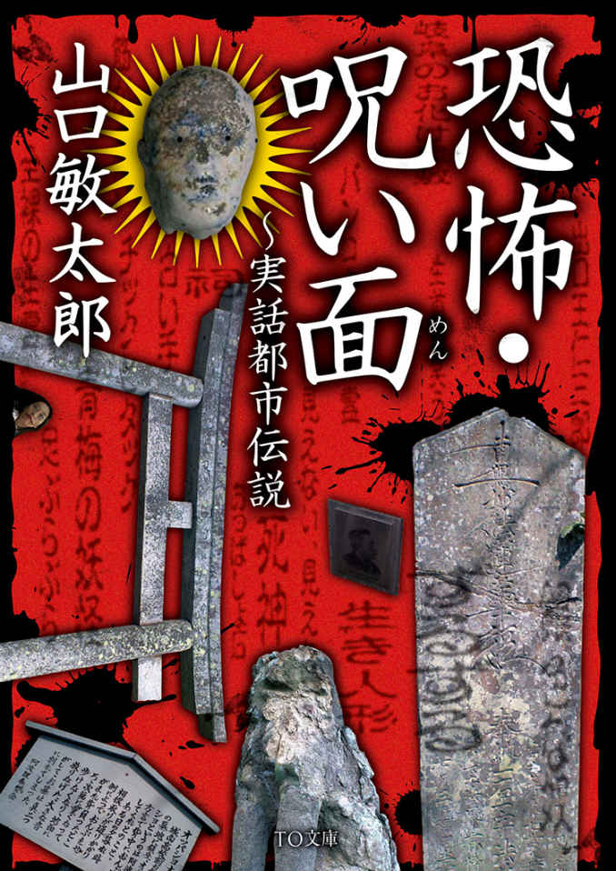
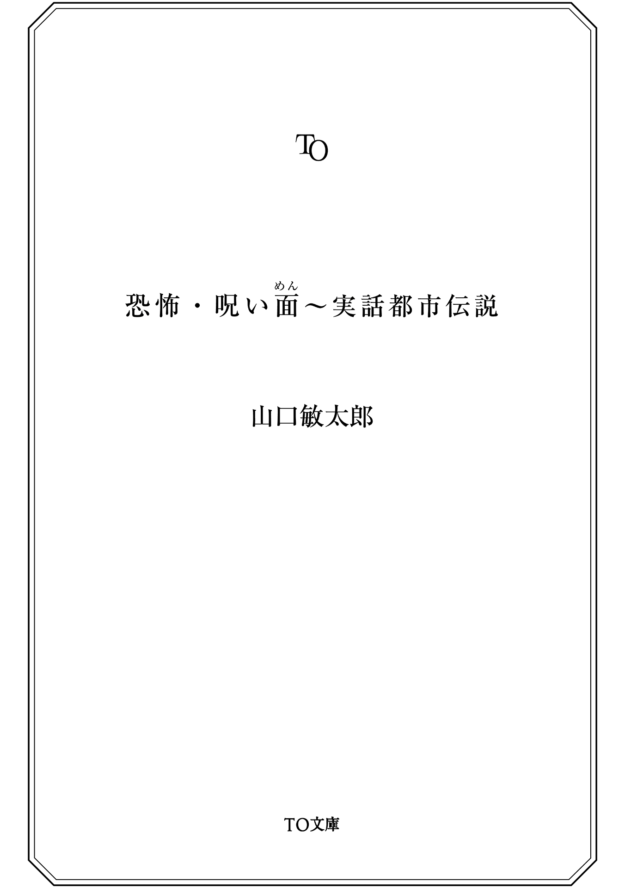
まえがき──真の怪談〝真怪〟を召喚せよ
このまえがきにて、はっきり断言しよう。ここ数年あまりにも安易な創作による怪談本が多すぎる。
伝聞による進化の過程を満喫する都市伝説本ならば別である。だが、〝実話怪談〟と銘打っておきながら、見え見えの創作怪談を披露する書籍のなんと多いことか。
少なくとも、霊的な世界を信じているならば、決してこのような愚挙には至らない。
その由々しき現状に一石を投じるのが本書である。無論、本書は全てガチンコの怪談を書き綴った作業結果の産物である。
本書に書いていることは全て私が見聞した、実際にあった話であり、土着の習俗がいまだ息づいていた時代の断片を切り取ったものである。ゆえに明確なオチのない話や、具体的な説明のない話もある。だが、文面からじわじわと伝わる異様なリアリティは、確かに体感できるはずである。
永らく山口敏太郎は、〝研究家〟であって、〝作家〟ではないと誤解されてきた。だが、ここに宣言しよう。一度でも山口敏太郎のガチンコ怪談のリアリティに浸れば、心眼が覚醒するはずである。読者は、ただ単に残虐であったり、奇抜であったりするだけの、実話と称する創作怪談とは違う〝真の怪異証言〟があることを知るだろう。
日本人ならば、心の源泉に息づく怪異のアンテナを張り巡らせよ。人々が実際に体験し証言した真の怪談〝真怪〟は、きっと鮮やかな足跡を残してくれるはずだ。
山口敏太郎
目 次
恐怖・呪い面〜 実話都市伝説
一 死体
小学校の低学年生の頃、死体を発見したことがある。
汚水の中に浮かぶ青白い肢体。
（綺麗だなぁ）
何故かそう思った。遺体の廻りには、人から出た脂が拡散しており、朝日でキラキラ光っていた。現実と非現実が交差した瞬間は、今も脳裏にこびりついている。
この子どもの頃の経験は、僕がオカルトやホラーの世界に進む大きなきっかけになった。山口敏太郎誕生の瞬間である。
その日僕は、近所に住む同じクラスの女子・Ｍ本さんと一緒に、僕が通っていた八万小学校に向かっていた。何故か、その日に限って朝早く目が覚めてしまい、当時ちょっと好意を寄せていたＭ本さんと一緒に学校に行くことになった。
（やはり、女の子との通学は楽しいな）
子どもであったが、好きな女の子との通学で気持ちが高ぶったが、その幸福な時間はあまり続かなかった。
「間 くん（僕の本名）、あたしも一緒にいくわ」
僕がＭ本さんと一緒に歩いていると、途中でＫ山さんがそう言って合流してきた。Ｋ山さんも近所の女の子であったが、僕よりも背がかなり高く、男子の自尊心を傷つけられるので一緒に歩きたくはなかった。
（ええ、Ｋ山も来るのか、ああぁ、ええけど）
一応笑顔で応えたものの、内心は不満であった。（なんだよ。せっかくのＭ本さんとの時間を台無しにしやがって）。少し興ざめではあったが、おしゃべりをしながら三人で歩いた。しばらくすると、八万小学校の裏手にある川が見えてきた。高度経済成長期特有のドブ川の臭いが鼻腔 を刺激する。
当時、八万小学校の裏には深い川があり、川辺は、緑色のフェンスで囲まれていた。いつもコインゲームをやりに行っていた、行きつけのお好み焼き屋の前を通り、その川の真横に来た。
「......んっ？」
何か嫌な感じがした。そして、ゆっくりと視線を川面に落とすと、奇妙なモノが水面に浮いているのが見えた。
（これはなんだ？）
脳内が混乱し、心が動揺しているのがわかった。
「間くん、あれなんだと思う？」
Ｍ本さんの指差す方向には──〝人間のようなもの〟が浮いていた。
「.........」
三人に訪れる長い沈黙。
（まさか、人間......？ こんな場所に）
よく見てみると、手も足もないダルマのようだった。映画で見るような死体がこんな住宅街の川に浮いているのか。一瞬困惑したが、すぐにその答えは出た。
「あぁ、マネキンとちゃうか？」僕は冷めた口調で答えた。Ｍ本さんの前でかっこつけている部分もあった。
「マネキン？ だって、マネキンがあんな古い服を着るの？」
Ｋ山が不満そうに言った。確かに、そのマネキンは妙に古ぼけた服を着ている。
「だったら、石を投げてみよう。マネキンならコツンって音がするし、人間ならボトンって鈍い音がするんとちゃうか」
そう言って僕は石を投げてみた。虚空を舞って石が落下する。
「ボットン」
マネキンと思っていたはずの物体の背中に当たった石は、鈍い音を立てて水中に沈んでいった。
「......」
立ち尽くす三人の間に、再び嫌な沈黙が流れた。
その次の瞬間、死体がぐーっと水底に向かって沈んだ。
「ザザザブブブン」と妙な音を立てて裏返った。その瞬間、切断された腕か足の断面が見えた。やや突き出した腕の骨らしきものの周囲に──赤黒い肉片がついていた。
「ひぃぃぃぃ！」
三人は同時に緑色のフェンスから後方に飛び退いた。
「ぎぎぎぎぎぃぃぃ」奥歯を擦り上げながら、三人は悲鳴にならない声を上げた。
僕は先程見たモノを脳内で反芻 してみた。
「これはあかんわ、僕、お好み焼き屋のおばちゃんを呼んでくるわ！」
僕は顔馴染みだった、お好み焼き屋のおばちゃんを呼びに行き、死体を指差し説明した。
「あわわわっ」
訳のわからないことを喚きながら、おばちゃんは警察に通報した。その後、警察官が到着すると、周囲には白い幕が張られ、大勢の警察官が周りを固めた。
その夜の夕食時、この切断遺体発見のニュースがテレビで流れた。テレビの画面では、マイクの前でお好み焼き屋のおばちゃんが興奮気味にレポーターの質問に答えていた。一緒にテレビを観ていた父が、僕にこんなことを言った。
「この死体、ほんまは敏幸 （僕の本名）が第一発見者やろ」
「そうなんよ。ほんまは僕やで」
と言いながら、僕はおかずの鶏肉に思い切りかぶりついていた。
このエピソードが、オカルト作家・山口敏太郎のスタートであった。
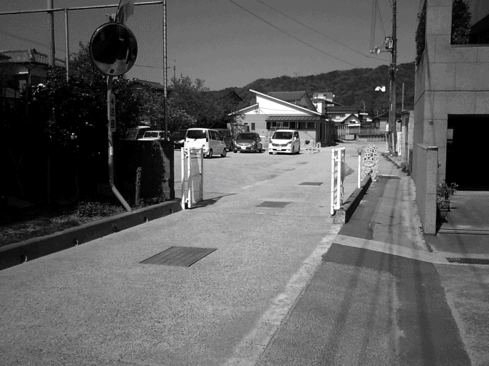
現在の八万小学校の裏口。当時の面影はまったくない。
二 手首
僕は徳島県にある、徳島市立八万小学校に通っていた。百年を超える古い小学校だけに、数多くの学校怪談が語られていた。かくいう僕も、小学生二、三年生の頃、奇妙なモノを見たことがある。これはその時の体験談である。
その頃、学校では、帰る前の清掃が行われていた。基本的に真面目だった僕は、いつも黙々と掃除をしていた。
「わーっ、わーっ！」
ヒステリックな声が聞こえてきた。教室横の便所を清掃している班の連中が叫んでいる。
「まるで、動物やな」
そう呟きながら、掃除の手を止めた僕は、隣の便所まで足を運んでみた。
「わぁぁわああぁぁ」
女子が口をあぐあぐさせながら、半泣きで便所から出てきた。お調子者の男子数名が走り回っており、お祭り騒ぎになっていた。
「お化けや、お化けが出とる」
大声で喚く同級生の男子。もうその顔は喜んでいるのか、怖がっているのか不明であった。
僕はトイレから出てきた同級生を引き止め、冷めた口調で訊いてみた。
「お化け？ 昼間やど」
「ほんまやって、間、おまえも奥の便器覗いてこいや」
「なんでまた、そんな妙なもんを見なあかんの......？」
「はぁん、お前、怖いんか」
「怖くないって」
「じゃあ、いけや」
そう促され、僕はアンモニア臭を我慢しながら、便所の奥にある便器に向かった。
「行けばええんやろ」
背後で女子たちが不安げに見守っているのがわかった。
やれやれ、と思いながら、ずんずんと奥に進んだ。奥の便器の手前まで行くと、数人の同級生が立っていた。
「何があるんや」
「まぁ、見てみぃ」
僕がそっと覗くと、便器に──手首が浮いていた。確かに人間の手首である。
（なんで、こんな場所に人体の一部があるんだ。そもそも本当に手首なのか？）
一応水洗だが、和式トイレの便座の水がたまる場所から、今にも這い出んばかりに〝手首〟が覗いている。──何度見ても手首であった。水に浸かっていたからであろうか、二倍から三倍ぐらいに膨らんでいるし、皮膚は破れ白濁 化している。
「ほんまやな、手首や」
「間、ほんまやろ、どうしたらいい？」
既にこの時、心霊マニアとしてクラスの中で有名であった僕は、同級生たちに取り囲まれ、対処を迫られた。
「そうやな、とりあえずこうするか」
そう言って、便器の排水弁を足で押した。勢いよく水が流れ、手首はくるくると回って流れていった。
「これで、終わりやな」
「あぁ、そうだな」
解決したわりには、納得のいかない面持ちの同級生たち。今でも時々考えるのだが、あの手首はなんであったのか？ 何故、手首であったのか？
不可解な思いは今でも心に残っている。
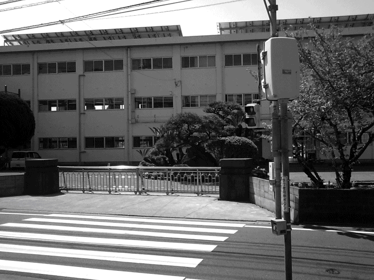
僕が様々な現象を体験した、八万小学校の正門
三 昭和50 年代初頭
まだ、日本が高度経済成長期の余韻を残していた頃。地方都市にもそれなりの活気と勢いがあった。
僕が小学生だった頃の徳島市は、山や川といった自然に恵まれ、空気や水も美味しく、毎日学校の帰りは泥んこになって遊んだものであった。しかしその後、山が崩され、池が埋められ、徳島市のあちこちで住宅が建築されていた。
徳島市八万町にある八万小学校の終業のチャイムが鳴った。掃除係になっていない級友たちが、バタバタと帰り支度に入る。
（そうだ!! 今日は大好きな特撮番組の再放送があるから、寄り道しないで帰ろう）
そう思いながら、僕がランドセルに教科書を詰め込んでいると、同級生の佐川が声をかけてきた。
「おう、寛平 !! 今から空き家の探検にいくぞ」
「はぁ、空き家か」
僕が面食らっていると、小柄で浅黒く日焼けした佐川が、にやにやと笑いながら近づいてきた。当時、吉本新喜劇で人気絶頂だったのが、若かりし頃の間寛平であった。僕の本名が、間だったからか、佐川はいつも僕のことを「寛平」と呼んだ。
「寛平!! おまえ、うちのクラスの妖怪博士ちゃうんか」
「まぁ、そうやけど、あの空き家は妖怪とは違うし......」
「妖怪対策でおまえを連れていくんじゃ。ははぁぁん、怖いんやな、わかった、寛平、おまえは臆病もんやな」
「ちゃうちゃう、ちゃうわ、そんなんちゃう」
「じゃあ、行くやろ、決まりやな」
いつも不真面目で人を馬鹿にしたところのある佐川とは、妙にうまがあった。正直、佐川の家は経済的に貧しい人が住むエリアにあり、祖母などは、
「あの地域の子供たちと遊んではいけない」
と強く言っていたのだが、僕は佐川の、貧乏など気にしない明るさが好きだったし、差別心のない僕の気持ちを、彼も認めていたからだろうか、時々、一緒に遊ぶことがあった。しかし、彼と遊ぶときはいつも、最後には僕が酷い目にあったり、騒動に巻き込まれてしまうことが多かったのだが......。
その日、佐川が案内した場所は、連棟式住宅の一番端の家であった。噂では風呂場で自殺を図った女が、手首を切った後、死にきれずに放火したと言われる、近所でも評判の〝事故物件〟であった。
「おい、こーくん（佐川のあだ名）、これって自殺があった家やろ？」
「そうや、だから入るんや、自殺現場とか放火現場って一回見てみたいやんか」
「そっ、そうかな」
佐川はにやにや笑いながら、空き家の窓を開け、自分のランドセルを家の中に放り込んだ。
「ここが開いてること、知ってたんや。寛平、後に続け」
「捕まったら、やばい気がするんやけど」
僕も、佐川の後に渋々続いた。今でも記憶にあるのだが、部屋は一つしかなく、その他は台所と風呂場があるだけの小さな家であった。家の横の窓から侵入し、床に着地すると、右奥に台所と風呂場が並んで見えた。自分たち以外の小学生も侵入しているのだろうか。妙に埃っぽく、足跡や手形が沢山あった。
「おおおっ！ あれが自殺現場やな」
佐川は興奮しながら風呂場に入っていった。僕もそのあとに続いたのだが、黒く変色した血が壁から床に向かって一直線についていた。壁面と天井は、放火の痕だろうか、黒く焼け焦げていた。
「おおっ、これ血の痕やな、手首切ったあとやな、火が燃えた痕もあるわ」
佐川はテンションがマックスだったが、得体の知れない匂いと異様な空気に僕は吐き気を覚えた。
「ここで失恋した女性が死んだって話やけど......」
「そうや、寛平!! 女が手首、切った場所はここやなぁ！ ごっついわ」
いつものことながら友人・佐川の不謹慎ぶりに眉をひそめていると、奇妙なことが起こった。急に体にのしかかる空気の重量が重くなったのだ。まるで相撲取りに、両肩を上から押されているかのようだった。
（......んっ、なんだ）
空気の重さだけではない。明らかに体感温度も下がった。
（......あっ、あかん、何かがおる）
風呂場の壁面を見ていた僕と佐川は、一様に黙り込んでしまった。異様なムードと誰かからの敵意を感じた。もの凄い憎悪の念が背中にまとわりついてくる。
──やはり、背後に誰かいるのだ。
目を大きく剥いた佐川がごくりと生唾を飲んだ。不謹慎な彼もさすがにこの異様な空気に抗えないようだ。黙ったまま、僕と佐川は目を合わせた。
「......ん」
「......あっ」
それが合図だった。同時に振り返る二人。風呂場と部屋の仕切りのあたりに女が立っていた。しかも、全身が赤い。赤いシャツに、赤いスカート。目玉も充血しており、ぎらぎらと赤い。──陽炎のようにゆらゆらとゆれる女。女は何処か遠くを見るような目をしながら、悠然と立っている。顔はまったくの〝無表情〟である。なぜか、質感はなく、コマ送りの古い映画を見ているようにも感じた。
（この女は誰だ!? 管理人か、それとも自殺した女の遺族か、憎悪の念の主はこいつなのか？）
困惑した僕と佐川は、意を決して女に向かって突撃した。いつものことなのだ。悪戯などが発覚すると大人相手に逃げてはいけない。逆に思い切り向かっていくと大人が驚いてしまい、退路が開けることが多かった。
「うわわわぁぁぁぁ」
声を上げて女に体当たりした佐川と僕。だが、妙な具合だった。女の体に当たったと思われた瞬間、我々二人は通り抜けてしまったのだ。
（おかしい、なんでやろ）
不思議に思った瞬間、僕の鼻腔を女性が使う香水の香りが刺激した。さっきの赤い服の女が使っていた香水だろうか。そう思いながらも、佐川と僕は転がるように窓から這い出ると、そそくさと逃げ出した。
これが僕、山口敏太郎と赤い服の女との出会いであり、何十年に及ぶ、永い永い怪異の始まりだったのだ。
翌日から佐川に異変が起きた。明るかった佐川が暗く塞ぎこむようになり、僕とも遊ばなくなったのだ。
（あいつ、どないしたんやろ、あの赤い服の女にとりつかれたんやろか？）
僕の心配を余所に、佐川の奇行はエスカレートしていく。我々八万小学校の生徒がよく行っていた、駄菓子屋の店の前に設置されていたガチャポンの機械を強奪。中身をすべて抜き去り、空になった機械で駄菓子屋の窓ガラスを打ち破り、店の中へ放り込んでしまった。
また僕の目の前で、佐川は放火に及んだりもした。
「へへへっ」
半笑いの佐川は、八万小学校の隣にあり、僕と佐川が卒園した八万幼稚園にあった雑巾干しに放火したのだ。
「こーくん！ 何しとるんじゃ!? 」
「はははっ、寛平、見てみい、燃えとるぞ」
幸い一緒にいた同級生たちが、幼稚園にいた保母さんに通報。火はからくも消しとめられ、佐川は僕の目の前で保母さんに連行されていった。
「うぎゃぁぁ！ うぎゃぁぁ！ 赤い服の女が火をつけろって言うんやー」
足をジタバタさせながら、引きずられて行く佐川を見送りながら、僕はなんともいえない気分になった。
（こーくん、あかんで、俺らはとんでもない場所に踏み込んでしまったんかもしれんぞ......）
佐川が精神に異常を来たし始めたのはこの頃であった。──そしてその怪異は、僕にも迫りつつあった。
小学校から徒歩十分の位置にある僕の家は当時、子供部屋と母屋が離れていた。離れているといっても廊下でつながっているから、寂しいことはなく、僕と上の弟（現・山口敏太郎事務所の経理）は離れで暮らし、両親と当時二歳だった下の弟は母屋で暮らしていた。
ある晩のこと、離れの二段ベッドで僕と上の弟は寝ていた。
（なんかいな、この暑さは）
僕が二段ベッドの下で目を覚ますと、周りは火の海だった。もの凄い勢いで火が走っていき、壁を伝って天井まで火が回り、天井近くに貼っていた巨人軍の柳田選手と堀内投手のポスターを焼きつくした。
「あかん、間に合わん」
ベッドから飛び起き、二段ベッドの上で寝ている弟を起こし、母屋の両親のもとに走らねばならない。
そう思った瞬間、目が覚めた。
（どういうことやろ？）
部屋は普段のとおりであった。ただし、巨人軍の柳田選手と堀内投手のポスターは机の上にあった。そういえば、先週剥がしたのだ。あのポスターが貼られたまんまであったということは、やはり夢であったのだ。
（明日も学校やのに......）
ぶつくさ言いながら僕は再びベッドに横たわった。だが、その後も何日かおきに、何度も火事の夢を見てしまい、必ず巨人軍の柳田選手と堀内投手のポスターが焦げるシーンを見てしまうのだった。
しばらく経ったある日、僕は母に祖母の店まで使いを頼まれた。当時、祖母は家の近くの眉山の麓で花屋を営んでおり、週末になると上の弟と交代で泊まりにいっていた。祖母思いだから通っていたのではなく、狙いは祖母がくれるこづかいであった。その日は、泊まりではなく、使いであったので、自転車で十分ほど走り、祖母の店に行った。
「ばあちゃん、来たでぇ」
そう言いながら、花屋に入ったところ、中から出て来た女とすれ違った。
──赤い服を着ている。
（なんや、あの女）
祖母の花屋は寺町にあったため、仏花が多く、決してかわいい花屋ではなかった。むしろ、陰気なムードのする花屋であり、赤い服を着た若い女性の客が来るなどありえない。
「ばあちゃん、今のお客さん、何こうたん？」
「ええっ？ お客さんなんか来てないで」
そう言った祖母の怪訝そうな顔を、今でも覚えている。
それから数週間後、祖母の花屋がもらい火で焼けてしまった。
「敏幸、ばあちゃんの花屋な......、焼けてもうたで......」
電話を切った後、そう僕に話しかけた母の動揺は異常であった。幸い祖母の命に別状はなく、もらい火で焼けた部分は店のバックヤードにあたる部分であり、商売もすぐに再開できた。
（あの女や、間違いないわ、こーくんの次はうちのばあちゃんか......）
──赤い服の女は確実に、僕への包囲網を狭めてきていた。
祖母の花屋が火事に遭ってから数ヶ月が過ぎ、僕が五年生になった秋のことだった。当時の教室はたてつけが悪く外気が入り込んで、秋口になるとかなり冷え込んだ。その日も寒かったのだが、教室のストーブには灯油が入っていなかった。
「灯油がないけん、ストーブがつけれん」
教室では女子たちが、そう言いながら騒いでいた。僕はストーブの横に座っていたのだが、灯油を入れるような面倒なことには関わりたくなかった。
「俺が入れたろかぁ、俺ストーブに灯油入れるの得意やねん」
大阪から転校してきて数ヶ月の川島が言い出した。彼なりに教室の仲間に溶け込もうとしていたのかもしれない。十分ほどで灯油のタンクを抱えて戻ってきた川島は、灯油をストーブに注ぎ込んだ。
「うわぁ、川島くん、凄い」
女子たちから賞讃の声が上がった。
「ほな、つけるで」
川島がストーブをつけようとした瞬間、担任の坂山先生が入ってきた。
「なんやろ、この匂い？ どないした、川島」
「先生、僕、灯油入れることできるんやで、ほら、つけるで」
その瞬間、坂山先生が物凄い勢いで川島に飛びつき、スイッチを捻ろうとする川島をタックルで跳ね飛ばした。川島はもんどり打って床に転がった。
「何するんや!! 俺、灯油入れただけやんけ!! 」
川島が涙で絶叫した。
「アホか!! おまえが入れたんは、灯油ではのうでガソリンや！ 点火したら、教室にいる全生徒が火達磨 や！」
坂山先生の言葉に教室が騒然となった。川島が入れたのはガソリンであった。もし坂山先生が入ってくるのが一秒でも遅れたら、タックルで川島をふっ飛ばさなかったら、──僕は確実に焼死していた。
その後、川島の母親が中心となり、なぜか坂山先生は暴力教師として糾弾されてしまうのだが、先生は悪くなかった。今、考えても冷や汗ものであり、僕は坂山先生の機転により命を救われたのだ。──赤い服の女は、どうしても僕を殺したいのだ。
そして、さらに一年半が過ぎた頃。赤い服の女は、とうとう僕の実家に手を出してきた。
中学一年になっていた僕は、離れで勉強をしていた。スポーツ好きだった上の弟は勉強もせず、母屋で下の弟とテレビを見ていた。歴史と国語が好きだった僕は、試験勉強のため、かなり集中し暗記作業に入っていた。その時、化学薬品のような匂いが鼻腔を刺激した。明らかに何かが焦げている匂いだ。
「......んっ、何か臭いなぁ」
これはおかしいと思った僕は、母屋の両親に異臭を訴えた。
「風呂場の方で、何かが燃えてるよ！」
「まっ、まさか!? 」
両親が風呂場に飛び込んだ。僕も後に続いたのだが、あの瞬間の映像は今でも脳裏に鮮明に焼きついている。父親が風呂の蓋をとった瞬間、まるで蛇のような炎が立ち上り、さささっと壁と天井に炎が走った。
「お母さん、水や水!! 」
父と母はホースを使って台所から水を引き放水したが、まったく火は消えない。そのとき父はこう言った。
「あかん、逃げよう！」
父の判断は正解であった。瞬く間に火は回り、たくさんの思い出があった母屋は風呂場の周辺が焼けてしまった。ボンボンと音を立てて燃える我が家。呆然とする母や弟たち。当時、家の建て替え計画があったため、父は消防署からずいぶん疑われたと後日苦笑していたが、目の前で実家が燃えていくのを見るのは辛かった。夜にもかかわらず、うちの家の周りには数百人の野次馬が集まっていた。
「なんや、こいつら、他人の不幸をなんやと思ってるんや」
いつの間に、何処からやってきたのか。不思議に思うくらい、気がついたら群衆が我々一家を取り囲んでいたのだ。
──その中に赤い服の女がいた。
「おい、待てよ！」
既に中学生となり、体格も良くなっていた僕は女を追いかけたが、押し寄せる群衆に飲まれてしまい見失ってしまった。
「あかん......何処にいったんやろか」
僕が、女のいた場所に到着すると、覚えのある匂いがした。
「......んっ、この匂いは」
あの廃墟で嗅いだ香水の匂いだった。その瞬間、僕はすべてを理解した。他人が悲しんで命を絶った現場に土足で入り込み、悪ふざけした佐川と自分。僕はなんてひどいことをしたんだろうか。今、自分の家が焼けている中で、周りを取り囲んで見物している野次馬たちは、あの時の佐川と僕ではないか。
他人の不幸を笑うこの野次馬どもが憎いと、自分が思ったように、赤い服の女は僕を憎いと思ったのではないか。
他人の悲しみや苦しみを笑ってはならない。十三歳の僕はその時、そんなふうに思った。
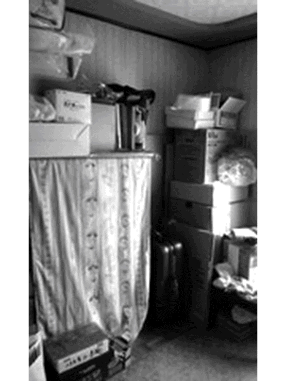
今は物置になっている実家の僕の部屋
四 銀色な奴
これは、赤い服の女を初めて目撃したのと同じ、小学校三、四年生の頃の話だ。
僕は、近所にあった祖母宅に、週末の度に泊まっていた。無論、ばあちゃん孝行ではない。ただ、なんでもわがままを聞いてくれるうえ、毎回千円のこづかいをくれたから泊まっていたのだ。孫とは兎角、残酷な生き物である。
そのうち、上の弟が小学校にあがると、弟と交代で行くようになるのだが、時には弟と二人で祖母宅に行くこともあった。祖母は、眉山の麓に広がる寺院群を当て込んだ花屋「花・間」を二軒屋町で何十年も経営していた。
「うちのお客さんは、仏さんや。大事にせなあかん」
祖母は度々そんなことを言っていた。寺町の花屋なので、置いてある商品は、シキビ、榊、菊など地味なものばかりであり、夜中の店内は無気味な異空間であった。同じ町内に父の母方の従兄弟の子供、つまり、再従兄弟のなお君という一つ上の男の子が住んでいた。僕の父方の祖母と彼の祖父が姉弟であった。
なお君には、僕も弟もよく遊んでもらった。次男坊であり、弟が欲しかったなお君と、長男坊であり兄貴が欲しかった僕は、赤ちゃんの頃からの仲良しであった。
そんな３人が大道という通りにある、忌部 神社の裏山で遊んでいた時の話である。
この場所は二軒屋町の子供にとっては、大人に見つからない近場の絶好の遊び場であり、秘密基地でもあった。そこで昆虫を捕まえているとき、妙なモノを目撃した。
──変な巨人が歩いていたのだ。
忌部神社の裏山で徘徊する巨人が、我々三人の目に留まったのである。身長は境内の鳥居と遜色なく、二メートルは余裕で超えていたと思う。だが、一番不審なのは全身を覆う銀色のスーツを着ていた点である。昼下がりの太陽を鈍く反射しながら動く巨人。どう見ても、まともな人間には見えなかった。
「あいつ、怪しいなぁ」
なお君がつぶやいた。僕も弟もあまりの異常さに、目が釘付けになった。
「なお君、あいつ悪い奴ちゃうか」
僕の言葉になお君は静かに頷いた。銀色の巨人は、手に四角い金属の箱のようなものを持って、うろうろしている。巨体のわりには、移動がスムーズに見えた。
「ちょっと、観察しよう」
なお君の提案で、三人は岩陰に身をひそめ、銀色の巨人の行動を見守った。僕はその頃、江戸川乱歩の少年探偵団にはまっており、気分はすっかり小説「少年探偵団」に出てくる小林少年であり、怪人・二十面相の悪事を見張っている心境になっていた。だが、青い顔で震えていた弟が、恐怖に耐え切れず思わず声を上げてしまった。
「うわぁぁ!! 」
「よっちゃん、何を言うんや」
なお君がつぶやいた。
「アホか」
なお君と僕はそう言って、弟の口を押さえたが、こちらに気がついた銀色の巨人が箱を持ったまま、大股歩きで猛然とこちらに向かってきた。もの凄いスピードである。
（あかん、捕まってしまう）
目の前まで銀色の巨人が来た。
（うわああ、殺される）僕はそう思った。......が、その後の出来事を覚えてないのだ。
──記憶が消えた。記憶はここで止まっているのだ。これはいったいどういうことであろうか。消されたのか、消えたのか。やっぱり白日夢 だったのだろうか。
あの日の出来事はなんであったのか、と悩む日々が続いた。だが、いつしか大人になり、常識が身につくと同時に、この記憶は自分の〝模造記憶〟ではないかと思うようになった。つまり、子供の頃の自分が見た夢か何かを、実際にあった出来事だと勘違いしていただけではないか？
「悪い夢なのだ」
そう思っていた。いや、そうであって欲しかった。
数年前のある日。株式会社山口敏太郎タートルカンパニーで総務部と経理部を統括している弟に、なんとなく訊いてみた。
「昔、なお君と一緒に、忌部さんの裏で、銀色の巨人を見たよな」
すると弟がこんなことを言った。
「あぁ、見たよ」
「ええっ!? 」
「あの時は、僕が大声を出してしまって、兄ちゃんたちに怒られたよね。銀色の服を着た巨人がこっちまで走ってきたけど、そこから記憶がないんだよ」
僕は声が出なかった。──銀色の巨人は、現実だった。弟は確かにあの日、銀色の巨人を見ていたのだ。
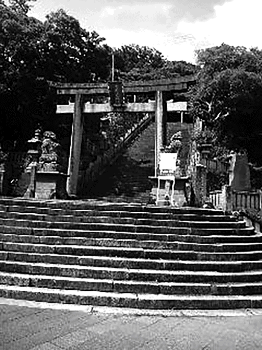
巨人を見た忌部神社の鳥居
五 おっぱしょ石
僕が妖怪を初めて見たのは、徳島市二軒屋町のはずれにある「おっぱしょ石」であった。これは花屋の祖母宅から、叔母の家まで行く途中にあった奇石であった。山沿いに古い墓石が林立する中に、「おっぱしょ石」が聳え立っていた。この石には不気味な伝説が残されている。毎夜毎夜、
「おっぱしょ〜（標準語では、おんぶして下さい）おっぱしょ〜」
と泣く不思議な石であり、哀れに思った通行人が背中を出しておんぶしてやると、ナニモノかがおぶさってくる。そして、──突如、重くなる。
ある日、石をおんぶしようとしていた相撲とりが、重くなるやいなや、
「おのれ、妖怪め」
とばかりに石を地面に叩きつけた。
「パリリィーン」
おっぱしょ石は、まっ二つに割れてしまい、以来泣かなくなったという。まさに妖怪石であり、僕の子供心をくすぐる存在であったが、祖母の証言では〝単なる狸 の悪戯だ〟と地元では言われていたという。
（単なる狸の悪戯って、どういうこと？ 狸が人を化かすことを前提で言うてるし）
妖怪に興味を抱いていた僕は、祖母の使いで叔母の家に行く度に、この石を観察した。
この石には数々の思い出がある。小学校の四年生か、五年生の頃だったと思うのだが、落雷が発生し、真っ二つに割れてしまったのだ。割れた上半分は、しばらく横倒しで放置され、僕はたいそう不気味な思いをした。
「伝説のまんま、まっ二つに割れてるわ」
あの不気味さは半端ではなかった。通る度に戦慄が走った。その後、その石は無事コンクリートのようなものでつながれた。
以前、水木しげる氏のサイン会が、徳島市内のデパートであり、僕も駆けつけサインをもらった（もちろん、この時もらったサインは今もとってあり、山口敏太郎事務所の玄関に飾られている）。
その時、サイン会の前後に水木しげるが「おっぱしょ石」を見に来たと、祖母宅周辺の人が騒いでいたことを記憶している。
「水木しげる先生がおっぱしょ石を見に来たらしいで」
「ほんまかいな、おっぱしょ石も出世したもんや」
何が出世だかわからないが、その後、「おっぱしょ石」は水木しげる氏の妖怪図鑑に度々掲載された。
また、現在「おっぱしょ石」にある説明看板は、僕の小学生時代に設置された。設置作業をしていた時、市からやってきた職員に対し、
「これが、伝説のおっぱしょ石やで」
と案内したのは、父の従兄弟の奥さんであった。祖母から見れば甥っ子の嫁である。
「誰だ、おっぱしょ石に案内したんは」
その祖母の問いかけに、その親戚のおばさんが答えた。
「うちが教えたんやで」
「なんで教えたんじゃ、ほんまのおっぱしょ石が別にあるのに」
僕の横で祖母が確かにそう言って、親戚のおばさんへ怒っていたのを記憶している。
「ごめんなさい、ごめんなさい」
おばさんはしきりに謝った。だが何故、祖母はそんなに怒ったのか、理解ができなかった。しかし、気になることがないわけではなかった。「おっぱしょ石」は妖怪石なのに、何故か表面に──南無妙法蓮華経と書かれてあるのだ。
妖怪石なのにお経、この疑問は長年僕の胸裏にあり、違和感を生み出していた。いや、そもそも、落雷で割れる前は、石には割れた跡はまったくなかった。伝説では侍や力士によって割られているはずである。それなのにこの「南無妙法蓮華経」と刻まれた石には割れた跡がなかったのだ。この「南無妙法蓮華経」と刻まれた石は、おっぱしょ石の怪異が終わった跡地に設けられた供養石であり、そもそも怪異そのものは違う石で起きていたのではないのか？ そう考えた。
「ほんものが別にあるとしたら、どれや？」と、僕は何度も現場に行く度に頭をひねった。
ある日、祖母と〝咳のおばあさん〟と呼ばれる祠 にお参りに行った。この祠は昔、咳で亡くなった老婆を祀 ったものであり、咳や風邪で苦しむ庶民が参拝すると立ちどころに病が治ると言われていた。
「あんたは、喘息 やけん、今朝も行っとくでぇ」
「あぁ、咳のおばあさんやな」
日頃から祖母と僕は、祠にお参りに行っていた。これが不思議なもので、何故かお参りするとしばらくは喘息が良くなる。土着信仰の祠は意外にご利益があるのだ。最近、確認したところ、「おっぱしょ石」の近くにあった〝咳のおばあさん〟の祠はなくなり、道祖神の祠だけになってしまったという。だが、〝咳のおばあさん〟の祠は自分にとって身近なパワースポットであった。
「ばあちゃん、本物のおっぱしょ石ってどれ？」
お参りの帰り、歩き始めた祖母に僕は聞いてみた。今朝は機嫌がよいので、祖母も口を割ると思ったからである。当時既に七十代にもかかわらず、達者な足運びをしながら祖母はにやりと笑って言った。
「あれやで、あれが本体」
祖母は、南無妙法蓮華経と書かれた墓石の横に少しだけ頭を覗かせている黒い石の先端の方を指差した。
「あれが本物の妖怪......ええっ？ 本体ってなんやろ」
僕は心に深く刻んだ。──妖怪には本物とニセモノがあるんだ。
でも、──本体ってなんやろ。
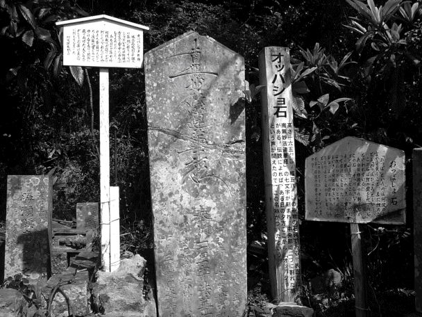
徳島の奇石、おっぱしょ石の碑
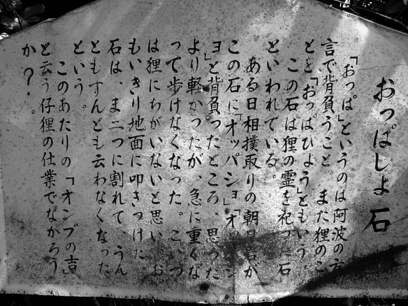
おっぱしょ石の近くにある、名前の由来と言い伝えが書かれた石。
六 おっぱしょ石VS 人間
おっぱしょ石には、まだまだ妙な話がある。
小学校の高学年か、あるいは中学校に入ったばかりの頃だったような気がするが、Ｉ野君のお母さんが学校帰りの僕を呼び止めた。
「間くん、おっぱしょ石に案内して」
何故か目玉がぎらぎらしており、横では申し訳ないような顔をしてＩ野君が立っていた。
「あぁ、ええよ」
僕はＩ野君とお母さんの三人を、「おっぱしょ石」まで案内した。二軒屋町から城南町に至る道のカーブまで来たところで、「おっぱしょ石」を指し示した。
「あれやで」
「間くん、ありがとうな」
そう言うとＩ野君のお母さんは、草を掻き分け、斜面を登ると「おっぱしょ石」の前に立った。
睨みあう両者。
「●○×▲□※●○×▲□※●○×▲□※」
Ｉ野君のお母さんは意味不明な呪文を唱え始めた。表現しようのない、異様な雰囲気が周囲に漂う。
「ええっ、なに、なに、何やるの？」
「ごめんなぁ、間君」
Ｉ野君がすまなさそうな顔をした。動揺する僕の前でＩ野君のお母さんは、
「ハッ ハッ」
という気合と同時に「おっぱしょ石」に手を当てた。
「えええ、そんなんして大丈夫？」
「大丈夫やと思うけど......」
Ｉ野君が苦笑いで答えた。
（そういえば、Ｉ野君のお母さんは、拝み屋さんって聞いたけど、何をやる気や？）
「●○×▲□※●○×▲□※●○×▲□※ ハッ ハッ」
彼女はブツブツ呪文を唱えながら、「おっぱしょ石」に向かって手から何かを送り込んでいるように見えた。だが、次の瞬間、悲劇が彼女を襲った。
「わぁぁぁ」
悲鳴を上げるＩ野君のお母さん。全身が大きく痙攣 している。電気に感電しているかの如く大きく波打つ体。
「ぎえええええ、手が離れない!! 」
奇声を上げながら、手を離そうともがくＩ野君のお母さん。何故か手は（ぴたり）と石にひっついて離れない。愕然となる僕とＩ野君。
「あっ、危ないよ、あれは。Ｉ野君、手を貸して」
「わっ、わかった。こうかな」
Ｉ野君と僕は二人がかりでお母さんの手をおっぱしょ石から引き離した。
あれがいったいなんであったのか。今でもよくわからない。ひょっとすると霊能者とおっぱしょ石の異種格闘技戦ではなかったのかと推測している。
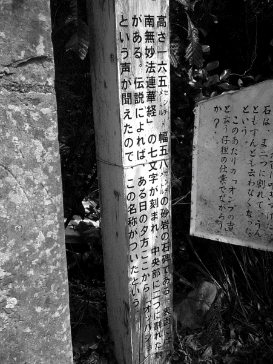
おっぱしょ石に南無妙法蓮華経が刻まれていることが書かれてある碑

阿波の狸伝説には、ユーモラスなものが多い
七 見えない、見えない
僕は小学校五年生のとき、ＵＦＯを目撃した。僕一人の目撃ではない。──クラスの男子、全員で目撃したのだ。そのＵＦＯを見た日のことを記述したいと思う。
その日は、運動会の予行演習であった。女子が演じるお遊戯か何かを、運動場の片隅で退屈そうに男子全員で見ていた。
（つまらんな）
（おもろうない）
そんな雰囲気が男子の中でどんよりと広がっていた。その時誰かが、空を指差した。
「なんか、飛んでるで」
僕の他、数人の同級生が空を見上げた。
「どこ？ どこ？」
「あそこやって」
かつて水死体を見つけた川の横から、運動場に入る裏口があるのだが、そこから運動場を見ると校舎と眉山が見える。さだまさしさんの映画で有名になった眉山が、校舎の背後にゆったりと広がっているのだ。
「ほんまや、なんやろ」
「おいおい、見てみろよ」
同級生たちが騒ぎ始めた。眉山の上空、運動場から見て校舎の右側の空間に白い繭のような物体が浮かんでいるのだ。この距離で、あの大きさならエンジン音が聞こえても良いはずである。だが、まったくの無音である。──しかも動かない。
（あれはなんだ？ 水木しげるの妖怪図鑑に載っていた〝わたりびしゃく〟か、〝カネダマ〟か？）
いつも冷静な僕も脳内が大混乱状態になっている。思わず腰が浮き、その物体をしげしげと見つめてしまった。眉山や校舎と比較すると、数百メートル、いや数キロもある巨大な物体である。
「大塚のバルーンとは違うで」
「そうやな、違うで」
当時、徳島の大企業といえば大塚製薬ぐらいであり、よくバルーンのようなものが上がっていたが、それとは違うのは明らかであった。しかも、よく観察すると物体の真ん中には、四角い窓が真横にまっすぐ並んでいる。
「なんかいな、あれ、お化けか、空飛ぶ円盤か」
「誰か先生呼んでこい」
数分後には、クラスの男子全員がその物体を見たので、担任の先生を呼ぼうということになった。
「なんだ、おまえら」
担任の坂山先生がやってきた。この先生、ブルドッグに顔が似ていることから「ブルちゃん」「ブル」というあだ名で呼ばれている人物である（赤い服の女の事件にも出てきた先生である）。
「先生。あそこに変なもんが浮いているで」
口々に叫ぶ同級生たち。
「うん？ 何処、何処？ 見えんで」
「眉山の横、校舎の横。あるでしょ？」
「白い丸いやつがあるやん」
「うん、うーん」
僕や同級生は必死に坂山先生に説明したが、どうしても先生には見えないのだ。
「あそこだって」
「ううん、見えないね......」
先生は首をひねり続けた。そのうち、その物体が小さくぶるぶると振動しながら、くるりと回転すると──消えてしまった。
大人には見えないものがある。その日僕が理解した〝社会の仕組み〟であった。その後、僕は小学生時代にもう一回だけ、運動場でＵＦＯを見ている。その時は、後におもちゃ職人となって、徳島県で名を馳せるＴ君と一緒であった。
昭和の頃の運動場は、度々ＵＦＯが飛来したものである。ＵＦＯが飛んでいた昭和の運動場、素敵じゃないか。
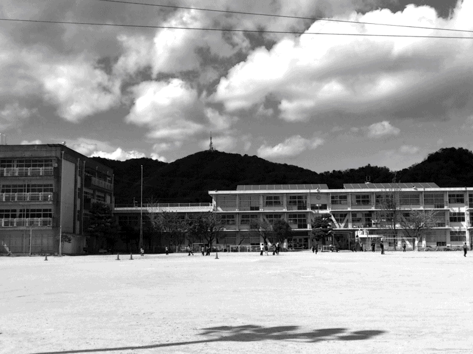
小学校の校庭から望む眉山。昭和30年代には筆者の父もUFO伝説を聞いている
八 足折
小学生時代から中学生時代を通じて、僕はボーイスカウト活動をやっていた。元々アウトドアに興味を持っていたのも事実だが、凝り性のため異常なほどボーイスカウトの知識を貯えてしまい、日本代表としてアメリカジャンボリーやアジアジャンボリーに参加させてもらった。
この話は、そんな筆者が、中学二年の時に体験した不可解な出来事である。
その日、所属ボーイスカウト徳島第一団は、園瀬川の河原でキャンプ中であった。園瀬川は徳島市を流れる河川であり、休日となるとキャンプを張る家族や若者が多い場所であった。
「班長、妙なもんが出ました」
かまど用に河原で穴を掘らせていた後輩が僕に声をかけた。テントの周囲に雨水の排水路を作っていた僕は作業の手を止めた。
「おう、どんなもんが出たんだ？」
後輩が作業していた現場に僕が行くと、そこには犬の腐乱死体があった。頭部を上にして垂直に埋められているが、頭部は切断されている。普通愛犬が死んだ場合、縦に深い穴を掘って垂直に埋める飼い主はいない。
「これは......、まさか犬神 の儀式......」
中学校でも有数のオカルトマニアであった僕は嬉しくなってしまった。
「犬神......、ですか？」
「あぁ、まだ健在なんやな、犬神筋の一族が......」
犬の腐乱死骸を前に、失神寸前の後輩の横で僕は小躍りしたくなった。
（やった！ 廃絶したはずの犬神の儀式、健在やないかぁ）
実は四国においては第二次大戦終戦直後ぐらいまで、犬神という儀式が行われていた。これは犬を頭部だけ出して垂直に土に埋め、目の前に食べ物をおいて飢餓状態に追い込むことから始まる。食べ物が食べたくて限界に達した犬の頭部を切断すると、その魂魄は術を行った者の式神となり、数々の怪異となす。
（現場を確認するとやはり、頭部は切断されている。食べ物も目前においた痕がある）
この河原では今もそんな儀式が行われているのか。そう感慨にふけっていると、さらに妙なものに気がついた。──足の折れた小さな土偶が、犬の頭部近くにあった。
「これは足折の術なのか」
「足折......、ですか？」
「そうやな、足折」
僕はこれまた興奮してしまった。呪いの一種で土偶の足を折って願掛けするという術があると聞いていたが、実際に見るのは初めてだった。
「犬神と足折の併用か、これは凄いぞ」
その日は、そんなこんなで大騒ぎのまま夜が暮れた。
その日も深夜まで僕は後輩たちと話し込んでいた。昼間発掘した犬神の話で持ちきりであった。
「あんなのが、まだあるんですね。この昭和の時代に」
「いや貴重な発見だよ」
「間先輩は、犬神を何に使います？」
「そうやな、ライバルでも蹴落とすか。はっはっはっ」
僕は後輩たちと馬鹿笑いをしながらも、興奮を抑えきれなかった。その時、不気味な出来事に気がついた。
（おや、おかしいぞ）
テントの近くで──足音が聞こえるのだ。誰かがテントの廻りを歩いているのだ。
ガッサ、ガッサ、ガッサ
気のせいではない、何者かがテントの廻りを歩いている。
「おかしい、足音がする。野良犬か？」
「ほんとだ、キャンプ荒らしをするという噂の浮浪者かな？」
後輩三人は震え上がっている。僕も堪えようのない恐怖を感じたが、班長という立場上、落ち着かねばならない。テントの中に緊張感が流れた。
「じゃぁ、確かめよう。そーっと、テントの裾を捲 くって確認しよう」
僕と後輩たちはゆっくりとテントの裾を捲くった。夜露に濡れた雑草が見えた。足音も明確に聞こえた。だが......。
（これは、いったいなんだぁぁ）
僕と後輩たちは度肝を抜かれた。足音がする度に、音もなく雑草が倒れていく。
──でも、足が見えない。いや正確に言うと、透明な足が雑草を踏んでいくのだ。僕は思わずごくりと生唾を飲んだ。
「.........」
もはや、誰も声が出なかった。
（やばい、これは足折された土偶の霊なのか、それとも犬神なのか）
そのまま数分が経過し、高校生の先輩たちが夜間パトロールでやってきた。
「わははははっ」
先輩たちの笑い声がその緊張感を破った。その刹那、怪しい足音は何処かへと逃げ去った。
「うわわわわぁぁぁ!! 」
僕と後輩たちは一斉にテントから飛び出し、先程目撃した見えない足音について先輩に説明した。
「おまえら、寝ぼけてるんだろ」
先輩たちは笑って聞いてくれたが、僕は得体の知れない妙 な感覚に襲われていた。
──あれは、足を折られた土偶であったのか。それとも──首を切られた犬神であったのか。
夏が来ると思い出す、中学生時代の思い出である。
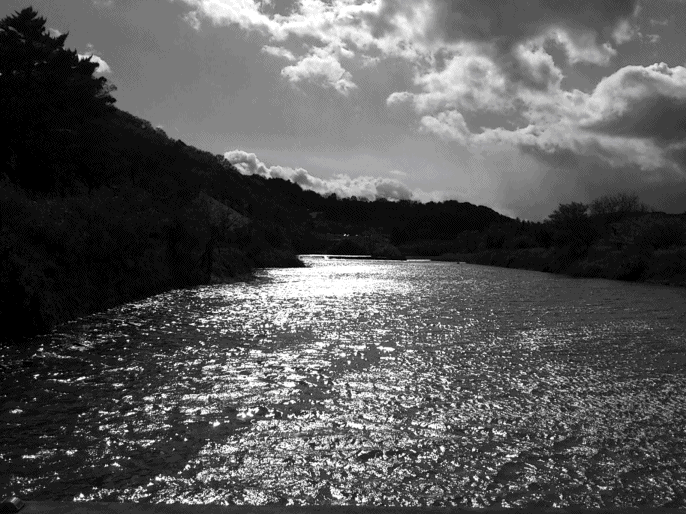
かつて園瀬川には、首なし馬や河童など、妖怪伝説が多くあった
九 白い手
僕が高校二年生の頃、父親の転勤に伴い、我が家は四国の徳島県から、千葉県に移ることになった。昭和五十八年の頃である。引っ越しの時に、父親に呼ばれて、こう言われた。
「おまえは、一人で徳島でしばらく下宿しとけ」
「ええっ、ほんまに？ 一人なの？」
「あぁ、そうやな」
父親が表情を変えずに、クールに言い放った。
当時、自分に合った高校が都内や千葉県内になく、自分だけ徳島県に残り、通っていた城南高校のグランド裏にある下宿屋に下宿することになった。夏休みや冬休みに千葉の家族の元に帰るだけで、十六歳の僕は基本一人暮らしであった。
その下宿屋は老夫婦が経営しており、夫婦が一階に住み二階には下宿部屋が四部屋ほどあったと記憶している。古びた雰囲気の家屋に、徳島県の郡部から出てきた高校生が数人下宿していた。
「やる気が起きんわ」
一日中、日の当たらない部屋で僕は、勉強もせずプロレス本とコミックを読み漁る毎日であった。あの下宿では時間が随分とゆっくり流れた、そんな記憶が今でもある。
時々、同級生や担任教師が心配して訪ねてきてくれるものの、基本気ままな一人の時間を満喫していた。十代の多感な頃、誰とも交わらず一人で沈思黙考する日々は後の自分に大きな影響を与えた。
ある日、僕が高校から帰ったとき、下宿屋の玄関前で信じられないものを目撃した。
「あぁ、なんかおる！」
思わず手に持ったカバンを落とした僕。目の前には蛇がいた。尋常ならざる大きさである。長さが一・五メートルぐらいある蛇が下宿を睨んでいるのだ。
「あんな場所におったら、下宿に帰れんわ」
困惑した僕は妙案を思いついた。石をぶつければ良いのだ。
「これでも、喰 らいやがれ」
僕は思い切り振りかぶって、蛇に石をぶつけた。石が蛇の頭部にぶつかる。蛇は物凄い勢いでこちらに鎌首を向け、鋭い視線で睨んだかと思うと庭の茂みに消えていった。
（おおっ、良かった。蛇はその家の先祖霊が化けたものと言うけど、玄関を塞がれてはたまらんわ）
安心した僕は、蛇のいなくなった玄関を通り自室に向かった。
怪異に遭遇したのはその夜であった。
プロレス雑誌を読み終え、自分なりに村松友視ばりのプロレス論を考察しながら、いつの間にか寝ていた。数時間の睡眠の後、胸が苦しくなり目がさめた。
（うううっ、なんだぁ）
いきなり何者かに覚醒させられた僕。
「あれっ？」
ベッドの横にある窓が異空間のように〝ぐにゅぐにゅ〟蠢 いているのが見えた。まるで異空間への入口が口を開けたようである。
「おかしいなぁ」
僕が首をひねっていると、窓から白い手が出てくるのが見えた。
（これは夢かいな、現実かいな）
困惑する僕。パニックになり、下宿備え付けのベッドから身を起こした。
（とにかく、近くで確認しよう）
次の瞬間信じられないことが起こった。僕に向かって、その白い手が伸びてきたのだ。腕はくねくねと揺れながら自分の方に伸びていく。
「ひぃぃぃぃ！」
体を捻り思わずのけぞるが、白い手はもの凄い力で自分の襟首 を掴んでいる。そのまま、自分の上半身が引き上げられたのを感じた。そのまま、ずるずると引きずられていく。顔面が床を擦 っていく、畳の目が頬に強く当たる。
このままでは、あの窓に広がる異空間に飲み込まれてしまう。窓側に引き寄せられていくのだが、何故か全身から力が抜けて抵抗ができない。
「ああぁぁ、いかんいかん」
僕は思わず神仏や先祖霊に助けを求め、心の中で祈った。
（どうか、どうか助けてください）
それでも引きずられていく。
（どうか、どうかご先祖さま、守護霊さま、お助けください）
すると、不思議なことだが、その白い手から力が抜けた。
（助かったのか）
その白い手は、すーっと窓の方にひいていき、くねくねと揺らぎながら、窓の中で蠢く異空間に吸い込まれていった。異空間に飲み込まれる瞬間、蛇の鎌首 のようにその白い手は、手首をもたげ沈んでいった。
「あっ、あのときの蛇か」
僕はなんともいえない気持ちになった。あの蛇が復讐しに来たのであろうか。
白い手が消えた後、そのまま床から立ち上がり、ベッドに戻って再び横になったことから、これが夢でないことはわかった。
あれから三十年以上たち、老夫婦も亡くなり、下宿屋も無人になった。
十 お狸さま
高校時代は、多くの友人に恵まれたが、中でも印象的だったのは、Ｉ君であった。Ｉ君は人柄もよく、明るい性格だったので高校でも人気者であった。また無類のプロレス好きだったのだが、小柄であったため、いつも技の実験台にされていた。Ｉ君は高校時代のプロレス仲間の一人であった。
ある日の昼休み。僕は学食で食事を済ますと、廊下を歩いていた。手には横溝正史の小説がある。
「うがああぁぁ」
「どうだ、これがコブラツイストだ!! 」
廊下ではいつものようにプロレスごっこが始まっている。当時、新日本プロレスを筆頭に空前のプロレスブームが巻き起こっており、アントニオ猪木や藤波辰巳、長州力が人気絶頂であった。
「いたたた、やめてくれよ」
「どうだぁ、今度は卍 固めだ」
Ｔ君がＩ君を締め上げている。双方とも演技に熱が入り、気分はすっかり一流プロレスラーのようだ。なお、このＴ君は、小学生時代に運動場において一緒にＵＦＯを見たことがある古い友人である。
「これでぇ、どうだぁ！」
Ｔ君がＩ君の頭部にフックしていた足に力を入れた。Ｉ君の頭がやや斜め下に傾いていく。
「わぁぁぁ！ もっと耐えろ」
周囲では無責任な声援が起きている。見物に飽きた僕は小説を読んでいたのだが、うるさくて集中できない。
「ギブ！ ギブ！ ギブアップ！」
Ｉ君が泣きそうな声で叫んでいる。
（これは、僕がレフェリーをやって止めに入った方がよいだろう）
そう思いながら、近づいていった。すると、突如Ｉ君の目玉の色が変わった。今、思い出しても変わったとしか言い様がない。人間らしい目玉から、獣のような目つきに変貌したのだ。
「うぎゃ、がががががぁぁぁっあああああ！！！！」
まるで犬が虚空に向かって吠えるように口を突き出し、Ｉ君が絶叫した。周囲は静まり返り、じわじわと後ずさりした。
「うぎゃあああああああ!! 」
さらに大きな声で叫ぶと、Ｉ君は卍固めをかけられた状態で大きく上に跳ね上がった。
そのまま、Ｉ君はぴょんぴょんと跳ね始めた。
（ごっついなぁ、完璧に卍固めをかけられながら飛び上がるなんて、凄い身体能力やなぁ）
変な基準で僕が感心してみていると、Ｉ君は飛び上がりながら空中で強引に卍固めをはずした。
（こいつ、おもしろいな）
そう思っていると、周囲の男子たちがＩ君に飛びかかった。
「おい、またＩ君が憑 かれたぞ！」
「おいおい、みんなで取り押さえろ！」
五、六人の男子が飛びかかった。だが、Ｉ君は物凄いパワーで投げ倒していく。
（おいおい、こいつチビやのに、こんな力持ちだったんか）
Ｉ君の片腕に二、三人が取りすがってもぶんぶんと振り回してほどいてしまう。五、六人の男子が投げ飛ばされ、廊下に転がった。
「ええっ、これはどういうことかいな」
僕は呆然とした表情でこの有様を見つめた。横たわる同級生たちを満足げに見たＩ君は猛ダッシュで学校の正門を飛び出していき、眉山という山に向かって行った。
（これって、ほんまのことかいな）
この事態に吃驚 した僕は、山に向かって全力疾走で走っていくＩ君の背中を廊下の窓から見ながら、不可解な気持ちになった。日頃、温厚なＩ君が五、六人の男子を投げ捨てて暴れ回るなど、まるで漫画のようである。
「おい、今のはなんだ」
立ち上がってズボンの埃 を叩いているＴ君に向かって尋ねた。
「あぁ、間は違うクラスやから、知らんかったんか」
「知らんも何も、あれは異常だろ」
僕は食い下がった。
「あぁ、あれなＩ君に〝おたぬきさん〟が降りたんだよ」
「おたぬきさん......。なんじゃそれは」
「憑き物らしいで、犬神みたいなもんちゃう？ 降りてくると数人がかりでも抑えられないわけよ」
「憑き物が現存しとるんかいな」
当時、既に妖怪マニアであった僕は、この非日常の風景にいたく感動した。民俗学の範疇であった憑き物という現象を、目の当たりにしたからである。
以来、Ｉ君に興味を持った僕は何度か〝おたぬきさん〟に関してインタビューを行った。
「あぁ、ええよ」
殊 の外 Ｉ君は気軽にいろいろ教えてくれた。どうやら、彼の家では代々〝おたぬきさま〟をお祀りしており、父親が〝おたぬき教団〟の教祖だというのだ。数十世帯がこの〝おたぬきさま〟を崇拝しており、数々の願望を叶えてくれる存在だというのだ。そのためだろうか、度々彼は憑霊状態となり、山に登りたくて仕方がなくなり、高校の授業中であったとしても眉山に向かって走り出してしまうのだそうだ。
「眉山は、駆け上るの？」
「いや、ロープウエイで上るんだ」
この発言に僕は疑問を持った。
「おたぬきさんに憑かれているのに、ロープウエイの切符は買えるんやな」
「......んっ、そうやな」
僕の指摘にＩ君は押し黙ってしまったのだが、彼はその後も度々暴走していた。
学校を卒業してから、二十二、三年経った後、犬神の取材でカメラマンと一緒に徳島を訪れたことがあった。Ｉ君がいた〝おたぬきさんを信仰する人たちの集落〟を訪問したが、もはや当時の住民は誰もいなかった。噂では大阪に出たという。
──憑き物は都会の闇に溶け込んでしまったのだ。
十一 ずるずる
高校時代、同級生の女の子が殺害された。といっても同じ高校の同級生ではなく、幼稚園から中学まで一緒だった元同級生が殺害されたのだ。
仮に木田さんとしておこう。木田と初めて会ったのは、八万幼稚園に通っていた頃だった。同じクラスになった木田と僕はお弁当の時間に向かい合って食べていた。
すると木田が突然、吐き気を覚えたらしく自分のお弁当に向かって嘔吐 した。
「おろおろおろろろ────」
たちまち、弁当にゲロがこんもりとたまった。
「うわわっっ、汚い！」
潔癖症だった僕は、大声を上げて立ち上がった。だが、木田は何食わぬ顔でこう言った。
「これも食べるけん、大丈夫よ」
と言いながら吐いたばかりのゲロを食べだしたのだ。教室は騒然となった。
「えええ!? なんでそんなことするの？」
「勿体ないやろ」
困惑する僕の目の前で、木田は笑いながら自分のゲロを平 らげてしまった。
こんなことがあったものだから、僕は密かに、木田は大変な女傑 なのではないかと思っていた。
（あいつは、人とは何かが違う）
家庭が複雑だった木田は、中学に入る頃にはグレ始めていた。高校に入ると接点もなくなり、次第に彼女のことも気にしなくなった。
そんなある日、衝撃的なニュースが流れた。
「木田のやつ、彼氏に殺されたようだぜ」
「殺されただって!? 」
「自殺に見せかけた他殺だったらしいぜ」
木田は彼氏の実家で首を吊った状態で発見された。古い農家だった彼氏の実家は太い梁 が室内に渡されており、それに荒縄が掛けられ木田はぶら下がっていた。だが、彼氏はそのまま行方不明となり、自殺が偽装されていたことが判明したのだ。
「あいつ、死んじゃったのか」
同級生たちの動揺には激しいものがあった。だがしばらくして、不気味な怪談話が囁 かれるようになった。──木田の幽霊が出る、という噂であった。
この話を筆者に話してくれた川本はひどくおびえていた。
「やばいって、やばいって、あいつは生前、俺がいじめてたから、俺に怒ってるんとちゃう？」
川本は目玉を大きく見開くと青白い顔で僕にすがりついてきた。
実は木田の幽霊が出たのは冷田川 という川沿いであり、川本の家はこの川沿いにあった。確かに中学時代、川本は度々木田をいじめていた。だが、それは男子が女子をからかうレベルの話であり、そんなに陰湿なものではなかった。
「アホか、あの程度なら、問題ないんじゃないの」
「でも、川沿いに来てるんやで」
川本は、子供のようにぶるぶると震えている。これは川本の考え過ぎだろうと僕は思った。噂によると、確かに木田の幽霊は冷田川沿いを少しずつ移動している。殺害された彼氏の実家で最初に幽霊が目撃され、目撃ポイントが段々とずれていくのだ。──しかも、木田の幽霊は首から縄をぶら下げ、ひきずりながら歩いている。
「ずるり、ずるり」
首から荒縄をぶら下げた木田の幽霊は、縄をゆっくりとひきずりながら、川沿いを移動していたのだ。
「ずるり、ずるり」
タクシー運転手や会社員などの目撃者は、毎晩のように増えていった。その目撃現場の先を移動していくと、彼氏が一人暮らしをしていたアパートがあった。
「おまえの家に向かってるんとは違うと思うで。彼氏のアパートと違うかな」
その後も、木田の幽霊は出現を続けた。ロープをずるり、ずるりとひきずりながら。
ちょうど彼氏のアパートに到着したとき、九州に逃げていた彼氏が出頭した。
「毎晩、毎晩、彼女が夢枕に出たんですよ」
彼氏は震えながら、当時周囲の人にそう語ったという。
木田の幽霊が川沿いを移動している間、彼氏は各地を転々とし、木田の幽霊が彼氏のアパートに辿りついたとき、彼氏が逮捕されたのだ。
これは偶然か、必然か。
あの深夜の行進は、木田が彼氏を恨んだ結果だったのであろうか。それとも、愛する彼氏に罪を償ってもらいたかっただけなのであろうか。僕は後者のほうであったとしか思えない。
その後、川本は実家が経営していた会社がつぶれ、父親が病に倒れ、看病疲れで母親も亡くなった。
川本は、五十歳の今も家に引きこもっている。
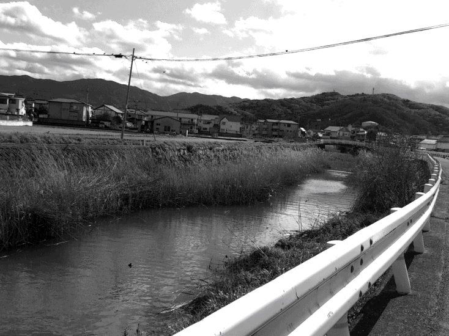
冷田川。その名の通り、冷気漂う川である
十二 足ぶらぶら
神奈川大学時代、僕は、横浜市の神奈川区に下宿していた。
風呂なしでトイレは共同であり、おまけに部屋の床は斜めになっており、朝目覚めると全然違う場所まで転がっていることも度々あった。隣室の若い奴は、毎朝お経を大声であげ、下の部屋のおっさんは真夜中まで飲んだくれていた。この下宿時代、バイトして購入した原チャリで、横浜周辺を走り回るのが好きで、近郊の友人の下宿によく遊びに行った。
中でも群馬から上京していた法学部の池ちゃんとはうまがあった。同じプロレスマニアであり、サブカル好きの池ちゃんの下宿には、毎週のように遊びに行った。池ちゃんの下宿は横浜市の菊名にあった。
最初、池ちゃんの下宿に行ったとき、ドアの場所がわからなかった。一見、壁のように見える場所を押すと観音開きのドアがせり出すのだ。
「この部屋、やばいんじゃない」
「やはり、そう思うか、このドアじゃ無理もねえな」
池ちゃんは苦笑した。
「どう見ても、隠し部屋だぜ」
「まぁ、否定はできないな」
池ちゃんは苦笑した。僕は好奇心が抑えきれなくなってきた。
「昭和中期までは座敷牢 ってあったからね」
「あれかな、一族の爪弾 き者や病人を閉じ込めていたのかね？」
池ちゃんは不安そうに言った。この古い日本家屋を改良したアパートは、僕や池ちゃんと同じ神奈川大学の学生が多数住んでいた。
結局、なんのための部屋だったのか不明なままで終わったが、一度だけ妙なことがあった。深夜まで大騒ぎしたあと、池ちゃんと僕は雑魚寝 していた。何時間経ったであろうか。
（......んっ、おかしい）
うっすらと目を開けた僕は、室内の空気の異変に気がついた。異様な匂いがするのだ。かび臭いというか、魚が腐ったような匂いというか。
「臭い、底抜けに臭い」
さっきまで、酒を飲んで騒いでいた空間とはまったく異質である。まるで寝ている間に、異空間にテレポーテーションしてしまったかのようである。
「何かが違うな」
上半身を起こした。周囲を見渡すが、部屋の外見そのものは何も変化はない。
（おかしい......）
神経を尖らせ、周囲に気を向けてみた。何とも言えないこの違和感。その違和感の元凶が天井から粉雪のように降りてくるのがわかった。
（妖気、霊気、上なのかな？）
ゆっくりと上を見た僕の視界に──足が映り込んだ。
真っ白な足が天井からぶら下がっている。ぷくぷくと肉付きのよい足が、
（ぶらん、ぶらん）
とぶら下がっているのだ。
「......足、足だ」
これはいったいなんだろうか。僕は、天井を突き破りながら巨大な足が降りてくる「足洗い屋敷」伝説を思い出した。だが、それに比べたらやたらに地味である。暗闇に薄ぼんやりと浮かび上がる白い足。
（どうやら、実害はないようだ）
天井からぶら下がり、ぶらぶらしている足。
それを見ながら僕は二度寝をした。翌朝、何もなかったので見た事実だけを伝えたが、池ちゃんは、
「間のネタだな、俺を怖がらせようと思って言ってるんだろ？」
そう言って笑った。
数日後、大学のキャンパスで会った池ちゃんは顔色が悪かった。
「どうしたんだ？ 池ちゃん」
「いやぁ、大工の父ちゃんが屋根から落っこちちゃってね」
「まじか？ 大丈夫なのか？ 親父さん」
「あぁ、骨折したようだよ。足をね」
十三 死神
僕が、神奈川大学に在籍中、一年次は千葉県の実家から通っていたのだが、二年次からは横浜市神奈川区に下宿することになった。大学は台地の上にあるのだが、そこから少し下った場所の下宿屋に住んでいた。
「腹が減ったな」
そう言ってはＪＲ東神奈川駅や東急東横線の反町駅、東白楽駅まで坂道を下ってラーメンや牛丼を食べたものであった。
ある日のこと、遅くまでやっているラーメン屋で夜食を食べた後、東白楽駅前の通りを歩いていた。
「なんか、変な気分だ」
なんだか、妙な感覚になってきた。──死にたくなってきたのだ。胃の中に血が集まっているからであろうか。何故か目の前の大通りに飛び出したくてたまらなくなった。
（この大通りに飛び出て、向こう側の歩道まで思い切り走りたい）
そんなことをしたら、猛スピードで走っている車に轢 かれるのは必至である。でも、どうしても飛び出したいのだ。そんな妙な感覚にとりつかれてしまった。
（飛び出したい、飛び出したい）
もの凄い衝動で体が動き出しそうである。飛び出し＝死であったとしても我慢できないのだ。僕は自制心と理性で心を落ち着かせた。
（動いてはいけない。我慢せなあかん、我慢せなあかん）
必死に自分を制御した。ようやく心が落ち着いてきた。
その刹那 。──前を歩いている男が道路に飛び出した、もの凄い勢いで道路を走りぬけようとした。
「キーッツ！ ガタン」
爆音が周囲に広がった。道路に飛び出した男がタクシーにはねられたのだ。
「ゴットン」
頭部を強 かに打った男。男は十メートル以上飛ばされ、道路に横たわった。
（やばい、早く助けなきゃ）
僕も反射的に男に駆け寄った。タクシーを運転していた初老のドライバーも大慌てで出てきた。
「あぁぁっ、やってしまった......」
ドライバーは絶望的な表情をしていた。人というものは絶望的であればあるほど、滑稽 な仕草をしてしまうものらしい。ドライバーの動転ぶりは、悲劇のようにも喜劇のように見えた。
轢かれた男は眼を半開きにしたままうつろな表情で、覗き込む僕やドライバーを見つめた。周囲にはいつの間にか、やじうまが集まってきていた。
（なんだ、この匂いは）
むせ返るような生臭い匂い、たちまち取り囲んでいたやじ馬が後方にひいた。男の頭部の周りにできていた血溜まりが、すーっと音もなく丸く周囲に広がっていく。男の周りに直径三〜四メートルの血の池ができた。男は半笑いのような表情で横たわっている。
（あの男、何故飛び出したのであろうか？）
僕はなんとも言えない違和感を感じていた。僕がもし踏みとどまらなかったら、どうなっていたのか。僕が我慢できずに飛び出していたら、この血溜まりの中にいたのは自分ではなかったのか。
理由もなく死ぬ人が稀 にいる。その意味がわかったような気がした。──神を感じた夜であった。
轢かれた男は半笑いのまま死んだ。
十四 チックとタック
僕や弟をかわいがってくれた祖母も、僕が大学に通っていた頃からボケが目立つようになった。食事をとったにもかかわらず、何度も要求し、やたらと泣くようになった。
「花屋の仕事を取り上げたのが、いかんかったね」
父親はそう言ったが、もはや遅かった。赤い服の女の事件で、災難に遭った祖母ではあったが、その後は順調に花屋を経営していた。だが、ふとした拍子に体調を崩した祖母は、商売から身を引き、そのことが余計に祖母を老け込ませた。
その頃、我々一家は父の転勤の関係で千葉県市川市に居を構えており、四国徳島県にはいなかった。そのため、祖母は叔母の家に住み、介護は従姉妹の和子姉ちゃんが行っていた。
ある日、和子姉ちゃんからこんな話を聞いた。
「としゆき、ばあちゃんがな、変なことを言うんよ。鳩時計が鳴ると時計から小人がいっぱい降りてくるって」
僕は吹き出しそうになった。
「阿呆やな、それだとまるで童話の『チックとタック』やんか」
「いや、怖いんやけど、その小人が輪になって踊っているぞって。目の前で踊っとるのが見えんのかってばあちゃんに言われるんよ」
「......ええっ」
なんとも不気味な話であった。単なる認知症の進んだ祖母の妄想だと言ってしまえばそうだが、何か引っかかるものがあった。妙なリアル感があったのだ。
ある朝、目覚めた祖母は、更に不気味なことを和子姉ちゃんに口走ったそうだ。
「じいちゃんが夢枕に立って宝の在り処を教えてくれた」
「嘘でしょ」
「ほんまやって、ありがたいね」
そう言って祖母は歓喜の声をあげた。
「早く、宝を探すのじゃ、宝を探すのじゃ」
祖母は大興奮していたが、和子姉ちゃんがそれをどうにか抑えた。
「探したほうがいいのかいな」
和子姉ちゃんが父に相談していたのを覚えている。
念のため、父や姉ちゃんが祖母が経営していた花屋で告げの場所を探したのだが、なんと本当に金銭が出てきたのだ。夢の予言は事実であった。──だが、全部小銭であった。
この話を思い出す度に笑ってしまうのだが、我が家には小銭がよく似合う。
それにしても、祖母は本当にボケていたのであろうか。あれは洒落好きの祖母の悪戯ではなかったのかと思ってしまうのだ。
十五 うなぎ
これは元号が平成に変ったばかりの頃、私が千葉県某所で聞いた話である。
大学卒業後、就職した私は、千葉県にある会社の社員寮に住み、時折船橋市と市川市の境に位置する実家に帰っていた。
ある日、社員寮から実家に帰宅した私は、東京スポーツのプロレス記事を読んでいた。
「やっぱ、新日本プロレスやな」
そんな独り言を言っていると、弟がしたり顔で近づいてきた。
「兄ちゃん、うなぎ屋の話、聞いたか？」
私は弟の顔をまじまじと見直した。
「うなぎ屋の話......？」
「あぁ、そうや、あの駅前の」
実は千葉で我が家のあった町には、評判のうなぎ屋があった。香ばしい匂いが常に駅前に充満し、あまりに美味しそうなので腹の虫が鳴ることも度々であった。
「あぁ、美味そうな店やな」
実はその店の孫息子が殺人事件を起こし、町中が大騒ぎになっていたのだ。
「あの交際相手の女の子の一家を皆殺しにした事件の犯人が、あそこの孫息子や」
「ええっ!? あの一家四人皆殺し事件の犯人がうなぎ屋の孫息子とは、まじかいな」
うなぎ料理の名店に生まれた少年はわがままに育ち、近在でも悪評の立つ不良少年であった。しかも、この少年は街中で好みの女の子を見つけた後、車で轢き倒し、弱った女の子をレイプするという悪行ぶりだったのだ。
そればかりではない。ヤクザの女であったフィリピーナに手を出した少年は、示談金を得るためにレイプした女の子の家に侵入。
まず女の子の祖母を殺害し数万円強奪、その後帰宅してきた母親を殺害、再び女の子をレイプした後、夜遅く帰ってきた父親も殺害し、翌日妹も殺害している。空前の凶悪犯罪であると言っても過言ではない。
「鬼やろ、話によると、手を合わせて命乞いしながら逃げるおばあちゃんをめった刺しにしたらしいわ」
「それにレイプされた女の子の目の前で、次々と家族を刺殺したんだよな、狂っとるな」
聞くだけで、反吐の出る話だった。鬼畜の振る舞いに、近所の人々は戦慄を覚え、店に寄り付かなくなった。
「あの店にお金出したら、殺人鬼の弁護費用になってしまうから」
少年の猟奇犯罪は無責任な噂を生み出し、親の商売も窮地に追い込んでしまった。あまりにも残忍な犯行のため、裁判では未成年にもかかわらず死刑判決が下った。弟が一層声を潜めて言った。
「実はな、被害者四人全員、背中から刺されて殺されたんや」
「背中から......」
私もごくりと生唾を飲んだ。
「そうや、おばあちゃんも、お母さんも、お父さんも、妹ちゃんも全員、背中から縦にずばーっと切り裂かれたんや」
「それは酷い」
私が言葉を失うと弟は続けた。
「全員、背開きや、うなぎを料理するとき関東では背中を裂くよね。四人全員背中から背開きにされとるんや」
私は背中に鳥肌が立つのを感じた。うなぎ屋の息子が殺人事件を起こし、うなぎの背開きのように人間を切り裂いたなんて。
「うなぎの祟りじゃないかって近所では評判だよ」
弟はそう締めくくった。
その後、うなぎ屋はしばらくは営業を続けたが、ひっそりと閉店した。この殺人事件はうなぎの祟りであったのだろうか？ 因みに被害者一家の父親は、ロス疑惑の三浦和義のプライベート写真をスクープしたカメラマンであった。
因果は巡る。
十六 祠
大学卒業後、日本通運に入社した僕は、船橋支店に配属された。当時、船橋支店は大型荷主に恵まれ、空前の実績を誇っており、千葉特定支店の管内にありながら、船橋特定支店と呼ばれるほどの勢いを誇っていた。
僕は坂本龍馬に憧れて運送会社に入社したものの、新入社員がそんな大きな仕事をまかされるわけもなく、慣れない現場仕事に忙殺される日々を送っていた。
その船橋支店の片隅には、小さな祠があった。一見ごく普通に見える祠だが、一種近寄りがたい不思議な空気を醸し出していた。
「あの祠って、なんですか？」
僕は先輩に聞いた。
「あぁ、昔からあるやつだが、あまり関わらない方がいいぞ」
そう言って先輩方はお茶を濁 した。この祠は船橋支店が建てられる前からあるもので、この場所に古くから祀られているものだという。
そして、大変不思議なことだが、この船橋支店の前の道路は事故多発スポットであった。
「キーッ、ガッシャン!! 」
「おっ、またやったぞ」
「また、事故か」
車のクラッシュ音が聞こえると、先輩たちは一斉に事務所の窓を開けて口々に叫んだ。場合によっては、通報したり怪我人の救助にあたるためである。
「いつも、ここだな」
それは、確かに不思議であった。いつも、いつも。──ちょうど祠の裏側で事故が起きるのだ。一度や二度ではない。年に五〜六回は起きていたと記憶している。
それが数十年続いているのだ。件数にしたら、もの凄い数になるではないか。確かに見通しが悪い場所ではあるが、あまりにも多すぎる。
その後、あるベテラン社員の方に聞いた話によると、この祠は元々は船橋支店敷地内のほかの場所に設置されていた。その場所こそが、船橋支店ができる前からあった正統な設置場所であった。だが、倉庫を建設するときに建設業務の邪魔になるということで、敷地の端っこ、現在の道路沿いに移されたのだ。
この移動の際、妙な事件が起きているという。この祠の移動が決まったとき、流石に誰も手を挙げなかった。
「おまえやれよ」
「おまえこそ、どうなんだ」
みんなが躊躇 する中、一人の作業班長が名乗りを上げた。
「おいおい、いまどき、祟 りとかあるめえよ」
そう言って、祠を抱えると敷地の端っこまで運んでしまった。
「どうだい、これで問題ないだろう」
班長はおおいばりであった。
だが、祟りはこれからであった。──その後、班長は突然死んでしまったのだ。
「やはり、祟りがあったのだ」
「あの祠は移動してはいけなかったのだ」
支店の人々は祟りだと噂した。
だが、二人目の犠牲者が出ることになる。倉庫を建設していた建設会社が雇っていた職人が、一人転落死したのである。
その転落死体は、突き出した梁の先端にあった鉄筋で頸 部が切り裂かれ、首がもげている状態であり無残な死に様であったという。
しかも、その場所は──祠のあった場所であった。こんな話を聞かせてくれた先輩も、数年後死んでしまった。その先輩の死は、違う支店にいたときに聞いたのだが、同時に不気味な逸話も伝わってきた。
「あの人さぁ、『支店長車』を運転している時に、あの祠の鳥居にぶつけちゃったんだよね」
これで、三人目である。
十七 首
日本通運に入社し、会社員をやっていた頃、若手社員時代は船橋支店に勤務していた。その船橋支店に祟りのある祠があることは前話でも紹介した。その祟りの犠牲になり、落下事故で首がもげた作業員は、その後も度々目撃されている。
──生首となって度々姿を現したのだ。
入社し、数年後その倉庫の担当になった僕は、作業員から妙な話を聞いた。
「たっ、大変だ」
入庫作業をやっていた作業員が血相を変えて飛び込んでくる。
「どうしたんですか」
「くっ、首が、首が」
「また、首が出たんですね」
僕が冷静に聞くと、作業員は何度もうなずいた。建設中に作業員が落下して首がもげて死んだ場所は、入庫してきた商品を二階以上にあげるエレベーターになっていた。
そのエレベーターに生首が出るのだ。
〝あがってきた商品の上に生首がちょこんと載っている〟そんなことが度々あるのだ。勿論、既にオカルト研究を行っていた僕はこの事例に注目した。
「幽霊なんぞはおらん、絶対におらん、気にするな」
所長はそう言って作業員の心を引き締めたが、幽霊騒動はいっこうに収まらなかった。
「生首が飛んでいる」
「生首が見ている」
そんなふうに言い出す関係者さえあった。
事実、作業員の中に恐怖のあまり頭がおかしくなる者も出ており、単なる気の迷いではなかったといえる。また、倉庫に防犯対策でつけていたセキュリティにも奇妙な反応が見られた。誰もいない倉庫に何者かが侵入して、真夜中に何かが動いているのだ。
「倉庫に侵入しているのは、ねずみとか、ゴキブリではないんですか」
僕が確認すると、業者の方はこんなふうに言った。
「いやいや、そんな小さなものではありません。もっと大きなモノだと思います」
「......」
まさか、生首ですか？ とは言えなかった。
十八 青梅の妖怪
二〇〇一年、妖怪をテーマにアート活動をしていた知人Ａさんから連絡が入った。
「俺も友人から聞いた話なんだけど、青梅で妖怪町おこしが始まるらしいんだけど......」
「青梅って東京の端っこの？」
「そう、マラソンで有名なあの青梅、町おこしに参加できないかと思ってさ」
「いいねえ、何か面白いことができたらいいねえ」
こうして、知人に誘われる形で、僕は青梅の地を踏んだ。ほかにも妖怪絵師のＭくんや雑貨アーティストのＯさんなどがおり、我々は青梅の妖怪町おこしに参画することになった。
今となっては、株式会社山口敏太郎タートルカンパニーの業務内容のうち〝町おこし〟や〝イベントプロデュース〟は主要な項目になっているが、当時三十四歳だった僕は町おこしに関してはまったくの〝ど素人〟であった。そして、当時は昭和レトロ商品博物館しかなかった観光スポットを中心に、妖怪町おこしが始まった。
夏には、小泉八雲の曾孫の小泉凡さんを招いてのトークショー。
秋には、恒例の青梅アートフェスティバルのメインテーマを妖怪に設定した大規模なイベントが開催された。
結果的にはある程度の成功を収めたといえる。雪女が出没したと言われている場所から数百メートル離れた場所に、「小泉八雲・雪おんな縁の地」という記念碑が建立され、アートフェスティバル自体も数万人の観客を動員した。
そんな活動の中、不気味なことが稀にあった。
まだアートフェスティバルの詳細が決まりきっていない時、雪女探偵団の団長であった横川さんがこんなことを訊いてきた。
「間さん、何か不況を吹き飛ばす、景気がよくなる妖怪っていませんか？」
「景気がよくなる妖怪ですか、まぁカネダマでしょうか」
「それいいですね。イベントでカネダマをキャラとして使いましょう」
僕は急いで手を出して止めた。
「横川さん、まずいですよ。カネダマは確かに東京都の妖怪ですが、町田にはいますが、青梅には伝承が残ってないんです」
「あぁ、残念だね」
横川さんは意気消沈したが、その後全体会議が開催されたのでその話はそのまま流れてしまった。
会議が始まると、地元の童話作家の小川秋子先生が手を挙げた。
「わたしねえ、青梅に残る妖怪の話聞いちゃったのよ」
もの凄く嬉しそうである。
「小川先生、どんな話ですか」
すると小川先生はにっこりと笑ってこう言った。
「カネダマよ」
僕は絶句した。
「カネダマの話が青梅にあったんですね」
「そうそう青梅市内にカネダマの伝承が残ってたのよ」
「......」
この言葉に僕と横川さんは、黙って顔を見合わせた。普通、こんな偶然はない。横川さんが口火を切った。
「ねぇ、間さん、カネダマ、青梅にも伝承あるって、これちょうどいいね」
「いやはや、驚きました。このタイミングで」
僕と横川さんがカネダマの話をしていたのは、ほんの数時間前であり、このことを知っているのは僕と横川さんだけである。もちろん、小川先生は知るはずもない。
（何故、このタイミングでカネダマの話が出たんだろうか。偶然にしては怖すぎる）
なんとも言えない恐怖感を味わいながら、僕は会議に参加していた。
すると横川さんが話題を僕に振ってきた。
「カネダマがいるなら使えますね。あとカネダマの敵役はいませんか？ 貧乏にする妖怪とか」会議に出席していた全員の顔がほころんだ。
「カネダマの敵役ですか、貧乏神がいいんですが、都内では北区なら祀られてるんですけどね」
そういい終わるや否や、地元の恩田さんが手を挙げた。
「貧乏神なら、青梅でも祀っているよ。うちの向かいの床屋さんが貧乏神を祀ってるんだよ」
「‥‥まじですか？」
僕がおずおずと質問した。
「本当ですよ。これ以上貧乏になりませんようにって、貧乏神を祀ってるんですよ」
僕と横川さんは再び顔を見合わせた。もはや、言葉すら出なかった。やはり、妖怪は実在するのだ。
奴らは我々人間をじっと観察し、時々偶然を装ってからかいに来るのだ。
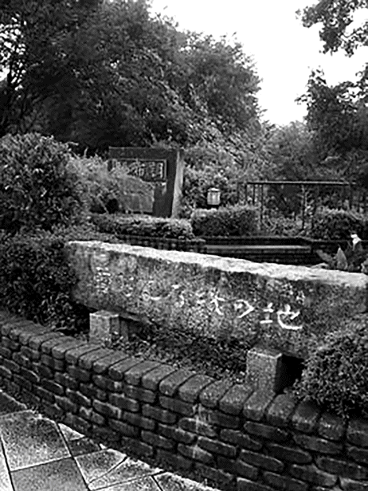
小泉八雲の孫、小泉 時さんが揮毫した「雪おんな縁の地」の石碑
十九 全裸の生 霊
二〇〇四年八月七日、千葉県船橋市きららホールにて、船橋よみうり新聞社主催のイベント「不思議ファンタジー」が開催された。
このイベントは、同紙で「京葉不思議伝説」を連載していた僕のプロデュースイベントであった。この連載も、イベント開催も、青梅での実績を評価してくれたうえでの出来事であった。
妖怪のイベントらしく、賑やかな連中を呼びたいと思っていた僕は、何人か妖怪に纏わるアーティストを集めた。妖怪バンドの妖怪プロジェクトさん、彼らはその後ａｖｅｘからメジャーデビューするのだが、このときからクオリティは一級であった。
さらに怪談の語り部として、某氏、あーりんさん、ちびっこＱさんの三人に出てもらった。
特にちびっこＱさんはその後、結婚して出産したのだが、朝日新聞出版の雑誌、ＨＯＮＫＯＷＡで漫画化された「オカルト博士の妖怪ファイル」に出てくる妖怪うぶめとの遭遇談は、彼女の体験である。
そして、妖怪フォークミュージシャンのＨくんであった。
「待ち合わせ場所は、僕の自宅です。当日は、夕方までに来てください。その後、イベント会場までいきましょう」
メールでそう言ったはずだった。だが、Ｈくんは昼間突然姿を現した。坊主頭にテンガロンハット、鋭い視線は妖怪人間べムを彷彿とさせた。
「ちわっす」
肩にギターを提げたＨくんは、ずかずかと僕の自宅に上がりこむと、腹をさすりながらこんなことを言った。
「お腹が空きました。このあたりに飯を食う場所はありますか」
このあたりは住宅街で食堂などはない。うちのかみさんは一瞬困った顔をしたが、軽い食事を用意した。
「すいません。あり合わせのものしかないのですが」
そう言ってソーメンを出したところ、Ｈくんは美味そうに平らげ、こう言った。
「ありがとう。君の好意は嬉しいよ」
だが、そもそもこの好意がいけなかった。Ｈくんの止めようのない妄想に火をつけることになったからである。
その日のライブは無事終了した。
遠くから来てもらったＨくんとあーりんさんは、僕の家に泊まってもらうことにしたのだが、夜中でもやたらにギターを弾きたがった。
「僕のギターの音色は、霊を浄化するのです」
と言いながら、真夜中の住宅街で窓を開けて演奏したがるのだ。
「やめてください」
僕やかみさん、あーりんさんが力づくで止めたが、本人は自分が何故止められているのか理解していない様子であった。
「ひぃぃ、みんな厳しいなぁ、入れ歯でも出してくつろぐかな」
そう言うと、口から入れ歯を〝がばっ〟と出して、ぬれぬれの入れ歯をテーブルの上に〝ねちゃっ〟と置き、にやにやしていたのを記憶している。だが、事件はまだ序の口である。
次の朝、とんでもない事件が起きるのだ。かみさんが二階の寝室で寝ていると、太ももに違和感を感じた。（なんなの、いったい......）眠い目をこすり時計を見ると朝の六時であった。と同時に太ももを触っている男に気がついた。
一階で寝ていたはずのＨくんがいつの間に二階の夫婦の寝室にまで入ってきていたのだ。
「へへへっ、やっと目覚めましたか、お勧めしたいサイトがありまして」
「ひぃぃぃ」
かみさんは恐怖で息が止まりそうになったが、隣で疲れて寝込んでいる僕を起こすまいと必死に堪えたらしい。
「なんなんですか」
かみさんは、他人の寝室に入り込み、自分の太ももをまさぐった変質者を詰問した。
「君に見てもらいたいサイトがあるんですよ」
この時、Ｈくんが勧めたサイトとは、当時まだメジャーではなかったｍｉｘｉであった。かみさんから報告を受けた僕は、あーりんさんとＨくんを駅に送っていきながら、こんなことを考えた。
（この男はもうイベントには呼ぶべきでないな）
だが、この狂気の男ともう少し付き合うことになる。
二〇〇六年十月二十一日に滋賀県東近江市にある太子ホールという場所で、妖怪研究家のＴさんが企画した「第二回 妖怪ｉｎ東近江市」が開催された。
この時は、僕や怪談作家の雲谷斉さんなど数名の人間が参加し、怪談を語ったのだが、妖怪プロジェクトさんや数組のバンド、そしてＨくんも参加していた。
「やばいですよ。あの男」
「そんな人だったんですか、『僕も絶対に出させてください』って言うから思わず『良いですよ』って言ってしまったんです」
企画者のＴさんは、そう言いながら僕の前で頭をかいた。イベント会場に着いたとき、Ｈくんの姿を見つけた僕はＴさんに確認したのだ。Ｈくんは、「山口敏太郎の友人です」と言って強引に参加を承諾させたらしい。
「やはり、こいつは狂ってるな」
僕は思わず口から本音が漏れてしまった。
初めてＨくんと遭遇した後、彼が師匠として名前をあげていたフォークミュージシャンに僕は相談の電話をしたことがあった。
「毎年、Ｈくんが貴方のイベントに参加していますが、やはりお弟子さんなのですか？」
すると相手は数秒、押し黙ると、こんなことを口にした。
「......一度もこちらから呼んだことがないのです」
「えええっ!? まじですか!? 」
「そうなんです。勝手にやってくるんです。しかも、うちの家に泊まっていくし......」
「......」
僕は言葉を継げなかった。
「しかも、うちの娘の部屋に真夜中に入り込んだこともあって、怖いんですよ」
「でっ、でもお弟子さん、なんですよね？」
「......いいや、一度も、弟子にした覚えなんかないですよ」
（危なすぎる、あの男は......）
警戒していた矢先の再会であった。
東近江市でのライブは観客は少なかったものの、それなりに楽しい舞台であった。ライブ後、朝まで続く打ち上げを、Ｔさんが経営するお店でやるのが恒例であった。
「ようし、僕がギターで除霊をやろう」
夜中にもかかわらず、油断するとＨくんは店の外でギターをかきならそうとする。
「全然変わっていない、あいつやばいな」
僕は交通事故でデコボコになったＨくんの坊主頭をじっと見ていた。
その夜、飲みながらの怪談会になった。おのおのが怪談を語っていく。続々と怖い話が出て物凄く盛り上がったことを記憶している。すると、自分も怪談を語りたくなったＨくんが、突然話しだした。
「ぼっ、僕と恋人の話です」
その話はかなり奇妙奇天烈であった。愛し合う二人だが、女性には夫がおり、その夫とは別れて、Ｈくんと一緒になりたい女性が苦悶する話であった。
（どこが怪談なの？）
二十名近い打ち上げメンバーの頭上ではてなマークが飛び交い、あちこちで失笑が漏れていた。
「僕と、○○さんは好きあってるんだよぉぉぉぉ!! 」
とＨくんが叫び始めた瞬間、かみさんと僕は我が耳を疑った。
「ええっ、なんだって」
さっきまで怪談の中で言っていた女性の仮名が、突然かみさんの名前に変わったからである。かみさんの名前を知っている親しい人たちの間に不気味な雰囲気が流れた。
「やばいよ。あの人」
かみさんが独り言のようにつぶやいた。
（やっぱり、おかしい。これは警戒せねばなるまい）
僕は今夜は寝てはいけないと思った。打ち上げの参加者のうち女性は奥の仮眠室に移動し、男たちは店で雑魚寝となった。
その日の早朝、うっかり寝込んでしまった僕は物音に気がついた。誰かが歩いているのだ。
（あっ、あいつ、またか）
奥の女性の仮眠部屋の方に目をやった。案の定、背を丸めたＨくんが忍び足で女性部屋に入ろうとしていたときであった。
「おい、待てよ！ Ｈくん」
僕はすぐさまＨくんを取り押さえ、Ｋさんや起きてきた男連中と取り囲んだ。
「おまえ、今、何をしようとしたんだ」
「ぐわわわわっ、僕はトイレと間違えただけじゃああああ」
Ｈくんは鼻水とよだれを垂れ流し泣き叫んだ。
「ぶわわわっ、僕はぁ、別に悪気が、ああっあって女性部屋に入ったのではありましぇんんん」
あまりの汚い泣き面に誰もがうんざりしたところを見計らって、Ｈくんは泣きながらテンガロンハットを被って出ていった。
それから数日後、Ｈくんから謝罪の電話があったので、社会人としてやってはいけないことを注意した。Ｈくんは神妙な感じで聞いていたが、最後は妙なテンションで電話を切った。
「ご・めえん・なにゃ・さぁ・ぃぃ」
その日の真夜中のこと、かみさんは不気味なモノを目撃している。寝室で寝ていると隣の部屋に人の気配を感じた。
（誰か、いるの？）
眠い目をこすりながら、よくよく見てみると......。──全裸の坊主頭の男が立っていた。片手で自らのペニスを握り、よだれと鼻水をたらしながら、
「ご・めえん・なにゃ・さぁ・ぃぃ」
と繰り返す、半透明の化け物がいたのだ。
「ああっ、Ｈさん!! 」
そうかみさんが指摘すると、
「ご・めえん・なにゃ・さぁ・ぃぃ」
と言いながら、全裸の坊主頭幽霊は、自分のペニスをこすりながら寄ってきた。
「やっ、やめてえ」
かみさんはそのまま気を失った。
「ご・めえん・なにゃ・さぁ・ぃぃ」
結局、その事件はそのまま幕切れとなるのだが、半年ぐらい経って、Ｈくんから僕の自宅にファックスが届いた。
「いまどき、ファックス？」
そう言って見た僕は爆笑を禁じえなかった。こんな文面だったからである。
〝山口貧太郎へ、俺の電話番号が変わったので教えてやる ｂｙ Ｈ〟
敏太郎を「貧」太郎にするなんて、狂ってるわりにはセンスが良すぎるではないか。
二〇 筋が良い
スピリチュアルアイドル・疋田 紗也 。雑誌「ブレイクマックス」の取材で初めてあったとき、彼女はまだ十八歳の女の子であった。場所は池袋のサンシャイン60 。Ａ級戦犯が裁かれた巣鴨プリズンの跡地であり、心霊スポットとして有名であった。
昭和の頃は、火の玉が近隣の公園から伸び上がり、サンシャイン60 のてっぺんに向かって飛んでいくとか。軍人の霊が出現するとか。数々の都市伝説が囁かれた場所であった。
「まるで、帝都にそびゆる戦犯の墓石だな」
僕は池袋を歩くたびに、一帯に漂う歴史の哀愁を感じてしまい、何とも言えない気持ちになる。
その日、僕と編集者は公園で紗也ちゃんとマネージャーの到着を待っていた。
やや遅れて二人が到着し、巣鴨プリズン跡地（某公園周辺からサンシャイン60 にかけて）を散策することになった。
「じゃあ、紗也ちゃん、心霊スポットとおぼしき場所を指摘してごらん」
──この子は霊感が強いんです。
編集者からそんな情報を得ていた僕は、彼女の実力を試させてもらうことにした。
（アイドルの霊感を見せてもらおうかな）
意地悪く、眺めていた僕はびっくりした。なんの案内もしていないのに、紗也ちゃんは慰霊碑の方に歩いていく。
「こっちが、霊的な力を強く感じます」
「当たってるな」
僕の一言に、編集者とマネージャーの顔色が変わった。Ａ級戦犯が銃殺された場所に作られた慰霊碑、その前で紗也ちゃんが、にこにこしている。
「紗也ちゃん、この碑の前で何か感じるかね」
僕の質問にやや考え込んでいた紗也ちゃんは、こんなことを言ったのだ。
「さっきね、この碑の前に鳩がいたの、鳩がこの碑の周りで戯れていたの」
僕は正直驚いた。東京裁判もＡ級戦犯も知らない女の子が、英霊を鳩として見るなんて。いや、そもそも戦犯たちの霊が出ると言われている心霊スポットの取材だと、当日初めて聞いたはずの子に何故ここまでわかるのだろうか。
「どうやら、紗也ちゃんの霊感は本物のようだ」
「ええ!? そうなんですか？」
紗也ちゃんのマネージャー兼所属事務所の社長さんが驚いたような顔をした。
「そうですよ。間違いなく霊感がある。だから、彼女は今からスピリチュアル・アイドルになったらどうですか？」
「スピリチュアル・アイドル？ それ面白いですね」
この日から、疋田紗也はスピリチュアル・アイドルとして活動を始めたのだ。
元祖スピリチュアル・アイドル、疋田沙也ちゃん
二十一 生き人形
僕は子供の頃から、オカルトマニアであり、オカルトやホラーを扱う作家になりたいと願い続け、その職業に就いているのだから、幸せである。
それゆえに、子供の頃に慣れ親しんだ有名人に会うと嬉しくてたまらなくなる。
稲川淳二さんもその一人だ。年に何度かはお仕事をご一緒させていただくのだが、僕が立案し関西テレビに持ち込んだ番組「怪談グランプリ」でも審査委員長をやっていただいている。
その稲川さんの十八番 の怪談と言えば、──生き人形である。
この怪談、ある人形が関係者に不吉な出来事を次々引き起こすという物語である。
聞くだけでも障りがあると言われている話だが、限りなく恐怖を愛する僕は学生時代から大好きであった。
この生き人形の話が、朝日放送のワイドショーで取り上げられたとき、数々の怪異な現象を引き起こし、放送事故になったと言われているのだ。
「どうも、お疲れ様でした」
「山口先生、お疲れ様でした」
その日、ハイヒールリンゴさん、モモコさんがＭＣをされている「ビーバップハイヒール」に出演した僕は、スタッフに尋ねた。
「あの、ＡＢＣと言えば、稲川さん伝説のひとつである、生き人形の話です。事件のあった場所って......」
スタッフの目が悪戯っぽく輝いた。
「さすが、よくご存知で、このスタジオの下階がそのワイドショーが収録されたスタジオですよ」
「まじですか、ちょっと覗かせてください」
僕はスタッフと一緒に、生き人形が怪異現象を起こしたスタジオに入ってみた。微かに空気が澱んでいた。
（ここが、あの伝説のスタジオか......）
僕の興奮はピークに達した。
「ところで、まだ妙なことは起こるの？」
スタッフはキョロキョロと周囲を窺いながら、声を潜 めた。
「実はまだお札が貼ってあるんです」
「まじですか？」
僕はスタッフの案内で古びたお札の場所まで行き、それを確認した。
古いお札をまじまじと見ながら
「このお札を剥がすと、どうなるんですか？」
スタッフの顔色が変わった。
「やばいですよ。男の子の声がマイクに入るんですよ」
「おおっ、男の子ですか、やっぱり」
実は生き人形がワイドショーをパニックに陥れたとき、怪しい男の子がスタジオで目撃されたというのだ。しかも、生き人形は女の子であり、相方の男の子人形を探しているというのだ。となると、その男の子の霊とは生き人形の相方なのだろうか。
（あぁ、伝説は本当だった）
妙な感動をしながら、僕は宿に向かった。その宿でゆっくり感動を思い返しながら、眠りについた。
真夜中のことである。
僕は突如目が覚めた。──誰かが室内にいる。
そんな違和感を覚えたのだ。
（誰だ、誰だ、泥棒か）
なんとも言えない不安が僕の心を曇らせた。この暗闇の中で誰かが部屋の隅から様子を窺っているように思えたのだ。
「......」
数秒間が数時間にも感じられた。その瞬間、僕は声を上げた。
「わぁぁぁぁぁ!! 」
──手首を掴まれたのだ。
何者かがベッドからはみ出ていた僕の手首をがっしりと掴んだのだ。確かに誰かが手首を強く強く掴んでいる。
「ぁぁぁああああああああ」
その次の瞬間、僕は恐怖のあまり気を失いそうになった。僕の手首を掴んでいるその手には──手首の関節がなかった。
まるで──人形の手のように手首の関節がなかったのだ。
生き人形には決して関わってはならない。
二十二 広島のお墓
長い間、この手の仕事をやっていると、なんともいえない不思議な現象に遭遇する。それはなんの前触れもなく、なんの前兆もなく、突然起こるのだ。
テレビの収録中にも奇妙なことは度々あった。二〇〇九年十一月にＢｅｅＴＶで放送された、ピエール瀧さんがメインＭＣを務める番組「ゴーストフィルムジャパン」の収録現場でも同様のことがあった。
収録の数ヶ月前に、ＭＸテレビの違う番組で会っていたピエールさんは、笑ってこう言った。
「こんなに早く敏太郎さんと再会できるとは思いませんでした」
その日は数人の語り部たちが、怪談を語っていくという企画であり、僕を含め数人が怪談をピエールさんの前で披露していった。
「実はね、こんなことがあったんですよ」
僕がステージでピエールさんの眼前に座ると、突然奇妙な話をされた。
数年前、ピエールさんが所属する電気グルーヴの全国ツアーが開催された時のこと。広島公演に先駆けて、ツアースタッフの中山君と柴田君が前日にトラックで現地入りした。
早めにライブ会場に入って、ライブ機材を降ろしたいと思った二人は、市内をぐるぐると廻った。
（あれ、こいつ、広島の土地勘あるのかな？）
助手席に座った柴田君はそう思った。ハンドルを握る中山君がナビも使わず、あまりにもすいすいと市内を走行し始めたからである。
だが、よく見ると中山くんの顔は蒼白で、眼がうつろである。
「中山、おい、おまえ大丈夫か」
柴田くんの問いかけにも中山くんは、鈍ら返事しか返さない。
「だだだっ、だいだい、大丈夫ぅぅ」
中山君は夢遊病者のような緩慢な動きでありながら、何故かハンドルだけはしっかり操作し続けた。
そのうちトラックはどんどん山の中に入っていく。どう考えてもこんな山の中にライブハウスがあるわけがない。
「おい、中山、いい加減にしろ!! トラックを停めろ!! 」
柴田君がそう呼びかけたとき、道がなくなりトラックが止まった。周囲は真っ暗で閑散としている。
「うわっ、なんでここにいるんだろう!? 」
突然、中山君が大声を発した。
「おまえ、自分でここに来たんだろう？」
「すっ、すまない、まったく覚えてないんだ」
中山くんは頭を抱えた。車のヘッドライトの先には、墓石群が映し出されていた。
この墓石群、広島市内の某所に設置されていたものだが、ある道路工事の邪魔になると判断され、移動されたものであった。
この工事とは、一九九一年（平成三年）三月十四日に橋桁落下事故が起きた現場であり、移動された十四基の墓石とまったく同じ数の十四人の死者を出している。その移動した墓石たちに、トラックは突き当たったのである。
「わわわわっ、どうする？」
「中山くん、これは逃げるしかないよ」
二人は車を猛スピードで飛ばし、現場から逃げ出したという。
この現場、十四基の墓石と十四人の死者が〝十四〟という数字でリンクしているが、それだけではない。──十四という数字に呪われているのだ。
発生した日の三月十四日の〝十四〟、発生時間の十四時五分の〝十四〟もリンクしているのだ。
さらに工事中に落下した橋桁の長さは〝十四メートル〟で、最寄り駅は広島駅から〝十四番目の駅〟になる予定であったという。
しかも、辛くも落下物の直前で助かったマイクロバスには〝十四人の園児〟たちが乗っていたのだ。
そんなヤバすぎる十四基の墓石に二人のスタッフは引き寄せられたのだ。
「山口さん、どうです。うちのスタッフのこの体験、やばいでしょ」
ピエールさんの問いかけに、僕は落ち着いた表情でこう言った。
「ピエールさん、何故、その話を僕にしたんですか」
「いや、なんとなく、敏太郎さんにこの話をしなければならないと思ってね」
ピエールさんは驚いたような表情を浮かべた。
「実はね、その事故の現場で落下した鉄骨、僕が会社員になったときの初めての上司が輸送を担当してたんですよ」
「ええっ!? なんですって!? 」
「仕事の立ち上げ当初は担当だったんですが、事故の直前に広島から千葉支店に転勤になって、その後、新入社員の僕がそのセクションに配属されたんです」
因縁とは奇なものである。
二十三 生首が笑う
二〇〇八年頃、下総中山の事務所が手狭になった僕は、経理と総務を統括する管理部を旧事務所に残し、制作部隊が中軸となる編集部が駐留する一戸建て物件を借りた。
この話は、この編集部での不思議な出来事である。
当時一階を事務所として編集部が使い、二階は社員や契約していたタレント、漫画家が使う男子寮であった。
二階の男子寮は、芸人の南部イチヒコくん、漫画家の遠藤桟くん、社員のＳくんが住んでいた。
入居当初から、一階にある台所では、誰もいないのに夜中に湯が大量に出ていたり、遠藤くんが食器を洗っていると、何者かが隣家との境界にある塀と台所の窓との間を歩いているなど、不可解なことが多かった。
「コツン、コツンツン、コツン」
ハイヒールを履いた人物が不安定な状態で歩いていくような音だった。足音を聞いた遠藤くんが台所の窓を開けて確認するが、誰もいない。こんな不思議なことが何度も続いたのだ。
「本当に誰かが歩いてるんですよ」
遠藤くんは必死に訴えた。
「気のせいじゃない？」
僕が冷めた口調で突っ込むと、遠藤くんは困惑した表情を浮かべ続けた。
「確かに、コツン、コツン、コツってハイヒールで歩く音がするんですよ」
その後、遠藤くんの証言に従って、〝謎の人物〟が歩いている場所をつぶさに調査してみたが、結局何も見つからなかった。しかも、塀の向こうに位置する隣家も無人の廃墟であった。
（どうにも、妙な話だ）
僕は何とも言えない違和感を覚えた。だが、事態はそれだけに留まらなかった。
──今度は、生首が浮遊するようになったのだ。
ある日、当時事務所に所属していた某怪談師の男性が一階で怪談を語った時のこと。
遠藤くんが深夜、生首を見たのだ。一階から二階に階段を駆け上がったとき、目の前に何かが浮いていることに気がついた。
（......んっ、なんだぁ）
遠藤くんが目を凝らすと、目前の虚空に生首が浮いていた。しかも、口元はヘラヘラと笑い、目は白濁している。
「ぐわっ、ぐうわわわっ」
驚愕した遠藤くんは這い蹲 りながら、自室に逃げ込んだ。
翌日、遠藤くんは僕に密かに相談した。
「なんだって......、でも、しばらく様子を見てみよう」
僕は、他の社員やバイト、契約タレント、契約作家たちが怖がってはいけないと思い、僕と遠藤くんだけの秘密にした。
だが、それから数週間後、今度はうちのかみさんが奇妙なモノを目撃する。──かみさんも、浮遊する生首を見たのだ。
その日、かみさんは掃除のため二階につながる階段を上がった。そして、背後に妙な感覚を覚えた。何やらまとわりつくような視線を感じたのだ。
（見てる、誰かが見てる）
そーっと振り向いたかみさんの目の前に──生首が浮遊していた。
筆者と遠藤くんは、生首事件については誰にも言ってなかった。勿論、怖がりのかみさんにも黙っていた。にもかかわらず、かみさんが生首を目撃した場所は遠藤くんが生首を目撃した場所と同じであった。
それから、数ヵ月して霊感風水師のあーりんさんが編集部にやってきた。あーりんさんは室内をキョロキョロと見て廻るとこんなことを言った。
「うん、おばあちゃんならおるで、元々商売やってたから、若い人が沢山集まってくることはええんやけど、若い人がやっている家事が心配なんやわ」
「それが一連の不思議事件の原因だったんですね」
「まだ続くようだったら、おばあちゃん縁の物を出した方がええよ」
実はこの屋敷には、もの凄く古いタンスが２竿残されており、その場所は生首を見た場所の近くであった。
「あのタンスが怪しいなぁ」
古ぼけたタンスは着物を何枚も保管できる優れものであったが、二階の一室を占拠していた。大家さんが、この中古物件を購入する前から残されていたらしく、許可を得て、うちのかみさんがバラバラに解体した。
その後、怪異はなくなったのだが、二〇一〇年の秋、一階編集部が客間として使っている和室で弊社の女流怪談師Ａさんが怪談の練習をやっていると、突如声をあげた。
「ぁぁぁぁあああああああ」
悲鳴に驚いた僕が駆けつけた。
「Ａさん、どうしたの!? 」
Ａさんは戸惑いながら、和室の窓から覗く庭の虚空を指指した。
「山口さん、あそこに！ あそこに」
「ええっ、なに？」
「生首が浮いてました」
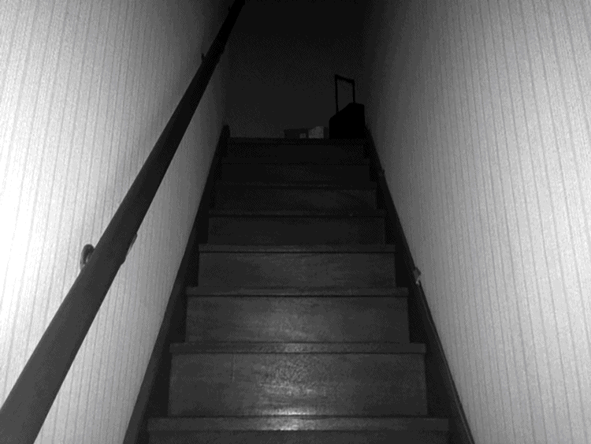
僕の事務所の２階へ続く怪談。この怪談で生首が目撃された。
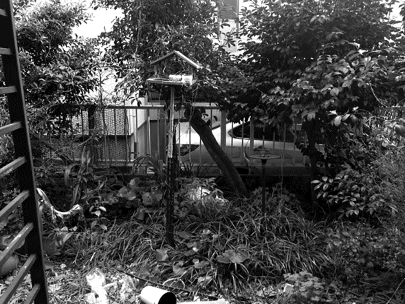
猫が遊びに来る、山口敏太郎事務所の庭。猫も生首を見ているのだろうか？
二十四 亀山社中結成
僕が率いる会社は、株式会社山口敏太郎タートルカンパニーである。あまりにも名前が長すぎるとか、マツモトキヨシみたいだとか、いろいろ言われるがこれには訳がある。
実は株式会社化した、二〇〇八年に会社の実印を注文したのだが、この時の注文は「株式会社タートルカンパニー」であった。
だが、出来上がってきた実印を見てびっくりした。
──社名に、僕の名前が入っている（汗）。
今となっては笑い話なのだが、社名に自分のペンネームを入れるつもりはなかったのである。つまり、はんこ屋のおばちゃんのミスである。
言い換えれば、株式会社山口敏太郎タートルカンパニーという社名は、はんこ屋のおばちゃんがつけたのである。
このタートルカンパニーという名前は、よくトータルカンパニーと間違えられるのだが、「亀山社中」を直訳したものである。
厳密に言うと「タートルマウンテンカンパニー」が正確なのだろうが、まだまだ会社として山を登ってないので、マウンテンはとらせてもらった。
株式会社化する前は、海援隊からとった、海猿隊と名乗っていたのだが、社長の龍馬が暗殺されてしまうので縁起が悪いとして亀山社中にちなむことにしたのだ。
「亀山社中ならば、龍馬は暗殺されないし、永遠に青春が続くからええんとちゃうか？」
そんな軽い気持ちで亀山社中を名乗ったのだが、妙なことが度々起こるようになった。
まず会社の本社として登記する所在地を、以前購入しておいた物件に決めた。あとでかみさんに指摘され気がついたのだが、この物件の元の所有者は「坂本さん」というご夫婦であった。
「坂本さんという方から買った家が、亀山社中の本社となるとは......」
現役を引退され、老後を過ごしていた坂本さんご夫婦から、僕は亀山社中の本社社屋を購入した形になったのである。
また、社員を募集すると○○という先祖が土佐にルーツがある者が入社してきた。
「この名前で土佐というと、亀山社中にいた○○の一族なんでは？」
「気持ち悪いな、このシンクロ」
このような奇妙な出来事が続いた。
「どちらにしろ、同じ社名を名乗ることについて、龍馬さんにお伺いを立てたほうがよいと思うけど」
かみさんの提案で、長崎の亀山社中の社屋跡へ挨拶に伺うことになった。
実は会社設立前に挨拶に伺ったのだが、ＮＨＫの大河ドラマ「龍馬伝」を見据えた大規模な改装工事中であり、中に入ることができなかったという過去があったのだ。
「そうだな、今度こそ龍馬さんと亀山社中のみなさんにご挨拶をしにいこう」
その日、僕はかみさんと福岡での義弟の結婚式に出席した後、レンタカーで長崎まで足を延ばした。
長崎市内のホテルに一泊したのだが、長距離運転の疲れもあり、僕はすぐに熟睡してしまった。
明け方、奇妙な夢を見た。
自分は幕末の志士のような姿をしており、長い旅からの帰りらしく全身が埃まみれであった。自分ただ一人、亀山社中の社屋まで這 う這 うの体 で帰還したらしい。
「わしじゃ、龍馬はおらんのか」
言葉は土佐の方言のような喋り方であった。門をくぐり周囲を見渡すが誰もいない。
左にはたたみの大広間があり、その真ん中から階段を登ると密談が出来る屋根裏である。右には便所や炊事場があった。夢の中の自分は亀山社中の社屋の奥まで、ずんずんと進んでいく。
「誰もおらんのか。わしゃ、今帰ったぞ」
ここで目が覚めた。ホテルの部屋には、カーテンの隙間から朝日が差し込んでいる。なんともいえない不思議な夢だったが、不快な気持ちや怖い気持ちはなかった。
実は前回工事で門前払いを食らった際には、山を登っていく最中、意味もなく涙が溢れて仕方がないという怪現象が起こっていたのだ。
幸い二回目のそのときは、難なく中に入り見学することができた。
「いいか、夢で見た間取りを今から言うからな」
かみさんには夢で見た間取りを入る前に教えたのだが、やはり、夢とまったく同じ配置であり、階段の上の密談部屋も同じ場所にあった。気になった僕は係員に質問した。
「この間取りや便所、炊事場、密談部屋の位置って当時と同じなんですか」
すると係員は笑顔でこう答えた。
「ええ、まったく同じです。ですが、密談部屋は近年確認されたもので当初存在が知られてなかったんです」
「......」
係員の言葉に僕とかみさんは仰天した。勿論、全てが全て不思議とは断言しない。
過去に何らかの資料や番組で見た間取り図の記憶が、夢の中で再生されたのかもしれない。だが、ここまで正確にこのタイミングで蘇るものだろうか。
しかも、近年発見された密談部屋の様子まで都合よく脳内記憶にあったのだろうか。
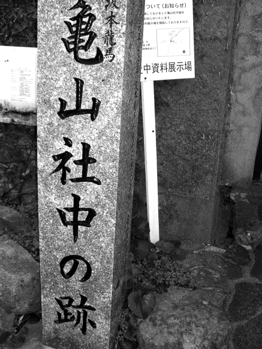
長崎にある、亀山社中の跡
二十五 逝ってしまった
二〇一〇年七月二十四日、阿佐ヶ谷ロフトにて「山口敏太郎祭３」が開催された。この祭は、年に一回開催されるものでオカルト関連のオールスターイベントである。
この日も様々な催し物が披露されたのだが、僕が最も気にしていたことは「四谷怪談」がらみのコーナーである。
実は僕の友人であるＯさんが、「四谷怪談」のＤＶＤプロモーションを頼んできたのだ。
「あぁ、いいですよ」
気軽に引き受けてしまったものの、送られてきたＤＶＤのパッケージを見て激しく後悔してしまった。──いわく付きの作品であったからだ。
そのＤＶＤは、アニメーションだったのだが、お岩の声をあてた女性がアフレコの後、自殺しており、呪いの都市伝説として噂になっていた作品だったのだ。
（まずいかな）
一瞬戸惑った僕だが、気にしないように心がけた。しかも、Ｏさんからはこんな提案があったのだ。
「Ａさんに、四谷怪談の一部を語ってもらうのはどうでしょうかね」
「わかりました。山場だけでも脚本を書いてみましょう」
それから数日、連載や単行本の執筆の合間に、四谷怪談の脚本を書こうとするのだが、なぜか邪魔が入るのだ。
書き始めると深夜にもかかわらず、仕事の電話が入ったり、何故か原因不明の眩暈が起きて、仕事ができなくなったり、意味不明の眠気に襲われて、居眠りしたり、そんなこんなで十日が過ぎ、敏太郎祭まであと五日となった。
「Ａさんにも早く脚本を渡さないといけないし、これは困ったぞ」
強引に書き進めていた夜のこと。久しぶりに金縛りにあった。
（うっ、動けない）
足の指先の感覚がなくなり、段々と凍っていくような感じであった。周囲の空気がどんと重くなった。その刹那、何かが足にしがみついた。
──何かの爪先が太ももに当たった。
何か重いものが、足にしがみつき、じわじわと這い上がってくる。
（やばい、やばいぞ、これは脳が見せる幻覚だ）
必死に抗う僕。だが、這い上がってくるモノは僕の胸のあたりまで移動してきた。
目玉だけは動いたので、必死に見ていると──長い髪の女がいた。
不思議なことだが、女の頭部にある〝うずまき〟も確認ができた。
「う〜っ、うう〜っ」
女は何か呻いている。
（なんだぁ、なんだよお、何を言っている）
混乱する僕の耳に女の声が今度は〝明確に〟聞こえてきた。
「か〜書くな〜。か〜か〜書くな」
その次の瞬間、体が自由になった。
（これはいかん、書いてはいかんのだ）
僕は翌朝、Ｏさんに電話してＤＶＤの宣伝はするのだが、四谷怪談を演じるのではなく違う古典怪談を用意すると説明した。
だが、あまりにも不気味なので、当日ライブに出席する関係者、演者の名前を調べ、埼玉県に住んでいる真言宗の僧侶Ｎさんにご祈祷をお願いした。
このＮさんは、以前某有名女優がお岩の霊に憑依されたときに、見事に除霊を成功させた僧侶である。
「山口さん、イベントに出るのはこれで全員ですか」
「ええ、全員ですよ」
「わかりました。祟りがないように御祈祷しておきますね」
そして、迎えたイベント当日。筆者は、スタッフに見慣れない男が交じっていることに気がついた。
「あの若い男は誰なの？」
スタッフは笑いながら、
「あれ、先生、ご存知なかったのですか？ ○○さんの事務所の新人マネージャーですよ」
「あぁ、そう」
と言いながらもこれはまずいと思った。何故なら、祈祷の名簿にこの男の名前が入っていなかったからである。いや、入れようにも来る話はまったく聞いていなかった。
だが、今更どうしようもなく、敏太郎祭は粛々と進行していった。
そして、問題のＤＶＤ紹介コーナーも順調に終わった。披露する古典怪談も〝赤穂浪士にまつわる怪談〟をＡさんに演じてもらった。
だが、トラブルはその直後に起こった。
──てめえ、うちのタレントが使えねえと言っただろう。
楽屋の前にいた僕に一人の男が掴みかかってきた。
「どういう意味ですか、そんな話はしていませんよ」
「うるせえ、表に出ろ！ 勝負してやるぜ！」
その男とは某事務所の新人マネージャーであり、祈祷の名簿から漏れていた男である。目玉があらぬ方角を向いており、口から泡を飛ばして錯乱している。
タレントについてきた芸能事務所の新人マネージャーが、イベントの主催者に掴みかかるとは異常である。
「大丈夫ですか、かなり興奮しているみたいですが......」
僕の冷静な物言いが、さらに男を刺激させたのであろうか。男は大あばれである。
「てめえ！ イベントの主催者だからっていばりやがって！」
その男は弊社や会場のスタッフ数人に押さえられ、外に連れ出されてしまった。これで終われば、単に気に短い男が暴れた話で終わるのだが、そうではなかった。
その男はそれから奇行が目立つようになった。ある日、男が上司に報告した。
「いやぁ、ベストスクープですよ。凄い写真を撮りました」
と言いながら社員全員にメール添付で送りつけたのは、
──猫の轢死体の写真であった。
また、違う日には、滑りと汚れでドロドロになった自宅の三角コーナーを抱えて出勤してくると、
「これ、会社の給湯室で使ってください」
半笑いでそう言って、女の子の机の上に異臭のする三角コーナーを置いた。
さらにまた後日、乾燥した醤油でガチガチに固まっている横山光輝の三国志を全巻抱えてきて、同期の机に置くと、
「おまえにやるよ。これ全巻読めよ」
と言い放ったというのだ。
後日、謝罪に来たその芸能事務所の社長と役員さんに、埼玉県のＮさんのお寺の場所を教え、その男を祈祷に連れていくように言った。
しかし、お寺での祈祷の甲斐もなくその男の精神は狂ったままであり、錯乱したまま某大手銀行役員の父親と母親に連れられて会社を辞めていった。
つくづく四谷怪談の因縁とは恐ろしいものだと痛感したのだが、唯一僕の失点と思える部分に気がついた。
ライブで披露する予定だった四谷怪談の代わりに、僕が提供したのが〝赤穂浪士にまつわる怪談〟である。
──実は江戸期に四谷怪談が上演されたとき、赤穂浪士はセットで上演された演目であった。
僕はお岩の呪縛から逃れることができなかったのである。
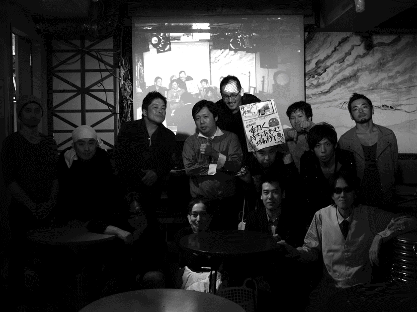
山口敏太郎祭３の出演者の面々。楽しいはずのイベントだったが......
二十六 出 口 王仁 三郎
僕の友人でヒプノセラピストの近藤光という人物がいる。催眠療法ではなかなか凄腕の人物で、業界では知る人ぞ知る男である。
この人物、自分が日本通運のアップル担当部署にいたときの後輩である。
その頃、僕はアップルの在庫データを担当する主任であり、彼は一般職員として勤務していた。
ある日、筆者が日月神示に関する本を読んでいると、近藤くんが激しく反応した。
「間さん、日月神示 、お好きなんですか？」
「めっちゃ好きやで、あと王仁三郎や竜宮神示、火水伝文もな」
神道系の共通話題が見つかり、一気に親しくなったのだが、その後彼は作家の中矢伸一氏の事務所に入るため、退社し長野県に行ってしまった。
だが、縁とは不思議なものであり、近藤くんとは東葉高速鉄道の飯山満駅のホームや東西線の中、船橋市内の某本屋などで遭遇し、交流は時々続いていた。
その近藤くんから二〇一一年の東日本大震災の後、電話があった。
「間さん、いや敏太郎さんに伝言です。自分の仕事を早くやるように」
僕はいきなり言われたので仰天した。
「おいおい、なんだよ、いきなり」
近藤くんは惚けた口調で不思議な話をし始めた。
「実は、赤ちゃんの頃、出口王仁三郎から可愛がってもらい、ガードさえつけられたお爺さんが名古屋にいまして、王仁三郎最後の弟子と言われてるんですよ」
「名古屋に王仁三郎最後の弟子が生存しているんですか？」
「ええ、自分もひょんなことから知り合いになりまして、時々電話が来るんですが、妙な伝言を預かりましてね」
近藤くんの説明によると、王仁三郎最後の弟子という人物から電話がかかってきて、こんなことを言われたというのだ。
〝おまえの友人に四十代で、坂本龍馬の会社から社名をとった企業の経営者がいるはずだ。その人物にお役目を果たすように伝えろ。近く沖縄のユタを差し向けるから、力を合わせお役目を果たせ〟
と言われ、僕のことだろうと思い電話してきたそうだ。
突拍子もない話であり、にわかに信じがたいことではあったが、そんなこともあるだろうぐらいにしか思ってなかった。
その数週間後、新宿の喫茶店で、この話を中矢伸一さんにしていたところ、これまた妙なことがあった。
「中矢さん、こういう話があるんですよ。不思議ですよね」
「それは不思議だね」
そのような会話をしていると、隣のテーブルに座っていた男性が立ち上がった。そして、僕と中矢さんのテーブルに近づくとこんなことを言ったのだ。
「私、出口王仁三郎の子孫でございます」
こんな不思議なことがあってよいのだろうか。
二十七 岐阜のお化け屋敷
二〇一二年、僕は岐阜の友人たちと柳ケ瀬商店街でお化け屋敷をプロデュースした。
東日本大震災に伴う関東地方の計画停電により、請け負っていた編集業務が続行できなくなり、Ｍａｃを車に数台積んで東京電力圏から脱出した我々亀山社中を迎えてくれたのが、岐阜の人たちであったからだ。
期日までに仕事を完遂するため、あてもなく関東から飛び出した我々。車中でかみさんが僕に聞いた。
「どこに行くの？ 編集作業を続行しようにも、仕事する場所もないでしょ」
「岐阜に行く！ 岐阜には吉村さんがいる」
「突然行ったって何もしてくれないよ」
この後、僕がなんでこんなことを言ったのかわからないが、妙な確信があったのは事実だ。
「いや、岐阜に行けば吉村さんがなんとかしてくれる」
僕のこの一言で亀山社中ことタートルカンパニーは岐阜に向かい、吉村さんの紹介で地元の方から事務所を貸してもらい、編集業務を完了することができた。
その後、その事務所は株式会社山口敏太郎タートルカンパニーの東海支店となり、その年の夏「口裂け女祭」が開催され、中沢健監督の「エックスマンＶＳ口裂け女」という自主映画が製作された。
この流れを受け、岐阜の町おこしとして計画された「柳ケ瀬お化け屋敷」を僕がプロデュースすることになったのだ。
「ひょっとすると、失敗するかもしれん」
吉村さんの言葉に僕も相槌を打った。
「確かに危ないかもしれませんね」
この人がほとんどいない商店街で、お化け屋敷が成功するのだろうか。このプロジェクトが開始する直前、筆者が見込んだ人数は一万人であった。
ところがどっこい、蓋を開けてみると毎日のようにマスコミで報道され、押すな押すなの大賑わいとなり、一万八千人という大きな成果を収めたのだ。
「奇跡が起こった！」
「経済維新や！」
この柳ケ瀬の奇跡に人々は狂喜乱舞した。
だが、お化け屋敷だけに度々奇妙なことが起こった。
一番怖いと言われた場所は、軍人マネキンのコーナーであった。僕は本物の軍服を買ってきてマネキンに着せていたのだが、ここで頻繁に奇妙なことが起こる。
口裂け女役で度々お化け屋敷に入っていたＡさんは、この軍人マネキンの近くで何度か幽霊を目撃しているし、このお化け屋敷の責任者（お化け屋敷長）をやっていたＢさんもここで奇妙な体験をしている。
「お化け屋敷長、軍人の服が脱げました」
お化け役のアルバイトから度々報告を受け、Ｂさんはよく軍人マネキンの上着を着せていた。
「よし、これでよし」
毎日のように上着が脱げるのだが、ある時などはズボンが脱げてしまった。
お客さんの悪戯の可能性も否定できないが、この付近はお化けに追いかけられる場所であり、ズボンを脱がす悪戯などやっている暇はない。
では、いったい誰が脱がしたのか。
最終日が近くなったとき、服を軍人マネキンに着せながら、
「お前ともこれで最後だな」
と声をかけたところ、
「うわっ！」
そのマネキンの指が自分の服に絡みつき解けなくなった。
「わわわわわっ!! 」
必死に振りほどいたＢさんであったが、なんだか軍人マネキンから、さよならと言われた気がしたという。
また、何故か誰もいない時間よりも、昼間のお客さんで賑わっているときに限って、
「目には見えないけど、人の気配を感じたね」
人影ではなく、〝何か白っぽいモノ〟が移動しているのを何回か目撃したと、Ｂさんは証言している。
念のために言っておくが、彼はオカルトの妄信者ではない。むしろ、懐疑的な視点から幽霊を捉えてきた人物である。そんな人物が霊のようなものを感じたと証言しているのだ。
また不思議なことに、お客さんが落し物する場所は大概この軍人マネキンの前であった。
よくよく思い返してみれば株式会社山口敏太郎タートルカンパニーの東海支店に軍服が届けられた時、かみさんが異常に怖がり、夜の八時にもかかわらず設置工事中のお化け屋敷まで自転車で届けたところ......。
──突然、嵐のような大雨になったというのだ。
英霊もこのお化け屋敷には参加してくれたのであろうか。
また、お化け屋敷の導入部分に、僕は招福の可能性を信じて「本物の座敷わらしが宿っている人形」を二体設置した。
この座敷わらし人形は、市内のうつぼ屋という喫茶店の奥さんが所有しているもので、お店の看板人形であった。その子たちを無理を言って借りてきたのだ。
「この人形がいる限り、絶対に商売は繁盛する」
そう言いながら、僕は人形を二体設置し、近くにはひな人形や小さなアンティーク人形を置いた。だが、このアンティーク人形が曲者であった。
かなりの寂しがり屋らしく、二体の座敷わらし人形に段々と擦り寄っていくのだ。
「あれ、おかしい。朝置いてあった場所と違うよ」
そんなことがよくあった。
朝にはやや離れた場所に置いたあったアンティーク人形が、夕方には座敷わらし人形の肩にもたれかかっているのだ。
この人形に対してバイトのＫ君が悪戯をしたことがある。──人形の裾をめくって中を見たのだ。
勿論、単なる悪ふざけのつもりであった。
「おいおい、呪われるぞ」
周囲の声にＫ君が苦笑いした。
「まさか、止めてくださいよ」
だが予感は的中する。
その後、彼はバイク事故を引き起こし、耳の裏を数針縫ったのだ。
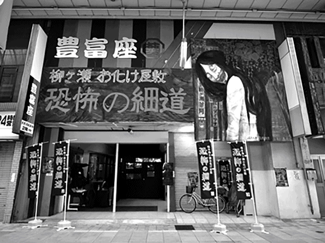
柳ヶ瀬商店街に1万8000人を呼んだ、奇跡のお化け屋敷
二十八 偶然の一致
ここ数年、関西でのテレビの仕事が増えてきた。徳島で生まれ育った僕としては、学生時代から慣れ親しんだ番組やタレントさんと仕事ができるのはうれしい限りである。
二〇一二年秋、朝日放送の番組「探偵！ ナイトスクープ」に専門家として出演した。
その時、なんともいえない偶然の一致が起こったのである。
その日は、大阪で謎の石を調べるロケであった。所有者は地底人の贈り物ではないかという説もあげており、僕が専門家として呼ばれたわけだ。
調査を担当した探偵さんは、間寛平さんであり、子供の頃からテレビの人気者「寛平ちゃん」に慣れ親しんだ僕はテンションが上がっていた。
「山口さんて、ペンネームなん？」
寛平さんがそう訊いてきた。
「いや、僕の本名は寛平さんと同じで、間というんですよ」
「おおっ、おんなじ苗字かぁ、じゃあ山口って名前は作ったの？」
「母ちゃんの苗字です。サラリーマン時代、会社にばれないように母方の苗字を名乗っていたのです。父方が間家で、母方が山口家なんです」
「ええ！！！」
寛平さんが固まってしまった。
「寛平さん、どうしたんですか？」
「いやぁ、偶然やね。俺は父方が間家で、母方が山口家やで」
「ええ!? 偶然にしては不思議ですね」
僕もさすがに吃驚してしまった。間という比較的珍しい苗字が父方にあり、山口という苗字を母方に持つ可能性はいったいどれくらいあるのであろうか。
不思議なシンクロニシティに興奮しながら船橋の自宅に帰ってきた僕は、何気なく寛平さんのプロフィールを調べてみた。
すると、物凄い衝撃が僕を襲った。
「ええええっ！ なんだって!? 」
寛平さんの誕生日が僕とまったく同じ七月二十日だったからである。
こんな確率、天文学的ではないだろうか。
二十九 ぷりんちゃん
二〇一二年十二月三十一日に入院した我が家の愛犬ぷりん♪が、六日間の闘病の末、一月五日に死んだ。
クリスマスには犬用ケーキを美味そうに平らげていた奴が、二十七日に謎の呼吸困難を起こし、肺炎の疑いで入院していたのだ。
十三歳のシーズー犬であり、寿命といえばやや早く、あきらめもつくものだが、売れない頃からいつも一緒だった〝小さい相棒〟の死は衝撃的であり、三日間程、食事がほとんどとれない状態だった。
悲しいことだが、この死を乗り越えなければならない。
一月五日は編集部でお通夜をして身内だけで送った。翌六日には、犬用の葬儀場で遺体を焼いてもらった。
「わんちゃんのご遺体を焼くのは、一時間ほどかかります」
と職員に言われ、かみさんと寒空の中、ぷりん♪の思い出話をしていた。
すると葬儀場の上に不思議な現象が起きた。
「なんだぁ、あれ」
僕が指差すと、かみさんと職員が見上げた。
太陽の笠（太陽の廻りをまるく雲がとりまく現象）が発生しており、その上半分は、まるで橋が架かったかのような虹が出ていたのだ。
「ぷりん♪が貴方に教えてくれたのよ。霊界に虹の橋があるって」
かみさんが号泣した。
「あいつらしいなぁ、見せてくれたんだな」
僕も号泣した。立ってられないほど、泣いた。
実は、世界中で流布されている都市伝説に、犬や猫は死後、霊界と現世の境目にある虹の橋で遊んでおり、飼い主たちが霊界にやってくると、迎えに来てくれるといわれているのだ。
「私も死んだら、今まで飼ってきた歴代のわんちゃんやペットと会いたいわ」
かみさんはこの都市伝説を聞いたとき、僕にそう語った。
「ふん、馬鹿馬鹿しい、単なるフォークロアですよ」
都市伝説とは虚構であり伝言ゲームであると思っている僕はこの話を、単なるデマだと思った。
だが、この目の前にある葬儀場から太陽の向こうまで続く虹の橋はなんだ？ やはり、ペットたちの虹の橋は実在したのだ。
「ぷりん♪、迷わないように気をつけて行け」
僕とかみさんは虹に向かって呼びかけた。すると、虹がすーっと消えていった。
「ぷりん♪が行っちゃったよ」
かみさんがまた号泣した。
そのとき、火葬場の職員が焼き場のドアを開けた。
「ぷりん♪ちゃん、お骨になりました」
「おかしいじゃないか、まだ三十分しか経ってないし」
職員が返答した。
「はい、でも早く焼けちゃったんです」
「貴方が忙しいからぷりん♪が気をつかったのよ」
僕は言葉が出なかった。
霊界への虹の橋が出たことや、その橋が消えた瞬間にぷりん♪が骨になるとは......。
ささやかな感動につつまれながら、僕とかみさんは遺骨を拾った。
お骨になったぷりん♪をつれて、かみさんと車で帰る際、また不思議なことが起こった。
突如、チューニングを合わせてないカーラジオに、ある歌の一部分が流れたのだ。
♪こんな気持ちはじめてさ♪
「今、聴いた？」
「うん、聴いた」
僕は驚きを隠せなかった。ちょうど、車内で、
「ぷりん♪は凄い犬だった」
「あいつが人間に生まれ変わったらきっと面白いことをやる」
「今、あいつどんな気持ちなんだろうね」
と話していた最中だった。
こんな絶妙のタイミングで、こんなぴったりな歌詞が、その部分だけ聴こえてくるなんて。
僕の自宅の玄関前には、ぷりん♪が十二月三十一日にやった最後のおしっこのシミがある。何日たっても消えないのだ。
このシミが消えたとき、僕たち夫婦はぷりん♪を思い出にできるのかもしれない。
世の中に不思議なことはある。世の中に不思議なことはないと言い張るのは、人間の驕りに過ぎない。ぷりん♪のシミは、一月に降った大雪の日に消えた。
だが、思い出は永遠に消えない。
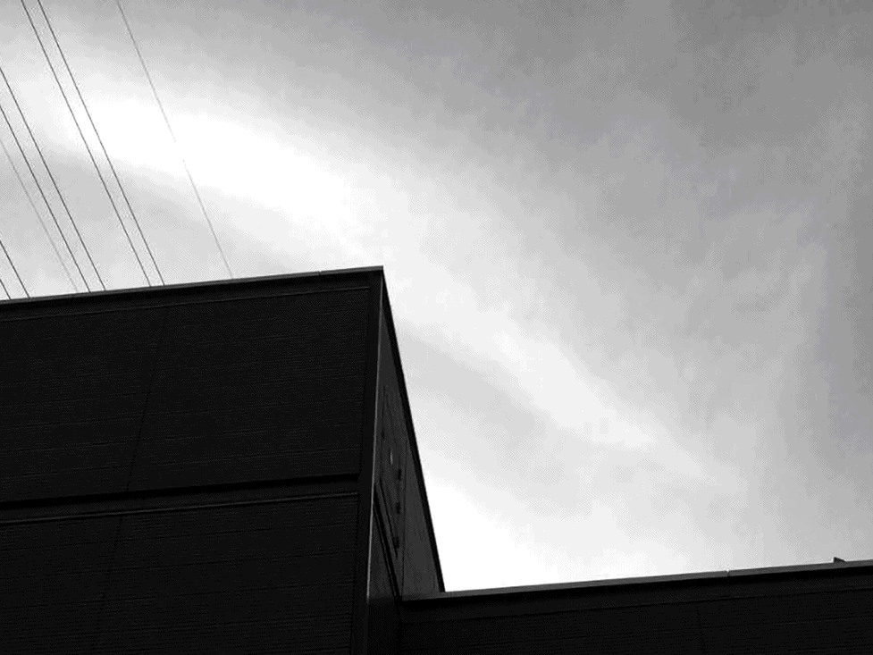
火葬場の上空に、虹の橋がかかった
かみさんと買い物に行けて、笑顔のぷりん♪
三〇 バンコクの幽霊
本書を執筆する直前、僕とかみさんは、バンコク旅行に出ていた。十三年可愛がった愛犬の死を追悼し、魂を慰めるためである。
仕事上で付き合いのある旅行会社に手配をお願いし、バンコク市内の古いホテルに宿泊し、アユタヤ遺跡や山田長政が統治したとされる日本人街の跡地などを取材して廻った。昼間はタイの灼熱の気候に翻弄され、夜はタイ料理に舌鼓を打った。
最終日の夜のことである。
ここ数日間この部屋に泊まってきたのだが、この日はまるで違う部屋のように思えた。
（なんかぁ、やな感じだな、空気がまとわりつく）
しかも、部屋が妙にかび臭く湿気が多いのだ。こんな夜は早く寝るに限る。と言いながらも資料の整理やメモに時間がかかり、いつしか二十三時を回っていた。既にかみさんは高いびきである。
（やれやれ、結局遅くなってしまった）
シャワーを浴びて、素早くベッドに潜り込んだ僕はいつしかまどろみの世界に、深く深く落ちていった。
「......んっ、なに」
──妙な視線を感じた。
確かに誰かが僕を見ている。そんな違和感に悩まされた僕は、真夜中に目が覚めた。ゆっくりとまぶたを開けていく。まぶたを開けると嫌なモノを見てしまうと思ったものの、
（正体を見極めたい）
という欲求に抗うことはできなかった。
目を開けると、そこには──老婆が立っていた。
「うわわっ」
僕は思わずのけぞった。相手の老婆も驚いたような顔で後ろに下がった。真後ろでは、かみさんが熟睡している。時間は深夜の一時十三分であった。
僕のベッドの真横に、痩せぎすの白人の老婆が立っていたのだ。
身長が高く髪の毛を後ろで束ね、腕には薄手の手袋のようなものを身につけており、何処か品の良さを感じた。
「なんだ、おばあちゃんか、ははあぁん、わかったぞ！ 部屋を間違えたのか」
年配の方がフロア違いか何かで自分の部屋に入ってきたのだと思った。
「おばあちゃん、ここは僕の部屋だよ。フロントまで連れて行ってあげるよ」
たどたどしい英語で僕が話しかけたとき、老婆の体から質感が消え時間が止まったかのように見えた。
（まさか......）
次の瞬間、足許からカーテンがまくれ上がるかのように、──消えてしまった。
（やられた、幽霊かよ）
物凄く不快な思いと新しい体験が増えたという喜びが交差した。
「いい加減にしてくれ、僕は明日も早いんだ」
と見えない幽霊に向かってつたない英語で抗議すると僕は再びベッドに潜り込んだ。
翌朝、睡眠不足のまま朝食をリバーサイドのレストランでとっていた僕を、不可解な出来事が襲った。
「おまえには、ここで食べる権利はない。ただ食い野郎め」
「おまえは、オーバーステイだな、この貧乏野郎め」
突然、レストランの職員につまみだされそうになったのだ。
必死に抗議して誤解は解けたのだが、幽霊を見た翌朝にただ食いと間違えられるとは......。
（あのおばあちゃん、抗議してから二度寝したから、仕返しされたのかな）
と思うと、妙におかしくなってしまった。
世に恐ろしきは、幽霊のお返しである。
三十一 呪い面
今から数年前、持ち主に不運を与えるといういわくつきのお面が、僕のもとへとやってきた。
僕は怪奇コレクションと称して、妖怪民芸品や幽霊画、妖怪の浮世絵、江戸期の怪談本、妖怪のミイラ、ＵＭＡの標本などを収集している。
そのため、各地の骨董商や古道具屋から、不可解な品物の情報が集まってくる。
この呪い面は、西日本の某所にある骨董商から購入した。
──しかも、恐ろしく安かった。
このお面を手に入れたときは、少し不気味には思ったものの、さほど怖いとは思わなかった。（のちにフジテレビの人気番組「奇跡体験！ アンビリーバボー」の再現ＶＴＲでは、旅先で手に入れたとも、お面が届いたときにかみさんが家に入れないでって絶叫したともされているが、その部分は再現ＶＴＲ特有の演出である）
由来はわからない。僕は大正から昭和初期ぐらいのものではないかと推測しているのだが、友人でタレントの島田秀平君はアフリカか、何処か海外のモノではないかと推測していた。
この手のグッズの購入は、僕の代行として社員がやることも多く、大概は弟やかみさんが相手先と荷物の送付や料金の精算を行っている。
この面が届いたのは、弊社の総務部と経理部を統轄している管理部であり弟が受け取っている。あの銀色の巨人を子供の頃に目撃した弟である。
その後、霊感の強い某氏から「あのお面は三人ぐらい不幸にしているから、（表に）出さない方がよいよ」と言われた。この不幸の度合いが気になり、聞いてみたところ、一人目は病気、二人目は事故に遭遇。三人目はビジネスが傾いてしまったとその人物は霊視した。
だが、僕は「まぁ、それは偶然の一致ではないのか」と、あまり気にしていなかった。
最初の犠牲者が出たのは二〇〇七年三月頃であった。面のうわさを聞いた雑誌「ＢＸ」の編集者で僕の友人のＭさんが、誌面に出そうと提案してきたのだ。
「呪いのある面？ いいですねえ、誌面に出しましょう」
「ええ、出すんですか」
「そういう、パンチの効いた企画、グッドですよ」
Ｍさんはノリノリであった。
結局、山口敏太郎事務所の管理部で撮影をすることになった。撮影に立ち会ったのは僕とＭさん、そして管理部の責任者である僕の実弟。
「気味悪いなぁ 悪魔みたいな表情してるな」
日頃まったくこの手の話を信じない実弟が、妙に怯えていたのを記憶している。この弟の発言により、しばらくはこのお面を「悪魔面」と呼んでいた。
その夜のことである。実弟の仕事仲間が急死した。年齢が五十代であったゆえ、急死してもおかしくはないのだが、このタイミングでの死去には疑問を持たざるを得ない。
「兄貴、あの面やばくないか？」
「うむ、単なる偶然ではないのか？」
それから数日後、Ｍさんが新宿のゴールデン街で酔っ払ってしまい階段から落下、アバラ骨や前歯を折ってしてしまったのだ。
「いやぁ、不覚でしたよ。お酒飲んでましたから」
「すいませんね。あの面のせいでしょうかね？」
「いやいや偶然でしょう。自分の不注意ですよ」
Ｍさんが苦笑いしたことを覚えている。
このＭさん、今でも山口敏太郎とのコンビは健在であり、いまは「世界の地獄図鑑」を作り上げている。
さらに、雑誌「ＢＸ」の版元バウハウスが、メディアクライスに買収されるという事態も起こった。勿論、買収の話自体は、それ以前から進行していたので呪いとは関係ないかもしれないが、かなり不気味である。
その後、お面は青梅の妖怪倉庫（土産物屋だった妖怪本舗も兼ねる）に保管された。
次の犠牲者が出たのは二〇〇八年四月末のことである。
山口敏太郎事務所・漫画工房を立ち上げるにあたり、余っている電灯を妖怪倉庫から管理営業部へ持ってくるようバイトのＭさんに指示をした。
このバイトのＭさんは、かつてゴム人間の写真の撮影に成功しており、それを僕が評価し弊社でバイトすることになったのである。
彼女が最寄駅の下総中山駅に着いた時、電話がきた。
「今、駅に着きました。持っていきますね」
駅から管理営業部までは五分ほどの距離である。
「あぁ、頼むね」
僕と弟は待った。だが、ここでまた不思議なことが起こったのである。三十分以上経っても彼女は一向に姿を現さないのだ。
「何が起こってるんだ」
結局、彼女は自力で営業部までたどり着けず、偶然管理部の人間が外に出た際にあたりをグルグルさまよっていた彼女を見つけたのだ。
因みに、彼女は何度も管理部を訪れており、道もしっかりと把握していたはずである。
「Ｍちゃん、しっかりしてくれよ」
ようやく到着した彼女が持ってきた箱を開封すると一同唖然。箱の中に入っていたのは電灯ではなく、倉庫に封印したはずの悪魔面であった。
「うわっ、悪魔の面だぁ」
弟がまた絶叫した。
「今更持ち帰るわけにいかないな」
面はそのまま管理部に置いて僕は帰宅した。
その夜、再び実弟の仕事仲間が急死した。
今度は四十代半ばの働き盛りの人物が病死したのだ。
「これでも兄貴は偶然と言うのかよ」
「偶然以外のなにものでもないだろう」
僕が困惑していると、弟がさらに猛抗議してきた。
「兎に角、この悪魔のような面は、俺は嫌いなんだよ！ 兄貴持って帰ってくれよ！」
そう言われて僕は渋々車に載せて、漫画工房に向かった。数時間の滞在の後、最終的に車は駐車場に停めた。
だが、またしても不幸が起きてしまう。
その夜、漫画工房の斜め向かいに住む老婆が原因不明の変死を遂げたのだ。
──三人目の死者である。
「妙な死に方なんでね、お向かいが何か不審人物でも見たのかと思いましてね」
後日、弊社漫画工房の人間が警察に聞き込みを受けている。
「はぁ、特に目撃はしていないですね」
まさか、悪魔のような面を乗せた車のトランクがその老婆の家に向いてましたとも証言できず、聞き取り調査には情報を提供できなかったという。
呪いの連鎖は、二〇〇八年七月二日に阿佐ヶ谷ロフトで行われた、内外タイムス主催の「ナイガイミステリーサミット２００８」へと続く。
悪魔面は、二度目の御開帳の後、青梅の倉庫に封印されるはずであった。しかし、彼は再び日の目をみることとなる。
阿佐ヶ谷ロフトにて行われた、内外タイムス主催の「ナイガイミステリーミステリーサミット２００８」。そのメインとして、悪魔面が登場することになったのだ。
「先輩、あの面、出してくださいよ」
「いやぁ、あの面、よくないぞ。まじだからな」
「そこをなんとか、一生のお願いです」
「君が仕切るイベントだから、そこまで言うなら出すけど、何か起きても知らんぞ」
このイベントの企画立案者Ｉ君は、僕の大学の後輩であり、懇願され渋々承諾したものであった。
その日も悪魔面は、事務員Ｍちゃんが青梅より運んでくることになっていた。彼女は霊感が強いのであるが、なぜか悪魔面の呪いを受けない。
故に、運搬係として選ばれたのだ。だが、ライブの日、Ｍちゃんは待てど暮らせどライブ会場に現れない、連絡も取れない。
「おいおい、とっくに開場しちゃったけど大丈夫か？」
どうしたものかと焦っていたところ、開始直前にＭちゃんは到着した。理由を問い詰めたところ、
「私の乗っていた電車が、人身事故のために止まってしまったんです」
しかも、遺体を乗り越えるときに「ガッタン」と車体が上下に揺れるのだが、悪魔の面の箱を抱えていたＭちゃんの席が「ガッタン」と遺体を乗り越えた途端に車両が止まったのだ。
「ちょうど、悪魔の面を抱えていた席の真下に遺体があったんです」
この人身事故は勿論、百％悪魔面の呪いとは限らないが、それがただの人身事故ではなかったのではないかと思わせるような怪異が、次々と発生する。
このライブには、山口敏太郎がコメンテイターとして参加し、ゲストとして島田秀平くん、疋田紗也ちゃん、Ａさんらが呼ばれていた。まず、霊感の強い疋田紗也ちゃんが奇怪なものを見てしまった。
「あっ、あれ何っ？」
悪魔面の箱を抱えて会場に入ってきたＭちゃんの背後に、黒い男が立っているのが見えたというのだ。また、僕も同じような男を見ている。ライブ中、客席に大柄な男が立っていたのが見えた。
（後方の席の人に迷惑じゃないか）
僕が不審に思っているとその男の姿が消えた。なんと男が消えたところには、悪魔面の箱を抱えたＭちゃんがいたのだ。
それに加えて楽屋でも怪異が起きている。悪魔面の入った箱を楽屋に置いていると出演者の気分が悪くなり、なくなると気分がよくなるという奇妙な現象が起こった。
そのため悪魔面の入った箱は、楽屋ではなく客席の横に設置された関係者席へと置かれた。
このライブに参加した 漫画家のＫさんは帰宅後、常に悪魔面の気配を廻りに感じたり、寝ていると添い寝する悪魔面の気配があったのだという。
他にもライブ終了後、悪魔面を被って踊った知人のカメラマンは、数日後義父が倒れている。だが、一緒に被って踊ったはずのＡさんには何も起きていないことも事実である。
そんなこんなでこのライブは終了したが、数日後、立案者のＩ君から電話があった。
「先輩、どうもありがとうございました。御蔭様でライブは大成功でした」
「それは良かったね」
「あと報告があります。入院中のうちの父が死にました」
「なんだって、またあのお面のジンクスが当たったのかね」
「いや、偶然だと思います。呪いなんてこの世には存在しないはずですから」
もはや、このお面は表に出す存在ではない。偶然の一致ではない。これは悪魔面ではなく「呪い面」だ。
そう思った筆者は封印を誓ったのである。
その後、この悪魔の面騒動を報道したり、記事にした媒体そのものにも呪いが押し寄せる。
二〇〇九年三月、雑誌「ＢＸ」に僕が書いていたオカルト原稿をまとめて単行本として発売したメディアクライスが倒産した。
この時の本は、『山口敏太郎のミステリーＢＯＸ』というタイトルであり、表紙には「呪い面」を使用している。
二〇〇九年十一月、この騒動を二〇〇八年八月にｗｅｂ記事にした内外タイムズが倒産している。
（その後、Ｗｅｂ版のみ、別会社のフェイツに移管され、リアルライブのミステリー記事のバックナンバーという形でこの記事は生き残っている。内外タイムズ＝リアルライブとしたり顔で言う人物がいるが間違いである）
この「呪い面」伝説はこれで終わるはずであった。
二〇一〇年三月、テレビ大阪の「四次元クラブ」という番組から、僕にオファーが来た。どうしても「呪い面」を出して欲しいというのだ。
「いや、まじで何か起こりますよ」
「だからこそ、いいんですよ。起こって欲しいのです。山口さんの担当は心霊ですからね」
「何があっても知りませんよ」
この番組は、有吉弘行さん、バカリズムさん、小森純さんがＭＣであり、心霊企画の回に僕と、既知の竹内義和さん、その後友人となる有村昆ちゃんが参加していた。
当日、収録スタジオにお面を持っていくことになっていたが、朝スタッフから突如電話連絡が入った。
「山口さん、頼みます。あのお面、絶対に持ってこないでください」
「なんですか、今度は」
「......あのプロデューサーの奥さんが今朝......」
「今朝......、何かあったんですか」
「具合が悪くなり病院に運ばれ、緊急手術中なんです」
またしても不吉なことが発生したのだ。
もはや、この面は出すべきではないと思ったのだが、二〇一一年にも不可解な出来事が起こる。
二〇一一年三月に発生した東日本大震災により、青梅の妖怪倉庫こと妖怪本舗を休止することとなり、中にあった品物は徳島の倉庫に運ばれた。同時に、一部の衣装のみが岐阜の東海支店に運ばれた。
──その衣装の中に「呪い面」が混れ込んでいたのだ。
その年の五月、弊社東海支店ではスタッフが泊まり込みで「エックスマンＶＳ口裂け女」という地元とタイアップした自主映画を撮影中であった。
そのうち社員Ｕ君が「呪い面」を見つけてしまった。
「山口先生、こんな面、置いてるとやばいですよ」
「どっかに送った方がいいかね」
「お願いします」
Ｕ君の進言を受けて、かみさんがコンビニから宅配便でＡさん宅に送った。誰も預かり希望者がおらず、唯一被っても呪われなかったＡさん宅が選ばれたのだ。
「僕は呪いなど信じません。だから預かってもいいよ」
とＡさんも豪語していたため、すんなり預かってもらうことに決定した。
だが、まさにコンビニに宅配便を預けた、その時刻に撮影クルーに異変が起きていた。
──カメラが謎の故障を起こしたのだ。
宅配便で送った後は特に異常はなかったのだが、Ａさんが預かっていた一年間で彼は長年続いた漫画連載が打ち切られている。
「あれは呪いではない、絶対に呪いではないよ」
と本人は笑うが本当に偶然であったのだろうか。
一年後、Ａさんの身を案じた僕の提案で、京都蓮久寺の三木大雲住職に預かってもらうことになったのだ。
そして、二〇一二年初夏、「奇跡体験！ アンビリーバボー」が取材を申し込んできた。
様々な撮影が行われ、番組放送に繋がったのだが、「見ただけで死ぬ」という部分はテレビ演出によって盛られた部分である。これにより多くの子供たちがパニックになったのだが、あくまで障りが起きているのは、メディア関係者の周辺ばかりであることを言明しておこう。
この取材時にも不気味な死の連鎖が起きている。
──社員のＨ君のおじさんが亡くなったのだ。
僕のｗｅｂラジオ「山口敏太郎の日本大好き」のディレクターをやってくれているＨ君は番組にも度々出てくるので読者の方の中には知っている人も多いだろう。
彼が「呪い面」に関してテレビスタッフからインタビューを受けていた時、ちょうどその時間、彼のおじさんが亡くなっているのだ。
さらに、スタッフの中には具合が悪くなる者も出たらしく、テレビ番組の放映はもの凄いパワーで情報を拡散していった。
放送日の翌日、番組内で「呪い面」の鑑定を行った霊能者（坊さんもどき？）が逮捕された。女性の相談者の胸を触った容疑だという。この霊能者は、三木住職とは別人であり、僕の友人でもない。
「この霊能者が逮捕されたのも、呪いでしょうか」
と聞いてくる人がいるが、これに対しては僕は明確に否定している。
「事件そのものは、面を鑑定する半年以上前の話ですし、あれは呪いではなく〝性癖〟でしょう」
この放送後、「呪い面」は再び三木住職のお寺に預けられ、毎朝お経を聞いて仏弟子として修行を行なっている。
「呪い面がいつか祝い面に変わると良いですね」
そう言いながら、今も面はお寺に封印されているのだ。
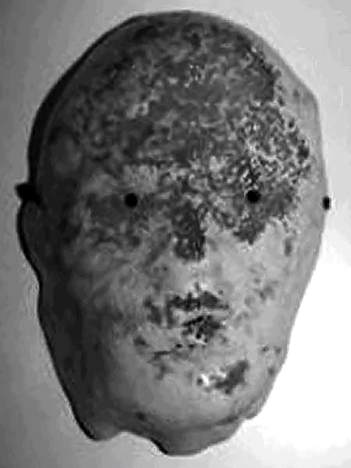
次々と関係者を不幸にしてきた呪い面
あとがき──マジカルワンダーランド・日本
かつて、私たちが住む日本はマジカルで不可解な現象が頻繁に起こる国であった。
欧米の価値観とは違う異質の神国・ジャパン。ラフカディオ・ハーンやアインシュタインなど多くの親日家が感嘆した日本の不思議は、確かに日常生活の傍にあったし、異界の住民たちの気配は、つい数十年前までこの国に息づいていた。だが、もはやこの異界への入口は何処にも見出すことができなくなった。
〝異界は死んだのだ〟
〝科学・常識という神によって異界は殺されたのだ〟
今や日本中、何処に行っても同じような店が軒をつらね、似たような住宅が立ち並び、まったく同じ価値観で同じ文化・サービスを消費しているのだ。方言もなくなり、誰もが同じように標準語でしゃべる日本がそこにある。果たしてこれでいいのだろうか。
かの三島由紀夫は、自衛隊市ヶ谷駐屯地で決起し自決する数ヶ月前、「このままだと日本はなくなってしまい、その代わりに無機質な、からっぽな、ニュートラルな、中間色の、富裕な、抜け目がない、或る経済大国が極東の一角に残るであろう」と指摘している。
そんな〝のっぺらぼう〟の日本が生まれつつある。
この憂うべき変化は、政治経済だけではなく、文化や美術・芸能・民俗など全ての分野で起こっている。日本における地域性の崩壊の先には、日本という国の特異性の崩壊が待っているのだ。
数世紀後に、未来の日本人が、かつて日本はマジカルゾーンであったと語ることができる材料として、本書を未来への遺言として残せれば幸いである。
なお本書の執筆において、家族・事務所のスタッフ、体験者の方々、同級生・沢近さん、株式会社ティー・オーエンタテインメントの編集者・設楽さんに多大なご尽力をいただいたことに感謝いたします。
二〇一三年四月 山口敏太郎
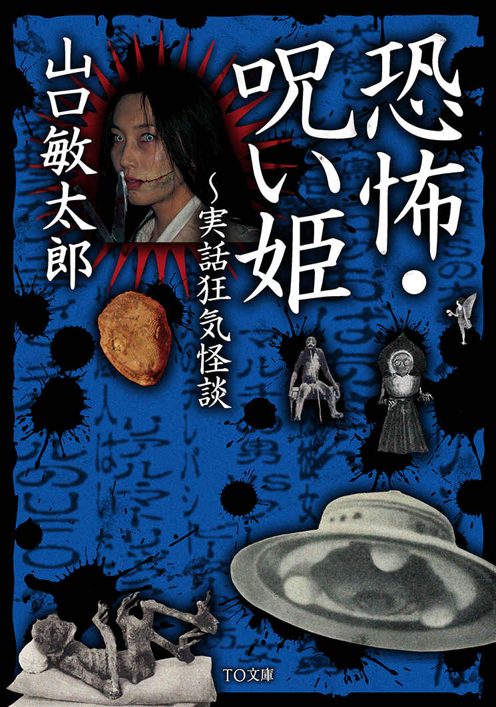
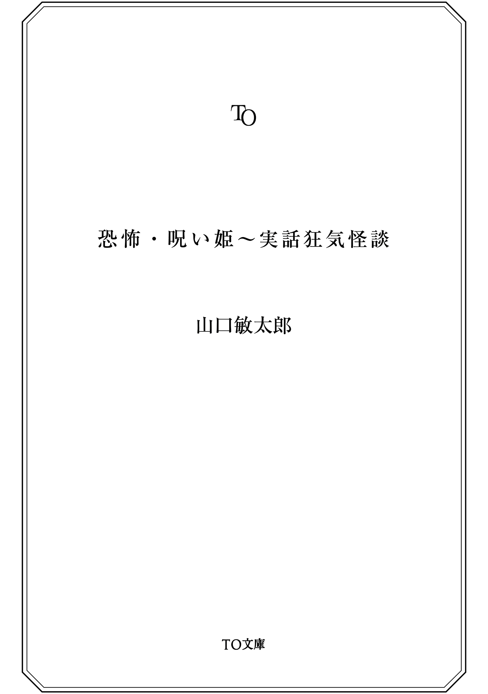
まえがき
結局、この世の中にある全てのオカルトは悉く〝人間の心〟が生み出している。
──あの華美なる狂気も。
──あの鳥肌のたつ恐怖も。
──あの魔物たちや亡霊たちも。
全ての母は、〝人の心〟であるのだ。
愛情を生み出す心の産道は、恐怖さえもひねり出してしまうのだ。
げに恐ろしきは、人心也。
オカルトは人の心から生まれたゆえに、人の心を震撼させる。
君、オカルトを笑うことなかれ。
オカルトは人間そのものの権化であり、迷える生き物〝ニンゲン〟の正しい姿を表している。
君がこの世に生まれたことからして、それはオカルト。
君が苦悩して生き続けることからして、それもオカルト。
オカルトを哲学せよ！
オカルトを舐め尽くせ！
オカルトを堪能し、自分の病んだ心を見極めた君には、〝約束の丘〟が待っているのだ。
山口敏太郎
恐怖・呪い姫〜 実話狂気怪談
一 恐怖・呪い姫──月姫伝説
「月姫」と会ったのは、もう二十年以上も前のことである。今でも思い出すだけで鳥肌が立つぐらい不快な思い出である。
当時、僕は「妖怪王」という妖怪の情報を網羅したホームページを運営していた。妖怪のサイトとしては人気であり、アクセス数も投稿数も他の似た妖怪系のサイトと比べてダントツであった。そこによく投稿していたのが、ここで紹介する月姫である。
「間さん、こんな妖怪の伝承があるんだけれど」
そう言いながら、いつも彼女はもったいぶって真偽不明の情報を沢山くれた。その話はどれも怪しく興味深いものばかりであった。
「静岡県の某所にある滝の裏側には、隠れ郷への入り口がある」
「友人が、食べ物を食べず、外側が金属のように固い『クダ』という生物を飼っている」
月姫は妖怪や民俗学の知識が豊富で、文章も美麗かつ簡潔。とても知的レベルの高い女性という印象が強かった。当初彼女とのやりとりは、掲示板を介してだけであったのだが、僕も徐々に興味を持ち始め、しばらくするとメールでやりとりを行うようになった。当時流行りだした「メル友」というやつである。
その後、月姫から妖怪の話とは別の内容の相談メールが届いた。その内容は、
「ネットでお得な買い物をするサイトを運営したい」
という当時まだ珍しかったネットビジネスの相談であった。
「具体的なプランはすでに上がっている。あとは物流の方面を固めたい。ついては物流プランを作ってくれないか？」
と話す彼女に、僕は相談に乗ってあげることにした。
当時の僕は兼業作家であり、昼間は日本通運の営業マンとして働いていた。仕事で担当している顧客が楽天、Ｙａｈｏｏ！、ブックオフなどＩＴ物流がメインだったため、ネットビジネスは得意中の得意であった。もっとも、彼女が僕のサラリーマンとしての仕事を何処まで知っていたかどうかは定かではないが......。
後日、月姫から電話がかかってきた。ハスキーボイスの女性であった。三十分くらい世間話や妖怪の話をしていたのだが、彼女が突如こんなことを言い出した。
「ほら、私の旦那って有名人だからさぁ」
「え？」
僕は一瞬戸惑った。旦那が有名人だって......。
「え？ 旦那さんって有名人なんですか？」
「知らない？ 木村拓哉っていうんだけど......」
「木村拓哉!? 」
僕は頭が混乱した。木村拓哉の妻と言ったらあの人しかいない。
（そう、工藤静香だ......）
確かに電話から聞こえてくるハスキーな声は、工藤静香にそっくりだ。
（じゃあ、僕のサイトに書き込んでいた月姫の正体は、工藤静香だったというのか......!? そんなバカな......）
動揺を隠せない僕に、彼女はこう続けた。
「わたしさぁ。芸能界に疲れてて、こういうネットビジネスも始めたいと思ってるんだよねぇ......」
「そうですか......」
やはり、工藤静香だったんだ。僕は微かに緊張した。そして彼女は僕に「直接会いたい」と伝え、この日の電話は終わった。
その電話を切った時の興奮と動揺は、いまでも覚えている。僕は寝室にいるかみさんの元へ行き、こう伝えた。
「おい。月姫さんの正体は工藤静香だったぞ！」
「え〜〜！」
かみさんも仰天したような顔である。
それもそのはずである。当時の僕は妖怪分野でのみ活動しているマイナーなライターであった。工藤静香なんていう大物芸能人から電話がかかってくるなんて夢にも思わないだろう。
（いやぁ、俺も有名になってきたもんだ）
単純に嬉しくなって、その日は寝付けなった。今考えれば馬鹿な話である。
その数日後、僕とかみさんは工藤静香こと月姫と直接会うことになった。
時間通りに待ち合わせ場所に行ったのだが、工藤静香らしき人物はどこにもいない。
「おかしいな......」
僕は周りをウロウロし工藤静香を探したのだが、それらしき人はどこにもいない。彼女を探そうと、あちこちウロウロと歩いていると、大柄なオカマに当たった。身長は一七八センチくらいで派手なメイク、ロン毛で筋肉は隆々としている。見ようによってはバンドマンのようにも見える。
（いったい、この人は何者なんだろう？）
僕は困惑した。
（それにしても、月姫さんは遅いなぁ）
そう思っていると、先ほどの大柄なオカマが、再び僕の近くにやってきて、こう呟いた。
「はじめまして。月姫です」
僕はびっくり仰天した。心臓が口から飛び出すとはこのことである。
「はぁぁぁ」
──この巨大なオカマが月姫だったのだ。もちろん工藤静香には似ても似つかない顔と体をしている。
「じゃあ、打ち合わせにいきましょう」
そう言うと、月姫は歩き出した。しかも、月姫にはお付きの女性がいた。
「こんにちは、○○と申します」
そう言って挨拶した女性は、元々工藤静香の大ファンであり、工藤静香ファンサイトに投稿したところ、
「あたし、本物の工藤静香なんだけど」
という月姫からのメールをもらい、何度かやりとりしているうちに仲良くなり、彼女が住んでいる街で工藤静香がライブを行ったとき、
「ライブの後に会いましょう」
という月姫からの電話で誘いだされ、そのまま付き従っているのだという。
（なんだそれ、典型的な詐欺じゃねえか。というか、どうみても外見が工藤静香じゃないのに......どうしてこの人は、これが工藤静香だと思っているのだろうか......）
打ち合わせした飲食店では様々な話をしたが、月姫の話はハッキリ言って異常だった。
「自分と俳優の陣内孝則がヘリで中南米の島へ渡り、エル社という企業が作った人工ウィルスに感染したゾンビと戦った話をモデルにしたのが『バイオハザード』なんだよね」
「陣内さんは特殊能力を持っており虎に変身できるの。私が疑ったら陣内さんは虎に変身して『しずか〜』と吠えたのよ。もっとも特殊能力は芸能人の大半が習得しているけどね」
そんなことを真面目な顔で言うのである。僕は、
（何を言っているんだ？ この人は）
と思ったが、一緒に行ったかみさんは、月姫の話を幾つか信じてしまった。完全に怪しいと思った僕は、月姫に訊いてみることにした。
「まさか、僕、信じられないなぁ......」
「ええっ、間さん、どういう意味？」
「いや、あなた、本当に工藤さんなの？」
月姫はやや困った表情を浮かべながら、自分の外見が工藤静香に似ていない理由を訊いてもいないのにこう話した。
「工藤静香は、私と従姉妹で結成されている従姉妹同士ユニットなんだよね。私は作詞や作曲、セルフプロデュースなどを担当するブレーンとして活動しているの。テレビに出ている工藤静香は、ビジュアル担当として活動している従姉妹なの」
「はぁ......そうですか」
勝手に工藤静香をユニットにしてしまう、このオカマには呆れるばかりであったのだが、驚くべきことにうちのかみさんはこの話も信じてしまった。このあたりの成立経過を、オカルトの発生と結びつけるととても興味深い。巷で噂になっている眉唾なオカルト話というのは、こういうことを信じてしまう人の発言から広まっていくものなのだろうか......。僕は気になったのでさらに訊いてみた。
「でも、旦那さんは木村拓哉さんなんですよね。それも二人で共有なんですか？」
僕は鈍感なふりをして直球を放ってみた。そうすると、こう言い放った。
「旦那は従姉妹に盗られたのよ」
その後、何度かこの巨大オカマ、月姫こと偽工藤静香と会うことになる。
勿論、その後は取材も兼ねている。僕はこのオカマの工藤静香に興味を持ち始め、観察してみることにしたのだ。
そんなことを考えていたある日、月姫から、
「亀戸においしい大根料理のお店があるから来てほしい」
と連絡があり、僕は再びかみさんと月姫に会いに行った。
その店には月姫のほかに例の付き人、メッキ会社を経営している社長、月姫のマネージャーと称する中年男性がいた。
なんでも月姫は、自分の作っている「妖怪ジッポー」を僕のサイト「妖怪王」や、僕のイベント等で売りたいそうなのだが、諸般の事情で自分で販売することができないので、僕の妻の名義で売って欲しいと頼んできたのだ。
「あぁ、いいですよ」
と、かみさんは快諾した。その後我々は、和やかな雰囲気で高級な大根料理を食べた後、解散した。
そしてその会合の時に話していた通り、月姫がプロデュースした「妖怪ジッポー」は、僕のイベントなどで売られるようになり、数十個が売れた。しかし、数ヶ月後に事件は起こった。
「月姫さんがジッポーの制作費を一円も払ってくれないんですよ」
と、先日大根料理屋で会ったメッキ会社の社長が泣きながら僕に電話をしてきた。
「どういうことですか？」と問いただすと、
「二百個も作ったのに、制作費を踏み倒されました」
「それは酷い......」
「敏太郎さんの方からも言ってくださいませんか？」
これはいけないと思い、この事実を月姫に確認したのだが、
「向こうの作業に問題があったんだよ。この件はマネージャーに任せてあるんでね。あとうちの会社と先方との問題なんで、間さんは口出さないで」
と月姫に言われてしまったので、僕は引き下がるしかなかった。
後にわかったことだが、マネージャーと称していた男性が製作の際にジッポーの仕入れや彫金、メッキなどの発注の段取りをやっていたのだが、この人物も姿を消していたのだ。
そうなのだ、これは巨大オカマの謀略であった。これは罠で、最初から月姫は製作費を踏み倒すつもりだったのだ。不安になった僕は、今度はメッキ会社の社長の安否が気になり、かみさんに指示を出して以前に貰った名刺を頼りに、社長の行方を探ったのだが、社長は事務所にも自宅にもおらず、忽然と姿を消してしまったのだ......。
その後、月姫は池尻大橋のマンションから、品川駅近くの一戸建てに引越した。
（この金はいったい何処から入手したのか......）
そう思ってしばらく経った頃、月姫の魔の手はさらに広がっていった。
今度は、妖怪王サイトを通じ僕の書籍のイラストを手掛けてくれているイラストレーター・Ｎくんへコンタクトを取り始めた。
「Ｎくん、会わない？」
そう言われてＮくんは月姫と会ってしまった。しばらくするとＮくんは月姫に洗脳され、彼は、この巨大オカマが「工藤静香のブレーン」であると信じ込み、オカマの月姫で童貞を喪失し、生活費のほとんどを月姫に献上する羽目 になってしまった。
そしてその後Ｎくんは行方不明になってしまった。ある日、
「山口さん、月姫に電話しても相手にしてくれないんです。あの子を探してください」と、Ｎくんの母親から懇願する電話があった。
「わかりました。お母さんの心配は当然ですね。僕はいろいろ心当たりのある人に聞いてみます」
数日後、Ｎくんの行方不明調査が行われたが、千葉県某所のタコ部屋へ放り込まれ肉体労働をしながら、月姫に送金していたことが判明した。このＮくんの件でも、僕は月姫に電話で抗議した。
「Ｎくんって、月姫さんにお金を送金してるんだって？」
「違うよ。貸した金を返してもらっているだけだし」
と、まったくお話にならなかった。結局、Ｎくんに会うことはできなかった。
その後、月姫は作家となって本を出したり、メジャーなレコード会社からＣＤデビューをしたりと、なかなかの活躍をしていたのだが、所詮は小手先で人を騙す人間のやることで、あまり長続きはしなかった。
月姫のレコードに収録された曲を聴いたのだが、かなりの腕前で少々驚いたのだが、後に某編集者の友人男性が騙されて作曲してやったものだとわかった。ここでも他人のふんどしである。
それでも、月姫に関わった人物はＮくんをはじめ、数々の人間が行方不明になっているのだから恐ろしい。
作家魂に火がついてしまった僕は、相変わらず月姫の近辺取材を進めていた。しかし、さすがに彼女も気が付いたのか、関西へ逃走してしまった。聞くところによると、女（彼？）は関西の上田秋成ゆかりのお寺で、イベントを行ったりしていたようだ。
その後の月姫がどうなっているかはわからないが、どうやら岡山県で男性と一緒に行動しているという。勿論、このようなことが社会的に許されるはずもなく、僕は月姫のことを本に書くことで彼女が行う今後の悪事を未然に防ごうと考えている。
最後に月姫らしき人物の若い頃の話をご紹介したい。
これは工藤静香ファンクラブの事務局関係者から聞いた話だが、かつて工藤静香のモノマネが得意な青山学院大学の学生が実在したという。頭脳は明晰で文章は美麗。名前は○○武緒というらしい。
月姫はよく僕に「自分は九尾の狐の生まれ変わり」と言っており、「酒呑童子と結婚する」と言っていたが、月姫の正体は、この「青学出身の武緒くん」ではなかったのだろうか。皆さん、この、ある意味呪われた巨大オカマ、月姫にご注意を......。
二 邪悪な社員・Ｓの大暴走
Ｓとの出会いは今から十年近く前、横浜のあるカルチャーセンターでのことであった。僕は妖怪の講座を行うため月に一回、そのカルチャーセンターへ通っていたのだが、その時の受講生にＳがいた。
カルチャーセンターで僕が行っていた妖怪の講座は、主婦や定年退職をした女性が大半で、男性は珍しくＳただ一人であった。
「へへへっ、僕、浮いてますか？」
受講中もニコニコと笑顔を絶やさないＳは、四十歳になるかならないかくらいで、何の前触れもなく突然現れた彼に僕はなんとも言えない違和感を感じていた。過去の経験上、こういう時に僕が「違和感」を感じると、先々ロクなことが起こらないのだ。
何度かカルチャーセンターでの講座に来て僕と親しくなったＳはある日、僕にこう尋ねてきた。
「山口先生はどんな事務所を経営なさっているんですか？」
「株式会社で従業員は五人くらい。アルバイトは二人くらいいるよ」
その話を聞いたＳは目を輝かせて、
「僕も働かせてください！」
と言ってきた。
「うちは編集やデザインなどの出版事業や、映像の撮影や編集までやるよ。つまりパソコンで編集と映像ができないと務まらないよ」
Ｓは正直、ハイテクな人間には見えなかった。
「絶対、大丈夫ですって！」
Ｓは目をキラキラさせながら頼んできたので、こう逆提案した。
「じゃあ、Ｓくん、半年間、試用期間として働いてみて、それで良ければ社員として採用するよ」
「わかりました。立派な社員になってみせます！」
と言い、Ｓの事務所入りが決定した。
ある日のこと、Ｓが我が社に入る直前、管理営業部で今後の打ち合わせを行っていたのだが、同席していたＳが、
「先生！ ｍｉｘｉを取り入れてはいかがでしょうか？ ｍｉｘｉは今多くの人に親しまれていますし、ＰＲ効果が期待できます」
当時、僕はｍｉｘｉをやっておらず、どのようなものかわからなかったのだが、Ｓはニコヤカに立ち上がり、管理部のパソコンを開いて自分のｍｉｘｉ画面を立ち上げ、
「ほら！ これですよ！ いろんな趣味の仲間と交流ができるんですよ！」
「へ〜。おもしろいね」
僕はＳのｍｉｘｉ画面を丹念に見ていた。確かに活発な行動が見られ、興味を抱いた。この男はネットに意外と詳しいな、もしかしたらいい社員になるかもしれない......、と一瞬期待をした。
初めて見るｍｉｘｉの画面を「面白いなぁ〜」と眺めていると、ふとある記事が目に入ってきた。何やら僕のことについて書かれているようだった。
「Ｓくん、これなに？」
そうＳに訊くと、
「あ！ それは見ちゃダメです！」
そう言って、Ｓは必死の形相でパソコンのディスプレイを隠した。
「そう言われると、見たくなるもんだよ」
僕がＳの手をどけてクリックすると、そこには僕の悪口のオンパレードが載っていた。会話の中心人物はＳであった。
『Ｓさんはこれから山口先生の事務所の社員になるから、先生の悪口は言えませんよね』
『なに言ってるんですか！ いくら社員になったといっても僕は僕に変わりありませんよ』
『Ｓさんは山口事務所の社員になるからほかの作家さんの講演には来ないの？』
『山口先生とは仕事上のお付き合いだけですから関係ありませんよ』
僕はそれを見て愕然とした。Ｓを問い詰めると、顔を真っ青にして、
「申し訳ありませんでした！」
と頭を下げた。
（これから社員になるのに、公の場で悪口を言うとはなんと脇の甘いやつなんだ......）
と感じた。だが、これはほんの序章に過ぎなかった。
数日経ったある日、僕は事務所での仕事を早く終え、自宅へ帰ろうと席を立った。
「じゃあ先に帰るね」
「おつかれさまでした」
Ｓを含めた社員三人が僕に挨拶をし、僕は事務所を去った。
スタッフに後から聞いた話なのだが、その日、僕が帰るのを見計らいＳは僕の机の上に置いてあった、大好きなポッキーの袋をバリバリ開けて食べはじめたそうだ。
「Ｓ！ ダメだろ！ それは先生のポッキーだろ！」
周りの人間がそう言って止めると、
「いいじゃないか。わかりはしないよ」
Ｓはそんなことを言い放ったそうだ。
翌日、僕が出勤してくると、ポッキーの数が足りないことに気が付いた。別に僕がケチなのではなく、何故か僕は、こんなどうでもいい事も記憶する習慣があるのだ。
「おかしい。机の上に置いといたポッキーの数が足りない。誰か食べたの？」
その時、社員はみな黙っていたのだが、後である一人の社員が僕にこっそり話をしてくれた。それを聞いた僕は、Ｓを呼び、
「Ｓくん、これはどういうことなの？」
と問いただすと、Ｓはｍｉｘｉ事件と同じように深々と頭を下げ、
「申し訳ありませんでした！」
とまた前回と同じように叫んだ。
また他にも、こんなこともあった。
弊社でお世話になっている出版社から営業の応援を頼まれ、僕はＳを派遣することにした。
「Ｓくん、この出版社はお世話になっている会社だから、うちの印象を良くするよう頑張ってくれよ」
「まかせてください！ 僕はこう見えても営業は得意なんですから」
というわけで、Ｓは十日間だけではあるが、某出版社の営業代行として仕事を開始した。ところが事件は、Ｓが営業を始めてから九日目に起こった。
Ｓが営業に出向している出版社の役員から僕とＳ宛に、こんなメールが届いていた。
「十日間、営業大変ありがとうございました。Ｓさんは十日間本当に頑張ってくれてとても助かりました」
お礼のメールだった。先方の役員さんは大変喜んでいる。僕は、あれ？ と思った。Ｓの営業はまだ一日残っているはずだが......。
（先方の役員さん、日数を勘違いしているな......）
と思い、僕は役員さんにまだ一日ありますよ、という趣旨のメールを送ろうとした。が、一足早くＳからこんなメールが届いていた。
『社長！ うまくいきましたね！ あいつらまだ九日目なのに十日目と勘違いしていますね。一万円得しましたね！ このままダマくらかしてやりましょう！』
なんとも下品なメールだった。あまりの下品さに目の前が真っ暗になったのだが、さらに恐るべきことに、このメールは僕だけへのレスではなく、相手の役員さんにまで送ってしまっていたのだ。
翌日、当然役員さんから抗議の電話が鳴り、Ｓはその出版社を出入り禁止となってしまった。僕は呆れながら、
「どうして、こんな下品なメールを送ったんだい？」
と問い詰めたところＳは、
「申し訳ありませんでした！」
とまた深々と頭を下げた。
「申し訳ありませんでした！」
Ｓは頭を下げれば全て収まると思っているらしい......。
数日後、Ｓは某地域にある某ＷＥＢテレビ局へ営業に出かけた。ＷＥＢテレビといってもスポンサーが何社も付いており、商業ベースで活動するＷＥＢテレビ局である。
「Ｓくん、このテレビ局にさぁ、うちのタレントの売り込みへ行ってよ。看板番組が決まれば最高なんだけどね」
「わかりました」
そう言って、Ｓはうちのタレントを連れてＷＥＢテレビ局へ営業に出かけた。そして夜、Ｓからメールが入った。
『さきほど、向こうのＷＥＢテレビの連中からお疲れ様のメールが入ったんですが、まあ中小企業でうちよりも小さい会社ですよ。社員も二人しかいないし。だからガツンと言ってやりましたよ！ なめられちゃかないませんからね。まあ、それでも喜んでうちに注文してくるんじゃないですかね？』
相変わらず、なんと下品なメールなんだろう。しかも、また前の出版社の事件の時と同じように、相手方のＷＥＢテレビの役員や社長にまで同じ内容を送ってしまっていたのだ。僕はＳを呼び出し、
「君はメールのＣＣやＢＣＣに誰の名前が入っているのか、確認してないのかね」
と言うと、
「申し訳ありませんでした！」
と、いつものように深々と頭を下げた。
Ｓの異常な行動はまだまだ続いた。
当時、事務所の二階は男子寮となっており、所属タレント、所属作家、社員が住んでいた。Ｓもこの男子寮の住民だったのだが、同じ寮に住む漫画家のＥくんが激怒した事件があった。
Ｅくんは料理が得意で時々、会社の人間に手料理を作ってふるまってくれていた。材料などはＥくんが買ってきたものや、彼の実家から送られてきたものだったのだが、彼の労を労おうと思い、料理を作ってくれる度に、一人当たり三百円をＥくんに渡していた。
「いつもありがとうな、Ｅくん」
「いえいえ、僕もみんなにお世話になってるんですから」
会社のスタッフはみんな本当にＥくんに感謝していた。ＳもＥくんの料理が大好きでよくお代わりをしていた。その食いっぷり、お代わりの早さから事務所関係者の内でＳは「オバケのＱ太郎」と呼ばれていた。
仕事が出来ないくせにご飯だけは沢山食べる......。確かにＱちゃんだ。そんな無神経とも言うべきＳの、もっと無神経な事実がある日判明した。Ｅくんから後で聞いた話なのだが、なんとＳはＥくんにほとんどお金を払っていなかったのだ！
僕がＳに事情を聞いたところ、
「僕はＥさんへ時々、大根とかネギをあげていました！ これでチャラでしょう！」
と言い放ったのだ。ビックリした。あまりに感覚がおかしい。
実はＳは僕と同い年である。大学を卒業後、職業を転々とし、三十五歳以降は正社員になれずフラフラしていたそうだ。
四十歳になった時、正社員になるためにうちの事務所の門をたたいたのだ。
こんな人間だからまともに就職ができなかったのだろう。僕はこの男を仮採用したことを後悔した。
Ｓの変な話はまだまだある。
事務所の前に自動販売機を設置することになった。Ｓがその設置の事務処理等を行う担当になったのだが、待てど暮らせど一向に自動販売機が設置されない。
「Ｓくん、どういうことか調べてよ」
と、調べさせてみたところ、自動販売機は編集部の前ではなく、当時別の場所にあった女子寮の前に設置されていた。
「おい、Ｓくん、これはまずいぞ」
編集部の物件のオーナーには根回ししているが、女子寮のオーナーには根回しはしていないので、当然トラブルになった。
自動販売機は数時間で撤去。女子寮のオーナーはカンカンに怒り、あわや全員強制退去寸前になるという大騒動になってしまった。
この事件をきっかけに僕はＳをかばい切れなくなり、正社員にはなれず試用期間満了で事務所を出ることになってしまった。
「半年間の試用期間の査定の結果、正社員採用は不合格とする」
僕は心を鬼にして言った。Ｓは頷き、
「わかりました」
とつぶやいた。その後の彼は連絡もなく、消息がつかめていない。
ただ一つ言えるのは、彼はとんでもない「地雷男」で「妖怪社員」だったということである。
実は彼が辞めてから気がついたことがある。
弊社の変わった社名、タートルカンパニーとは、坂本龍馬が設立した「亀山社中」から拝借したものだ。この幕末の「亀山社中」と「タートルカンパニー」は、奇妙なシンクロニシティで結ばれている。
筆者が「タートルカンパニー」の本社にすべく、あらかじめ購入していた物件の所有者が坂本さんという名前だったり、「亀山社中」の跡地に挨拶に行くべく、僕とかみさんが長崎に泊まったら、江戸期の亀山社中を訪問する夢を見てしまい、翌日「亀山社中」の史跡を見たら夢どおりの間取りであったとか。兎に角、奇妙な事が多い。
また、この社員に採用しなかったＳなのだが、実は土佐藩藩士の末裔であり、亀山社中に参加した某志士の子孫らしいのだ。つまり、現代のタートルカンパニーに、亀山社中の子孫が応募してきたのだ。
不気味な因縁を感じてしまった一件であった......。
三 リアル・マトリックス男
僕がＭという男性に出会ったのは、今から十七〜八年前のことである。
僕のホームページに、夜中の二時になると毎回怪談を投稿してくる男がいた。その男は編集者であり、業界人であったのだが、Ｍと名乗っていた。この男が実はとんでもない男であった。
これは、浅草で妖怪ツアーを行った時の話だ。そのツアーに来ていたＭは、最初は真面目そうなサラリーマンに見えたのだが、突然僕に向かってこう言った。
「山口さん、あなたあまり出版業界のこと詳しくないね。うちでコーディネートしてあげるよ」
「ああそうですか。一度考えてみますよ」
その後、Ｍの付添いのもと、彼の勤めている出版社の社長に会うことになった。社長は気さくないい人で、僕はとても気に入り、ある共同企画を進めていたのだがその条件が悪すぎた。
通常ならば出版社から作家には、定価の十％の印税が支払われるにもかかわらず、僕には二〜三％しか入らないというのだ。
「常識的に考えてもあり得ない話だ」
と僕は何度も抗議したのだが、結局、印税は二〜三％しかもらえなかった。
それはビジネスの話で置いておくとして、傑作なのが、Ｍから聞いたホラ話の数々だ。彼は、
「ムフフフッ......俺はある組織に命を狙われている。銃で撃たれたこともあるんだぜ」
と真顔で語っていた。しかも、銃で撃たれた瞬間、Ｍは超人的な身体能力を発揮し、飛んでくる弾丸を察知。大きく後方へのけぞり、そのまま弾丸をよけたというのだ。
（まるで映画のマトリックスやないか）
僕は心の中で突っ込んだ。
そもそも、そんな身体能力をもった人間がいるわけがない。妙な話だと思いながらも、僕はその話を熱心に聞いてしまった。
どんなキチガイな話でも、とりあえず最後まで聞いてしまうのが僕の悪い癖である。この癖により様々な種類のキチガイに気に入られ、何度も不可解な話を聞かされる。まあ、これもある意味仕事の肥やしになってはいるが......。
さて、Ｍの話に戻るが、彼はとある組織に太ももを撃たれたことがあるという。
「ムフフフッ、一回油断しちゃってねえ。闇の秘密結社に太ももを撃たれてしまったんだよ」
「太ももですか。それは大変ですね」
と、とりあえず話をあわせる僕。
「大変だったよ。肉の間に弾が入っちゃたからねぇ」
「え？」
「だから、自分で焼き鏝 をあてて、肉の中から弾を抉り返したんだよ」
あまりに凄い嘘だ。驚きのあまり僕は言葉が出なかった。
入院などしてしまうと、年老いた両親に迷惑がかかるので、自ら刃物を焼き、消毒もせず、弾を抉り出したというのだ。
まるで自分で自分を手術する『ブラックジャック』の世界である。
そのあとＭは何かの病気で、病院に入院するのだが、その時の話も酷かった。ある日のこと、
「やっ、山口さん、僕ぁもう駄目だよ......」
死にそうな声で、夜中にＭから電話がかかってきた。
「どうしたんですか？」
一応、僕も表向き心配したふりをした。
「闇の組織に命を狙われているんだよ」
「やっ、闇の組織!! また、ですか」
内心、また始まったと思った。
だが、面白いのでそのまま放置し、ストーリーを聞いてみることした。
「Ｍさん、闇の組織の連中は、今度は何を仕掛けてきたんですか」
「ムフフフッ注射だよ。山口さん、奴らは痛みを感じない針で検出不可能な毒薬を僕に注射してきたんだよ」
（検出不可能というよりも、最初から検出されるわけないですよね）
と言いたい気持ちをグッと抑えて、
「それは、大変ですね。体は大丈夫ですか？」
「今、病院なんだがね。今夜が峠のようだよ」
（今夜が峠の人が公衆電話から電話できるはずないでしょう）
そう言いたいところをグッと我慢し、
「わかりました。今夜、病院に見舞いに行きますよ」
と言って病院へ向かい面会時間ギリギリに到着し、担当の看護師さんとも話したのだが、──単なる過労での入院であった。
実は僕は、このＭと数年前に縁を切った。縁を切る前に何度か僕のライブでＭは怪談を語っていたのだが、それが明らかな盗作であったからだ。
その盗作の一つは、当時『メディウム』という雑誌に掲載していたホラー漫画の丸パクリであったのだ。あまりにそのパクリっぷりが酷いので、
「それ自分の体験って言ってるけど、パクリでしょ」
と訊くと、Ｍは顔を赤くしながら、
「たまたま同じストーリーなんだよ！」
と言った。......たまたま同じストーリー。そんなことがあり得るのだろうか。
その後、Ｍは何度か僕につきまとっている。今も僕の周りにいるのだろうか。ただ一つ言えることは、盗作野郎はろくな死に方をしないということだ。
実は数年前、都内でＭとニアミスしたことがある。風の噂で、Ｍがどこかの編集プロダクションで働いていると耳にしていた頃だ。
ある日、僕が喫茶店で編集者と待ち合わせをしていた時、背後から不気味な笑い声が聞こえてきた。
「ムフフフッ、僕は闇の組織に命を狙われたことがあるんだ」
背後のＭに悟られないように確認した。──Ｍがニヤニヤしながらコーヒーを飲んで誰かと喋っていたのだ。
「ムフフフッ、世界を裏で支配している闇の組織が僕の命を狙っているんだよ」
（無名の編集プロダクションの一社員のＭを、世界的な闇の組織が命を狙うかね）
と後ろに向かって言いたい気持ちをグッと抑えて、僕は店を出た。
今日もＭの狂気が他人を振り回しているのだ。
四 長いお別れ
僕がＩという女性と知り合ったのは、講演会に彼女が来たことがきっかけである。僕が講演をはじめて十分から二十分ぐらいたった時、少しだけ開いていた講演会場のドアの隙間に、何者かが何かを突き刺した。
「グリグリグリン」
一瞬目を疑ったが、頭部がまるでゲッターロボ２号のように鋭くドリル回転をしている。高速回転する頭部をみなさんは見たことがあるだろうか。
（えっ？ 何だあれ）
講演をしながら僕はそう思った。すると、その隙間が、
「グリグリグググリン」
と大きく開けられた。
「はぁはぁはぁはぁ」
ツタンカーメンのミイラのような痩せた女が両手に荷物を持ち、肩で息をして、白濁した目玉をキョロキョロさせている。この女は、自分の尖った頭を隙間に突き刺し、ぐりぐりと押し広げて僕の講演会に潜り込んできたのだ。
「ドリル女だ」
この時、僕はなんとも言えない恐怖を感じた。
明らかに目つきが異常だ。アマゾンのジャングルで狩りの名人と呼ばれている老人の目と同じである。──獲物を探している。
（あ、これはまずい......来ないで欲しいな）
僕はそう願ったのだが、そのぐりぐり頭の人物は講演会場に潜り込んできて、僕の目の前に座って、にこりと笑った。
ひいっ僕は小さく喉を鳴らした。
蛇に睨まれたカエル、いやドリル女に睨まれた中年作家である。
それがＩとの出会いだった。
その頃、うちの事務所にはどんどん若い作家が集まり、盛り上がっていた。
Ｉも、参加したい！ と言っていたのだが、彼女のあまりにも奇抜な行動に恐怖を覚え、講演会の後も度々メールや電話でうちの事務所への参加を懇願してくるＩを巧妙にかわしていた。兎に角、彼女の要求は聞き流して相手にしないことにしていた。
だが、会社の管理部に一本の電話がかかってくる。
管理部は僕の弟が面倒を見ている部署だったのだが、その弟がある一本の電話に出ると、
「すみませんが、山口先生に事務所に入っていいよと許可を受けたものですが、いつご挨拶に行けばいいでしょうか」
という内容であった。弟はなんの疑いもなくその内容を信じ、
「ああ、そう。そんなんだったら○月○日に来て」
と、打合せの日にちを決めてしまった。
その打ち合わせの当日のこと。当然そんなことを聞いてない僕は、何も知らずに管理部で仕事をしていると、突然ドアが開いてグリグリッと頭が差し込まれるのを見てしまった。
「グリグリグリン」
僕は我が目を疑った。
（ひぃぃ）
そして、広がった隙間からするっと潜り込んできた。Ｉだった......。
「えっ、なんでそこにいるの？」
にこりと彼女は笑った。氷の微笑である。
「えっ、兄貴がうちの事務所に入っていいって言ったんじゃないの？」
弟も驚いたようで、唖然としていた。
「そんなこと一言も言ってないよ」
（いひぃ）
彼女は無言のまま笑っている。僕は半ばヤケクソ気味に言った。
「いいよ。そこまでして入りたいのなら、うちの事務所に入りなよ」
結局、彼女をうちの事務所に入れることになってしまった。彼女にしてみれば、まんまと我が社に潜り込むことに成功したのだ。
その後、僕や社員たちは彼女をいろんな版元に連れて行って作家として売り込もうとした。なぜなら、彼女にはちょっと変わった体験が多かったからだ。
とあるシャーマン系の霊能者に弟子入りしたり、陰陽師の修行や霊能力の修行をしたり、ジャングルの祈祷師の弟子になったり......。
（このような特異な体験を、面白おかしく小説にすればいいのかなぁ）
という僕の構想のもと、色々な編集者に当たったのだが、一社だけ真面目に聞いてくれる会社があった。
話し合いの結果、まず大まかに、どういうストーリーがあるかをリストアップして、出版社にまとめて提出しようという段取りになった。僕はＩに、その作業をするように、とスケジュールを決めて指示を出した。
だが、約束の日になっても一向に彼女から企画書が出てこない。
（どうしたんだろう、どうして来ないんだろう？）
そう思っていると、彼女から電話がかかってきて、電話越しに突然こんなことを言った。
「先生、今私は世界ＵＦＯ大会に出ています」
僕は少しイライラした。
「はぁ？ ちょっと、ネタのリストアップはどうなったの？」
「いえ、世界ＵＦＯ大会に出ています」
もう僕は、爆発寸前である。
「いやいや、そんなことはどうでもいいから！ なんで企画をやんないの？」
「世界ＵＦＯ大会に出ています！」
阿呆か......僕は切れてしまった。
「いやだから、なんで企画やんないの！」
「私もう限界なんです！」
（おいおい、いきなり限界かよ）
彼女は追い詰められると現実逃避をするタイプで、せっかくの出版にこぎつけるチャンスを自らの手で潰してしまったのだ。
この一件で、弊社は彼女との契約を解除した。もうこれ以上抱えきれないからだ。そして彼女はフリーランスになった。
──でも、狂気は止まらない。
その後も、共通の友人を介して、Ｉにまつわる色々な情報が入ってきた。
彼女は、あるシェアハウスで立てこもり事件を起こしたそうだ。
実は彼女、前に一度そのシェアハウスに住んでいたのだが、そこを出て、自分で安アパートを借りて暮らしていた。だがそのアパートの普請 が悪く、あちこちに隙間が開いていて虫が入ってくる非常に劣悪な環境だったそうだ。だからすぐにそのアパートを解約し、再びそのシェアハウスに戻ろうとしたのだが、定員がいっぱいで戻れなくなってしまっていた。しかし、
「私はこのシェアハウスにいる」
と言って彼女は引き下がらない。
「いやいや、もう部屋はないし、共有コーナーだってそこに居座られても、色々な人が使うスペースなので困ります。帰って下さい」
シェアハウスに残っていた旧知の友達は、彼女を外に連れ出そうとした。両手を持って引きずりだそうとする旧友たち、必死にあらがう彼女。
「いやだぁ、私はこのシェアハウスにいる」
「出ていってください」
「いやだぁ。いやだぁ〜〜〜〜〜〜〜」
だが、行くあてのない彼女は当然そこに居座ろうとした。床にお尻をつけたまま動かない彼女、両手の服の袖がデロデロになるまで引っ張る旧友たち。不毛で滑稽な攻防は数時間に渡り続いた。
「帰りなさい」
「いやだぁ〜〜、帰りません。私はこのシェアハウスにいる」
真っ青な顔で半狂乱になって座り込む彼女に、周囲は恐怖した。
──頭がおかしい。
結局、警察が現場に急行して彼女を連行していった。
「いやだぁ〜〜、私はこのシェアハウスにいる」
そう叫びながら、両脇を警察官に抱えられ、引きずられていく彼女。シェアハウスには彼女の絶叫が響き渡ったそうだ。
この様子を目撃した人の証言によると、まるで「３年Ｂ組金八先生」に出てきた〝腐ったみかん〟事件の加藤くんが連行されるシーンが被ったという。
「何故か、ストップモーションに見えました」
証言者はまるでいやな過去を思い出すかのようにつぶやいた。
結果、実家のある某都市に彼女は送り返された。だが、事件はそれだけでは終わらない。──狂気の暴走は止まらないのだ。
実家に帰った彼女は、親とぶつかり錯乱し実家に放火してしまったのだ。
「ははははははははっ」
紅蓮の炎を見つめながら、半裸で笑っていた彼女。いくら可愛い娘でも、親も我慢が出来ない。当然許されることではないし、治療が必要な精神状態だと診断された。
「この狂人め、出てゆけ」
親は彼女に絶縁を言い渡したそうだ。
そして、そんな放火事件直後に、Ｉは僕にこんな電話をかけてきたのだ。
「先生、しばらく会えなくなります」
恐ろしくテンションが低い。
「ああ、どっかに旅行にでも行くんだね」
「ええ、長い旅行です」
「へえ、どこ？ 海外？」
「ええ、精神病院に明日から入るんです」
「............」
みなさんはこんなに不気味な電話を受けたことがあるだろうか。僕は電話を聞きながら背中に冷たい汗が流れるのを感じていた。
世界各地の魔法使いや霊能力者を訪ね歩き、自分の幸せを求めた彼女。
そんな彼女の終着駅は、精神病院であった。
五 スカイフィッシュが空を飛ぶ
この話の主人公であるＳさんは東北在住、七十歳近い高齢者である。若い時は映画制作をやったりしていて、わりとハイカラな人だったようだが、今はすっかり好々爺 になっている。
このＳさん、若い頃にヒッピー文化やインド、ＵＦＯにかぶれたらしく、宇宙人研究が大好きで、ミーハーなところがあって僕や、たま出版・韮沢 さんのような業界人にやたらと絡みたがる癖もある。
僕にも何度も何度もアプローチしてくるのだが、どうも僕はこの人のことが好きになれない。というのも、すぐ他人の悪口をいうのだ。
「この人は、悪い人なんだよね。山口さんを陰で批判しているよ」
こんな感じだ。僕はこういう物言いをする人が好きじゃない。異論があるなら本人の前でも、公の場でも堂々と言えばいい。しかし、面と向かって言わないのであればそれはただの陰口である。
Ｓさんと最初に話したのは、ある雑誌の取材の交渉であった。
「Ｓさんの住んでいる街に、龍が出たと聞いたんですけれど」
「龍、出るよ」
Ｓさんは軽い口調で答えた。
「龍が出る場所を紹介して貰いたいんですが」
「いいけど、高いよ。十万くらいかな」
あまりの高さに愕然とした。
「いやいや、安い方でしょ。だって、釣り船チャーターしたら、十万じゃきかないよ。龍が集まってくる秘密のポイントまで連れて行くんだから、十万じゃ安いでしょ」
もう話がむちゃくちゃである。
「そういえばそうですけど」
そう言って一応僕も話を合わせた。
Ｓさんは、龍が群れで出るような秘密の場所に案内してくれるというのだ。しかも、特典付きである。龍に乗って空を飛べるというのだ。
「そんな経験をしたことのある人、居ないでしょう」
「俺が口笛を吹いて呼ぶとピューって飛んできて、こう地上から三十センチの所でホバリングしているんだ。それにまたがると空を飛べるんだよね」
僕は正直びっくりした。まるで昔テレビでやっていた「まんが日本昔ばなし」の（龍の子太郎）ではないか。
そんなことが現実にできるのか。いや、そもそも龍の背中に乗ったとしても、龍が急上昇した時点で落下することは間違いない。
「そんなのは不可能でしょ、落ちちゃうでしょ」
と僕が突っ込むと、Ｓさんは得意げな口調でこう言ったのだ。
「大丈夫、落ちても透明なシールドが出てくるんだ」
さんざん幻想的な話をしておいて、落下防止のところだけやたらとメカニックなところが理解不能だった。
そんな常人には理解できないような話を平然と語るＳさんの、龍との関係は少年時代に遡るそうだ。
少年時代に山を歩いていたＳさんは、可憐な花を見つけたそうだ。
「あっ、病気の母ちゃんにもってってやらなきゃ」
そう言って崖をそっと降りていった。
「よし、もうちょっとで掴めるぞ」
そう思った時、Ｓさんは崖から転げ落ちてしまったらしい。
「うわぁぁぁ」
真っさかさまに落ちていくＳさん。その瞬間、崖から落下するＳさんの体を何者かが下からすくい上げたそうだ。
「誰だ？」
それが龍との出会いだったそうだ。龍は母のために花をとった少年のＳさんを落下事故から救ったのだ。
それ以来、龍とＳさんの関係は続いているそうだ。実は、Ｓさんの家系は代々龍を祀っていて、龍を操ることの出来る一族だというのだ。
しかし、（龍に乗れる）とか、（龍が飼いならされている）という話を信じる訳にはいかない。
ということで、結局十万円でその場所に連れて行ってもらうという話は立ち消えになった。だが、その後も何度かＳさんと話す機会があり、いつも奇妙な話ばかりをしてきた。ある番組で共演した時はこんなことを言っていた。
「あそこにＵＦＯがいる」
明らかに星を指差している。
「え、どこですか。あれは星でしょう」
「違うよ、星に擬態したＵＦＯだよ」
「......えっ」
数分後、またＳさんが動いた。
「ほら、あそこ見える？ ＵＦＯがいる」
今度は明らかに飛行機を指差している。
「あれは飛行機でしょう」
「飛行機に見える？ 違うんだよ、飛行機に擬態したＵＦＯだよ」
「......えっ」
そんなことがあるか、──何でも擬態じゃないか。僕は正直そう思った。
そして、この人の頭のなかはどうなっているんだろうと思った瞬間、Ｓさんがこんなことを言い出した。
「いやあ、最近子供たちのことで悩んでいるんだよ」
「何か問題でもあったんですか？」
息子さんや娘さんの問題で悩んでいるのだろうか？ 僕は単純にそう思った。
「実はねぇ、子供が全宇宙にだいたい三十億人はいて、そいつらがなかなか連絡してこないんだよねぇ」
「三十億!? 」
「そうだよ、女の宇宙人とエッチして、子供をいっぱい作ったからねぇ」
どうやら、妄想と現実の境目がなくなったようだ。あまりに突拍子もない話に、僕は失笑せざるを得なかった。
今でも、Ｓさんはそんな話をしている。
六 宇宙人のテレパシー
僕の友人にＡさんというＵＦＯコンタクティ（ＵＦＯと接触できる、もしくはしたことがある人のこと）がいる。
彼は、非常に真面目なＵＦＯ研究家だ。今までも数々のＵＦＯ研究の成果を出しているし、ＵＦＯの貴重な写真を撮っている。しかも宇宙人と直接テレパシーでコンタクトできるコンタクティだというのだ。
実を言うと、僕は彼が宇宙人と交信しているところを何度も見たことがある。
あるとき、僕はこんなことを言ってみた。
「宇宙人と交信しているなら、一度会ってみたらどうですか。交信するのもいいですが、実際に顔を合わせた方がいいじゃないですか」
僕の提言にＡさんは戸惑った。
「実際に会うんですか？」
「そうですよ。そして宇宙人の写真を撮るとか、握手するとか、コンタクトすることによって何かが生まれるかもしれないですよ」
「ふーむ、それもそうだね」
そう言ってＡさんは宇宙人とのコンタクトに乗り出した。
──宇宙人との待ち合わせを決意したのだ。
彼の場合、脳内に宇宙人のテレパシーが入ってくる。そのテレパシーに対して待ち合わせ場所を提示してみた。
「何月何日何時頃、ここで待ち合わせしましょう」
だが、宇宙人はついぞ来なかった。
「Ａさん、なんで宇宙人は来なかったんですか」
僕は強い口調で彼を問い詰めた。
「いやあ、道に迷ったか、時間を間違えたんでしょう」
ハイテクを使う宇宙人がそんなことをするのか。僕は正直そう思った。
また、こんな奇妙な事件もあった。ある人物が街中で宇宙人の死体を拾ったという。知人のマスコミ関係者に持ち込み、小さな騒ぎとなった。ＡさんもＵＦＯの研究家としてその撮影に関わったというのだ。
僕も持ち込まれた宇宙人の死体を写真で見せてもらったのだが、どう見てもゴム製のフィギュアである。車に轢かれてぺちゃんこになっているフィギュアを宇宙人と勘違いした盲信者が騒いだ。というのが真相のようだ。
だが、ここでもＡさんは得意げに話をしだした。
「これはフィギュアじゃないよ、小人型宇宙人だよ」
そう発言したＡさんに、僕が反論した。
「いやいや、どう見てもフィギュアで、死体なんかじゃないですよ」
「いや、死体じゃないかもしれないが小人型宇宙人の痕跡だよ。小人型宇宙人がスーツを着ていて、それを脱ぎ捨てていった跡なんだよ。地球に来た小人型宇宙人が交差点で地球人に見つかりそうになって、慌ててスーツを脱ぎ捨てて、その隙に逃げたんじゃないのかな」
（スーツを脱ぐ？）
あまりにも馬鹿馬鹿しい話に僕は驚いてしまった。裸で宇宙人が逃げたというのだ。
──高度な文明を持つはずの宇宙人は露出狂なのだろうか。
またＡさんはある番組で、テレビ局の上空にＵＦＯを呼んだことがある。
「今、この番組の収録中、上にＵＦＯが来ています」
スタッフが騒然となった。そして、数人のスタッフが屋上に走った。もちろん、ＵＦＯは来ていない。
「来てないですよ」
スタッフが言うと、Ａさんは何の迷いもなく、
「早めに切り上げたんでしょうね」
と言った。
（早退かよ）
そんな言葉が僕の喉まで出かかった。
こんなことばかりが続いたある日のこと。Ａさんと電話で話している時に、宇宙人の通信が繋がったことがある。
「あ、宇宙人さんからテレパシーが入ってきた」
「えっ、Ａさんと話している時に宇宙人からのテレパシーが入ってくるなんて初めてだな......ちょっと宇宙人さんに、地球人へのメッセージを訊いてもらいましょうか」
「地球人へのメッセージですね、わかりました......あっ、来てます来てます」
「どんなメッセージですか？」
「野菜を食べましょう」
──おまえは、お母さんか！
僕は思わず突っ込んでしまった。
今でもＡさんは、宇宙人からのメッセージをもらっているのだろうか？
七 フォースを使う男
僕の事務所にはいろんな奴が訪ねてくる。ある日、とある人物が予言の書を書いたと言って訪ねてきた。初めは間違えて僕の会社が運営する、漫画家のタマゴ達が住んでいる女子寮を尋ねてきたらしく、女の子たちが怯えて編集部の場所を教え追い返した後、電話をかけてきた。
「先生！ 女子寮に自称予言者がやってきましたので、そちらに回しました」
「おいおい、こっちに回したの？」
「だって、先生に会いたいと仰るものですから......」
編集部には妙な緊張感が走った。
女子寮から編集部までは歩いて一時間以上かかるにもかかわらず、男は長い道のりをてくてく歩いてきて、うちの社員に、
「これ、山口さんに渡してください。予言の書です」
と言って立ち去った。
社員と一緒にその予言の書とやらを読んでみたのだが、その内容は非常に変わったものだった。まるでノストラダムスの『諸世紀』のように難しい比喩表現で書かれているのだ。
〝火星の大王が地球に降りるとき、地球に魔が降りるであろう〟
〝古き王が死に絶えるとき、新しい王があらたなる都を造るであろう〟
「なんか言葉のリズムが好きだなぁ、僕は」
「先生、冗談は止めてください」
「でも好きなんだよね......」
僕は個人的にその予言の書を気に入り、時々仕事中に詩の内容を朗読したりしていた。
〝火星の大王が地球に降りるとき、地球に魔が降りるであろう〟
〝古き王が死に絶えるとき、新しい王があらたなる都を造るであろう〟
ある日、社員からクレームが付いた。
「先生、やめてください。まるで『20 世紀少年』じゃないですか」
たしかに、まるでこれは『20 世紀少年』だ。
そう思って、僕はこの予言の書を会社にある「不思議ちゃんボックス」に入れた。
この不思議ちゃんボックスは、いろいろな人から聞いた不思議な情報を入れて保管しておく夢のボックスだ。僕はこのボックスを見ると非常に心が落ち着く。
会社設立初期の頃で一番面白かったのは、フォースを使う男だ。
この男は、九州からやってきたと言っていた。
「私はものすごい霊能者なんですよ。何でも出来ちゃうんですからね。そうですね、私の霊能力はスターウォーズに出てくるダース・ベイダーくらいでしょうね」
こんな話を千葉の西船橋でしていたことを思い出した。
「ダース・ベイダーの、相手に触れないで首を締めちゃうようなヤツ、あれができちゃうんですよ」
僕は話を聞くだけで何だかこっちが恥ずかしくなった。
「フォースが使えるんですか？」
僕の質問に男はやや得意げに言った。
「そうですね、まあ、フォースを使う男とでも呼んでもらいましょうか」
「すごいですね、ちょっと僕にやってみて下さい」
男は残念そうな表情を浮かべて、
「いやいや、何もやっていない善良な山口さんを痛めつけるなんて、力のやり場に困りますから。自分の体を大切にしないといけませんよ。僕が本気を出したら、山口さん、あなたは死んでしまうかもしれないんです」
その時、目の前のフォースを使う男のお腹が、
「ク〜ッ」
と鳴った。たまたま喫茶店で話をしていたので、僕は、
「お腹空いてますか？ じゃあ、何かカレーでも食べますか」
と提案したところ、そのフォース男は大喜びで、
「ああ、お願いします」
と答えた。
そしてカレーが運ばれてきた時、彼はなぜかスプーンを使わずフォークを要求し、フォークでカレーを食べ始めた。
（食べづらいのでは？）
男は余程腹が減っていたのか、それでも構わずがっつくようにカレーを食べ続けた。そして、食べ終わった男はにっこり笑って、
「ありがとう、九州に来たら何かお礼するね」
と言って、フォークを置いた。この瞬間、僕は思い至った。
（ああ、この男はフォースを使う男じゃなくて、フォークを使う男だ）
中二病も大概にしておくべきだ。
八 お店が気になるの
これは、僕が運営しているミステリー講座に通ってくれていたＢさんから聞いた話である。
「この話はね。私の身内の女性の体験なのよ」
彼女はくぐもった声で言った。
「お身内の体験なんですか」
「そうそう、夢かうつつかよくわからない話なの」
その女性は自営業者としてあるお店を経営していた。昔の話なので、何を売っている店なのか忘れてしまったが、その店は、多くの顧客を持つ人気店であり、たくさんの常連が通う場所であった。
「素敵なお店ね。品揃えも素晴らしい」
初めて訪問した客は、店の雰囲気や豊富な品揃えを絶賛したという。
「そうでしょ、この店素敵でしょ」
彼女は店への賛美を自分の賛美として考えていた。自分のセンスと感覚が注ぎ込まれた店は、自分の心の合わせ鏡だったのだ。
「気に入ったわ、時々寄らせてもらうわ」
このような客の言葉により、女性はその店にさらなる愛情を注いでいった。
「この店は私そのもの、私の一部なのよ」
だが、その愛情は偏執的で必要以上に激しく、店を自分自身と完全に同化するほどであった。
そんな店ではあったが、ある日、女性の体調が悪化し、その店を続けていくことが不可能になってしまった。そして仕方なく、その女性は店を他の人に預けることにした。店は自分の一部である彼女にとってこんな悔しいことはない。
「あぁ......私は店を手放したくないわ！」
泣き叫ぶ彼女ではあったが、身内の方が必死に説得した。
「でも、その体では無理だし」
「あぁ、誰かに渡すのではなく、休業にしてよ」
どうしても彼女は諦めきれなかった。
「でも、病気治療のお金もないし、店を売るしか仕方がないのよ」
こうして彼女は仕事を引退し、店を他の人に渡した。
だが、引退してもその女性は店が気になるらしく、どうしても復帰を諦めたくなかった。
（絶対に、絶対にあのお店に戻るのよ！）
彼女のお店の経営を続けていくという凄まじいまでの執念は、睡眠中の夢となって現れた。
「はっ、なに？」
ぐっしょりとかいた汗、濡れた枕とパジャマに包まれて目が覚めた。
「また、店の夢を見てしまった」
彼女は毎晩のように店の夢を見るようになった。
病院から退院して、自宅に帰っても店の夢は続いた。
「やはり、あの店への想いが残っているのね。昨晩の夢の中でも店で仕事をしていたわ......」
彼女は、そうやって毎晩自分があの店で仕事をしている夢を見て、毎朝ベッドの上で寝汗をぬぐった。もう何十日もこんなことが続いているのだ。
──夢の中ではお店で雑務をこなしていた。
かつて自分が翌日の開店に備えてやっていた準備作業をこなしていたのだ。その女性が夢の中で作業をやっていると、お店を譲り受けた新しい店主が入ってきた。
「えっ？ 誰なの？」
彼女が振り向くと、
「ひゃぁぁぁ」
新しい店の経営者が怯えたような顔でこちらを見ている。数秒間、奇妙な睨み合いが続いた。
（あぁ、見つかってしまった）
彼女はばつが悪くなり、急いで窓から外に逃げ出した。
夢の中なので、体が軽くなり、ひゅ〜と虚空を飛ぶと、窓から簡単に飛び出ることができた。こんな不可解な夢を毎晩のように見た。
そんな夢をみてしばらくしたある日のこと、お店を借りていた一家がそそくさと引っ越してしまった。
理由も言わず、店から逃げ出してしまったのだ。
「ひょっとしたら、私のせいかも......。でも、おかしいわ、夢のはずなのに......」
彼女は不思議に思ったのだが、お店をどんな人に貸しても逃げてしまう。そのうち彼女も諦めたのか、お店で仕事をする夢をみなくなった。すると、お店の借り手が定着するようになった。
（私自身が生き霊だったのかもしれない......）
女性はそんなふうに思っている。人間という者は、ある日突然、偏執的な想いから〝生霊〟になってしまうものかもしれない。
九 セワシくん
僕は基本、夜中に執筆する。騒音がないのは勿論のこと、電話や来客のない夜中は執筆に専念できるからだ。事務所のスタッフは社員、バイトも合わせて九名おり、夜中でも作業が続いている場合も多い。千葉県船橋の不夜城と言ってもいいかもしれない。だが年に数回、稀に僕が真夜中まで一人で居残る場合もある。
──無人の事務所で、一人。これがなかなか薄気味悪いものなのだ。
これは、二〇一二年の初頭の頃だったと思う。僕が深夜一人、事務所で執筆していると、誰かの視線を感じた。
（おやっ、誰かいるのか？）
不審に思った僕は、ＰＣの原稿を見つめていた顔を、右上に上げた。その刹那、
「ガラガラピシャ」
突然右斜め前方の窓が閉まった。
「なっ、なんだ」
僕のデスクの右斜め前には窓はない。だが、まるで空間に窓があるかのように、
「ガラガラピシャ」
と窓が閉じられたような音がしたのだ。四角い窓のような形に切り取られた空間、その窓から誰かが見つめており、こちらが顔を上げると同時に慌てて窓を閉めた。そんな感じだ。──霊の類じゃない。
（どっか違う場所から、僕を眺めていた奴らがいる。時間や空間を越えてきた連中なのか？）
僕はそんなＳＦチックな連想をしてしまった。
その日は不可解な気持ちになり、効率も落ちたので仕事を切り上げて自宅に帰ることにした。
だが、窓が閉まる瞬間、向こうの世界から跪 いてこっちを見ていた奴の姿だけはぼんやりと記憶していた。それは、
──藤子先生の描くセワシくんにそっくりであった。
無機質な表情、虚ろな目、妙に口元が上がった唇、そして漂う胡乱 な雰囲気。
異界のイキモノ、僕が見たセワシくんはそんな雰囲気であった。しかも、何故か〝僕の子孫〟という確信が感じられた。
（先祖の作家を見に来たのか。でもあの胡乱な雰囲気はなんだ......）
僕はあの夜以来、周囲の物音に敏感になった。
「ガラガラピシャ」
またあの音が聞こえるのではないかと、不安なのだ。
いや、この本が数百年後に残るとしたら、あの〝セワシくん〟もこの本を読んでいるかもしれない。
十 おばあさん
これは僕の高校時代の同級生Ｔくんが体験した奇妙な話である。
Ｔくんが中学生の頃通っていた塾で、山間部にある青少年宿泊施設に勉強会に行った。
この山は古くから天狗伝説のある山で、近年まで女性の登山が禁忌 とされてきた。俗にいう聖山 、あるいは、霊山 というやつである。
そんな雰囲気だから、やたらに怪しいムードにあふれている。なんでそんな山に青少年宿泊施設を作ったのか訳がわからない。天狗 様に子供たちの精神を鍛えてもらいたいだけなのか。
「あそこ、遠いから行きたくないな」
僕も含め徳島県の生徒たちは不平不満を漏らしたが、何かにつけて度々泊まらされた場所である。昼間は、運動やゲーム、カリキュラムをやっているのでまだよい。
だが、夜になるとテレビもラジオもなく、一気に暇になってしまう。
子どものころに、こういう状況下になってやることと言えば、怪談か肝だめしと相場が決まっている。
この施設には、幽霊が出ると噂されている部屋が決まっており、その部屋に割り当てられた生徒たちは、「おいおい、やばいぞ」と嬉しげに絶叫した。
そんなヤバイ部屋に集まって怪談話をしたり、好きな女の子の名前を言ったりするのが我々男子の楽しみであった。これに女子が加わると、「肝だめしをしよう」ということになる。
Ｔくんが宿泊した際も、肝だめしをやろうということになり、何チームかに分かれた。兎 に角 、霊山での肝だめしは怖い。
「おいおい、Ｔくん、びびってんじゃないの？」
「ちっ、違うよ」
そう言いながら、Ｔくんも数名の仲間と一緒にチームを作り、山道の肝だめしに挑んだ。立ち込めた霧が行く手を阻んでいる。
「なんか、異様なムードだよな」
「そうだね。違う世界みたいだ」
なかなか足が進まない。
麓 に見える徳島市のネオンが懐かしい。
おっかなびっくりでＴくんは仲間たちとコースを回ってみた。
「慣れてくると目が見えるものだね」
「うん、夜目 が効くよね」
そのまま、肝だめしは無事完了するかに思えた。
だが、そうは問屋が卸さない。
Ｔくんと仲間たちは、肝だめしの途中で無気味なものを目撃したのだ。
「おい、あれはなんだ！」
仲間の一人が虚空を指さした。
「うん、なんだぁ、ありゃ」
Ｔくんは思わずつぶやいてしまった。
空中に透明な道があるかのごとく、一人の老婆がよろよろと、
──虚空 を歩いているのだ。
（自分は、今、夢を見ているのだろうか）
Ｔくんは正直、自分の精神を疑った。あまりにもはっきりと老婆が見えたからだ。その老婆はひどく腰が曲がっているが、どこにでもいそうな外見の老婆である。
「おい、あのおばあさんが見えるか」
「あぁ、みっ、見えるぞ」
Ｔくんの呼びかけに、仲間たちは震える声で応えた。
「本当におばあさんが空中を歩いていく！」
横にいた友人たち全員に確認したが、誰の目にも見えるという。
（あれは一体なんだったんだろうか）
不思議に思いながら、肝だめしコースを回り終わり、宿舎に帰ってくると、引率の塾の先生が肝だめしを一緒に回った友人に向かってこう言った。
「君のおばあさんが亡くなった。早く家に帰ろう」
Ｔくんは先程目撃した老婆の霊は、友人のおばあさんではなかったのかと思った。
（あれは、天狗様の知らせであったのだろうか）
Ｔくんは今でもそう思っている。
十一 郵便を盗んだ人
僕はものすごい怖い体験をしたことがある。
これは、ネット時代ならではの怖い体験である。昔はネットによるプライバシーの流出など、深く考えてはいなかった。いや、そもそもインターネットを使って悪事を働くような人間が自分のファンや関係者、あるいは自分の周りにいるなど考えてはいなかった。だから、昔は自分のブログに自分の外出先や、今いる場所をよく書いたものだ。
「今○○にいます」
「今△△に来ています」
そうすると、時々奇妙な奴がやって来た。
「山口さんがここにいると聞いたので、来ちゃいました。サインください」
「山口さんのブログの写真から、ここにいることが推測できましたので、差し入れを持ってきました」
少々不気味に思ったものの、熱狂的なファンのやることだから、それはそれでいいと思っていた。だが、それは甘い考えであった。
決定的なことが起こったのだ......。
ある年の瀬のことであった。僕はいつものように、
「今から、かみさんとうちの事務所の忘年会に行きます」
とブログで書いてしまったのだが、これが致命的なミスであった。
当然、僕のファンやブログを見ている人は、僕はかみさんと二人暮らしで、二人とも事務所の仕事をしていることを知っている。
つまり、僕たち二人が忘年会に行くということは、我が家は無人になるということだ。
家を出てしばらくして、少々嫌な予感がした。
（あかん、図面の入った封筒が郵便ポストに入りっぱなしだった）
そう、我が家の郵便ポストに、リフォーム予定の我が家の内装の図面が差さったままであったことを思い出したのだ。何となく嫌な感じが、胸中に湧き上がる。
今までこういう胸騒ぎが起きたときは、ロクなことが起きていない。
（これ大丈夫かな......）
正直そう思った。でも価値のあるものでもないし、
「うちの図面なんか、誰も盗まないだろう......」
そう思って家を出た。
そして、楽しい忘年会が終わり、夜中の０時を過ぎて自宅に戻ったところ、異変に気が付いたのだ。郵便ポストに差さっていたはずの図面がない。正確に言うと図面の入った封筒が消えていた。
（あぁ、やっぱり......油断した。やられた！）
正直そう思った。
だが、どうにもできない......。我が家のリフォーム後の家の中の姿が、丸裸になっている図面だけに、僕とかみさんのショックは大きかった。
「泥棒しようとしている人がいたとして、その人が図面持って行ったとしたら、家の中身が丸わかりよ」
「これはやばいな」
僕はかみさんと相談した挙句、地元の警察に被害届を出し現場を検証してもらった。
「マニアの犯行かもしれませんね。作家さんも大変ですな」
現場に来た警察官はイヤミのような口調でそう言った。
あまりない経験だったため、ブログで郵便物を盗まれたこと、被害届を出し、今警察が捜査していることを書いた。
「郵便物を盗まれてしまい、警察に届出しました」
盗まれた翌日の昼前後にそんな感じでブログに書いた。その日の夜、ポストに届いた郵便物を確認しにいったら、なんと......盗まれたはずの図面が返ってきていたのだ。
「えええっ!! 盗まれたものが戻ってきている......」
僕の驚く声にかみさんが反応した。
この恐怖は表現しづらい......。
僕が警察に届け出したことを知って返却してきたのだろうか。そもそも考えてみれば、犯人は僕がブログに書いてから（いつ読んだかは不明だが）数時間で、僕の家に来ることができる距離に住んでいることになるわけだ......。犯人は近場に居住していると考えられる。しかも、毎日定期的に僕のブログを読んでいることも事実なのだ。
──犯人はネットで僕のことを監視しているのだ。
結局、僕は返ってきたその郵便物を警察に提出し、警察は鑑識に出して、指紋を採取した。
検査の結果、不審な指紋が一つだけあった。それが犯人の指紋らしかったのだが、どうやら指先でつまんだだけのようで、不鮮明な指紋しか採取できず、照合できなかったという。
この盗んだ犯人がどこの誰かはわからないが、これがブログに僕のプライベートなことを書かないよう決めたきっかけの事件である。
ｗｅｂの発達した現代、貴方も誰かから監視されているかもしれない。
十二 脳内彼女
これは、僕が独身時代に体験した気味の悪い話である。当時、僕のもとには、得体の知れない電話が時々かかってきていた。友達のふりをしてかけてきたり、身内のふりをしたり......。
「おれ、おれ、おれだよ」
「はぁ......」
勿論まだ、オレオレ詐欺が流行る前のことで、何の目的で電話をかけてくるのか不明だった。その中でも一番怖かったのが、自分のことを、
〝僕の彼女〟
だと思い込んでいる女性がかけてくる電話だった。
──この女性が相当異常だったので、ここに記そうと思う。
ある日のこと。自宅に帰ると、珍しく留守番電話のメッセージランプが点滅していた。
「なんだろう、誰かから連絡かな......？ ちょっと聞いてみよう」
なんの躊躇もなく留守電を再生すると、それは驚くべき内容であった。
「間君。今日は遊園地楽しかったね!! またデートしよう」
（......はぁ？）
「よろしくね！ 愛してるよ、バイバイ!! 」
（......誰だぁ、こいつ？）
不可解な電話だった。
大体そんな内容だと記憶しているが、一番怖かったのは、その女性が何者なのか、正体不明なことだった。
そもそも、その日は一日中会社で働いていて、デートなどしていない。
（......おかしい。こいつぁ変だぞ）
これは間違い電話なのだろうか？ それとも、誰かと僕を間違っているのだろうか？ 僕はそう思った。
「いや、待てよ」
あの女、僕のことを本名である〝間君〟と呼んでいた。どうやら、僕のことを知っているのは間違いない。それに、この電話番号は僕の番号だ。
確かにあの女は、僕を知っている。
（......うーむ）
じゃあ、この女が言うデートとは、どこで行われたデートのことだ？ いや、そもそも、この女の人の声を聞いたことがない。
（あの女は、僕のことを知っているが、僕はあの女を知らない）
その日から、この一方的な「脳内彼女」からの電話は、何度もくりかえされた。そして、電話の回数が増えるにつれ、その内容がエスカレートしていく。
「好きだよ、間君。もう絶対離れない！」
「結婚して、結婚！」
というような内容が続き、どんどんエスカレートしていく。一体何を言っているのか？ 僕は得体の知れない恐怖に駆られていた。
そして、ある日、決定的なことが起きる。
僕が会社の独身寮に帰って来た時のことだ、なんと、自分の部屋の鍵が開いているのだ......。
恐る恐る中に入ると、見知らぬ女性がそこにはいて、唐突に言った。
「あ、間くん。管理人さんにいって開けてもらったの」
「はぁ！！？」
見知らぬ女は、にたぁと満面の笑みを浮かべた。
「誰？」
「え？ 私よ、○○よ」
まったく知らない女性だ。そこで僕は、
「あなたのこと知らないですし......怖いんですけど」
と、僕は軽く怒った口調で言った。そう言うと、その女は、
「なに言ってるの？ 私、あなたの彼女よ」
と言い出し、彼女の目つきも何だか異常になっている。恐ろしくなった僕だったが、弱気に出れば相手のペースだ。
「はぁ？ そもそもあなたの名前も知らないし」
「そんな〜冗談言っちゃって、間君、私のこと忘れたなんて言わないでよ」
「とっ、とにかく、疲れているので出ていってください！」
あまりにも怖いので、そう言ってすぐに出て行ってもらった。しかし、この女の自宅侵入は二度、三度行われた。
そんなことがあってから数日後、またその女から電話がかかってきた。
「ひぃぃ、僕は出ない。相手にしない」
恐怖のあまり、止まぬベルが鳴り響く部屋の中で、僕は耳を塞ぎながら布団の中でうずくまっていた。そしてしばらくすると、その電話のベルは止んだのだが、最後にこんな不気味な留守電のメッセージで彼女の電話は終わっていた。
「ありがとう、長い間つきあってくれて、昨日の最後のデートいい思い出になった。さようなら......」
一体何が彼女の脳内で起こっていたのか？
（勝手に恋して、勝手に思い出になっている......）
よく、有名人がこのような罠にハマる、身に覚えのない恋人が名乗り出て来て、身に覚えのないような内容を週刊誌に暴露される......その類いであろうか？ 僕は世の中にはこんなことがあるんだろうなと、痛感した。
後日、この話を友人に話したところ、こんなことを言ったのだ。
「ひょっとして、山口さん......その女性と本当にデートしてたんじゃない？」
「なんですか、怖いこと言わないでください」
「実は、デートした情報を山口さんの脳内で消していて、本当に狂っているのは山口さんの方ではないの？」
そういって、友人は笑ったのだ。
となると、僕がおかしいのか？ 彼女がおかしいのか？ こう言われると、何が現実で、何が非現実だかさっぱりわからなくなってくる......。狂気の基準とは、果たしてどこなのか......。
十三 感想文の長い男
これは、僕が十年近い昔に体験した話だ。僕が『江戸武蔵野妖怪図鑑』（けやき出版）という本を出した時、読者から何通か手紙をもらった。その大部分は好意的な内容で大変嬉しく拝読したのだが、一人だけ妙な感想文があった。
──やたらと長いのだ。
この本の何ページの妖怪についてどうのこうの、何ページの妖怪についてどうのこうの、と全てのページに注釈がついているのだ。
しかも、
〝こんな妖怪は、いややぁベスト３〟
〝こんな妖怪がおったら、どないやねん〟
という妙なバラエティ番組っぽいノリのコーナーも書かれている。
（おまえは次回作のアドバイスをする編集さんか!! ）
と軽いツッコミを何度か入れた。
一見して、
「おかしい」
という奇妙な雰囲気が文面からも伝わってくる。しかも、イラストも描かれているのだ。
イラスト入りの感想文というのは、僕の人生で、この一回きりしか見たことがない。自分が本を読んでいるイラスト、自分がその妖怪図鑑を手に取っているイラスト。感想文にイラストを入れる意味がわからない。
さらに、
〝こんな妖怪考えてみました！〟
〝現代の妖怪、こんな奴おらんシリーズ！〟
というイラストコーナーも設けられている。
（おまえは次回作のアドバイスをする編集さんか!! ）
と軽いツッコミを再び入れた。
しかもやたらと長い。後で数えてみてびっくりしたのだが、僕の出した本『江戸武蔵野妖怪図鑑』は百八十ページ近いのだが、それよりもより長い。
──感想文が読んだ本より文字数が長いのだ。
（おいおい、僕の書いた本より長い感想文などあり得るのか？）
そもそも、
（これは感想文なのだろうか）
僕は非常に不可解に思ったし、あまりの違和感に恐怖さえ覚えた。
この話をライブで話したところ、ライブに出ていたＴさんという作家さんとＳ君というイラストレーターが驚きの顔をしながらこう言った。
「ええー!? 山口さんの所にもいったの？」
「え、ちょっと待って、山口さんの所にもいったの？ とは、どういうこと？」
Ｔさんがこう口を開いた。
「実は俺の所にもさ、その長い長い感想文の人、送ってきてるんだよね......」
Ｓ君もこう口を開いた。
「いや、僕の所にも来たんですよ。長い長い感想文の人」
「はぁ!? 」
──奴はあちこちの作家に長い感想文を送り続けていたのだ。
「え、これ、どういうことだ!? 色々な作家さんにこんな長い長い感想文を送っているの？」
「そうかも知れないね。噂によるとＡさんとかＢさんとかももらったという話を聞いているから、もう一人二人の問題ではなくて、数十人に送っているんじゃないかな？」
僕はこのことを聞いて、唖然としてしまった。本そのものより長い、その本の感想文を書いてくるその情熱は一体どこから湧いてくるのだろうか？
──妖怪は時に実在の人物がモデルになる。
その男は、まさしく妖怪そのものだ。
十四 地底人はいた
唐突だが、みなさんは地底人の存在を信じるだろうか？ 実は、たまに、
「自分は地底人の生まれ変わりだ」
「前世は地底人だった」
「地底語がしゃべれる」
そんなことを僕に言ってくる人がいる。
これは僕が、ある雑誌のインタビューで実際に体験した不思議な話だ。
ある時、自称地底人だという人がいて、取材に行ったことがある。
その人は、一見ごく普通の人間で、外見上変わった様子はない。仕事はマッサージ師をやっているという。ただ、実はその人は地底人で、地底語が喋れるという。だが、喋っている本人は、その地底語の意味はわからないらしい。
さらに、何故か地底語はしゃべれないが、地底語を訳せるという人物がそばにいた。この二人は、二人で一組である。
地底語がしゃべれるけどその意味はわからない人。
地底語が翻訳できるけど、地底語がしゃべれない人。
そんな状況での取材だ。もはや、意味がわからない。
「ああ......あなたは、地底人ですか？」
そう唐突に僕は切り出すと、
「ええ、地底人です」
彼は表情すら変えず、答えていく。
「本当に地底人なのですか？」
「本当に地底人です」
そんな問答を繰り返していくうちに、周囲に微妙な空気が流れていく。そうすると、
「（地底語）＠；ＷＱ' ＴＧＢあｋｊ＊＋」
その地底語は突然はじまった。
相手がわかってようが、わかっていまいが、関係なく意味不明な言葉の羅列が彼の口から発せられる。まったく意味がわからない。
（この人は、単に言語中枢がいかれているだけではないのか？）
僕の心に疑念が浮かんだ。
「あの......今なんて言ったんですかね？」
「〝地球のみなさま、こんにちは〟と、言ったのです」
「本当ですか？」
あまりの展開に僕もついていけない。僕はスタッフと小さな声で話した。
「もう一回聞いてみようか。長さが微妙に違うかもしれない」
スタッフも小さくうなづいた。
「あの、もう一回同じ言葉を言ってもらってもいいですか？」
「（地底語）＠；ＷＱ' ＴＧＢあｋｊ＊＋」
長さはほぼ同じだった。
（只の嘘つきではないようだ）
僕は何だか安堵した。
少なくとも、地底人と名乗るこの男性は、言語としてはある程度完成された体系を脳内で持っているんだな......という印象を受けた。
「今は〜〜ということを言いましたよ、さっきのは〜〜という意味なんですよ。ふふっ」
地底人の通訳を名乗る男性は、地底人が一方的に話す内容を翻訳し続けた。この男は何故、翻訳ができるのだろうか。どうやら、地底人はしゃべれることはしゃべれるのだが、的確に日本語に翻訳することができない。でも、横の男はなぜか翻訳することができるのだ。
「私は地底人ではないですが、地底と地上を交流させるために、不思議な力を授かったのです。ふふっ」
翻訳を続ける彼は、でっぷりと太っていて、顎 肉を揺らしながら笑った。
「あぁ、そうなんですか」
終始失笑を禁じえない仕事ではあったのだが、
（世の中こういったことがあるのだな、良い経験をしたなぁ）
といった感じで社員と帰宅した。
そして、雑誌が出来上がり、地底人の世にも奇妙なインタビューが掲載されたのだが、この掲載後、僕はひっくり返るような不思議な経験をした。
「Ｈくん、雑誌の反響はどう？」
そう僕が社員に聞くと、眉間に皺をよせてこう言うのだ。
「先生、大変なことが起こったんですよ」
「大変なことって？」
厭な予感が走った。
「実をいうと......もう一人地底人が現れたんですよ」
「もう一人？」
軽い頭痛を感じた。僕は意味が理解できなかった。
「......まだいるの？」
「ええ、まだいるんです」
僕は今度は眩暈を感じた。
「地底人、二人揃っちゃったの？」
「ええ、好評だったので今度、地底人対地底人の対談をやろうという話になったんですよ」
もはや、特撮番組の世界である。二十一世紀の日本でこんなことがあるとは......。
「地底人対地底人の対談？......はー、そこまでいくんだ......」
僕は困惑を隠しきれなかった。
一人だけでもびっくりなのに、地底人が二人揃うなんて、こんなことがあるのだろうか。
だが結局、大好評につき数ヵ月後、地底人のおじさんと地底人のおばさんによる対談が行われた。通訳のおじさんもいる......。もはや、狂気のトライアングルである。
「絶対会話成立しないよね？ いい加減に喋っているから、意思の疎通できないよね？」
「そうでしょう、先生」
始まる前、僕とＨ君はそんな話をした。
だが、対談が始まるとにこやかに、通訳を交えていろんな会話がなされている。
（信じられない。地底語って本当にあるのだろうか......）
なんとなくだが、会話も成立しているようなのだ。
（これはどういうことなんだろう？）
そう思った瞬間、通訳の人がこんなことを言ってくれた。
「地底語をしゃべれる人が、地球上には数万人いるといわれているんですよ」
（数万人もおるんかい！！！）
僕は心の中で激しいツッコミをいれてしまった。
その後、気が付いたことだが、僕の携帯電話の留守電に時々入る怪しいメッセージが、──僕が今聞いている地底語に似ているのだ。
奴らは心の闇という地底から、我々地上人をこっそり覗いているのだ。そんな気がしてならない。
十五 弟子にしろ
僕のところには弟子入りを希望する人間が時々やってくる。
ただし、
「社員になりたい」
という人間はまともな人間が比較的多いのだが、
「弟子になりたい」
といってくる奴は変な奴が多い。これはそんな弟子希望の変な男の話だ。
ある時、見知らぬ人間から突然メールをもらった。Ｙ君という男だ。
「山口先生、初めまして。僕は山口先生の熱狂的なファンです。弟子にしてください」
そんな感じだった。そのメールに対して、僕は、
「弟子にする気はない」
という風に返した。というか、僕は徒弟制度の様な古臭いものはあまり好きではない。やるのだったら企業として、社長と社員というドライな関係でやりたい。そして企業体として動きたい、という趣旨を書いて送った。
すると、そのＹ君はこんなメールを返してきたのだ。
「いや、原稿を出版社へお届けするとかですね、そういうお世話をする弟子が必要ではないでしょうか」
僕はこのメールに対してこう答えた。
「いやいや、弟子は要りません。私の原稿は全部メールに添付してお送りしてるので。今どき、原稿を出版社に届ける人なんて要りませんよ。昔はそういうのがあったみたいですけどね」
すると、またＹ君はこんなメールを送ってきた。
「どうしても、山口先生の弟子になりたいんです。先生の書いているＳＦ小説が好きなんです」
......ＳＦ小説!?
まあ、確かに僕は一編だけＳＦ小説を書いたことがある。ただ、それは仙台で行われた「ドリームスタープロジェクト」という、若手クリエイターの育成コンテストにおいて佳作を受賞した『夢で逢えたら』という作品だが、一般には公開されていない。当時、イベントで配布された小冊子にのみ掲載されており、僕のファンでも知っている人間はいないはずだ。
「僕のどのＳＦ小説を読んだの？」
と、このメールに対してＹ君はこう答えた。
「ええ、読んでないんですけど、なんとなくＳＦかなぁって思っちゃって。先生の本は実際一冊も読んでないんです」
（......なんて奴だ！！！）
僕は正直いって呆れてしまった。これから弟子入りしようとしている作家の本を一冊も読んでいないとは。結局、僕のことなんかどうでもいい、ただ弟子になりたいだけだという。それが本音だろう。
僕はそこで正式にお断りのメールを送った。それでもＹ君は引き下がらない。
「お願いします！ 寝る場所はどこでもいいです！ ベランダでもいいです！ とにかく僕を弟子にしてください！ 絶対後悔させません！」
こうなるともう押し売りに近い。それでも僕はこんな変な奴は弟子にしてはいけないと思って何度も断った。すると、しばらくはメールがこなくなった。
だが、ある時その男から再びメールが届いた。
「山口先生、僕は今からちょっと旅に出ます。そこで一つお願いがあるのですが、このまま放置すると僕のブログとかメールがもったいないでしょ。そのブログの管理人をやってくれませんか？ あまり更新しないと消されてしまう場合もあるので、半年間くらい管理人をやってくれませんか」
もう「アホか」と僕は心の中で思った。師匠と仰ごうと思っている人間に対して、自分の旅行中、半年くらいブログの管理をやれ？
アホか！
つくづく、この男を弟子にしなくてよかったな、と痛感した。
それ以来、その男から連絡が来ても、真面目に対応するのを止めた。
ところが、昨年のこと。この男があるＳＮＳで突然こんなことをつぶやいていた。
「山口敏太郎さん、僕のことを覚えているかな？」
アホか!! 忘れるわけないやろ、と思わず画面に独り言を言った。
また彼はＳＮＳのプロフィールでこんなことを書いていた。
「その行動範囲は広く、多くの有名人から弟子になって下さいと頼まれている」
どうやら病気は悪化しているようだ。
十六 ○○さんのお宅でしょうか？
これは僕がまだ会社員だった頃の体験談である。
大学卒業後、日本通運に入社した僕は、両親がたまたま居住していた千葉県にある船橋支店に配属された。
「船橋市内にある社員寮に入れば良いよ」
先輩のアドバイスもあり、市内の社員寮に入った。基本、家族寮であったが、独身の僕も特別に入れてもらい、そのまま結婚しかみさんと二人で生活をしていた。
ある日のこと。
日曜日だったと思うのだが、前日の宴会で飲みすぎた僕とかみさんは、夫婦で十時過ぎまで寝込んでいた。その時、
（んっ？ 何かいやな予感がするな）
まどろみの中から覚醒した僕は、トイレに向かった。横を見ると、かみさんはいびきをかいて寝込んでいる。
（起こすとまずいな）
僕はよたよたと歩きながら、玄関横にあるトイレに向かった。
トイレのドアに手をかけようとしたところ、
「......ツーツー」
ふと玄関の方を見ると、玄関のドアノブがゆっくりと回った。
（んっ!? ）
誰かが外からドアノブを回しているようだ。
（おかしい、インターホンも鳴らさずに、いきなりドアノブを回すなんて、これは妙だ）
僕は玄関に行き、自らドアノブを手にとると、勢いよく外に向かってドアを開けた。
「はい、どちらさまでしょうか？」
努めて明るい声で振舞った。不信感を持っていることを意図的に隠すためだ。笑顔で応対した。
「あぁぁ、すいません」
身長一七〇センチぐらいでポロシャツを着た細身の男がそこにいた。見覚えのない男である。
「あのぅ、何か御用ですか？」
そう問いかけたのだが、明らかに動揺している男は、しどろもどろになりながら、
「ええっ......っと、○○さんの家に遊びに来たのですが......」
○○さんとは僕の部屋の真下の住民である。
「いや、○○さんの部屋は、この真下、四階ですよ。ここは五階です」
作り笑顔で、その男に教えた。
「すいません、ここ五階なんですね。ああ、○○さんの部屋は四階ですか、失礼しました......」
その男も僕と同じように作り笑顔を見せた後、ぺこりとお辞儀をすると、そのまま踵 を返して階段に向かった。
（妙な奴だな......、朝から酔っているわけではあるまいに......）
僕は階段を下りる男の背中を見送りながら、消えない疑念に頭を悩ませていた。
（そうだ、真下の○○さんを訪ねるなら、足音がもうすぐ止まるはずだ）
僕は必死に耳をすました。
「カツンカツン、カツンカツン」
階段に足音が響いている。
（もうすぐ、四階のはずだ。あいつ本当に止まるのか）
だが、足音はここで加速した。
「カツカツ、カツカツ、カツカツ」
男は一気に階段を駆け下りた。
「あいつ......、やっぱり○○さんの友達なんかじゃなかったんだ」
その男は何の目的で僕の部屋に忍び込もうとしたのか、捕まえて聞き出してやろうと思い、僕は全速力で男の後を追った。一階まで駆け下りたが、男は道端に停めていた車に飛び乗った。
「ちょっと、あんた!! 」
僕は必死に追いかけたが、車はそのまま猛スピードで逃走。そのまま見失ってしまった。
後日、警察に相談したところ、「いどろ」という泥棒がいて、住民がいる家に侵入し金品を持ち去るのだという。我々と泥棒との危険な境界は、ドア一枚の紙一重だということを悟った。
実はその後、近所の団地や社宅で連続窃盗事件が発生した。その被害住宅のほとんどが──五階のフロアだった。
十七 マルチの男 ＶＳ クレーマー女
これは今から十七、八年前。僕が三十歳前後に体験した話である。
当時、僕のかみさんは主婦向け同人誌を毎月定期的に作っており、七百人から千人ぐらいの読者を持っていた。
その媒体を使えば、主婦千人に情報配信が出来るのである。これを狙って甘い話をしてくる業者が沢山いた。
当然、メルマガなどない時代である。ここまでピンポイントでアプローチできる媒体を、企業が放っておくわけがない。
「うちの商品を宣伝してください」
「わが社のサービスの特典をそちらの読者に提供します」
こんな営業の電話が毎日殺到していた。
もちろん、その中には怪しいものも多く、基本、相手にしなかったのだが、中には無碍に断れない内容もあった。
ある日、かみさんが、困った顔で、
「この申し出、どうしよう」
と相談してきた案件があった。その頃、マルチ商法のような業者からの営業電話が沢山かかってきていたので、
「これは怪しいな、マルチじゃないの？ 丁重に断ってしまえばいいじゃない」
そう僕はかみさんにアドバイスをしたのだが、
「そうもいかないのよ、だって、この案件、○○さんの紹介だよ」
「あっ、○○さんの紹介ね......」
○○さんとは、夫婦共通の知人であり、信頼のできる真面目な人物であった。
「断れる？」
「うーん、じゃあ一度だけ会ってみて、ヤバそうな話だったら断ろう」
「そうね、それなら、○○さんの顔も立つしね」
こうして、僕とかみさんは、○○さんの友人という人物と会うことになった。
場所は秋葉原のホテルＷのティールームであった。
僕とかみさんが行くと、ルパン三世のような細身のスーツを着込んだ、一見チャラそうな男が待っていた。
「○○さんの紹介できた△△です」
もの凄く怪しい雰囲気が伝わってくる。一応笑顔は作っているものの、目は笑っていない。
（なんだ、こいつは）
どう見ても真面目な仕事をやってるとは思えない風貌だった。男はこう切り出した。
「この商材、絶対売れます！ 間さんの雑誌でＰＲしてください。売れたらマージンが次々とあがってきますよ」
あまりの安っぽいセールストークに少々うんざりした。やはり、マルチ商法の勧誘であった。この男、下衆 だな、正直そう思った。法的にクリアしていたとしても、マルチ商法を僕は個人的には認めていない。
知人や友人などに一部、マルチ商法をやっている人間はいるのだが、僕はやりたいとは思わない。
「断ろう」
僕は横に座っているかみさんに小声で囁いた。
「うん、わかった」
かみさんはそう頷き、そういう話には興味がない旨を男に伝えたものの、相手は一向に話を止める気配はない。
「この商品は、外反母趾 の予防にとても効果があるのと同時に、曲がった足の指を矯正する機能がありまして......」
「すいません、もう結構ですので帰らせてください！」
僕やかみさんが何度もそう申し出たのだが、男はまったく聞き入れてくれない。
（やれやれ、困ったな）
約一時間が経過した頃だったろうか、男が焦り始めて、突然、
「あっ、いかん、電話しなきゃ」
と立ち上がった。
「どうしたんですか」と訊くと、
「取引先に電話する約束だったんです。ちょっと待っててください」
そう言うなり男は、僕とかみさんをティールームに残し、ホテルのトイレ横にある電話コーナーに向かった。
当時、携帯は普及していたがサイズが大きく値段も高いし、電波状況も今ほどよくなかった。なので公衆電話が街のあちこちにまだあったのだ。
男が向かった公衆電話の方を見ると、変な光景が目に入ってきた。
「なんだ、あれは？」
かみさんにそう問いかけ、電話コーナーの方を指差した。絶叫に近い大声で受話器に向かって話している女がいるのだ。その姿はフロア中の人々から注視されている。
「おたくのサービスが駄目なのよ！」
「役員だせよ！ 役員！」
口を大きく開き、血走った白目をむき出している。
明らかに正気を失っているようだ。その狂乱状態の女の横で、電話を始めるマルチ商法の男。その男が隣を警戒しながらおそるおそる電話をしている。その姿を狂乱女は、じっとガン見している。そしてついに、女の魔の手は男に及んだ。
「おまえ、私の話を盗み聴きしただろう！」
女は電話中の男に詰め寄った。まるで、女子レスラーのように腰に手をあてて仁王立ちしている。
「なっ、なんですか、貴方」
男は電話を切り、膝をかがめ、少し後ずさりをした。
「だからさぁ、おまえ、私の話を盗み聴きしたな！」
男はぶるぶると顔を左右に振ると、懇願するような目で、
「聴いてません！ 聴いてませんって！」
「うるせえよ！ 私の話を盗み聴きしたんだから、金よこせよ。金ぇ！」
女は首を斜めに傾け、下唇を突き出して絶叫している。
僕とかみさんの視線に気が付いた男は、ティールームまで全力疾走で逃げてきた。
「間さん、助けてください。あの女、頭がおかしいんです！」
「あの女の人何なんですか」
僕が冷静に訊いた。
「わかりません。女が持っていた手帳に書かれた文字が目に入ったのですが、各百貨店の役員の連絡先がびっしり書かれてまして......」
「クレーマーって奴ですか」
「多分そうです......。ヤバイですよ。あんな女」
男はすっかり怯えている。口先だけで世間を渡ってきた男にとっては初めて遭遇する人種なのだろう。
（マルチ男に、クレーマー女か......。ある意味、お似合いかもな）
僕は心の中で意地悪くそう思った。
マルチ男が僕らのテーブルの前で涙ながらにそう訴えていると、背後からずんずんとクレーマー女がやってきた。
「おい、おまえ、私の話を盗み聴きしただろう」
そう言いながらクレーマー女は、背後からマルチ男の肩をぐっと掴んだ。
これは逃げるチャンスだと思った僕とかみさんは
「すいません、次の打ち合わせがあるもんで」
と言いながら、席を立った。僕らはあのクレーマー女のおかげで、マルチ男のしつこい勧誘から逃げることが出来た。
「あぁ、良かった。あの女の人に感謝だね」
かみさんは笑いながらそう言った。
「いや〜、ゴジラ対メカゴジラ、かと思った。似たもの同士だよ」
実を言うと、このクレーマー女とは、その後もう一回だけ会ったことがある。
僕が秋葉原の駅を歩いていると、一人の女が改札前の柱の横にある公衆電話で、ブチキレているのだ。
「いい加減に、賠償金よこせよ！」
（なんだ、あの女は......）
僕は観察しながら、その横を通り抜け改札に行こうとした。すると、
「じゃあな」
女はそう言って、電話を叩き切ると改札につながる通路に飛び出た。
その瞬間、僕と女はぶつかってしまった。ヤバい、因縁つけられると思った僕は咄嗟 に、
「すいません」
と反射的に僕は謝ったのだが、相手は血走った目で睨んでいる。
（やっぱり、あのときのクレーマー女だ）
僕がそう思った瞬間、女は下唇を突き出し真顔でこう言った。
「気を付けろ、じじぃ！」
そう言いながら、僕の前から立ち去って行った......。
あのクレーマー女は、今も狂気の世界に生きているのであろうか。
十八 ツチノコ男と、私の彼は宇宙人女
オカルト系の仕事が多いせいか、僕の事務所にはちょっと変わった売り込みが数々来る。
「河童を目撃しました。一緒に捕まえにいきましょう」
「吸血鬼の隠れ家を発見しました！」
「小人の家が僕の家の地下にあります」
そんな内容が多いのだが、その大部分が妄想だったり、勘違いだったりする。その中でも、これから話す「仙台のツチノコ事件」、これは精神的にきつかった。
「私の知り合いが、ツチノコのような生物を捕獲しました」
ある日、そんな情報が、ｍｉｘｉ経由で僕宛に入ってきたのだ。メッセージには写真が添付されていて、その写真が予想以上に凄くて、僕は興奮を抑えきれなかった。
「なんだぁ、この写真は!? 」
写真には巨大な頭部をした蛇のような生物が写り込んでいる。この生物の捕獲者は、仙台郊外に住む教育関係の仕事をする人であった。
「こっ、これはまさにツチノコでは!? 」
そう感じた僕は、このスクープはなんとしてでもモノにしなければならないと思い、すぐに友人である東京スポーツのＭデスクに連絡し、仙台郊外にある捕獲者の自宅へ二人で向かった。
「いやぁ、本物だといいですね」
「いやはや興奮しますね」
僕とＭさんは車内で興奮していた。
仙台駅からその捕獲者の自宅はそう遠くなかった。タクシーでワンメーターくらいだったろうか。しばらく走ると、その捕獲者が手を振って迎えてくれた。
「山口さん、こっちこっち！」
その捕獲者は無邪気に手を振りながら、ひとつの虫かごを手に持っている。
「ツチノコ、ツチノコ！」
ニコニコと笑いながら、虫かごを指差している。
（まっ、まさか......）
いやな予感が脳裏に浮かぶ。
（おかしいぞ、おかしいぞ）
胸騒ぎが酷くなってくる。
タクシーを降りて、数メートル先の虫カゴを目視したとき、その不安は現実のものとなった。
「あぁぁ......、あれ虫じゃん」
僕はへなへなとその場に座り込んだ。
「山口さん、しっかりしてください」
Ｍさんが僕の手をとって引き上げてくれようとした。
「でもＭさん、どうみても昆虫の幼虫ですよ、ありゃ」
近寄って再度観察したが、スズメガの幼虫であった。思い切り寄って撮影したので、蛇のように見えただけであった。
「山口さん、この生き物、珍しいでしょ」
ショックを隠しきれない僕をよそに、撮影者は得意げな顔だ。
（だいたい、幼虫と蛇の違いぐらいわからないかね......）
僕はぽっきりと折れた心で、肩を落としながら帰宅した。
幼虫を捕まえてツチノコだと言い、メッセージをよこした男の精神構造が未だによくわからないが、信じた僕も馬鹿だった......。
またもう一人変わった人で、自分の恋人は宇宙人だという女性とあったことがある。
「私の彼は宇宙人なんです」
ある日、そんな意味不明の電話を取ったのは、弊社管理営業部の責任者である実弟であった。
「本当ですか？」
「本当なんです。証拠もあるんです！」
あまりに自信ありげに言うので、結局、千葉県の蘇我駅で僕がインタビューすることになった。かなり馬鹿げているが、何らかのネタになればよいかと思ったのだ。
「兄貴、気を付けていけよな」
かなり怪しい女だったらしく、弟は心配そうだ。
「あぁ、油断しないようにするよ」
インタビューの当日、蘇我駅の改札で待っていると、色黒で髪の長い女性がやってきた。
「やっ、山口先生ですか？」
「はっ、はい」
この女が、弟が怪しいから気を付けろと言っていた女かと思いながら、駅近くの喫茶店に向かいインタビューをすることになった。予想通りというか、その女の話の内容は信じられないものであった。
「私の彼って宇宙人なんです」
突然こう切り出した女に、僕は少々戸惑ったが、
「宇宙人？ まさか、証拠はあるのでしょうか」
と訊いた。すると、
「ええ、ありますよ。携帯電話を持って時々ベランダでしゃべっています」
僕は思わず眉間にしわを寄せてしまった。
（おいおい、それは電波状態が悪いだけだろう）
「ベランダから、宇宙人の本部と電話で話してるんです」
「本部と......電話で......？」
僕は思わず噴き出しそうになった。
（この子、だいぶヤバいなぁ。会社の本社との連絡を宇宙人本部の連絡と間違えとるな）
「あと、山口先生、他にもうちの彼氏、時々見えない生物を見ることができるんです」
「見えない生物って？ 妖怪とか、妖精とか？」
「そうそう、時々空中に妙な透明の生き物が浮かんでいるって言うんです」
「はぁ、そうですか」
（時間の無駄やな、阿呆すぎる）
そう思い適当に切り上げて帰ろうとしたが、その女は話を続ける。
「あと、私が先生と会っているのも、宇宙人が監視しています」
「あっ......、そうなんですか......。僕は、時間がないのでそろそろ......」
（くだらなさ過ぎる。本当におかしい）
僕はそそくさと喫茶店を出て、彼女と別れた。
（はぁ、半日時間の無駄だったな）
僕は電車に乗るべく、蘇我駅の改札の近くに立っていた。蘇我駅の改札は高い場所にあり、周囲の空がよく見えた。その刹那、上空を不思議な物体が飛行していった。そう、まるでＵＦＯのような丸い飛行物体であった。
「あれ、監視されていたのかも......」
僕はインタビューした女性の指が、妙にのっぺりしており、指紋がなかったことを思い出した。
「ああいうのを、宇宙人と呼ぶのかもね」
思わず微笑みが浮かんでしまった。
だから、トンデモさんのインタビューは止められないのである。
十九 鶏を抱えたイエティと、ネパールのＵＦＯ
うちの事務所には様々な人が出入りしている。
売り込みのライター、タレント志望の人間、自称・霊能者、奇妙なビジネスを行っている者......。
ただ、その大部分がいかがわしい。よって基本、相手にはしていないのだが、中には純真無垢でありながら、不思議な人物もいるのだ。
ここに紹介する、Ｎちゃんはその「純真無垢」な一人である。彼女が写真を撮る度に、奇妙な物体がそこに写り込むのだ。
ペットボトルの中の犬。
友人の首が消えた写真。
室内を飛び回る矢印の飛行物体。
半透明の鼠 。
体がガス状になっている人間の親子。
など、その写真の数々は、僕の書いた本で本人の許可をもらって発表したが、写真以外でも彼女の周りでは不可解な事件が起こっていた。
ある時、彼女が突然こんな話をし始めた。
「たまにいますよね。爪がない人って」
ん？ 僕は自分の耳を疑った。
「あぁ、爪がもげちゃったりした人ってことかな？」
するとＮちゃんは、にこりと笑って、
「違いますよ。全部の指に爪がない人です」
「え？ そっ......それはどういうことかな？」
「ある日、僕が友人と電車に乗っていたんです。すると、隣の人を見ると、指に爪がないんですよ」
僕はなんともいえない気持ちになった。
「そんな人がいるの？」
「いますよ。友人が思わず『あなた、爪を忘れていますよ』って言ったら、『あぁ、ありがとう』と言って、その場でニョキニョキ爪が生えてきたんです」
いつもこんな話ばかりだった。
ある時なんかは、お店であったおばさんの瞬きが「シャッター音」であったり、雛人形が家出する話などを聞かせてくれた。
「ある時ね。あんまり雛人形を飾らないんで、怒ってお内裏さまが家出しちゃったんです」
「ええっ!? 嘘でしょ」
僕はとても信じられなかったのだが、Ｎちゃんは力説した。
「本当ですって、お内裏さまが怒って家出する夢を見て、翌朝雛人形を確認したら、いなくなってたんです」
「......は、はぁ」
他にもこんな話を聞かされたことがある。
Ｎちゃんとお母さんは、年に何回も一緒にネパールに行くのだが、その時奇妙な体験をしているのだという。
「ネパールというとイエティが連想されるけど、何故イエティは捕獲されないの？」
Ｎちゃんは嬉々とした表情で答えた。
「それはイエティが人間の心を読むからだと聞いています」
僕は日本の山に住む妖怪「さとりの怪」みたいだなと思った。
「じゃあ、探検隊や研究家が近づくと......」
「今からくるぞ、今から写真を撮られちゃうぞって、予知して逃げちゃうんです」
Ｎちゃんはにこりと笑った。
「ふーん、じゃあ捕まえられないね」
僕がそういうと、
「一度、木から鶏を吊るして、イエティを罠にかけたことがあるんです」
「罠......？」
「そう、罠です。するとイエティは罠の鶏を取った瞬間、それを両手でかかえて猛ダッシュして逃げてしまったんです」
鶏を両手でかかえて逃げるイエティを想像すると噴き出しそうになったが、真剣なＮちゃんの顔に言葉を飲み込んでしまった。
こんな個性的なＮちゃんなので、当然彼女を産んだお母さんも極端にキャラが濃い。
「うちのお母さん、奇妙な動画をネパールで撮影したことがあるんですよ」
「奇妙な動画って？」
「例えば、小人が木の枝の上で全力疾走していたり、ＵＦＯが日本語で話しかけてきたり......」
そんな話を聞いて、僕は驚きを隠すことが出来なかった。
「日本語で話しかけるＵＦＯ？ ネパールでの話だよね」
「そうです、日本語ではっきり『チョット、ミテェ』とＵＦＯが撮影中の母に話しかけるんです」
さすがに僕はこんな話を信じることが出来なかった。
「うそだぁ、冗談でしょ」
「いや、本当ですよ」
「じゃあ、Ｎちゃんの家に行って、お母さんに見せてもらってもいい？」
「いいですよ」
そんな経緯で僕とかみさんは、Ｎちゃんの家に行くことになった。
そして。お母さんに問題の動画を見せてもらった。
──なんと、それは全て事実だったのだ。
木の枝を走る小人の姿があった。また、森の向こうから上昇するＵＦＯが動画も確かにあった。上昇してくるＵＦＯは、その全貌を木の上に現すと、撮影者に向かってロボットのような声でいった。
「チ・ョ・ッ・ト・ミ・テェ」
ちなみに、僕の本に度々登場する「ゴム人間」の写真。あの衝撃的な写真は彼女が撮影したものである。まさに現代の巫女ではないか。
二〇 犬殺しと文鳥ブログ
ここで紹介するのは、とある特撮オタクの男で、弊社とも大変かかわりが深い人物の話だ。仮にＡ君としておこう。彼は日ごろは大変真面目に仕事をするし、話もなかなか面白い男である。ただし、ちょっと悪ぶったところがある。
少しばかり、女性を蔑視した部分があるのだ。
「女なんかに、僕が稼いだ給料を一円たりとも使わせたくないですよ」
みたいなことを言う。僕が、
「随分と女性に厳しいね」
と返すと、
「当たり前じゃないですか」
そう言って、にたりと笑うのだ。軍人だった彼の祖父の影響が強いのだろうか、女性やイギリス、アメリカに対する敵愾心がはんぱではない。
「戦争、もう一回やったら今度は絶対負けないですよ」
そう断言し、にたにたと笑う姿を何度か見たことがある。かなり、不可解な人物である。
だが、この手の変わった人を見慣れている僕にとっては、格別不思議な存在ではなかった。
「これは僕の秘密なんですが......」
ある日、そう前置きして語った彼の話は異常であった。それは、彼と仔犬の物語であり、もの凄く悲しく残酷な話であった。
中学生の頃、まだ生まれたばかりの仔犬を川に放り込んで殺してしまったというのだ。
「犬が何度も浮いたり、沈んだりしてましてね」
「やばいね......死んじゃったんじゃないの？」
彼は悪戯っぽく、にたりと笑い、こう続けた。
「ええ、死にました。ジタバタしてたんですが、そのうちぴくりとも動かなくなりました」
「えええっ......！」
あまりの展開に僕は二の句が継げられなかった。
「生き物ってどうやって死ぬのか、確かめたかったんです」
そう言うと、彼の顔が朗らかに緩んだ。
「でも、そんなことするのは、まずいだろう」
僕は彼に詰め寄った。
「ええ、まずかったですね。僕が犬を殺す様子を目撃したおばさんが、僕の親に通報して大変でしたよ」
僕はなんとも言えなかった。
そんな彼がある日、自分の趣味に関してこんな自慢話をしたことがある。
「最近、僕がはまっている趣味があるんですよ」
「趣味か、君も趣味があるんだね」
「ええ。文鳥の飼い主のブログを読むのにはまってるんです」
僕は戸惑いを隠せなかった。こんな邪悪な男の趣味が文鳥ブログの愛読とは......。ひょっとしたら、鳥を愛することは出来るのかもしれない。
「そうか、優しい部分もあるんだね」
僕がそう言うや否や、やや被せながら彼はこう言った。
「子供の頃、文鳥を殺しちゃったことがありましてね」
「マジで、それは気の毒な......」
彼は遠い目をしながら回想した。
「僕が籠を床に落としてしまい、その上にかばんが落下して、初めて飼った文鳥を殺してしまったんです。妹の目の前だったんですよ」
意外とセンチな思い出もあるもんだ。僕はしげしげと彼の顔を観察した。
「そうか、それが悲しい思い出になってるんだね......」
僕がそう言うと、彼はにやりと笑った。
「二羽目の文鳥は長生きしたんですけどね」
いやな予感がしたが、すかさず訊いてみた。
「昔、飼っていた文鳥を思い出しながら、文鳥ブログを読んでるんだね......」
彼はイヒヒッと笑った。
「そうです。文鳥ブログが止まるのが楽しみなんです。更新がね。突然止まるんです」
「はぁ、止まるのが楽しみ？」
彼はなんともいえない表情を浮かべてこう言った。
「そうです。止まるってことは文鳥が死ぬってことですよ。ヒィヒィヒィ」
「死ぬからブログが止まる？」
彼は満面の笑みで続けた。
「そうそう、飼い主は、自分で殺しておきながら、ショックでブログの更新を止めちゃうんです」
「......」
「文鳥って、すぐ死ぬんですよ。布団に入ってるのを知らないで、飼い主が寝返りうって潰しちゃうとか」
「......あぁあそう」
「ヒィヒィヒィ。突然飼っている文鳥の数が減ったり、突然、新メンバーの文鳥が入ってそのことには触れるのに、消えてしまった文鳥には触れないとか、もう傑作です」
僕はなんにも言えなかった。
彼はゲラゲラと、僕に自分の趣味を何度もアピールした。
「先生も、文鳥ブログ見てくださいよ。人間の偽善がよくわかります」
今彼は、文鳥のように従順で観察対象になる女性を探しているそうだ。
二十一 ずんどこ洗濯女
うちの事務所には、変わった作家が大勢いる。中には、奇行が過ぎて解雇せざるをえなかった作家もいる。ここで紹介するＥさんもその一人である。
彼女は、それなりに実績のある人だったが、既に作品が時代遅れであり、まったく商業出版としては価値がなかった。
「先生、こんな古臭い昭和の作品どうするんですか」
「うーん、どこか、受けてくれる版元やポータルサイトとかないかね」
「あるわけないですよ。こんなお荷物作家」
そんな話を僕は社内の人間としていた。確かに彼女の文体は古かった。だが、事務所の一員である以上、どうにか売るしかない。
「まぁ、我慢して売ってやってくれよ」
僕は社員をそう言ってなだめるしかなかった。
だが、本当に彼女はまったく売れなかった。
幾つかＷｅｂやイラストの仕事はブッキングしたものの、まとまった単行本の仕事や連載の仕事は取れなかった。
そんな彼女が弊社の東海支部に宿泊し、講演会の仕事を行ったことがあった。
実は弊社には船橋の管理営業部、編集部、漫画工房とは別に東海支部という支店があり、東海地方の仕事はそこを基点に動く事が多い。
一階にはスタッフ共有のスペースであるリビングや台所、風呂場、トイレ、そして僕とかみさんのプライベートの部屋があり、二階には五つの個室がある。
「二階の部屋は自由に使ってください」
かみさんに言われたＥさんは、二階にしばらく逗留し、執筆と講演、取材を続けた。
しかし、しばらくたったある日のこと、彼女の足がダニに咬まれてしまったそうで、
「こんなにダニに喰われてしまった！ どうしてくれるの？」
と、彼女はヒステリックにかみさんに食ってかかった。
「そういわれても......とりあえずダニよけスプレーと、布団の天日干しをやりましょう」
どうにかなだめて、その場を収めた。だが、その後とんでもない事件が起きる。
ある日の深夜、激しい喉の渇きを覚えた僕は台所で水を飲み、トイレに入ろうとした。
「ずずん、ずずん、ずずずん」
妙な音が聞こえる。
「......んっ、何だ？」
廊下は墨で塗ったような暗闇であるが、何かが動いている。
「あれ、なんだぁ？」
風呂場の前に設置している洗濯機の前で、誰が洗濯物を引きづり出している。
「ずずん、ずずん、ずずずん」
ひねり飴のようにクルクルと丸まった洗濯物を引き上げる。その度に洗濯機の内部が揺れて振動を起こしている。
「ええ、だれだぁ。こんな夜中に洗濯しているのは」
僕は自分が寝ぼけていると思ったので、目をこすって正体を見極めようと思った。するとそこに、──裸の女がいた。
ざんばらヘアーに、しわだらけの体、ダニに咬まれまくった足。全裸のＥさんが、洗濯機の前で洗濯物を引きずり出している。
「ずずん、ずずん、ずずずん」
リズミカルに動くそのさまはまるで〝ずんどこ節〟を踊っているように思えた。
「うわっ」
思わず声が出た。
「ひぃい」
Ｅさんもさすがに僕の存在に気が付いたようで、野猿が逃げ出すように風呂場に逃げ込んだ。
（うへぇ、興奮しない女の裸って、初めてだよ）
その日は悪い夢を見た気分であった。
その後、Ｅさんはスタッフと揉めごとを起こし、会社を辞めてしまったが、最後は僕に散々毒づいて姿を消してしまった。
「社長、裏切られましたね」
「まあね、立つ鳥跡を濁さずというけど、後味が悪いね」
僕は脳裏にあの夜のずんどこ節の姿が浮かんだ。
その年の夏のことだ。Ｅさんから暑中見舞いのメールが届いた。僕は正直嬉しかった。あれほど協調性のないＥさんも、一人になったら他人を気遣う気持ちが芽生えたのか。しかし、そう思った自分が甘かった。そのＥメールには、事務所時代の恨みつらみが綴られていた。
「普通、暑中見舞いで怨念を晴らそうとするかね」
僕はうんざりした。
その翌日、不思議なことが起こった。
僕の両足はダニに咬まれまくり、数日後には二百カ所近い赤い斑点が浮かび上がった。
「それって、Ｅさんの呪いじゃないですか」
弊社のタレントがそう指摘した。
呪いと恨みは、ダニさえも動かすのか......。そう思った一件であった。
二十二 村の鎮守の狐さま
三年前、僕はタレントの狩野英孝さんの番組に出演した。
『行くと死ぬかもしれない肝試し』というタイトルの番組で、ｗｅｂで配信された。
この番組は今や伝説となっており、日本中のやばい心霊スポットに踏み込んでいくのが売りであった。三年前は関東編、東海編、関西編と三つのブロックが放送されたが、僕はスケジュールの関係で東海編と関西編に参加した。
東海編は、岐阜県の古虎渓や愛知県の伊勢神トンネル、天狗神社をめぐり、関西編は、大阪府の一龍という廃墟旅館、京都府の深泥池、奈良県の白高大神であった。その中でも──この白高大神がやばかった。
僕が出演したこの日は、廃墟旅館の一龍を巡った後に白高大神に向かった。
ロケ隊五、六名と、出演者は狩野英孝さんをはじめ、復帰したばかりのアンタッチャブルの柴田さん、僕と霊感風水師のあーりんさん、松竹の若手芸人の片山ひでみちゃんであった。
「ええっ！ 廃墟の神社だって!? 」
そう聞かされると、狩野さんを筆頭に全員が絶句し、微妙な雰囲気が流れた。明らかに全員、動揺しているのがわかった。
（あぁ、かなりやばい気がする）
僕は嫌な予感が頭をよぎった。心霊スポットに行くときに感じる〝独特のいやな感覚〟それが今、大脳の中を駆け抜けたのだ。
そんな不穏な空気の中、我々スタッフと出演者は、奈良にある白高大神へ向かった。住宅街の合間に抜けると、田園風景が広がっていた。牧歌的なムードと怪奇な雰囲気が奇妙なハーモニーを奏でている。
「日本昔ばなしみたいですね」
僕がそうつぶやくと、あーりんさんが反応した。
「ほんまやね、なんか山みたいに巨大なもんがおるんやで」
あーりんさんは神社の背後に広がる山々を指差した。
「えっ、巨大なもんって、ダイダラボッチみたいなもの？」
ダイダラボッチとは、日本各地で古くから伝承されている巨人のことだ。
「そうやね、古い霊という自然霊というか」
そう言いながら、あーりんさんが指差す方向には、生憎僕には薄暗い山しか見えなかったが、不可思議な雰囲気は漂っていた。
やはり、奈良県のような古い歴史のある土地には、古代神の霊のようなモノが潜んでいるのかもしれない。
目の前には山裾が見えた。少し坂道を登ると鳥居が見えてきた。
そこには色々な人の名前が書かれてあった。多分この神社に寄付をした人の名前であろう。その中には日本人だけではなく中国系や韓国系の人と思われる名前もあった。
「うわぁ、やばいよ......」
狩野さんや柴田さんがリアルに引いている。
全員がほぼ絶望したかのような顔をしながら目の前の坂を登っていく。すると参道の横に社務所のようなプレハブ小屋が建っていた。
「おいおい。なんだよ。あれ」
柴田さんが異常に怯えている。
横にいたあーりんさんが大きな声をあげた。
「うわぁ、あれやわ、頭のでかい子供と首が伸びた女性がおるわ」
「頭のでかい子供ですか、福助みたいなもんですか？」
すかさず僕が突っ込む。
「そうやな、首が伸びた女性の子供とちゃうかな」
「首が伸びた女性？ ろくろ首と違いますか？」
「そうやね、首吊ったから伸びたんちゃうかな」
あーりんさんの発言で、スタッフも含めた全員が固まる。
（誰かあの小屋に行って確かめなあかんな？）
僕はそう思ったのだが、誰も行く様子がない。
結局、僕が小屋の前に行きドアを開けてみた。すると土間に、一冊のアルバムが落ちていた。
拾い上げてみると、昭和五十年代に流行ったようなファッションをした、女性と子供が写っていた。
（女の人と子供、あれ、あーりんさんが言っていたのはこれかな？）
僕はそのアルバムを広げあーりんさんに見せてみた。
「あーりんさん、さっき話していた女性と子供って、この写真の女性と子供ですか？」
大声で聞く僕にあーりんさんが応えた。
「そうやね、その人やと思う。ちょうど今、山口さんの両端に立っとるし」
「......えっ」
言葉に詰まる僕の周辺を見つめながら、出演者たちは生唾を飲み込んだ。
「......」
一行は気を取り直して、再び参道を登り、上の本殿を目指した。
しばらく歩いているいると、参道の横を何かが移動した。
「ザザザザザザザッ」
草木をかき分けて、何かの物体が移動したのは間違いない。
「うわあああぁあ」
「なんだ、なんだ」
スタッフ、演者全員が悲鳴を上げた。
「獣 ？ でも道はないよね」
騒然とする現場。僕には何か小さな野生動物が走ったかのように感じた。
怯える出演者一同は、半分気を失いながら、本殿まで到達した。
そこには巨大な石碑が立ち並ぶ異世界が広がっていた。まるで、死後の世界のような静寂の空間であった。
「なんだこれは......」
全員がまゆをひそめた時、あーりんさんが奇妙な事を言い出した。
「あぁ、ここに奉られている狐の神さんが、大広間の床を足でバンバンバンと叩きながら眷属を呼んでいるよ」
「大広間？ 眷属 ？」
僕は思わず素っ頓狂な声をあげてしまった。スタッフの一人が小声で僕に、
「山口さん、けんぞくって何ですか？」
と聞いてきたので、
「あー、神様の使者のことだよ」
僕はあーりんさんの不思議な発言に夢中だったので、機械的にそう答えた。
「頻りに狐の神さんが板間の床を足で踏み鳴らして、家来を呼んでいるようやで」
あーりんさんはそう説明した。
この空間の何処に大広間があるのだろう。また、眷属と言ってもこの神社を本拠地にしていた宗教団体が崩壊した今、何処に眷属がいるというのだろうか。
「時間がないんで次いきましょう。撤収です」
スタッフに促されるように一同は本殿を後にして、道を下り始めた。
我々は、言葉数も少なく参道を下っていった。
ちょうど、先ほどの小屋あたりまで下ってきたとき、異様な光景に一同が息を飲んだ。
「やばいんじゃないの？」
「超やばいよ」
スタッフや演者から声が漏れた。
なんと山裾に無数の光が揺れているのだ。しかも、その光はこの神社まで向かってくる。
──村人の襲撃......。
全員の頭に最悪のシナリオが浮かんだ。だが、僕は違った。
不謹慎ではあるのだが、僕はこの手のピンチほど、ワクワクして燃えてくるのだ。オカルト作家魂に火がついたと言うべきか。
「まるで、八 つ墓村 みたいだね」
「不気味なことを言わないでよ、山口さん」
狩野さんがつぶやいた。
（ひょっとすると、うちの集落のお狐さんに余所者が悪さしたということで、地元住民が怒って集まってきたのかな）
僕は地元住民を怒らせない方法や、もし揉めた場合に、どのようにして交渉するかを考え始めた。
（ふーむ、どうしたものか）
だが、集まってくる光を見ていると、その光には、ある法則があるのに気がついた。
「全部、二個づつ光がセットになっている」
僕の指摘にスタッフたちも驚いた。
「本当だ、なんでだろう......」
「取り敢えず、話を聞いてきます」
プロデューサーとＡＤが早足で先に降りていった。
僕らは幾分遅れて山裾まで降りていった。
するとそこには不気味な光景が広がっていった。
ヤンキーっぽいグループ。
おたくっぽいグループ。
女性ばかりのグループ。
なんと、全員が心霊マニアのグループだという。
三十人近い人々が数グループに分かれ、あの牧歌的な田舎道を、両手に二本づつ懐中電灯を持った心霊マニアが集結しているのだ。
「なんだぁ、こいつら」
出演者もスタッフも、息を飲んでいる。なんともいえない不気味なムードが漂っているのだ。なんでこんなところに、集団で心霊マニアが同時に集まっているのか？ 不思議に思った僕は、一部の心霊マニアに話を聞くととんでもないことがわかった。
──お狐さまのところに〝集合せよ〟って、招集がかかったので来たのです。
そう言うのだ。でも招集って？ さらに僕は訊いてみる。
「招集って、どうやってかかったの？」
「２ちゃんねるに、誰が立てるわけでもなく、突然集合スレッドが立ったんです」
僕は愕然とした。あーりんさんが言っていた、
──狐の神さんが、大広間の床を足でバンバンバンと叩きながら眷属を呼んでいるよ、という言葉。
──あの眷属とは......こいつら心霊マニアではないのか。そう思うと背筋に冷たい汗が流れた。
「あぁ、そうだ。この神社の本殿って、元々大広間とかあった？ 誰か知ってる？」
そう呼びかけると、青白い顔をした心霊マニアがこんな話をしてくれた。
「大広間ありましたよ。板張りの広間でした。でもホームレスが火事を起こして焼失してしまったのです」
「なんですって......」
またしても、あーりんさんの霊視はあたっていたのだ。
続々と心霊神社の入口に関西中から集まってくる心霊マニアを見ながら、僕は何とも言えない不可解な想いを感じていた。
「やはり、心霊は実際にある現象なのだろうか。こんな事例を見ると信じざるえない」
その時、僕の上空でダイダラボッチが笑ったような気がした。
あとがき
インターネットの発達で、溢れんばかりの情報が氾濫している昨今、残虐なだけの怪談が多すぎる。
怪談＝残虐、意味不明、グロ......。
という、あまりにも稚拙で頭の悪い風潮にはうんざりである。
改めて考えてみると、怪談とは、読んでの通り、〝怪しい談話〟なのだ。
決して、残虐で、眉を顰めるものだけが怪談ではない。残虐の中に人心の悲鳴、嗚咽、怒り、感動がなければ怪談ではない。そう僕は断言する。
人間が物理的に解体されたり、心的に傷を負うだけの話を怪談と呼ぶのはあまりにも暴論である。
微かな人心の崩壊。
日常で見逃しがちな不条理な場面。
そして、変化し退廃していく心と体、それが揃って怪談であるのだ。
人の心を描かずして、怪談と呼ぶことなかれ!!
怪談とは人間を描ききるものなのだ。
山口敏太郎は、これからも怪談を〝生の汚物〟として投げつける。
それは、病んだ心や悲鳴が詰まったニンゲンの塊なのだ。
二〇一三年八月 山口敏太郎
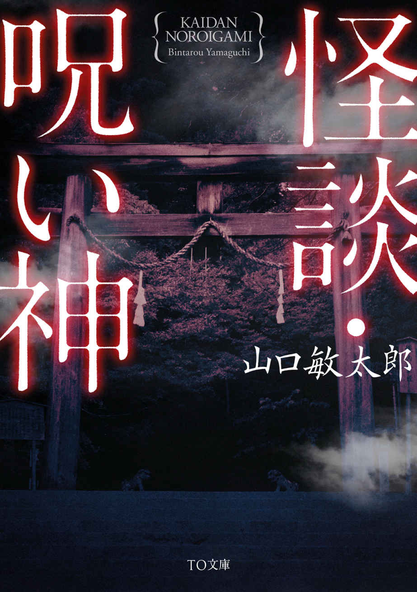
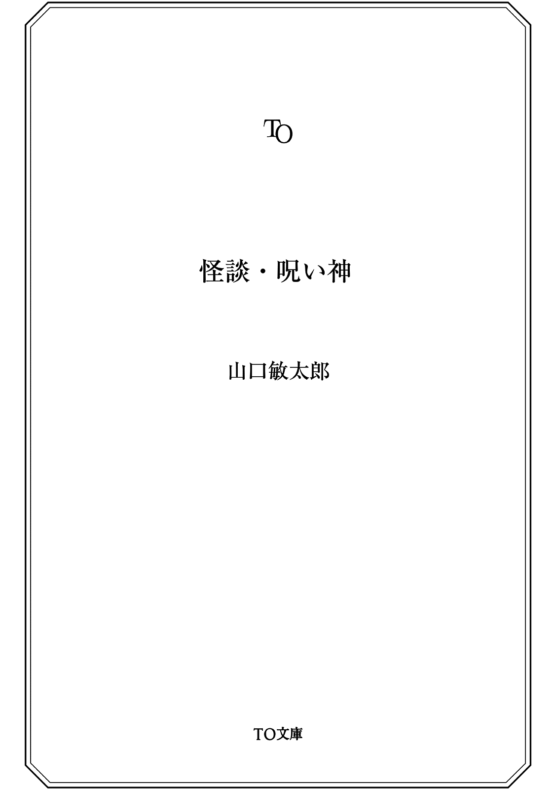
目 次
怪談・呪い神
１ あっ、この部屋は......
これは以前、筆者が徳島で開催したイベントで大変お世話になったＧさんと、その彼女のまわりで起こった話である。
今から二十数年前、まだ平成と年号が変わったばかりの頃。
徳島県在住のＧさんは、一人の女性と付き合っていた。
「なかなか可愛い子でしたよ」
Ｇさんは懐かしそうに目を細めた。
その彼女が広島県で就職が決まった。
「お母さん、一緒に住む物件を探してくれへんの」
「しょうがない子やね。ええよ。広島市内で探そうか」
彼女は母親と一緒に広島市の物件をあたり、Ａ地区の某物件に決定した。
「ここなら、ええ感じやわ」
このマンションは一階にコンビニがあり、南向きで日当たりもよいにもかかわらず、もの凄く安い家賃であったという。
親子二人でそそくさと引っ越しを済ませ、母親は徳島に帰っていった。
（今夜、お風呂に入らないとあかんから、ガスをひかんと）
そう思った彼女はガス屋さんを呼んだ。
すると、ガスの元栓を開きながら、作業員の女性がふとこんな言葉を漏らした。
「あっ、この部屋は......」
「......えっ」
一瞬、妙な空気が流れ、彼女はなんとも言えない気持ちになった。
声を震わせながら彼女は確認した。
「この部屋、なんか......あったんですか」
するとガスの作業員は作り笑顔を浮かべながら
「いや、すいません。なんでもないんです」
「言ってください。ほんまのことを」
「いや、ごめんなさい。ごめんなさい。なんでもないんです」
逃げるように帰っていく作業員。
「いや、あの態度、絶対なんかあったはずやな」
遠ざかる作業員の背中を見ながら、彼女はすぐさま母親に電話した。
「お母さん、ガス屋さんが、ガス屋さんが......」
その言葉を聞いた母親は、引っ越し中に見たある人物を思い出していた。
──長いざんばら髪で
──微動だにしない女
引っ越しの途中、母親はそんな女の姿を確かに見ていたのだ。
（あの女、やっぱりヤバい霊だったんだ）
彼女は母親に対し、責めるような口調でまくし立てた。
「やっぱ、霊感の強いお母さんには見えてたんやな。なんで言わんかったん」
すると母親はきっぱりした口調でこう答えた。
「いや、ただの気狂い女や、思たんよ」
２ 女が来る
翌日、娘の危機に対し、母親はすぐさま広島県に向かった。
「はよう、変わろ、こんなとこにおったら、あかんよ」
「怖い、怖い」
怯える娘をせかすように、母親はすぐさまその部屋から荷物を運び出し、違う物件に移動した。
「とりあえず、これで安心やな」
「ありがとう。お母さん」
安堵する娘を残し、母親はその日に使う日用品の買い出しに出かけた。
この時、母親はあの女の霊がついてきたことを自覚した。
（あっ、あの女や。来たな）
娘の自転車で近所の店に向かったが、
──もの凄くペダルが重い
まるで鉛を載せて走っているかのように、重い。
（はぁ、後ろに乗ってきたな）
母親は自転車の後部座席に女が乗ってきたことを察知した。
（このままではいけない。娘にこの女がつきまとってしまう）
母親は決心すると、後部座席に向かって一喝した。
「降りなさい！！！」
「............」
だが、一向に軽くなる様子はない。
（あかん、全然言うこときかんわ）
その時、神社の前に自転車がさしかかった。すると、今まで重かった自転車が（ふっ）と軽くなった。
「......んっ!? 」
（この霊、この神社の神さんが苦手なんやな）
そう直感した母親は、自転車を乗り捨てると、猛スピードで神社の境内に駆け込んだ。
脱兎のごとく走り抜ける母親。
（やっぱり、ここには入ってこれないな）
走りながら後方を振り返ると、さっきまで自分がこいでいた自転車が
──少しだけ宙に浮き上がっていた。
「......ひぃ」
なんという怨念だろうか。声にならない悲鳴を上げて母親は神社に駆け込み、必死にお参りした後、一枚のお札を購入した。
「これで、あの霊は封印できるやろ」
そう言いながら、娘の新しい部屋にお札を貼った。
このお札のご利益であろうか、しばらくは何も起きなかった。
──あくまでしばらくは。
３ 続・女が来る
一ヵ月後、Ｇさんは広島県の彼女の部屋に遊びに行った。
「なかなか、ええ部屋やな」
「うん、そうやろ」
久々の二人の再会は大いに盛り上がり、外に遊びに行こうということになった。
そして、二人が立ち上がり、ドアに向かって歩いて行く時、異変が起きた。
お札の前を通りかかった時、お札が剥がれたのだ。
（ふぅぅううう）
お札が音もなく、剥がれ落ちた。
「なんでやろ」
「うわっ、怖い」
落ちたお札を震える手で拾い上げる彼女。
「お母さんが見た女の霊かな」
なんとも言えない表情を浮かべ、怯える彼女だったが、Ｇさんは平静を装った。
「大丈夫やって、こんなん」
と言いながらも、一抹の不安が脳裏をよぎる。
（でっ、でもええか、俺は徳島に帰ったら関係ないし......）
「もう一回貼ればええよ」
そう言って、お札を貼りなおすと、Ｇさんは彼女と外に出た。
だが、女の霊の追撃はこれで終わりではなかった。
翌日、徳島に帰ったＧさんが自室で寝ていると、天井のあたりに火花が散った。
（あれっ、電気でもショートしたんかいな）
幻覚ではない。確かに見上げた天井の左から右に電気のようなものが走ったのだ。
今時、電気がショートするなどありうるのか。そう思った瞬間、全身が金縛りになった。
（あかん、動かん）
体がまったく動かない。まるで凍りついたようだ。
（やばい、やばい。今、霊に襲われたらアウトや）
必死にもがくＧさん。するとどうにか首だけが動いた。数ミリずつだが、どうにか動かせた。
「うっっっ、うううう」
必死にもがいて左側に首を向けると......。
──そこに女がいた。
──全裸の女が四つんばいになっている。
スレンダーな女が裸で横にいるのだ。頭が混乱した。
（なんで、裸の女がここに）
小ぶりな乳房に目が釘付けになる。
それにしても、あまりにも突飛な状況に脳内が整理できない。
（なんやろ、これは夢かな）
そう心に言い聞かせるＧさん。
すると、今度は左手が動いた。こんな状況に置かれた男がすることはひとつである。
（よし、霊かなんかわからんけど、触ってやる）
ゆっくりと左手を動かし、四つんばいになっている女の乳房に手を当ててみた。
──あっ、夢じゃない。
この時、手のひらに確かに感触を感じた。小ぶりだが、本物の乳房であった。
「あんっ」
触った瞬間、女は小さくうめいた。
──感じているのだ。
そう思うと逆に怖くなってきた。
（夢じゃない、現実にこの女はここにいるんだ）
この女の顔を見てやると、首を少しずつ動かし、視線を上に向けた。
（みっ、見えない）
必死に目をこらすが、女の顔は陰になって見えない。
スレンダーな裸体は、月明かりに照らされているのに......。
（この女には......顔が、顔がない）
逆光になった被写体のように、黒い頭部があるのみであった。
もうこれ以上は怖くて耐え切れなかった。心の中でお経や呪文など、ありとあらゆる限りのまじないを繰り返し唱えた。
いつしか気が遠くなり、気がつくと朝であった。
翌朝、実家の商売を手伝っていると、ふと自分の顔に貼りついた髪の毛に気がついた。
「あっ、この髪の毛......」
明らかに自分の髪の毛ではなかった。五〇センチ近くある女の髪の毛であった。
「あの女の髪の毛やな」
この後、自室ではラップ音が一週間ぐらい続いた。
彼女の話によると、女の霊は母親のもとにも姿を現したという。
そして、日中でさえもＧさんは女の気配を常に感じ続け、背中を誰かに押される感覚を何度も味わった。
（あの女、絶対俺に憑りついている）
その後、霊感の強い叔母の薦めもあり、写経を行い、一枚を枕の下に敷き、一枚を肌身離さず持ち歩くようにした。
こうして女の霊の干渉を防ぎ続けた結果、一ヶ月ほどで奇妙な現象は起きなくなった。
無論、広島の彼女とは別れてしまった。
４ 読経と脳内ラジオ
筆者の友人でＵＦＯ研究の同志である竹本良氏は、ＵＦＯや宇宙人を熱心にレポートしている。
だが、一度だけ奇妙な体験をしたことがある。
昭和の終わる頃、竹本氏はまだ二〇代で、とある雑誌の編集者をしていた。
当時、千歳船橋のマンションの四階に居住していたのだが、日々の激務で家に帰るとそのまま熟睡していた。
その夜もぐったりと疲れてベッドに倒れ込んだ竹本氏は、泥のように眠った。
「んっ、なんだ」
朝の五時ぐらいであろうか。季節は春だったから外はだいぶ明るくなっている。それがまぶた越しにも伝わってくる。
──確かに聞こえる。
──お経が聞こえるのだ。
ベッドで寝ている自分の頭の上から、お経が聞こえるのだ。
その読経は力強く、長年の修行が感じられる心地よい響きであった。
（はて、このまま目を開けても良いものだろうか）
竹本氏は迷った。このまま目を開けると、読経の主と顔を合わせてしまうのではないか。
別にやましいことはないが、なんだかバツが悪い。
（そうだ。起きているというアピールをしよう）
竹本氏はまぶたを閉じたまま体を揺さぶって、遠回しに〝私は起きてますよ〟とアピールする作戦に出た。
すると奇妙なことが起こった。
「あぁー、あぁー、あぁー」
さっきまで声高らかにお経を読んでいた男が、妙な声を上げて遠くに行く感じが伝わってきた。
（行ったかな）
この時点で竹本氏は、ゆっくりとまぶたを開けた。
──何もいなかった。
竹本良氏の不思議体験は、この一回きりであった。
しかし、竹本氏はあれは〝脳内ラジオ〟のようなものだと思っているという。
「山口さん、心霊談とかじゃないですよ。あれはね。たまたま脳内の波長が合わさって、どこかで修行している僧侶の読経が聴こえたんですよ」
そう言って竹本良氏は、にやりと笑った。
５ 沖縄の神隠し
Ｋさんはゲームを作ったり、ライターをやったりと、様々な仕事を行う女性だ。
彼女は沖縄出身であり、自分自身には霊感がないものの、身内は数々の霊体験を積んでいるそうだ。
「山口さん、沖縄にも神隠しがあるんですよ」
彼女の発言に筆者は衝撃を受けた。修験道や天狗と関連深い神隠しが沖縄にあるとは、思いもよらなかったからだ。
「神隠しって沖縄でもあるの？ 神仏に隠されるの？」
「神仏ではなく、魔物に隠されるんですよ」
「魔物......？」
戦争が終わってすぐの頃というから、昭和二〇年代の頃、沖縄のとある集落で事件が起きた。
彼女の祖父にあたる人物が〝神隠し〟に遭ったのだ。
その日の夕方、祖母が風呂焚き用に竹を切ってくるように祖父に依頼した。
「竹を切ってきてくださいな」
「あぁいいよ」
祖父は近所にあった竹やぶに向かった。その竹やぶのあった土地は所有者がおらず、一本ぐらい切っても構わないと思ったのである。
「おおっ、良い竹があった」
そう言って祖父が竹を一本切った途端、その姿が消えてしまった。
これには、集落中が騒動になった。
「神隠しだ」
「姿が消えてしまった」
集落の人々が大勢で祖父の捜索に繰り出した。当時、既に六〇代に達していた祖父である。側溝や何かの隙間に落下している可能性もあった。
「おーい、おーい」
捜索の途中で奇妙なことが起こった。
祖父の姿が時々見えるのだ。
「おかしいね。あそこにいたと思ったら、もういない」
「今、一瞬だけ見えたと思ったら、姿が消えてしまったよ」
どういうわけだが、祖父の姿が一瞬一瞬は確認できるのだが、すぐさま再び消えてしまうのだ。
捜索する人々の中に物知りの人がいて、こんなことを言った。
「一瞬だけ姿が見えたら、お尻を思い切り蹴ればよいよ。そうすれば、ぽっと出てくるからね」
どうやら、魔物に隠された人は一瞬だけ見えた瞬間にお尻を蹴れば、現世に戻ってこられる仕組みであるようだ。
その後、しばし姿を現した祖父は、無事お尻を蹴り出され、この世に戻ってくることができた。
ユタの見立てによると、祖父を隠したのは竹やぶの所有者の霊であった。強欲な所有者は死んだ後も自分の財産に固執し、その土地に生えた竹を無断で切った祖父を隠してしまったのだという。
一方、隠された祖父の話によると、
「竹を切った瞬間、周囲に霞がかかり、まったく見えなくなったんだよ」
ということであった。
「はて、これは困ったぞ」
と集落を歩き回っている最中に尻を蹴られ、この世に帰ってこられたのだ。
沖縄の魔物を怒らすと、神隠しに遭わされてしまうようだ。
要注意である。
６ イチジャ
Ｋさんの母親も時々、本来見えないはずのモノを見てしまうようだ。
中でも、本土で言うところの生霊＝イチジャが一番ヤバいらしい。
「山口さん、うちの母がイチジャに苦しめられたことがあるんです」
「生霊、それはまずいね」
ある日のこと、母親の知り合いのユタと話をしていた。
そのユタは不満でもたまっていたのだろうか。自分の身内のことを悪しざまに言っていた。
「まぁまぁ、身内のことだから、そんなに悪く言わないで」
母親はそのユタを言葉優しくなだめた。
だが、その発言がユタの気に障ったのであろうか。
それ以降、母親は体調がすぐれなくなった。
「おかしいわね。なんだか体の具合が悪いの」
それから数日後、母親はＫさんと同じ部屋で寝ていた。
すると、母親は奇妙な夢を見てしまった。
小柄な赤い鬼が家の周りを
（ぐるぐる、ぐるぐる）
と廻っているのだ。
まるで、室内に入るすきを窺っているかのようであった。
あまりにも、不気味な夢を見たためであろうか。夜中に目が覚めた。
（あれは、ユタのイチジャに違いない）
そう思ってＫさんが寝ているベッドの足元を見ると、赤い鬼の姿が見えた。
（あっ、イチジャが来ている）
軽い恐怖を感じたが、娘を守らねばならない。母親は刃物を振りかざし、思いつく限りの汚い言葉をイチジャに投げかけた。
（もう、これで大丈夫だね）
母親はそう思うと、娘をたたき起こし、今までの一部始終を聞かせた。これがＫさん一家のイチジャ事件である。
最後にＫさんは筆者に向かってこう言った。
「イチジャは、ツバと刃物と汚い言葉で撃退できるんです」
「汚い言葉って？」
「バカとかアホとか」
「............」
７ 生死不明のおじさん
Ｋさんの母方には、生死不明のおじさんがいる。
Ｋさんのお母さんの一番上の兄であり、沖縄戦で行方不明になったとされていた。
最後に会った人の話によると、軍の補給部隊に属していたおじさんは、本隊を追う途中で別れて、そのまま行方がわからなくなったそうだ。
「危ないなら、一緒に逃げよう」
と誘ってくれた地元の人に対し
「自分は軍人だし、本隊に食料を届けないといけないから」
と言い残し、戦場に向かって行ったらしい。
そのまま行方がわからなくなったので、おじさんの遺骨も遺髪も残されていない。
戦争が終わった後も、祖父母は長男の死を認めなかった。
「あの子が死んだとは思えないよ」
そう言いながら、祖父母は仏壇にも名前を入れなかった。
名前を入れることで、長男の死を受け入れたくはなかったのだ。
戦後、Ｋさんの従姉妹にあたる人に突如、行方不明になったおじさんの霊が降りた。
「早く、おじいさん、おばあさんのところに連れて行こう」
その従姉妹は祖父母の前に連れて行かれ、親戚たちが続々と集まってきた。
その従姉妹は、銃を構えた姿勢をとり、その後、左胸に敵軍の銃弾を受けて死んだ様子を再現した。
従姉妹に憑依したおじさんの霊は、自分の最期を身内に知らせたかったのだ。
「あの子はそうやって死んだのかね」
祖父母は涙を流しながら、その死を受け入れた。
おじさんの霊は従姉妹の体を借りて両親に別れを告げ、兄弟一人一人に言葉をかけ、最後にまだ幼かったＫさんのお母さんの頭をなでて、あの世に帰って行った。
その後、祖父母は仏壇におじさんの名前を加えた。
祖父母の中で、ようやく沖縄戦が終わったのだ。
８ ひだる神
月香さんはヒプノセラピストであり、お香や修験道にも詳しい女性である。
彼女は不思議な体験を多数している。
「この事務所に来る前に、市川市で古木にとまる天狗を見ました」
「市川市と言えば、うちの隣町だね。天狗は何をしてたのかな」
「環状線。新しい道路を見てたんでしょうね。天狗はつながる道とか見るのが好きですから」
そんな彼女が青森で体験した奇妙な話がある。
小学生の頃、彼女は青森に住んでおり、学校の山スキークラブに入っていた。
子供の山スキーといえども、本場青森の山スキーは厳しい。
全長十数キロの行程を廻って小学校に帰ってくる練習を、日々行っていた。
ある日のこと、山道を廻り田んぼのある山の麓まで来た時、不気味なものを目にした。
「あれは、なんだろう」
田んぼの脇にある〝百万遍〟と刻まれた石碑の脇に何かがいる。
一面雪にうずもれた中で、ひとつだけ顔を出す石碑の横に、半透明のぶよぶよしたモノが見えた。
「えっ、何？」
手足も何もないのだが、何故か子供のような気がした。
そう思った瞬間──。
（あれっ）
月香さんは、そのまま後方に倒れてしまった。
特に何かにつまずいたわけではない。まるで何かを食らったかのように倒れてしまったのだ。
「大丈夫？」
「気分が悪いの？」
友人たちが次々と駆け寄ってくる。何故か全身に力が入らない。
どうして体に力が入らないのか、どうして自分が倒れたのかもわからない。
（ああっ、こんなにも景色が綺麗だなんて）
騒ぐ友人たちを尻目に、そんなふうに思っていた。そして、自分に憑いたのはあの半透明のぶよぶよした子供だと確信していた。
（人間って、死ぬ時、こんな感じなんだ）
そう思いながら、彼女はぼんやりしていた。
結局、友人たちに担がれて、自宅に帰りついた。
しばらく休んだ後、ご飯を食べてテレビで『あなたの知らない世界』を見ていたら、何故か回復してしまった。
「あの体験は、餓死した子供の臨終シーンを追体験させられたのかもしれませんね」
月香さんはそんな話をした。
９ 自衛隊の娯楽室
ＳさんはＩＴや観光関連の仕事を一緒に行っている、徳島の友人の一人である。
ある日、彼がふとこんなことを漏らした。
「僕は子供の頃、やたらに霊感が強かったんですよ」
「マジですか。なんでそれを早く言わないんですか」
この会話をきっかけに、彼の心霊体験を聞かせてもらうことになった。
多感な子供時代を過ごしたＳさんは、自衛隊に入隊した。そのキャリアは呉から始まり、岩国、徳島、厚木と続いた。
今ではすっかりベンチャー企業の社長のイメージが強い彼も、元々はバリバリの自衛官であった。
「自衛官はよく不思議な体験をするんです」
「やはり、旧日本軍の関連でしょうか」
「そうですね。やはり旧軍の施設を使ってますからね」
不思議な体験をする自衛官は多く、中には人格が変わったり退職したり、自殺してしまう者もいるぐらいであったという。
「幾つか不思議な体験をしてるんですが、中でも徳島の基地での体験は印象深いですね」
そう言って、生まれ故郷である徳島の基地に勤務していた時の体験を語ってくれた。
その夜、Ｓさんは同僚６人と飲食をして、すっかり気分がよくなっていた。
「娯楽室に行きましょう」
誰からということもなく、同僚たちと自衛隊の基地にある娯楽室に行くことになった。
このような娯楽室は自衛隊の基地に大概設置されており、徳島の某施設の場合、とあるビルの３階が娯楽室として設定されていた。
千鳥足でよたよたと階段を上がり娯楽室に入ったＳさんは、なんとなく違和感を覚えた。
「この電灯、切れかかっている」
娯楽室の電灯が何度となく点滅し、チカチカと小刻みに部屋を照らしている。
「自分が新しい電灯と交換しますよ」
そう言って同僚が点滅する電灯をはずし、新しい電灯と交換した。
Ｓさんの話によると、自衛隊というのはあらゆるところに電灯などの備品のストックがあり、切れた場合はすぐ交換できる体制になっているそうだ。
「あれ、おかしいなぁ」
「まだ直らないぞ」
同僚たちは口々に不満を述べた。
新品の備品と交換したはずなのに、電灯の点滅は止まらなかった。この時、Ｓさんと同僚たちは若干の違和感を抱いていたのだが、とりあえず朝まで娯楽室で仮眠をとることにした。
その仮眠室には、ソファーのような長椅子がたくさんあり、一人一人がひとつの椅子を独占し、ベッドのようにして横になった。
だが、ここで再び不思議な現象が起きてしまう。
「プチン」
誰も触れていないのに、娯楽室の隅に置かれていたコンポの電源が入った。
「ハロー、ハロー、ハロー、ハロー」
コンポの前側にある液晶に、何度も何度も〝ハロー〟という文字が表示された。普通、起動した直後に一回しか表示されないはずである。
（なんで、何度も表示されるんだ。そもそも、誰もスイッチ入れてないのに、何故コンポが立ち上がったんだ）
横になっていたＳさんは、言い知れぬ不安を感じた。
（これはまずいぞ）
彼の不安は的中する。
「カッカッカッカッ」
もの凄い勢いで一階から階段を駆け上がってくる音が聞こえた。
（革靴だ。誰かが階段を登ってくる）
その足音は猛スピードで上がってくる。
「カッカッカッカッ」
ひょっとすると、この音は自分にしか聞こえないんじゃないだろうか。
そんな気持ちになりかけた時、同僚の一人がつぶやいた。
「おい、なんだ。あの足音は......」
幻聴ではなかった。確かにこの足音は皆にも聞こえているのだ。
同僚全員にかすかな緊張感が走った。
「カッカッカッカッ」
足音は一直線に向かってくる。
（間違いない。この娯楽室のある三階に向かっている）
そう思うと、背筋を冷たい汗が流れた。
「カッカッカッカッ、カツン、カツン」
三階に到達すると、足音はゆっくりした足取りになった。何かを確認するかのように近づいてくる。
「......」
同僚全員が無言になり、神経のすべてが五感に集中した。
「カツン、カツン、カツン」
その足音はゆっくりと娯楽室に近づくと、突如
「バタン！！！」
もの凄い音でドアが開いた。
（ヤバい!! ）
全身が総毛立ったが、その音の主は娯楽室に入ってくるわけでもなく、廊下を歩き始めた。
「カツン、カツン、カツン」
その足音は夜が明けるまで続いた。
結局、音の正体がなんだったのか、今もわからないという。
だが、付け加えるようにＳさんはこんなことを言った。
「でもね。自衛隊の基地に出る幽霊って、決して自衛官には危害を加えないんですよ。僕らが後輩だってわかってるからじゃないですか」
10 上官
筆者の友人のＳさんがまだ自衛官だった頃の話である。
各地の基地を転々としたが、必ずどの基地にも不気味な怪談話が先輩から後輩に語り継がれていた。
ある基地では、絶対開けてはいけないマンホールがある。無論、開けると不吉なことが起こるから開けてはいけないのである。
「馬鹿馬鹿しい、そんなことはないだろう」
必ずそう言って開けてしまうお調子者はどこにでもいるものだが、Ｓさんの同僚もこのマンホールを開けてしまった。
すると、その同僚は原因不明の高熱にうなされる結果とあいなった。
「たぶん、旧日本軍時代に人が亡くなったとか、何か事件があったんでしょうね」
Ｓさんがある基地で体験した出来事は、今でも忘れられないという。
「あれはいったいなんだったんでしょうか」
彼は遠い目をしながら語ってくれた。
その基地では、独身の者が週二、三回、夜間に巡回するのが決まりであった。
同僚と二人一組で手分けをして見回るのだが、深夜の基地はやはり不気味だ。
「あそこはあまり行きたくないな」
Ｓさんが特に嫌がっていたのは、基地の中にある資料館であった。
この資料館には、特攻隊の血判状や人間魚雷回天に関する資料など、一般に公開されていない貴重な物品が展示されていた。
人の生死に関する展示物ばかりである。やはり、夜に巡回するのは気分がよくない。
「早くすませてしまおう」
そう心に決めたＳさんは、資料館の中に懐中電灯を持って入った。
「あれっ」
思わず声が出てしまった。
──館内に灯りがついているのだ。
（おかしいなぁ、外から見ると灯りは消えていたはずなのに......）
なんとも言えない不安な気持ちになって館内を巡っていると、上官らしき人物が資料館の展示品に見入っていた。
制服から判断すると、明らかに自分より上位の人物であることがわかった。
（あっ、上官だ）
思わずＳさんは、元気よく挨拶をした。
「お疲れ様です」
「......」
上官にはその声が聞こえなかったのだろうか。何事もなかったかのように、館内を見回っている。
（こんな時間になんだろう。何か資料でも確認しているのだろうか）
そう思いながらも、上官を一階に残し二階に登った。
（この二階をチェックしたら、完了だな）
そう思いながら、二階の部屋を巡回し始めた途端、思わず息を飲んでしまった。
──一階にいたはずの上官が二階にもいるのだ。
（なんだ、さっきと同じ人物か、いやそんなはずはない）
戸惑いながらもＳさんは、その上官の様子を観察した。
やはり、展示物を丁寧に見て回っている。
（どういうことだ。おかしいぞ）
その上官らしき人物が横を向いた瞬間、Ｓさんは恐怖のあまり全身が硬直してしまった。
──制服が旧日本軍のものであった。
（あぁぁ、この人はこの世の人ではない）
そう理解した途端、恐怖のあまり気が遠くなりかかった。
「プツン」
次の瞬間、資料館のすべての灯りが消えた。
「わぁぁぁぁぁぁ」
恐怖に耐え切れなくなったＳさんは、二階の資料室から逃げ出し、階段に飛び出た。
「わぁわわわぁ」
しかし、あまりにも怖かったためだろうか、腰が抜けてしまってその場にしゃがみ込んでしまった。
「はぁはぁはぁ」
その階段にて、Ｓさんはそのまま気を失ってしまった。
彼にとっては数時間にも感じられたのだが、実際には数十分後のこと。
一緒に組んで巡回をしていた同僚が、あまりに彼の帰りが遅いので様子を見に来てくれて無事助け出されたという。
その基地では、資料館でこの上官の霊と遭遇する者が多く、中には精神を病んでしまったり、別人格になってしまう者もいるそうだ。
「いや、あんな体験はもうごめんこうむりたいですよ」
Ｓさんは懐かしそうな表情でそう締めくくった。
11 鬼の住処
先日、弊社のシンガー、水木ノアさんが故郷福島で開催した「宇宙人コンテスト」に参加した。
このイベントは、参加者がおのおの工夫を凝らし宇宙人コスプレを行い、ウィットに富んだスピーチを展開し、順位を競うものである。
単なるコスプレイベントと違うのは、どんなスピーチを行うのか、どんな設定をしてくるのかがみそである。
「私がマスクをしているのは、大気汚染された星から来た環境破壊星人だからです」
「私は水の惑星から来た、水質保全星人です。地球の水は綺麗ですか？」
といったように、社会風刺が利いていないと評価されないところである。
超満員の会場は終始笑いが絶えず、名誉顧問の矢追純一さんと共に楽しく審査させて頂いた。
このイベントは二〇一五年の秋で二回目だったが、今後も福島の人々の心を和ますために継続していきたい。
さて、このイベントに参加するために前日に福島入りしたのだが、時間があったので取材をすることにした。
「鬼婆に会いに行くかな」
筆者は、福島からほど近い二本松にある観世寺を訪ねた。
この寺には鬼婆伝説が残っており、巨大な岩の遺跡が鬼婆の住処として境内に残されている。
──みちのくの安達が原の黒塚に鬼こもれりと聞くはまことか
読者の皆さんも、有名なこの歌を一度は聞いたことがあるだろう。
二十数年前に訪問して以来の取材であり、筆者は心がはずむような気持ちであった。
「やっぱり、ここまで来たら鬼婆さんに挨拶しないとね」
そう言いながら、ＪＲとタクシーを乗り継いで寺の門をくぐったところ、住職に声をかけられた。
「山口さん、ですよね」
「はい、そうですが、よくおわかりになりましたね」
なんと住職は筆者が出ているテレビ番組をよく見ていて、顔を覚えてくださっていたのだ。
二十数年ぶりに見る鬼婆の住処は、明らかに古代の巨石文化の名残であった。
ちょうど二〇一五年の夏に岐阜県金山の巨石遺跡を見た後だったので、石の配置が意図的に削られた跡が大変興味深かった。
「たぶん、春分や秋分の日の出、日の入りの位置をこの巨石を使って観測してたんじゃないでしょうか」
筆者がそう指摘すると、住職は興味深い話をしてくれた。
「そう言えば、秋分の頃、日の入りが胎内くぐりの入り口にあたって、日の出が胎内くぐりの出口にあたりますよ」
これは大変興味深い発見であった。鬼と称された古代の人々が、天然の石を使って天文観測をしていたというのだ。
やはり、妖怪とは大和朝廷に逆らった石の民や鉄の民がモデルになっているのだろう。
そんな話をしながら、取材を終えて帰ろうとしたところ、住職がこんな不思議な話をしてくれた。
「一度だけ、不思議な体験がありました」
「何があったんですか」
「実は......」
住職の話によると、ある年の夜八時頃、寺の門も閉め、両親とくつろいでいると、
「こんばんは」
という声が聞こえた。
声からして檀家のＸさんだとわかったのだが、どうも釈然としない。
──おかしい。門を閉めたから入れるはずはないのに
そう思い、本堂や境内を廻ったが誰もいない。
（おかしい、自分の錯覚だったのかな）
そう不審に思いながら居間に戻ったのだが、両親も不思議そうな顔でこう言った。
「確かに聞こえたよね」
あれは錯覚ではなかったのだ。確かに壇家のＸさんの声だったのだ。
それから数時間後、Ｘさんの息子さんから電話があった。
「先ほど、父が亡くなりました」
やはり、Ｘさんは寺に来ていたのだ。住職は確信した。
「Ｘさんは、お寺の役員もしてくださったので、最期に挨拶に来られたんでしょうね」
住職はやさしい表情を浮かべこう言った。
翌日のイベントも終わり、千葉の事務所に帰ってきた時にこの話を水木ノアさんに伝えた。
すると、こんな話を彼女はしたのだ。
「あのお寺に行って住職に会ったんですか。それは奇遇です。住職のお父さんの招きで数年前、お寺のイベントで歌ったことがあるんですよ」
いやはや、縁とは不思議なものである。
12 通るもの
筆者が徳島に行った時、宿泊する定宿がある。Ｎという町にある某ビジネスホテルである。
何故この旅館が好きなのかと言うと、とにかく平衡感覚が崩れるのだ。
「なんだか、この町内、歩いているとふわふわしますね」
ある講演会の関係者は、僕を迎えに来た時にそう言った。
確かに、町全体がゆらゆらと揺れていて不可解であり、通りを歩いていると平衡感覚がおかしくなる。筆者はこう答えた。
「ひょっとしたら、町に時空の歪みがあるのではないでしょうかね」
普通なら怖がって泊まらないところだが、筆者の場合は逆であり、こんな宿ほど気に入ってしまうのだ。
ある日、友人との飲み会で遅くなり、深夜二時くらいに宿の前を歩いた時は、
──ゆらーり、ゆらーり、ぼんやりした黒い影が横切った。
（やはり、霊道ではないだろうか）
そんな話を自衛隊員であったＳさんにしたところ、Ｓさんは声をひそめてこう言った。
「僕ね、あの町の生まれなんですが、あの通りって夜行っちゃいけないって言われたんですよ」
「ええ、どういうことですか？」
「いやね、あの通りで子供の頃、妙なモノを何度も見てるんです」
Ｓさんの話によると。最初にその通りで妙なモノを見たのは小学生の頃であった。
夜の二一時から二二時くらいの時間、Ｓさんは自転車でこの通りを走行していた。
すると、すーっと何かが横切った。
（今のはなんだろう）
大きさにして四、五メートルはあったかもしれない。付近にあるビルの二階ぐらいの身長があった。
また、風もなくすーっと横切ったそいつは、
──巨大なビニール袋のような姿をしていた。
その後、このような物体を二度三度と目撃したが、一番印象に残った物体は、
──上半身だけの肉の塊であった。
腕だけがついた上半身の肉の塊が、この通りをすーっと通り抜けていったのだ。
この通りの近くに住む友人に
「ねえ、あの通りって変なモンが通り抜けるよね」
と聞いたところ
「あぁ、夜なんかよく火の玉が通り抜けるよ」
と、あっさり認められたこともあった。
しかも、この通りを通り抜けるモノは、人間の身体をすり抜けるという。
「なんか、異次元の生物かもしれませんね」
Ｓさんはそう言った。
筆者の頭には、徳島の伝統的な妖怪の名前が浮かんでいた。
「Ｓさん、それって高坊主かもしれませんよ」
「高坊主ですか？」
「そうです。徳島に昔から出る妖怪で、巨大な身体で往来に立ち、人々を脅かすのだそうだ」
──妖怪高坊主は今も徳島の通りを（すーっ）と通り抜けているのだろうか。
13 密教というシステム
密教とは目に見えない世界と交渉し、その仕組みを変えるプログラムなのかもしれない。
筆者は最近そう思っている。これはそんな話だ。
埼玉県に住むＳさんはある寺の住職をしている。密教の修行を積んでいるだけあって、その法力には定評があり日本中から祈祷の依頼が集まってくる。
「僕は霊というものをそこまで確信しているわけじゃないんです」
そう言ってはにかむＳさんだが、筆者も以前お世話になったことがある。
ある日のこと、筆者の事務所の電話が鳴り、社員が対応した。
「先生、東京スポーツさんがお願いがあるとのことです」
「んっ？ 東スポ？ ＵＦＯか何かが撮影されたのかな？」
そう言いながら電話に出ると、いつものオカルト担当Ｍデスクではなく、プロレス担当のＡ記者であった。
「山口さん、実はね、プロレスラーの大和ヒロシ選手の写真に妙なものが写り込んだんです」
「妙なものって？」
Ａ記者は若干口ごもりながら、こう言った。
「大和選手の背後に、誰もいなかったはずなのに、女が、女がいるんですよ」
「女？ ですか。一応写真をメール添付で送ってもらえませんか？」
すると、一時間もしないうちに不気味な写真が送られてきた。
ポーズを決める大和選手の背後に、女のような姿が確かに確認できる。
「なんだ。これは」
何百枚も心霊写真を見てきた筆者でさえも驚くような一枚であった。
「まずは、この写真に写り込んだ物体が何か調べないといけない」
「山口さんのお力でぜひよろしくお願いします」
東スポ側も困惑している様子であった。
早速、弊社の霊感風水師あーりんにメールを転送して見せたところ、こんな意見がもらえた。
「山口さん、これはあれやな、狐と思う。女の形をした狐やな」
「狐、狐という見立てですか、うーむ」
あーりんさんの話によると、あまり害はないとのことであった。
（でも、このままというわけにもいかないし......）
どちらにしろ、あまり狐の霊を連れ歩くのも変な話である。
数日後、東京スポーツのＡ記者と話し合い、とりあえず憑き物落としをやることになった。
「どこか関東周辺で、よい憑き物落としの寺はないですかね？」
「そうですね Ｓさんというお坊さんのところはどうでしょうか？」
筆者の提案にＡ記者は声をはずませた。
「山口さん、その様子も東京スポーツに掲載したいので、取材も兼ねてご同行願えますか？」
（やはり、記事にするのか）
と筆者は思ったものの、そういう流れになるのは想定済みであり根回しは既にＳ住職には行っていた。
「いいですよ。そのかわり住職の名前とお寺の名前は出さないということでお願いします」
そして、憑き物落とし当日、筆者と妻、Ａ記者、大和ヒロシ選手がそれぞれ車に乗り込み、埼玉のＳ住職のもとに向かった。
Ｓ住職はひと通り祈祷を終え、無事にすべてが完了した。
一同で御礼を申し上げ、Ａ記者と大和ヒロシ選手の乗る車を送り出した後、筆者は住職と話をした。
「お見事でした」
苦笑いしながらＳさんは答えた。
「いやいや、これが僕の仕事ですから」
「このような有名人が祈祷に来ることはあるんですか？」
するとＳさんは遠い目をしながら、こう答えた。
「以前に、女優の○○さんに憑依したお岩の怨霊を落としたこともあるんですよ。お岩映画を撮影していたら、降りてきたお岩さんが抜けなくなってね」
さすがのＳさん。無表情でいきなり怖い話をする。
「それでどうなったんですか？」
「落としましたよ。某撮影場所でね」
「ええっ、撮影場所で......。でも、たまに落ちない場合もあるでしょう」
筆者のこの質問にも、Ｓさんは涼しい顔で答えた。
「そういう場合は、山伏の友人と一緒に挟み撃ちにします。そうすれば大概落ちますよ」
「......」
筆者が言葉を失っていると、Ｓさんはこう付け加えた。
「でも、僕は霊の存在を信じているわけじゃないんです。でも何故か祈祷の手順を踏むと、霊に憑依されたという人が正常に戻るんです」
「ほう、それは不思議ですね」
「不思議なんです」
筆者とＳ住職は顔を見合わせて、ニコリと笑った。
14 思い出とＵＦＯ
筆者は小学生の頃、徳島市にある八万小学校のグランドにおいて、三角形で上下左右にジグザグに飛ぶ奇妙な物体を目撃したことがある。
ある日のこと、休み時間の終了を告げるベルが鳴り、グラウンドに散らばっていた生徒たちが一斉に駆け出した時、筆者は上空に不思議な物体が浮遊しているのに気がついた。
「なんかいな、あれは」
三角形の小さなピラミッドのような物体が、小学校の上空をジグザグに飛んでいる。
（やっぱりおかしい、妙な物体やな）
子供心にもはっきりと認識できた。鳥でもないし、飛行機でもない。唖然として見上げる筆者の横に、隣のクラスのＴ君がいた。
「あれ、なんと思ぅ？」
Ｔくんは笑っているのか怖がっているのか、不安げな顔で筆者に声をかけてきた。筆者もなんとも言えない表情で答えた。
「わからん、矢追純一の番組で見たＵＦＯかもしれんなぁ」
「ほうか、あれがＵＦＯか」
そう言いながらぼんやりと突っ立っている二人がふと我に返ると、グラウンドには自分たちしか残っていなかった。
Ｔ君とはその後、八万中学校、城南高校と一緒に進学するのだが、今年の夏に開催された城南高校の同窓会でもこんな言葉を投げかけられた。
「あれ、なんだったんかいな」
筆者は苦笑しながらこう答えた。
「ＵＦＯかもしれんなぁ」
子供時代のＵＦＯ体験は、懐かしい昭和の原風景と共に、我々中高年の心に深く鮮やかに刻まれているのだ。
他にも徳島県におけるＵＦＯ目撃談は多い。筆者の徳島県での活動をサポートしてくれているイベンターのＯさんに先日、阿南市でのＵＦＯ体験を聞かせてもらった。
Ｏさんは阿南市で生まれ育ったのだが、父親が地元で教師をしていた関係で、子供時代には父親が指導する部活動をよく見学に行った。
「なんか、おもろいことないかな」
父親がバスケットボールの指導しているのを横目で見ながら、一人ふらりと体育館の外に出た。
「なんやろ、あの物体は？」
Ｏ少年の目に奇妙な物体が飛び込んできた。夕闇の中、まっすぐゆっくりと飛んでいる。飛行機特有の点滅するライトも装備してないうえ、ヘリコプターのような爆音も聞こえない。
ただゆっくりゆっくりと飛んでいるのだ。明らかに異様な物体であった。
「点滅してないし、飛行機とは違うな。なんやろか」
Ｏ少年が興味深く見守る中、ＵＦＯらしき物体は雲の間に消えた。
「うわぁぁぁ、あれ、ＵＦＯちゃうん」
大騒ぎで体育館の父親や生徒たちに呼びかけた。だが、幼いＯさんの言葉に上級生や父親は耳を貸そうともしない。
「それはなんかの見間違いちゃう？」
「あほなこと言うな」
まったく相手にしてくれない。再び体育館の外に飛び出したＯ少年は、衝撃の展開に肝を潰した。
一度、雲間に消えたＵＦＯが、再びＵターンして雲から出てきたのだ。
「わわわっ、また出てきた」
腰を抜かしかけたＯ少年だったが、さらに驚く事実に気がついた。Ｕターンして再び雲の中から出現したＵＦＯの大きさが、二倍近くに巨大化していたのだ。
「大きくなってる。やっぱ、ＵＦＯとちゃうの？」
Ｏ少年の大声に気がついた上級生たちも体育館の外に飛び出してきて、その物体に目を向けた。
「ほんまやな、ＵＦＯとちゃうか」
「ほんまや、初めて見た」
口々に仰天する上級生たち、子供たちの驚きぶりを尻目に、ＵＦＯはそのまま飛び去って行った。
Ｏさんは、その後高校時代にもＵＦＯを目撃している。
高校時代、付き合っていた女の子と一緒にいる時、いい雰囲気になったのだが、何故か上空が気になった。
「えええっ」
「......なんなん、あれ」
Ｏさんと彼女は思わず言葉を飲み込んだ。ラブラブムードの二人が上を見上げると、
──そこにＵＦＯがいたのだ。
ゆっくりと古い映画のコマ送りのように飛んで行くＵＦＯ。
「ＵＦＯ......かな」
「ＵＦＯ......よね」
先ほどまでの恋愛ムードはどこへやら、二人とも目を見開いて上空を見つめている。その物体はかなりの低空飛行であり、手を伸ばせば届くくらいの距離に思えた。
（数十メートルぐらいやな）
Ｏさんはその物体との距離を推測しながら、形状を観察した。まるで、ウルトラマンに出てくる科学特捜隊が乗るビートルに巨大な翼を生やしたような外観をしていた。
「なんやろか」
呆然と見つめる二人の上空をゆっくりとＵＦＯは通過していった。その後、なんともいえない微妙な空気が二人を支配したという。
ＵＦＯは一説に金属などに代表される物質ではなく、物質化したり消えたりする半物質だという。つまり、時間や空間を越えてくるＵＦＯは通常の物体ではなく、霊体やエネルギーに近いものだという解釈があるのだ。
だから、ＵＦＯは一緒にいても見える人と見えない人がおり、人間の心の中に飛来するとされている。言い換えれば、ＵＦＯは常に思い出と一緒に記憶の中に存在するのだ。
15 ピピピ
Ｔさんは子供の頃、宇宙人に拉致られる体験を夢の中でした。
夢の中でＴさんは手足を束縛されており、周囲にはグレイタイプの宇宙人が徘徊しており、意味不明の
『ピピピ、ピピピ』
という言葉を発している。
Ｔさんがいくら
『止めてくれ』
と叫んでも、言葉が通じないのか、グレイたちは気にもとめない。
最後は目が覚めたのだが、それ以来不思議なことがある。
Ｔさんの彼女の証言によると、目覚める時に
『ピピピ』
とか不思議な言葉をしゃべるらしい。しかも、しばらくその謎の言葉をしゃべることがあるという。
ある時などは、睡眠中にもかかわらず、ロボットのような声でこんなことを言った。
『ピピピ、リ・ョ・ウ・カ・イ』
16 光あれ
Ｎさんは大阪府でタクシー運転手をしている初老の方である。彼は若い頃、なんとも言えない不思議な体験をしている。
昭和五〇年代か、六〇年代のある日、Ｎさんは父親とその仲間を山に車で送って行った。父親と友人たちは山で山菜を採るという。
「山菜が楽しみや」
「おおっ、楽しみにしてろ」
父親と友人たちは、張り切って山に向かった。
「おう、そうだ。この時間に迎えに来てくれないか」
車の方に振り返った父親は夕方の時間を指し示した。
「わかったよ。山菜採り頑張ってや」
そう言ってＮさんは父親たちと別れ、自宅に帰った。
数時間後、約束の時間にＮさんは車で父親たちを降ろした場所に行った。
──だが、誰もいない。
しばらく待ったが降りてくる気配はない。
（やばいなぁ、道に迷ったのかな）
そう思い、待ち合わせの場所から更に山奥に向かって入って行った。
（おいおい、大丈夫か、この道）
道がどんどん細くなる。車が通るのも厳しくなった時、ぬかるんだ場所でタイヤをとられ、進退が行き詰まった。
「やってもうた」
一瞬、固まるＮさん。
（あかん、このままでは俺も遭難してしまう）
Ｎさんは意を決して、車を放置し歩いて降りることにした。
既に山には闇が降りつつあり、周囲は視界がきかなくなっている。
まさに山は人間が入っていい時間から、魔物たちの時間に変わりつつある。
「はぁはぁ、はぁ〜」
自然と早足になるＮさん。じわじわと周りから包囲網が迫ってくる。
誰かに追われているような感覚を受けた。
（なんか不気味やな、何か出てきそうだ）
言い知れぬ圧迫感を感じた。
すると遠くに、微かに光が揺らぐのが見えた。
（おおっ、人がいるのか、いや街灯があるのか!? ）
幾分気持ちが楽になった。Ｎさんはその光に向かって駆け降りた。
どうにか光が見えた場所までたどり着いたが、光の原因らしきものはない。
（なんだぁ、人の懐中電灯ではないんかい。そやったら、俺が見たあの光はなんや？ 街灯か、どうもおかしいぞ、街灯どころか光を反射する物すらない。いや反射する光源すらこの山の中には届くまいて）
そう思うと怖くなり、転がるように山道を駆け降りた。 自宅に電車で帰ると、とっくに父親は帰宅していた。山で会った人の車で送ってもらったというのだ。
「人騒がせな」
Ｎさんは翌朝、知人の運転するダンプに乗って現場に向かった。ダンプでぬかるみから愛車を引っ張ってもらうためである。
車を引っ張ってもらいながら、昨夜見た不思議な光の話をした。
「なんか、不思議な話やろ？ 俺は光に助けられたんやで」
すると知人は、嫌な表情を浮かべてこう言った。
「Ｎさんが光を見た現場ってさぁ、夫婦もんが心中した場所やで」
17 牛女、東北に現る
飢饉や戦争、大地震の前兆として、人面で身体が牛の妖怪「件」の予言を聞いたり、顔が牛で身体が人間という妖怪「牛女」を目撃したりという話は多い。
幕末の戊辰戦争、日清日露戦争、関東大震災、太平洋戦争と牛の妖怪たちは姿を現し、人間たちに警告を与えてきた。
筆者の事務所の怪談作家・亀楽堂くんに聞いた話では、阪神大震災発生当時、震災現場に入った自衛隊の隊員たちも、件の姿を目撃したと言われている。
どうやら、我々日本人は天災や紛争の直前に、牛の妖怪を幻視する傾向があるようだ。
東日本大震災も例外ではない。八戸在住Ｓさんの体験を紹介してみよう。
東日本大震災から二日目の朝六時頃。
久慈市から八戸市に食料やガソリンを運ぶための道路が、地震で寸断された。
「おい、ガソリンがなくなったら、避難もできなくなるぞ」
「そうか、それは良い話を聞かせてくれた。ありがとう」
Ｓさんは友人からの電話で飛び起きると、不安げな母親に事態の深刻さを告げた。
「困ったわね。ちょっと状況を見てきてよ」
「わかったよ。母さん」
ガソリンが枯渇した場合、市内はパニックになるだろう。Ｓさんは着替えると、近所のガソリンスタンドの様子を見に行くことにした。
まだ肌寒い早朝、スタンドのある場所に向かって歩いて行くと、予想どおりの事態が起きていた。
「あぁ、やっぱり」
Ｓさんは大きなため息をついて立ち止まった。
「これは、まずい」
案の定、歩道には灯油を求める人たちの列があり、スタンド前の左車線にも五〇メートルくらいの車列ができていた。誰しも考えることは同じだったようだ。
懐から携帯を取り出すと、自宅で待機していた母親に連絡した。
「あぁ、母さん、灯油も時間の問題みたいだよ」
電話越しにも母親の困惑がうかがえた。
「まだまだ寒いから灯油がないと困るわ。早く買い出しに行かないと」
Ｓさんは、至急灯油やガソリンのキープに走らねばと、自宅に向かって踵を返した。
肌を突き刺すような冷気の中、トボトボと家に向かって歩いていると、四〇メートルくらい前方から誰かが歩いてくることに気がついた。
（んっ!? あれは誰だ）
目を凝らしたＳさんだったが、よくわからない。
ようやく三〇メートルくらいの距離に接近して気付いたのだが、黒い和服を着た女性であった。
（あぁ、スナックのママさんかな？ 地震で散らかった店の片付けにでも行くのだろうよ）
Ｓさんはそう思った。
ママさんらしき人物は自分に向かって歩いてくる。自分はママさんらしき人物に近づいていく。
二人の距離は、少しずつ近づいているのだが、なんとも言えない違和感に気がついた。
「あれっ？」
女性は丸髷を結っているのだが、そこから下の部分が妙に大きい。
（おかしい、頭があまりにも大き過ぎる）
また、黒い着物の裾には緑の蔦の刺繍があるが、何故か妙な違和感がある。
（なんだ、あれはそもそも人なのか）
更に接近し、その女性の顔がはっきり見えた時、Ｓさんは悲鳴を上げそうになった。
──顔がなかった。
丸髷から下、顔の部分に目、鼻、口がない。
「わぁぁぁ」
思わずのけぞるＳさん。顔のない女がこっちに向かって歩いてくるのだ。
（顔がないなんて......。ひょっとしたらコイツ、ムジナなのか!? ）
Ｓさんの脳裏に小泉八雲が作品化した〝ムジナが化けたのっぺらぼう〟の話がよぎった。
だが、そいつの横を通り過ぎる時に気がついた。
──目が頭部の真横についていた。
そいつの右目は頭部の真横についていたのだ。
牛や馬のように真横にある目玉。
すれ違う瞬間、その目玉がこちらを見たような気がした。
そうである。
──妖怪「牛女」だったのだ。
18 震災と奇妙な雲
筆者の友人には、変わった人物が多い。人間の前世が見える、前世リーディング・鷹信夫もその一人だ。
「僕は前世に関しては、わりと明確に見えますが、幽霊はいつも薄ぼんやりとしか見えないんです」
いつも鷹さんはそう言ってとぼける。
神戸在住の彼は当然、阪神大震災の被災者でもある。
「あの時は、悲惨な思いをしました」
そう回想する鷹さんだが、震災の時、不可解なモノを目撃している。
震災から数日が経ったある日。ぼんやりと空を見ていた鷹さんの目に、不思議なモノが飛び込んできた。
（あの雲はなんだろう）
鷹さんの目はある雲に釘付けになった。ひとつだけ、他の雲と逆の方向に飛んで行く雲があったのだ。
（おかしい、あの雲だけ風に逆らって飛んで行く）
何故かひとつの雲だけがまるで意思があるかのように、ぐいぐいと遥か彼方に向かって飛んで行くのだ。
（えええっ、なんだ、あの連中は）
雲を凝視していた鷹さんは唸り声を上げた。
──雲の上に人間がいた。
その奇妙な雲の上には、大勢の人々が乗っていた。
雲の先頭には袈裟がボロボロになったお坊さんが立っており、同じように被災者と思えるボロボロの服装の人々が数百人つき従っているのだ。
（あの人たち、今から黄泉の国に行くんだな）
鷹さんはそう思うと切なくなり、心の中で雲に向かってそっと手を合わせた。
19 ピザのデリバリー大至急
鷹さんは、二〇一五年に入ってからはっきりと幽霊を見ることがあった。
自宅付近の神戸市長田区にある某交差点で、あるバイクに目が行った。
「なんや、あのバイク」
よく見るとピザの有名チェーンの配達用バイクであった。デリバリー中なのか、かなりスピードを出している。
「それにしても、飛ばしすぎやろ」
鷹さんはそう言いながら、目の前を猛スピードで通過して行くバイクを見ていた。
すると、バイクが交差点の真ん中で突入してきたトラックと接触した。完全に即死パターンである。
「あかん、危ない」
救出に行かねばと身構えた鷹さんの目の前で、トラックをバイクがすーっと通り抜けて行った。
「えっ」
何事もなかったかのようにトラックは走って行く。バイクの痕跡はどこにもなかった。
「今のバイクって」
鷹さんは呆然と交差点に立ち尽くしていた。バイクは乗っていた人物も含めて幽霊であったのだ。
「幽霊って、あんなに明確に見えることもあるんですね」
鷹さんは、他人事のように筆者に語った。
20 ベトナム戦争の軍服
Ｙさんは筆者がかつて主催した物書き講座の生徒さんであった。
彼女の周りでは、度々奇妙な体験が起きている。
「山口先生に言うまで、全然奇妙だと思っていなかったんです」
彼女はそう言って笑った。
彼女には四〇代の甥っ子がいるのだが、これはこの甥っ子の周りで起こった怪異である。
今から二十数年前、甥っ子はモデルガンを使ったサバイバルゲームにはまっていた。
「サバイバルゲームをやる度、生きている実感がするんだよ」
当時二〇代の甥っ子はＹさんにそう語った。
ある時、サバイバルゲームに使用するために、ミリタリーショップに装備品をあさりに行った。
「おおっ、これなんか良いね」
米軍がベトナム戦争で実際に使用した軍服を購入してみた。やはり、リアルに戦場で使われた軍服は違った。手に持った時に、重量以外の何かの重みを感じた。
「なんとも言えない迫力があるじゃんか」
甥っ子は大層ご満悦であったが、その軍服にはどす黒い血の痕跡があった。やはり、どうしてもそれが気になる。
「この血の痕って、やっぱり撃たれた痕だよね」
何度か洗ったが、染み付いた血の汚れは落ちなかった。
「まぁ、いいか」
そう自分に言い聞かせ、甥っ子は軍服を自室に飾った。
だがそれ以来、奇妙なことが度々起こった。
自分の部屋にその軍服を飾っていると、
「ギッ、ギッ、ギッ、ギッ」
という奇妙な足音が聞こえた。
夜中になると、一階から二階にかけて何者かが階段を駆け上がってくるのだ。
「なんだ、あの足音は」
耳を澄ますと確かに階段を登ってくる。
（この軍服が原因なのか）
足音の主は、まるで毎晩、その軍服に会いに来ているかのように思えた。
あまりに奇妙な事が続くので、甥っ子は軍服を知り合いの寺に納めてみた。
すると、怪異は止んだという。
21 怪談グランプリの楽屋にて
筆者が発案し、友人の放送作家であるＹさんに持ち込んでもらったのが、関西テレビの人気番組「怪談グランプリ」である。
毎回毎回、興味深い話を様々な怪談師が繰り出し、関西では夏の風物詩になりつつある。
二〇一五年の夏、三木大雲住職のお兄さんがお勤めしている寺院にて収録が行われた。
楽屋には、筆者や竹内義和さんなど大勢の人が出入りしており、微かな緊張感と賑やかな雰囲気がかもし出されていた。
「敏太郎さん、ご無沙汰しております」
島田秀平くんが楽屋に入ってきた。この番組の常連であり、筆者の古い友人でもある。
「どうしたの？ 顔色がよくないけど」
その島田くんが顔色を変えて楽屋に入ってきたのだ。
「いやぁ。ちょっと怖い話を聞いちゃいましてね」
「どんな話......」
「いや、これはテレビでは話せない話なんですよ」
筆者の目の前に座った島田くんが、困惑した表情で話し始めた。
島田くんの知人にＥさんという映画関係者がいるのだが、彼が関わった映画制作の現場で、奇妙な出来事があった。
その映画は大勢のアイドルや芸人が出るホラー映画であった。
その制作現場にショートカットの似合うメイクさんがおり、スタッフや役者さんからもずいぶん親しまれていた。
「貴方がいると現場が明るくなるね」
「違う現場でも、メイクは君に任せたいね」
そんな感じで、明るく楽しい現場での撮影は進んでいった。
ある日のこと、Ｅさんは河原で行われていた撮影現場に出かけた。
「うわぁぁ、うわぁぁぁ」
現場からはスタッフたちが泣き叫ぶ声が聞こえた。
「おいおい、何かあったのか」
急いでＥさんが現場に駆け寄ると、意味不明な状況になっていた。
「なんだぁ......これは......」
Ｅさんは思わずつぶやいてしまった。
あの可愛かったメイクさんが般若のような表情で立ち尽くし、その周りを手をつないだスタッフが取り囲んでいる。
「おまえら、俺をもっと拝め、俺をもっと拝め」
メイクさんは、男のようなドスの利いた声でどなり散らしている。
日頃の彼女からは想像もできない有様だ。
「もう許してください、許してください」
「ごめんなさい、ごめんなさい」
メイクさんの周りを数名のスタッフが数珠つなぎに手をつなぎ、泣きながら謝っている。
「おいおい。なんだこれは」
泣き叫ぶスタッフにＥさんが駆け寄った。
「なんだ、この有様は」
「なんだかわからないけど、霊的なモノがメイクさんに降りたらしく、さっきから大暴れしてるんですよ」
Ｅさんは、スタッフたちを励まし、メイクさんの自宅の連絡先を調べ、メイクさんの両親に迎えに来てもらうことにした。
（たぶん、連日の撮影疲れから、あんなふうになってしまったんだよ。きっとそうだ）
相変わらず錯乱し続けるメイクさんを横目に、Ｅさんはそう言い聞かせた。
ようやく両親が到着し、メイクさんは抱きかかえられるように車に押し込まれる時、こんなことを言い放った。
「おい、おまえら、このまま行ったらこの映画、人が死ぬぞ」
その言葉にＥさんとスタッフは背筋が寒くなったのだが、これで無事撮影が続行できることに安心した。
（何を言ってやがる、あんな言葉なんかに騙されないぞ）
内心Ｅさんはそう思いながら、撮影を続けた。
だが、この憑依されたメイクさんの予言は的中する。
この映画のメインキャストであったタレントが、交通事故で亡くなってしまったのだ。
「あの予言、本当だったんですよ」
Ｅさんは悲しそうな表情で島田秀平くんに語った。
22 映画と山口敏太郎の因縁、その事故と竹内義和の因縁
この話を聞いた時、筆者は言い知れぬ恐怖を感じた。
「ガチで心霊をやっていると、こういうことがあるんだよな」
筆者はぽつりとそうつぶやいた。
この言葉に島田秀平くんが反応した。
「えっ、どういう意味ですか」
「島田くん、この話をなんで僕にしたの？」
困ったような表情で島田くんは答えた。
「なんだか、この話は怪談グランプリで敏太郎さんに会ったら一番にしないといけないと思ったんです」
「意味もなく？」
「そうです。なんとなく、敏太郎さんに伝えないといけない。そんなふうに思ったんです」
筆者の背筋の寒さはピークを迎えつつあった。
「そのタレントさんが死んだホラー映画って、僕が原作なんだよ」
「なんですって。敏太郎さんが原作ですか」
「そうなんだ。メインキャストが亡くなってしまったから、お蔵入りになってしまったけどね」
この瞬間、楽屋の全員が押し黙ってしまった。
そうなのだ。筆者の怪談本をベースにホラー映画が作られることとなり、メインキャストとして事故で亡くなったタレント某氏が起用され、筆者も現場でその人に挨拶をしていたのだ。
「こんな気持ち悪い偶然ってあるんでしょうか」
「僕もショックだったよ。まさかメインキャストが亡くなってしまうとはね。ましてや、撮影現場でそんな事件があっただなんて」
「敏太郎さんもメイクさんの憑依と予言は知らなかったんですか」
「初耳だね」
島田くんの顔色が青ざめている。
因みに、その亡くなった方の奥さん役で、弊社から牛抱せん夏が起用され、他にも南部イチヒコや中沢健が起用されていたのだ。
「島田くんが話していた水辺のシーンは、中沢健くんが釣り人役で撮影したシーンだね」
こうなると楽屋は騒然とした雰囲気になってくる。
メイクさんに憑依したモノが島田くんを突き動かし、この事実を山口敏太郎に伝えたのであろうか。
すると、横で黙って聞いていた竹内義和さんが口を開いた。
「今、聞いててぞっとしたんだけど、あのタレントさんの交通事故って俺も関連があるんだよ」
「なんですって」
島田くんと筆者はいっせいに竹内さんの方に向き直った。
「実はね。あの事故の前に昔お世話になった人に連絡とりたくなって、あの人どうしてるかなって思ってたんだよ」
「まさか、その人って」
筆者が生唾を飲み込みながら聞き返した。
「そうなんだ。事故でタレントさんと一緒に亡くなったマネージャーさんなんだ。彼は僕の古い友人なんだ」
この言葉に、楽屋全体になんとも言えない鎮痛な雰囲気が流れた。
これは霊界からの何らかのメッセージだったのだろうか。
二〇一五年の怪談グランプリは、この楽屋話が一番怖かったという意見もあるぐらいだ。
事実は小説よりも奇なり。
23 寝ているとよく見ます
天空愛さんは、インスピレーションでアート作品を創り上げるアーティストだ。
彼女は奇妙な体験を何度もしている。
中学生ぐらいの頃は、よく金縛りに遭っていた。
ある時は何者かに足を引っ張られたり、空中に身体を引き上げられて壁を突き抜けながら身体をぐるぐる回されたりしたという。
また、目を瞑っていても落ち武者の姿が見えたり、耳元で喧嘩をする声が聴こえたりすることもあった。
しかし、あまり怖がりでなかった彼女は、金縛りに遭っても慌てず
「死んだくせに生意気だ、あっち行け！」
などと言って霊を叱りつけ、自分で金縛りを解いていたという。
何年か前の雪の降る寒い日のこと。とても印象深いことがあった。
寒くて夜中の三時頃に目が覚めた。
「んっ？」
右手を布団から出して寝ていたせいだろうか、右手がもの凄く冷えている。
右手を布団に入れて、寝なおそうとした時、妙な違和感に襲われた。
（おかしい、誰かいる）
どうも隣に誰かがいる気配がするのだ。夜のとばりに息を殺す何者かの気配がすぐ横に感じられる。
うつろな意識のまま、右手を布団に入れようとした時、
──誰かが彼女の右手をギュッと握った。
（ひぃっ）
びっくりした彼女は声を出してしまった。
「だっ、誰!? 」
その時、茶目っ気のある可愛い声で答えがあった。
「うふふっ、わからない？」
24 神様いらっしゃい
天空愛さんのおじいちゃんは不思議な体験をしたことがあるという。
筑波山にある雷神様にお参りに行った時に、思わず手を合わせながら、こう言った。
「どうぞ近くに来た時には家に寄って下さい」
あまり深く考えずにお願いしたのだが、数日後、雷が祖父の家に落ちた。
いくら神様と言っても、やたらに自宅に呼ぶものではない。
25 赤ちゃんに関する不思議
神主女将たまきさんは、神主の資格を持つ女将さんで、筆者の業務を手伝ってくれる人である。
彼女は三人のお子さんを育て上げた母親でもある。
「赤ちゃんって不思議なんですよ」
赤ちゃんにまつわる不思議な話が幾つかあるというのだ。
長男が三歳の頃、お腹の中にいる時の記憶を話してくれた。
「彼はお腹の中の記憶があったんです」
たまきさんは妊娠中も仕事を続けており、出張なども普通にこなしていた。
だが、五ヶ月に入ったばかりの頃、職場で破水しそのまま入院。その後四ヶ月間、ベッドから起き上がることもできないほど危険な状態が続いた。
長男にはその時の記憶があったというのだ。
「ママがお仕事してたから、すごく苦しかったよ。でも、ママが入院してくれたから、それからはとっても気持ちがよくてぽよーん、ぽよーんって泳いでいたよ。生れてくる時はちょっと窮屈だったけど、〝やったー!! 〟って。生まれてきた時、すごーく嬉しかったよ」
彼には胎内での記憶が明確に残されていた。
しかも、その入院中に、突然逆子になってしまうハプニングがあった。
絶対安静の状態であり、逆子を治す体操もできない。
（これはイメージングしかないわ）
と、たまきさんは考えた。マタニティ雑誌に掲載されていた妊娠六ヶ月のお腹の赤ちゃんの写真をベッドの横の壁に貼って、正常な位置に赤ちゃんがいるようなイメージを日々続けた。
「はははは、そんなことをやってるんですか」
担当の医師も看護師もまじめに取り合ってくれなかった。
だが、たまきさんはそんなことは気にせず、日々イメージトレーニングを続けた。
するとちょうど一週間後の夜中、突然お腹の中で赤ちゃんが動いた。
「ゴロゴロゴロ！」
もの凄い勢いで赤ちゃんが動いていく。
（あっ、逆子が治った！）
たまきさんは確信した。
「あれっ、逆子が正常に戻っている」
次の朝の検診、担当医は赤ちゃんの位置が正常に戻っていることを確認した。
「これはいったいどういうことだろう」
医師と看護師は、この事実に戸惑うばかりであった。
家族は医師から「赤ちゃんは助からないだろう」と言われていたそうだ。
また、次女が三歳の頃にも、不思議なことがあったという。
どんな話題だったのか覚えていないが、急に次女が妙なことを言い出した。
「ママ、覚えてないの？ 僕のこと」
「なんのことなの？」
娘はいつも自分のことを名前で呼ぶのだが、何故か「僕」と言い出した。
「ママとすごく仲良くていつも会っていたのに。ほら、僕の髪の毛はこんなで」
と言いながら、坊主頭のような仕草をした。
「それに、ママのところに生まれるよって約束したの、覚えてないのー？」
という話をする始末。
前世では次女はお坊さんで、たまきさんの恋人だった。
彼女はそう思うとなんだか嬉しくなってしまうという。
26 塩むすびと妖怪
竹内義和さんには、以前から大変お世話になっている。
以前、関西テレビで放送された「未確認思考物隊」という番組で共演してからのお付き合いだ。
二〇一四年からは、竹内さんがメインを務める大阪のライブハウス「アワーズ」で、毎月のように「超怖談」というライブイベントをやっている。
これは、竹内さんから聞いた和歌山の妖怪談義である。
昭和三〇年代から四〇年代にかけて、竹内さんのお父さんが体験した話。
当時は和歌山市内といえども、まだまだアスファルトで整備されていない。あぜ道のような道がたくさん残っていた。
そのうちのひとつを歩いていると、ひとつの祠のある場所までやってきた。
（はて？ あのお坊さんは、いったいなんだろう）
竹内さんの父親は、祠の前にぬぼーぅと立っている身長の高い人物に目が行った。
服装から判断すると、山で修行をしているお坊さんか、山伏の類であろうか。
（おや、あの男、塩むすびが気になるのか）
その巨大な男は、祠に奉られている塩むすびを凝視している。そして、がっしりした手で塩むすびを掴むと大きな口でかぶりついた。
「はぐっ、はぐっ」
よほど腹が空いていたのであろうか。男は必死になって食べている。
竹内さんの父親がじっと見ていることに気がついたのか、男は
「グギギギ」
と奇妙な音を立てて振り向いた。
「うわっ」
竹内さんの父親は腰を抜かしそうになった。
──男の顔には大きな目玉がひとつしかなかった。
呆然とする竹内さんの父親に向かって、妖怪は威嚇をしてきた。
「がうううううっ」
今にも食いつかんばかりの勢いである。
あまりの恐怖に、竹内さんの父親は転がるように、あぜ道を逃げ帰ったという。
あぜ道のあった時代、まだ道端には妖怪が出たのだ。
27 おばあちゃんのメッセージ
心霊体験の中で、身内の霊がやってくることは多い。特に孫に会いに来る祖父母の霊の話は多い。
神主女将のたまきさんの体験はこんな感じだ。
中学生の時、夜九時過ぎに自室で勉強していると、ふっと何かの気配を感じた。
（んっ？ なんだろう）
彼女の視線は無意識に時計に向けられた。時間は「九時○○分」。
何故か尋常ではない胸騒ぎがして、部屋を出ると妹がそこにいた。
「お姉ちゃん」
「えっ、なんなの」
妹は驚いたような顔をして聞いてきた。
「今、誰かがノックをしたみたいだけど、お姉ちゃんだったの？」
「ええっ？ 違うよ」
「じゃあ、いったい誰が」
姉妹で同時に不思議な体験をしたので、不気味に思っていると、曾祖母が亡くなったと連絡が入った。
しかも、亡くなった時間を聞いて、たまきさんはびっくりした。
「私が確認した時刻だったんですよ。妹の部屋をノックしたのも、ひいおばあちゃんだったんだね、と妹と話しました」
そうたまきさんは筆者に語った。
以前、この呪いシリーズの『呪い屋敷』にて、「黒いデメキンと小さな武士」という体験談を掲載させてもらったＡさん。
彼とは今も子供番組でコンビを組んでいる。
先日も大阪ロケで話したのだが、またまた奇妙な体験があったというのだ。
今年祖母を亡くしたＡさんの枕元には、度々祖母がやってきてはメッセージを残していく。
──権利書の場所
──お金の在り処
亡くなった祖母しか知らないことばかり当てるので、Ａさんの両親も驚いているという。
ある日の夢には、祖母と背広の紳士が出てきて深刻な顔で警告してきた。
「庭の隅に水がたまっておるので、どうにかせい。しないととんでもないことになる」
目が覚めた後も、Ａさんは意味がわからなかった。
（妙だな。実家の庭に水なんかたまる場所があったかな）
少々不思議に思ったものの、夢の内容を両親に伝えた。
だが、両親は笑って相手にしない。
「水なんかたまってないよ」
「でも、とにかく調べてみてよ」
すると興味深いことに、庭の片隅から龍神を奉った石碑が出てきた。
昔の庭の写真と照合してみると、庭には龍神の石碑と神木を奉っていたのだが、家を建て替えたりするうちに忘れ去られていたのだ。
「すると、その背広の紳士が龍神さまなんですかね」
筆者の質問にＡさんは真顔で答えた。
「今風なんですよ」
28 妖怪さるすべり
作家の竹内義和さんの実家は和歌山県にある。和歌山では最近まで、妖怪伝説がリアルな不思議体験として語られてきた。
竹内さんの父親Ｗさんが子供だった頃というから、昭和初期の頃。
竹内さんの実家では、縁台を出して夕涼みをしていた。
「ようし、影ふみやろう」
「花火がいいよ」
大人たちがスイカを食ったり、うちわで涼をとりながら将棋に興じる横で、子供たちもめいめいに遊びに没頭していた。
古き日本の楽しげな夕暮れ時である。
そんな中でＷ少年は、奇妙な人物を見かけた。
近所のあちこちに縁台が置かれ、ゆっくりした時間が流れている中で、誰とも話をせず、ただ一人座っている老人がいた。
（あの人はなんで誰とも話さないのだろうか？）
Ｗ少年が観察すると、周囲の大人はその人がそこにいないかのように存在を無視していた。
（あの人に話しかけてみよう）
そう思ったＷ少年と数人の子供がその老人に近づいた時、
「その人に近寄っては駄目だよ」
と、近所のおばさんの声が飛んだ。
「えっ、なんで駄目なの？ おじいちゃんにお話聞かせてもらいたいだけやのに」
「あかん、あの人はもう死んでるから」
「死んでる？ だったらあそこに座っている人は誰なの？」
「あれは妖怪や、妖怪さるすべりや」
「妖怪さるすべり......」
そう言われて、Ｗ少年の脳裏に、過去に肉親の年長者に言われた記憶が蘇った。
「このあたりには、昔から妖怪さるすべりというモノが住んでおってな、人間に化けて誑かすから気をつけろ」
と注意されたことがあったのだ。
このさるすべりだが、実際にはリスのような小動物であり、狐狸のように人間に化けて数々の悪さをするという。その妖怪がこの老人に化けているのだ。
「子供をばかしたら、あかんよ」
近所のおばさんが、井戸の水を老人にぶっかけた。
すると、老人はしゅるしゅるしゅると小さな動物になり、山に逃げ込んでいった。
29 新居に住めない
神主女将のたまきさんは、結婚してすぐに実家の近くに新居を建て始めた。
「うわぁ。楽しみだわぁ」
「早くここに住めると良いね」
夫婦でこんな話をしながら、新居での生活を夢見ていた。
だが、地鎮祭の直前に、本社から大阪へ転勤辞令が出てしまった。
「ええっ、そんなぁ」
「ごめんね。会社員の宿命なんだよ」
平謝りに詫びる夫を責めることもできず、結局、新居の建設はそのまま進め、家族で大阪に引っ越しをした。
大阪での暮らしにも慣れてきた翌年末には、今度は札幌へ転勤辞令が出てしまった。
「今度は北の果てね」
既に新居は完成しているものの、関東の本社にも帰れず、新居は放置したまま札幌に引っ越すことになった。
転居は年明けでも良いという話であったが、
「引っ越しは年内に終わらせて、新年は札幌で迎えたいよね」
家族でそんな話をしながら、一二月中に引っ越しを済ませ、新年は札幌で迎えた。
その数日後、阪神大震災が発生した。
崩壊した街のニュースを眺めながら、家族一同言葉を失ったという。
するとその半年後に本社に戻ることになったのだが、一度会社の借り上げ社宅に入居した。
結局、新居には入ることはなかった。
実は新居のあった土地は、過去に殺人事件があった事故物件であり、不吉なものであったことが後に判明したのだ。
関西からの急な転勤といい、新居に何故か入れない巡り合わせといい、人間と住居には運というものがついて回る。
30 遠野の夜と座敷わらし
山口敏太郎は、某カルチャーセンターでオカルト関係の講座を持っていた。今も「山口敏太郎のオカルト漢塾」として、その講座は都内でほぼ毎月開催されている。
また、年に一度のペースで、不思議スポットや伝説を巡る「山口敏太郎の妖怪ツアー」もあり、こちらも人気だ。
これは二〇〇八年に催された「遠野妖怪ツアー」に参加した、会社員Ｓさんの体験である。
このツアーには多くの妖怪マニアが参加した。
「今夜の宿が楽しみだね」
「一番の目的は座敷わらしに逢えるかどうかだよね」
参加者は妖怪史跡を巡りながら、そのような会話ばかりしていた。
というのも、この日ツアーで予約した遠野市内の某宿には、ご主人公認の〝座敷わらしの出る部屋〟があるからだ。
驚くべきことに、遠野市内には五、六軒このような場所がある。
このツアーの数年前、
「どうしても、ここに泊まりたいのです」
「山口さんももの好きですね」
「じゃあ、いいんですね」
「はい、わかりました。いいですよ」
と頼み倒して、その部屋に宿泊し不思議な体験をしていたのだ。
あの日も昼間はあちこちを観光し疲れきった筆者と妻は、夕食を食べるや否や熟睡してしまった。
いつも明け方まで起きている筆者も睡魔に勝てず、数時間のまどろみを満喫した。
（んっ？）
真夜中に覚醒した筆者の目には、妻が熟睡する姿が飛び込んできた。
（おや、何か聴こえる）
筆者は布団の温かみを感じながら、部屋の中を見渡した。
筆者が目を覚ましたのには理由があった。
「キャキャキャキャ」
部屋のどこからか、女の子の嬌声のようなモノが聞こえるのだ。
（おかしい、誰もいないはずなのに）
「キャキャキャキャ」
声はまだ聞こえている。
布団から這い出て周囲を見渡した。この日は筆者夫婦しか宿泊客はいなかったはずだ。
（あぁ、そうか、窓の下だな。外だ）
そう思い、窓まで擦り寄ると、窓の下を見下ろしたが、外にも誰もいない。
（なんだ、この現象は......）
「キャキャキャキャ」
一体この声はどこから聞こえているのだろうか。そう思って妻が寝ている方を振り返った時、
──小さな光の球が妻の上に浮いていた。
（なんだ、あれは）
息を飲む筆者。全身の毛穴が同時に開いたような気がした。
「スパーン」
その小さな光球がスパークした。まるでフラッシュライトのようであった。
「うわっ」
筆者がひるんだすきに、光球も女の子の嬌声も消えていた。
この体験は筆者にとって、なんともいえない体験だったし、物書きとして分岐点となった体験であった。
不思議なことだが、この体験以降、筆者の仕事は急激に増えていったのだ。
「僕が見たのは座敷わらしだったかもしれないね」
そんなふうに講義でしゃべった途端、今回のツアーのメインテーマは〝座敷わらしに逢いに行きたい〟となってしまった。
当日、山口の案内で一行は遠野市内を車で回った。
コースには『遠野物語』に出てくる有名な逸話の場所はもちろん、山口が地元の知人から聞いた、知られざる伝説の地も含まれ、参加者一同、山口の説明にとても興味深く聞き入っていた。
さて、その日の夜。
座敷わらしが出る部屋に交代で泊まることになり、初日はＳさん、Ｂさん、Ｉさんの男性三人、二日目は女性の参加者三人がその部屋に泊まることになった。
「ようし見るぞ」
「座敷わらしちゃん、逢いに来い」
食事は済ませてきた三人は、後は風呂に入って寝るだけだった。
「座敷わらしが出るまで。昼間見て廻った不思議スポットについて語り合おうか？」
「いいねえ、それ」
煙草を吸いながら男三人で、今日訪れたコースのことを話し始めた。
その時、Ｓさんは妙な音に気がついた。
語り合う声にまぎれて、時々小さな音が聞こえるのだ。
「ポコ......ポコ......」
（んっ？）
どこからともなく聞こえてくる。
紙を指ではじくような、お湯が沸いてあぶくが割れる時のような、そんな音だ。
「ポコ......ポコ......」
小さいが確かに聴こえている。数秒の間隔で聴こえてくるのだ。
（はぁ、何だろう？）
Ｓさんは部屋を見回したが、そんな音が出るようなものはない。
横で話しているＢさんも隣りのＩさんも気づいていないようだ。
（まぁいいや、気のせいか）
と思って、話の輪に入っていった。
しばらく話をして、三人は新しい煙草に火をつけながら、ツアーとは関係ない雑談に興じた。
その時
「ポコ......ポコ......」
また、さっきの音が聞こえた。
「うわっ、まただ。何だろう？」
Ｓさんはぴくりと反応し、周囲を見渡した。
「あの音、聞こえません？」
Ｂさん、ＩさんはＳさんに言われて初めて気づいたようだ。
「ポコ......ポコ......」
「本当だ。何だろう？」
三人で音の出所を探して部屋の中をきょろきょろしている時、Ｓさんは障子窓がおかしいことに気がついた。
「あれ......？」
この部屋の、駅に面した部分の窓ガラスは、室内側に障子戸がある。その戸の障子紙が、小さく内側に向かって膨らんでいるのだ。
「この膨らみはなんだろうか」
「ぁぁ、なんだこりゃ」
三人が覗き込んだ部分には、直径一センチぐらいの小さな円形の膨らみが、部屋に向かって隆起していた。
「ポコ......ポコ......」
音はそこから聞こえていた。
目の前で円形に障子が膨らんだり、へこんだりしている。
「おいおい、なんだこれ」
三人はぎょっとして障子戸を見つめた。
「やっぱ、こういう話をしてると来るんだよな」
Ｂさんがつぶやいた。
黙って見ているうち、やがて音は聞こえなくなり、障子紙が膨らむこともなくなった。
「空気の関係でたまたま障子が膨らんだんですよ」
Ｓさんは笑いながら筆者に翌朝説明した。
「でもなんで丸い形に膨らむんですか」
その答えには、何も答えられなかった。
31 火の玉を見たＵＦＯおじさん
テレビ朝日のビルの屋上にＵＦＯを呼び、世界のビートたけしにＵＦＯを見せた男と言えば......
──武良信行である。
ここ数年のＵＦＯブームの火付け役になったのは間違いない。
彼が上空に向かって呼びかけると、何故かＵＦＯがやってくるのだ。
「ゆんゆんゆんゆん」
すると数時間以内に、上空に丸い物体が幾つか現れる。
「敏太郎さん、なんでこんな現象が起こるんですか？」
「いったい、この物体なんなんですか？」
スタッフの顔色が変わり、筆者に説明を求めてくるが、筆者にも理由はわからない。
武良信行さんは、鳥取県境港に生まれ関西に移住した。元々は隠岐に居住していた武良一族は、変わった人材を出していることで有名だ。
かの漫画家の水木しげるも縁戚にあたる。かたやＵＦＯおじさんであり、かたや妖怪の大家である。恐るべし武良一族。
「武良さんは、心霊体験ってやつはないんですか？」
筆者の質問に彼はこんなふうに答えた。
「僕の不思議体験は、終戦直後まで遡るんですよ」
田舎の夜道をおばと歩いている武良少年。昼間の疲れからか、足取りが重い。そんな武良少年を見ながらおばが声をかけた。
「信行、肩車してあげようか」
武良少年はおばの気持ちが嬉しかった。
「うん、ありがとう」
おばに肩車される武良少年は嬉しそうな表情を浮かべた。
この時、二人の目前で怪異現象が起こった。
「ぶわん」
前方に数メートルの巨大な火の玉が出現した。
「あわわわわっ」
腰を抜かしそうになるおば。
「うわあぁぁ」
大声を上げる武良少年。
そのまま二人は記憶がなくなり、気がつくと自宅の前にたどりついていたという。
「あの時、火の玉に何かされたんでしょうか？」
武良さんは、苦笑いしながら回想してくれた。
今でも、火の玉と遭遇した後のことは、二人ともまったく記憶がないというのだ。
「僕の前世に関する不思議な事件も学生時代にありましたね」
「前世ですか？」
この火の玉遭遇事件から数年後、武良信行氏の霊性が目覚める事件が起きる。
当時一〇代の学生であった武良少年は、海洋関係の学校に通っていた。
その学校では、ハワイの近くの海域まで行き、研修するのが単位のひとつであった。
太平洋上のあるポイントにて、研修船に武良が乗っていた。
気分悪そうな武良青年に向かって、同級生が声をかけた。
「おい武良、大丈夫か、顔色が悪いぞ」
「あぁ。なんだか気持ちが悪くて」
「無理するんじゃないぞ」
「ちょっと船室で休んでくるわ」
船室の中で休む武良青年。
「うむむ」
ベッドで苦しむ彼はいつしか、不思議な世界の夢を見ていた。
「くっ、苦しい」
すると苦しむ己の脳裏に古代の帝国の風景が広がった。まるで、映画のワンシーンのようであった。
（なんだぁあ、この映像は）
壮大なシーンに武良青年は仰天した。
目の前には壮大な帝国が広がり、武良は王座に座っており、目前に居並ぶ群集の大歓声に応えていた。
「わーっ、王様、ラムー、ラムー」
はっと目を覚ました武良青年。
全身にじっとり汗をかいている。また、耳にはあの大歓声が残っている。
（あっ、今のは、自分の前世の映像だったのか）
不思議な感覚にとらわれた彼は、船の下の海底にかつてのムー帝国が広がるのを感じた。
「不思議な夢でしょ。それ以来、僕前世はムーの王様だったって思ってるんです」
武良さんは悪戯っぽく笑った。
それ以来、武良さんは、何十年もの間、数千枚ものＵＦＯ写真の撮影を行ってきた。そして、多くの番組や雑誌で活躍をしてきた。
火の玉体験とムー大陸の前世、ＵＦＯおじさんの活動は不思議なものに支えられている。
32 双子の金縛り
かつて筆者は、中野にあるお洒落なバーでミニライブを度々行っていた。毎回、なかなか好評であった。
マスターが大の怪談好きで、それがご縁でライブが敢行されたわけだ。ある日などは、夜の二二時から始まって朝の六時三〇分まで合計八時間三〇分というロングランライブを行ったことがある。
「起きている人は何人いますか？」
三〇名近くいた観客のうち、眠ってなかったのは六、七名であった。そのうちの一人が漫画家さんであり、後にある作品でコンビを組むことになる。
「まさに、怪談巌流島ですね」
今でも当時の参加者に冷やかされることもある。
そのライブにて、観客の一人が教えてくれた怪奇体験について書いてみよう。
その観客は、男性であり双子の兄弟と共に来場されていた。
「双子に関する妙な話があるんですが」
「おもしろいですね。ぜひお話しください」
その男性は、双子にまつわる不思議な話を披露してくれた。
ある夜のこと。
睡眠中の彼を金縛りが襲いかかった。たちまち全身が膠着し、まったく動けない。
「ううっ、うっ、うっ」
苦しくて声も出ないし、手足も動かない。
「くっっう、くっっう」
強引に金縛りを振りほどこうとしたが、どうにもならない。
（やっ、やばい動かない）
焦るがどうにもこうにも動かない。
そのうち付近に人の気配がした。
（ん!? ）
明らかに人がいる。じっとこっちを見つめている感じがするのだ。
（誰だ、誰かいる）
次の瞬間、背筋がぞっとした。
──近くに女の子がいた。
女の子がじっーと見つめていたのだ。
「.........」
なんともいえない嫌な時間が流れていく。
だが同じ時間に、双子の兄弟も奇妙な体験をしていた。
一人が睡眠中に金縛りで苦しんでいる時。もう一人は勉強机に向かっていた。
「今夜中に勉強しとかないと、まずいからな」
懸命に勉学に励んでいた。
だが、兄弟が金縛りになった同じ時間に、机に向かったままの状態で金縛りになった。
（うっ、動かない）
手も首もまったく動かない。
（えっ？ どうして、座ったままの状態で金縛りになるんだ!! ）
自分が置かれている状況が理解できなかった。
（なんだよ、この金縛り）
恐怖が頂点に達した時、ふと気配を感じた。
──後ろに誰かいる!?
視線だけをゆっくりと背後に動かした。
──背後に女の子がいた。
33 河童の正体
河童の正体には諸説ある。
ザビエルなど南蛮人が河童のモデルになったとか。
おかっぱヘアーで人気者だった若衆歌舞伎の役者がモデルになったとか。
水辺で水死した子供の霊がモデルになったとか。
その大部分が、人間がモデルであると言われているのだ。
筆者の読者であったＰさんの実家は新潟だという。
「うちの一族はな、河童に助けられた一族なのじゃ」
不思議な話だが、Ｐさんは子供の頃から、親戚の老人たちからそう教わってきた。
実家は古くから続く農家であった。
昭和の頃は豊かな暮らしをしていたその家も、江戸期には貧窮した時期があった。
毎年のように付近の川が氾濫し、水害で農作物が壊滅していたのだ。
「毎年起こる水害をどうしたら、いいのだ」
「まったくだ、また今年も水害でやられてしまうだろう」
「このままでは村は餓死するしかない」
江戸の頃、よく肥えた土地は、豊かな実りを約束してくれた。
だが......、毎年秋に起こる水害がすべてを破壊していた。
当時の農民の知識では河川の氾濫を防ぐことができなかったのだ。
「もう、この土地では、田んぼや畑は無理かもな」
「どうしたらいいのだろう」
頭を悩やます農民たちの相談に乗ったのが、旅の浪人であった。
その浪人は、ここ数週間、村に滞在していた男であった。
「もし良かったら、私がお助けいたす」
浪人の言葉に人々は歓喜した。
どうやら、この浪人は土木工事の知識があるらしく、この暴れ川を押さえつけることが可能だというのだ。
「あのお侍の学問は、きっとおらたちを救ってくれる」
「そうだ、そうだ」
村の人々は彼の知識に賭けてみたのだ。
「どこの馬の骨かもわからぬお人など」
「あんな流浪の侍の言うことなんか、当てにならない」
中には浪人を悪く言う者もいたが、浪人は懸命に働いた。日々村を巡り、地形を読み、地質を調べて廻った。
農学や土木を学んでいた彼は、水害に強い作物を教えて廻った。決壊しやすい川に堤防を作った。
そして、翌年の秋、再び川が氾濫する時期がやってきた。
また今年も村の田畑が全滅すると思われたのだが、侍の作った堤防は見事に村を守り抜いた。
「ありがたい、ありがたい」
「あのお侍さんのおかげで村は救われた」
人々は旅の浪人に感謝した。
だが、村人と浪人の幸せな日々はその後、長くは続かない。
ある日のこと、村の名主や主だったものが、代官所に呼ばれた。
「お代官さま、わしらに何かご用向きでもございますか」
代官はにやりと笑って話を切り出した。
「実は、江戸で幕府転覆を図った浪人たちが捕らえられた事件があってな」
「ええっ、そのような大事が......」
代官はそのまま続けた。
「その一味の者が、この越後に逃走しておるのじゃ」
名主たちの頭には、浪人の笑顔が浮かんだ。
（あぁ、あの侍はお尋ね人であったのか）
（だが、自分たちの村を救ってくれた浪人を差し出すわけにはいかない）
沈黙し、体をぶるぶると震わす農民たち。その姿をじっと見つめる代官。
「その方たちの村に、怪しい浪人者がおったと聞くが......」
代官はとぼけた顔で、庭でうずくまる農民たちに質問した。
農民たちに緊張が走った。
「いえ、そのようなお人はおりませぬ」
名主が声を震わせて答えた。
代官は質問を続けた。
「では、あのような立派な堤防を築き、その方らを救った男とは何者じゃ」
この強い口調に、農民たちは総身を縮めたが、名主は勇気を振り絞った。
（あのお侍の勇気に応えよう。ここで負けてはならぬのだ）
名主は断言した。
「あの男は、河童でございます」
一瞬、代官の表情が固まった。
だが......破顔一笑。
次の瞬間、笑みが広がった。
「ほう、河童か、ならば仕方ない。お上には河童であると知らせておこう」
代官はそう言うと豪快に笑った。
妖怪伝説とは、こんな使われ方もしているのだ。
なかなか粋な話ではないか。
34 霊を信じないお坊さん
プロレスラーの大和ヒロシ選手をお祓いしたＳさんだが、基本的に霊を信じていない。
「山口さん、僕はね、散々不思議なものを見てきたけど、いまだに霊は信じてないんです」
住職はこんなことを言った。
「それもいいと思いますよ。そういうお坊さんもたくさんいますよ」
「でもね、否定できないことはよくあるんです」
「あぁ、僕はそういう話を聞きたいんですよ」
筆者の言葉に、Ｓさんは自分の不思議な体験を語ってくれた。
「僕の友人の僧侶が、霊が見えるって言ってるんですよ」
「はぁ、そう主張する人がいるんですね」
筆者は相槌を打った。
「そこで、ある実験を行ったんです」
「実験ですか？」
「はい、実験です」
Ｓさんは笑った。
住職であるＳさんは、毎年お盆になると寺の周囲に点在する檀家を廻る。
檀家と話をして、先祖霊への供養と、檀家の人々への挨拶をするためだ。
檀家は数十軒あり、一人で廻るのは大変である。そこで、毎年助手を連れて歩いている。
それが、友人の僧侶某さんである。
彼は前々から、
「私には霊が見えるんですよ」
と言っていた。だが、当然のことだが、Ｓさんは懐疑的であり、こう思っていた。
（ようし、いつかこの人の霊視能力を試してやろう）
実は檀家の中に、その年、奥さんが悲劇的な亡くなり方をしたご家庭があった。
（もし本当に霊が見えるなら、新盆の今年、何かが見えるはずだ）
住職は、何も言わず友人を連れて、檀家廻りをした。
当該の家に来た時、友人は足を止めた。
「んっ？」
いぶかしげな表情を浮かべ、中に入ろうとしない。
「おやっ」
不審そうに見渡す友人。
Ｓさんの挨拶が終わり、外に出てくると、友人の僧侶はこんなことを言った。
「Ｓさん、なんで黙ってたんですか」
「何が？」
とぼけるＳさん。
すると友人は困ったような表情を浮かべてこう言った。
「○○した女性の霊がこの家の中にいるんで、怖くて入れないじゃないですか」
（死因まで当たっている）
Ｓさんは驚いた。教えてもないのに、死因まで言い当てているのだ。
「山口さん、それでも僕は霊を信じないんですよ」
なかなか頑固である。
35 働きすぎると見ちゃいます
筆者はよくある質問をされる。
「こういう仕事をやっていて、山口さんは霊を見ないんですか？」
この質問は今まで何回されたかわからないぐらいに多い。
「働きすぎるとよく見ます。最近は徹夜すると見ますね」
こう答えると、軽く笑いが起こるのが常だ。
筆者の鉄板ネタのひとつである。
今から数年前には、無理やり行かされた廃墟取材後、黒い影のようなヒトガタを見たことがある。
「喉がかわいた。ドリンクを買いに行こう」
夜中に筆者は妻と一緒にコンビニに行くことがある。夜中の散歩は、執筆に行き詰まった時に筆者が使う有効な気分転換だ。
「おやっ」
いつの間にか前方をワイシャツ姿のサラリーマンが歩いている。
（あんなところにサラリーマンがいたかな）
訝しげな表情で筆者が観察をしていると、左側の側道から何かがやってきた。
すると、そこに影のようなヒトガタが忍び寄った。
（なっ、なんだ、あれは）
仰天して凝視する筆者。
全身が真っ黒なヒトガタの物体が、差し足忍び足でサラリーマンの背後に迫っていく。その動きは、昔映画で見たピンクパンサーのようであった。
「おおっ」
ヒトガタの影はサラリーマンの背中にしがみつくと
──その背中にすーっと消えた。
「あっ、なんだ。消えたぞ」
筆者の素っ頓狂な声に妻が仰天した。
「えっ、何もいないでしょ」
「いや、いたよ。影みたいな奴が」
「貴方、疲れてんのね」
妻には、見えなかったのだ。
だが、筆者には確かに見えていた。
影のようなヒトガタが歩き、消えていくのを。
その後、同じ道で黒い猫のような影も見たことがある。
最近も疲れている時に不気味なモノを見たことがある。
筆者は過密スケジュールになると、終電で新橋の行きつけの整体の店に行く。
友人の店なので、筆者のような二〇年来の常連は、通常営業が閉まる一二時三〇分以降にやってもらえることがある。
深夜の一時から始発の出る朝まで、徹底的に全身の整体と指圧をやってもらうのだ。
「悪いね。やってもらう前にトイレに行くわ」
灯りの消えた真っ暗なビル。
非常灯を手がかりにトイレに入ると、筆者は不可解なモノを目撃した。
──白い作業着の中年の男が用を足していたのだ。
「うわっ」
驚く筆者。
相手もこちらをちらりと見たが、そのまますーっと消えた。
（なんだ、あれは）
不可解に思いながらも、筆者はトイレの電気をつけ用を足した。
（疲れているな、あんなモノを見るなんて）
そう思いながら、数時間整体を受け、再び便意をもよおしたのでトイレに行った。
（今度は電気をつけてやろう）
先ほどの霊が少々怖かったので、トイレの電気をすべてつけて個室に入り、用を足した。
（やっぱり、電気だよな。文明の利器だよな）
そう思いながらトイレの個室から出ると、そこに白い作業着の中年男がいた。
「うわっ」
中年男が声を上げたと同時に、筆者も鳥肌が立った。
「うわっ」
先ほど一瞬見えた中年男そのままだったからだ。
「あぁ、すいません」
よく見ると生きている人間だった。
相手もこんな深夜にトイレに人がいるとは思わなかったのだろう。
「どっ、どうも」
お互いに頭を下げて距離をとった。
白い作業着の男はそのまま小便をしている。
（あぁ、ビルの掃除の作業員か）
そう思ったところで、筆者にはある疑問が起こった。
この男は、さっきの幽霊と似ている上に、同じ位置の便器で小便をしている。
（この男は明らかに生きている人間だ。おかしい。ではさっき見たのは生霊だったのか）
仕事のしすぎは禁物である。
幽霊は僕にそう警告しているのかもしれない。
36 幽霊にシールドを張ってみました
作家の飛鳥昭雄先生は筆者のよき先輩である。
スカパーやケーブルテレビのファミリー劇場で放送されている「緊急検証シリーズ」でもお世話になっているし、最近では弊社の若手作家・中沢健も含め「オカルト三銃士」と呼ばれている。
その飛鳥先生に幽霊に関して聞いたことがある。
「飛鳥先生は、あまり幽霊に関して語ってこなかったイメージがあるんですが......」
この筆者の問いに、飛鳥先生は大きくうなずいた。
「そうだね。でもまったく興味がないわけじゃないし、霊に関する本も書いてもいいぐらいだよ」
「ひょっとすると、霊体験もあるんですか」
「勿論、あるよ」
飛鳥先生がまだ若かった頃、友達と海辺の旅館のような場所に遊びに行った。
昼間の疲れもあり、仲間たちと大の字になって熟睡していた。
夜もだいぶ深くなったあたりで、空気が変わっていった。
寝ている飛鳥少年が、自分の身体に起きている異変に気がついた。
「ううううっ」
苦しむ飛鳥少年。額には脂汗が浮かんでいる。
（やばい、段々足元から金縛りになっていく）
焦燥感が飛鳥少年を覆い尽くした。
「んっ？」
ふと、飛鳥少年が上を見ると
──髪を振り乱した女がいた。
虚ろな目でこちらを凝視している。
（うわわわっ、やばい）
焦る飛鳥少年。
この女の射るような視線が自分を金縛りにしていくようだ。
「ううううっ」
段々と足元から肉体が凍っていく。
（やばいな、このままだと心臓まで金縛りで止められる）
女の亡霊は、飛鳥少年の心の中を読み取ったのであろうか、うすら笑いを浮かべた。
（くそう、馬鹿にしやがって）
血気盛んだった飛鳥少年は、亡霊の馬鹿にした態度に怒りを感じた。
（このままでは死ぬ。結界を張ってみよう）
飛鳥少年は、全身からオーラを出して自分の体を包むイメージを浮かべた。
（怨霊め、出て行け）
すると、亡霊が苦しみ出した。
「ううううう」
女の亡霊は、悶絶し始めた。
（怨霊め、出て行け）
飛鳥少年はさらに強い気持ちで念じてみた。
すると亡霊は、苦しみながら壁を抜けて出て行った。
「よし、やったぞ」
飛鳥は起き上がり、こう言った。
「やばかった。もう少しでとられるところだった」
37 手を切れ
神主女将たまきさんは、人生の要所要所で不思議な体験をしている。
「あれは、今から一三年前ですかねえ」
当時、大切な女性の友人から素敵な手袋をプレゼントしてもらった。
「こんな素敵なものもらっていいの？」
たまきさんの笑顔に、相手も笑顔で答えた。
「当然よ。私にとって貴方は大切な人だからね」
本当にお洒落な贈り物であった。
それは高級な手袋であった。
「それなのに、私ってたった一日で失くしてしまったんですよ」
「そのプレゼントをですか？」
「そうなんですよ」
なんと、たまきさんは、仕事帰りに乗ったタクシーにそのプレゼントを置き忘れてしまった。
「あぁ、困ったわ」
たまきさんは、タクシー会社にすぐに連絡したが、とうとうその手袋は見つからなかった。日頃、忘れ物はあったのだが、物を失くすことは皆無であった。
（どうして？ なんでこんなことが起きたんだろう？）
と、たまきさんが考えていると、声が聞こえた。
──手を切りなさい。
──縁を切りなさい。
たまきさんは、その言葉を「手袋をプレゼントしてくれた人と、縁を切った方がよい」と理解した。
それから１年後、手袋をくれた友人はとんでもない事件を起こしてしまった。
38 動物霊は馬鹿にできない
今年、筆者は福岡県のＮというお寺のＨ副住職から不思議な話を聞かせてもらった。
副住職は住職の息子さんであり、お寺に心霊的な相談が寄せられた時に、そのお祓いを担当しているという。
「山口さん、霊って人間の役職とかも簡単に見破るんですよ」
「えっ、役職ですか」
驚いた筆者は食事の手を止めた。
「そうなんです。誰が役職でえらいのかすぐわかるんです」
副住職の話によると、動物霊に憑依されたという人物がお寺に連れてこられた時、副住職と年配の僧侶がその対策にあたった。
この年配の僧侶は霊を祓う時に、よく副住職がコンビを組む相手であった。
「いい加減にその人の身体から出てゆけ」
「何故、その人を苦しめるんだ」
二人で霊を挟み撃ちにしていた時のこと。年配の僧侶が霊に話しかけた。
「私の話を聞きなさい」
だが、霊はそっぽを向いたままである。
「おい、なんとか言ったらどうなんだ」
そう一喝すると、動物霊はこう言った。
「おまえじゃ話にならない。この若い奴の方が権限があるんだろう」
そう言って、副住職の方を向き直った。
何も知らない人から見ると、年配者の僧侶の方が役職が上に見える。
だが、この動物霊は何も情報がない中で副住職の方が上役だと瞬時に見破ったのだ。
「動物霊って、なかなか馬鹿にできないんですよ」
39 犬鳴峠 と力士たち
副住職は突然こんなことを言った。
「山口さん、犬鳴村って知ってますか」
「あぁ、勿論聞いたことがあります。かみさんが福岡ですから」
この犬鳴村とは、心霊スポットで有名な犬鳴峠の付近にあると噂されている村であり、村の入り口には「この先、日本国憲法通用せず」という看板があるとも、うっかり村の敷地内に入ると刃物を持った男が襲いかかってくるとも言われている。
しかし、一般的にはあくまで都市伝説であり、ダムに沈んだ村がモデルとして創られた架空の村だとされてきた。
「山口さん、実は犬鳴峠の近くに、犬鳴村らしき集落は実際にあるんですよ」
「本当ですか、それは」
「僕もある人から聞いたんですが、あるわき道を入っていくと実在するんです」
詳しい道順は割愛させて頂くが、小綺麗だが夜行くとまったく人の気配がしない不可解な集落が現存するのだという。
「いやぁ、犬鳴峠に取材に行った時に訪問してみたいですね」
すると副住職はこんな話を始めた。
「犬鳴峠って犯罪があったじゃないですか」
「あぁ、火達磨にされて殺されたという事件。それもかみさんから聞きましたよ。かみさんの友人が、火達磨になった幽霊が今も身もだえしながら死のダンスを踊っているって話を......」
「そう、それそれ。その事件に関して不思議な話がありましてね」
副住職の話によると、同寺は大相撲の九州場所開催の際には、たくさんの力士の方が参拝するという。
力士と言っても、その大部分は一〇代から二〇代の若者である。よく話題になるのは福岡最凶の心霊スポット・犬鳴峠であった。
「副住職、この近くに有名な心霊スポットがあるんですよね」
若い力士が聞いてきた。
「ありますよ。すぐ近くですが......」
「行ってみたいなぁ、幽霊見たいんですよ」
「俺も見てみたいなぁ」
必ずこういう展開になって、数人の若い力士を犬鳴峠に連れて行くはめになる。
しかし、大概が何も起こらず、幽霊の姿も見ることもなく帰ってくるのだが、ある日不気味なことがあった。
お寺に帰った後、一人の力士が体調に異変を起こした。
「なんか、駄目ですね。かなり気持ちが悪いんです」
顔面が蒼白で今にも卒倒しそうな力士。
「これはいけない。至急、お祓いしましょう」
副住職が機転を利かせてお祓いをしたため、力士の体調は回復した。
「ありがとうございます。体調もばっちりです」
なんと、憑依されたその若い力士は回復したどころか、パワーが全開となり、その後本場所で勝ちまくり、十両優勝してしまったのだ。
するとジンクス好きの力士たちの間で「犬鳴峠で憑依され、あのお寺でお祓いされたら、優勝できる」という噂が流れ、犬鳴詣の後、お寺でお祓いを希望する力士が殺到したという。
40 力士と林檎と犬鳴峠
そんなこんなで犬鳴峠参拝が角界で奇妙なブームを見せた時、お寺に来ていたある力士がこんなことを言ってきた。
「副住職、あの犬鳴峠に行ってみたいんだよ」
この力士、当時かなりの人気力士で、多くの人から支持される存在であった。
今更、若手が願掛けに行くような場所に行くまでもない。
「えっ、あんな場所に行っても何もないですよ」
「いや、行きたいんだよ」
力士の切なる願いに、副住職はまたまた犬鳴峠に車を走らせることになった。
「これはお供えに持って行こうかな」
その力士はお寺に奉られていた林檎をきゅっきゅっと袖で磨くと、懐に放り込んだ。
副住職はその力士を連れて車で犬鳴峠に向かった。
「ここが噂の犬鳴峠ですよ」
副住職の案内で付近を散策する力士。
「何もないですね」
そう言いながら、途中まで埋まっているあるトンネルの中までやってきた。
「幽霊はなかなか見えないものだね」
力士は懐から林檎を取り出すと、塞がったトンネルの天井と土砂のすき間に置いた。
「○○関、それはお供えですか？」
「そうですよ。心霊スポットの幽霊さんにね」
そう言いながら二人は車に乗り込むと、再び寺に戻って行った。
だが、異変は確実に力士に忍び寄っていた。犬鳴峠に行ってからというもの、身体の変調が続いた。
「おかしい。これは何かが憑いているのか」
「早くお祓いをした方がよいのか」
周囲の薦めもあって、お寺に再びやってきた力士は副住職のお祓いを受けた。
祈祷が続く中、苦悶の表情を浮かべる力士。
「うむむむむ」
脂汗を流し苦しむ力士に副住職が聞いた。
「出て行きなさい、このお相撲さんに憑いていてもよくない」
すると力士が身体を揺らして奇妙な動きを見せた。
ぴくぴくと全身を痙攣させ、ダンスを踊っているように見えた。
「この人が優しそうに見えたから」
霊はそう答えた。力士が林檎をお供えしたのが仇になった形である。
「貴方はなんで亡くなったの？」
副住職の呼びかけに霊はこう答えた。
──焼き殺された
そう言うと全身をくねくねと揺らし、涙を浮かべた。
（あの事件の犠牲者か）
副住職は仰天した。火達磨幽霊が、力士に憑依していたのだ。
力士はその後、お祓いのおかげで無事、上に上がれたという。
やはり、心霊スポットを興味本位で訪れるものではない。
41 その後の呪い面 前編
京都にある三木大雲住職の蓮久寺に呪い面を納めてから、怪異はなくなったのであろうか。
実はその後も怪異が続いていたのだ。
筆者が呪い面をお寺に納めた後、奇妙な音が常に聞こえたという。
「カリカリカリカリ」
（おや、なんだろう。ネズミが何かをかじる音かな）
住職や家族が耳を欹 てて音の出所を探ると、必ず呪い面を入れてある木箱に行き当たった。
「カリカリカリカリ」
「この中にネズミでも入り込んだのか」
そう思って木箱を開けても何もいない。
「今の音はいったいなんだったのか」
ただ不気味なことに、包んでいる布がボロボロになっていることが多かった。
このボロボロになった布の様子は、京都に訪れる度に呪い面の様子を見に行っていた筆者が動画撮影している。
その何者かにかじられたような穴は、ＹｏｕＴｕｂｅの山口敏太郎公式チャンネルでも確認できる。
しかし、よくよく観察すると、ネズミがかじった穴とも違う。
何かの熱によって穴を開けられたようなイメージが一番強いのかもしれない。
──呪い面の念が布を溶かしたのでしょうか。
「かもしれませんね」
三木住職はそう言った。
お寺に納められた後も、興味本位で見せてくれと懇願する人が後を絶たなかった。
「お願いしますよ。見せてくださいよ」
「いやでも、まだ危険な状態ですから......それに山口先生の許可がないと」
しつこく頼み込む知人に、三木住職は困り果てた。
「しょうがいないですね。入れてある箱だけなら......」
そう言って木箱だけを見せた。
「ほう、これが呪い面の入れてある箱ですね」
興味深く観察していたその人物だが、お寺からの帰り道で事故を起こしてしまい怪我をしてしまった。
「その人には悪いことをしてしまいましたね」
筆者がそう言うと、三木住職はこう言った。
「いや、ご本人も呪い面にやられたと明るく周囲に語ってらっしゃるみたいですから、大丈夫でしょう」
他にも呪い面を悪く言った人が、翌朝布団の中で亡くなっていたとか。
虫干し中の呪い面を見てしまった人が、自宅に帰ると自分の衣装が切り刻まれていたとか。
勿論、偶然の一致やたまたま不幸が重なっただけとも言えるのだが、ここまで続くと不気味だ。
その後、有名な関西の番組が取材を申し込んできた。
お寺に六名ほどのスタッフがやって来て、ぜひ生放送で出したいと言ってきた。
「呪い面を生放送ですって？ それはどうかな。山口先生に聞かないと......」
三木住職がそう言うと、スタッフたちは一斉にスマホを取り出してこんなことを言い出した。
「あと資料用に、呪い面の写真を撮影してもいいですか」
「まぁ資料用なら」
渋々承諾した三木住職を尻目に、スタッフたちは我先にと呪い面をスマホで撮影しまくった。
その翌日の昼のこと。
スタッフの一人から電話があった。
「三木さん、あのお面、やはり変ですよね」
スタッフの声が上ずっている。
「何かあったんですか」
三木住職はまたしても何かあったのだと確信を持ちながら聞いてみた。
「実は枕元に呪い面を撮影したスマホを置いて寝たんですが......」
スタッフは口ごもった。
「いったい、何があったんですか？」
「スマホが割れてるんです」
なんと、呪い面を撮影したスマホが割れていたというのだ。
（生放送に出るのを嫌がったのかな）
三木住職がそう思っていると、夕方に電話が鳴った。またしてもあのスタッフである。
「実は昨日お寺に伺ったスタッフが全員集まったのですが、とんでもないことがわかったんです」
「とんでもないこと？」
「はい、全員のスマホが割れていたのです」
──その日、生放送の話はなくなった。
42 その後の呪い面 後編
この呪い面の生放送中止事件は、三木住職の仲間うちで評判となった。
「まだ呪いは解けてないんや」
「呪い面はガチでヤバいな」
そんな噂が広がった時、三木住職の息子さんがつぶやいた。
「大人の遊びだね」
呪い面の呪いなど所詮、大人の遊びに過ぎないと揶揄したのだ。
すると、翌日
──息子のスマホが割れた
この生放送中止事件の後、三木住職には気になることがあった。
「あの方は大丈夫かな」
というのも、このテレビスタッフより早く、大阪スポーツの女性記者が呪い面を取材に来たのだ。
「大丈夫ですか、何かありませんでしたか？」
三木住職の問いかけに、その女性記者が電話口でこんなことを言った。
「ハンディカムのカメラで動画撮影したんですが、撮れてる動画を確認するモニターの部分が壊れてしまって......」
なんと、無事大阪スポーツの記事にはなったものの、動画撮影したカメラが故障してしまったというのだ。
この事件と前後して、筆者もあるＤＶＤの会社とタイアップし、呪い面のドキュメント映画を撮影していたのだが、この時にも怪異は起こっている。
レポーター役の父方の祖母が急死し、母方の祖母が病気で倒れてしまったのだ。
「山口先生、危なくないですか」
「いや、これは危ないよ。制作中止もやむを得ないか」
「でも、制作会社は続行すると言い張ってます」
心配するスタッフと協議したものの、もはや作業を中止するわけにもいかず、結果的に制作会社のスタッフとその彼女が精神に異常をきたす事態に発展した。
また、完成後にこの制作会社が筆者に出演料や制作費用をなかなか払わず、大問題となった。
「呪い面の呪いはまだ続くのでしょうか」
筆者の問いかけに三木住職はこう答えた。
「山口さんが納めた時、面の裏側にびっしりとフジツボのようなモノが付着してましたよね」
「はい、そうでした。あれはなんだったんでしょうか」
確かに呪い面の裏側には、海で見かけるフジツボのような得体の知れない物体が、所狭しと貼りついていたのだ。
「お経をあげればあげるほど、あのフジツボのようなものがなくなっていくんです」
確かにそうであった。一年に一回ぐらいしか呪い面を見ない筆者も気づいていたことだが、あのフジツボのようなモノが少しずつ減っていたのだ。
「そうそう、不思議でしたね。もしとれたなら布の中や箱の中に残るはずなのに......」
「そうなんですよ。今ねあのフジツボどうなったと思います？」
「どうなったんですか？」
「すべて消え去ってしまったんです」
このフジツボが消えてからというもの、呪い面の祟り事件は発生していない。
あのフジツボのようなモノこそが、呪い面の因果や因縁であったのだろうか。
呪い面の伝説はまだ続いている。
43 夢が教える
神主女将のたまきさんは、札幌で飲食店を経営していた。
その店は、内装やメニューにいたるまで数々の工夫がなされていた。
しかし、収支の方はなかなか黒字に転換することはなかった。
「おかしい、なんで黒字にならないのかしら」
日々大勢のお客様で溢れている店内を見渡しながら、たまきさんは、何故か利益が増えない理由を考えていた。
「どうしても、儲からない理由がわからない」
悩みながらその夜床に就いた。
その夜、まるで暗示のような夢を見た。
夢の中でたまきさんがお店に行くと、料理長が、仕入れたウナギをたらいからザルに移し替えている。
（何をしているのかしら）
たまきさんは観察を続けた。
ウナギは料理長が移し替える度にザルから逃げていく。
（まぁ、大変）
店中の床は、ザルから逃げ出したウナギでいっぱいになってしまった。
必死になった料理長は、床を這い回るウナギを捕獲し、また掴んでザルに入れる。
（これじゃ、きりがないわ）
たまきさんが心配しながら見ていると、ザルの網目が大き過ぎて再び入れたウナギたちもその隙間からどんどん逃げ出していく。
翌朝目覚めた時、たまきさんは確信した。
「いくら売り上げがあっても、利益はザルの目から出て行く、料理長に問題がある」
早速、料理長に任せていた仕入れを改善し、利益も増えていった。
たまきさんの不思議な夢は他にもある。
家族で夫の故郷の北海道に移住した直後、不思議な夢を見た。
夢の中で彼女が空を見上げていると、天から牛車の列が降りてきた。
（あれは、なんだろう）
その牛車の列は、まるで京都で催される葵祭の御所車に似ていた。
（なんなの、私に何か用なの？）
その車列は、どんどん降下してくる。牛車に乗っている人の顔がわかるぐらいまで近づいてきて初めて確信した。
（お義父さん？ お義父さんなの？）
御所車に乗った人は、数年前に亡くなった夫の父だと確信した。
牛車は静かにたまきさんの目の前まで来て止まると、義父はこんなことを言った。
「よく来たな、待っていたぞ」
そんな一言だけ残すと、列は向きを変えてまた天に向かって帰っていった。
この時たまきさんは、夫のご先祖様に歓迎されたということ、これから私たちを守ってくれることを心から理解した。
44 森の中のペンション
吉本興業の怪談芸人ありがとうぁみくんは、最近あちこちからお声がかかる人気の怪談芸人である。
彼とはＴＢＳの「さしこのくせに」の怪談特集で共演して以来の仲であり、よく筆者のイベントにもゲスト出演してもらっている。
「ぁみくん、何か自分が体験した怖い話を聞かせてよ」
「そうですね、こんな話なんかどうですか。野球仲間Ａさんの話なんですが」
筆者の問いに、彼は昔友人Ｙさんから聞いたこんな話をしてくれた。
ぁみくんの友人はある時、森の中のペンションに泊まることになった。
「遠いなぁ」
「森が深いなぁ」
Ｙさんが仲間たちと今宵の宿であるペンションを探していると、森の奥にポツンとペンションがあった。
「あそこかぁ」
仲間がつぶやくが、Ｙさんは森の中に忽然と建物がある状況がやや不気味だった。
その夜はペンションで、五人の仲間と宴会をした。
わいわいと騒いでいると、酒が足らなくなった。
「あれ、もう酒もつまみもないぞ」
「そう言えばさぁ、森の入り口にコンビニがあったよね」
「うんうん、あったあった」
ここで世話好きのＹさんが手を上げた。
「よし、俺が買い出しに行ってくるよ」
そう言ってペンションの外に出たＹさん。
「.........」
思わず立ち尽くすＹさん。
目の前には、昼間と違った一面の闇が広がっている。
（やばい......でも今更恐いとは言えないし）
真っ暗な森の中の道を慎重に歩くＹさん。
（駄目だ、なんか見てしまいそうだ）
おっかなびっくりのＡさんの目の前を、何かが通った。
「ふ〜うっ」
若い女性のように見えた。
（何度考えてもおかしい!! 今、まるで滑るように横切ったよな）
それにこんな時間に森の中に女性がいるはずがない。
ゴクリと生唾を飲み込むＹさん。
彼がゆっくりと上を見上げると、
──女の首吊り遺体があった。
45 因果応報
また、ぁみくんはこんな話も聞かせてくれた。
「リゾート地と言えば、僕は若い頃、リゾート地のホテル近くに五人の仲間と一軒家を借りて、住み込んでいた時期がありました」
筆者は軽く笑った。
「ほういいねえ、ホテルで長期の営業ですか。それはそれは楽しそうですね」
「ええ、あんなことがあるまでは」
若手時代の話、ぁみくんは、仲間たちと某リゾート地で毎日のように営業をやっていた。
宿は一軒家を共同で借りていた。
毎朝、一軒家からホテルまでブラブラと歩きながら通勤していた。
３人の仲間と歩くぁみくん。
友人Ｕくんが言った。
「あぁ、暑いな。今日ライブの休みにあたった二人はラッキーだよな」
「そう言うなよ」
ぁみくんがそっと宥めた。
三人はふとある神社の前を通りかかった。
古ぼけた鳥居がいっそう侘しさを強調している。
ぁみくんが挑むような口調でＵくんに言った。
「Ｕくん、日頃から幽霊いないって言ってるよね」
「あぁ、いないよ。いるわけないさ」
この時、ぁみくんはニコリと悪戯っぽく笑った。
その日の夜、ホテルのライブが終わり、その帰りにまた三人が神社の前を通りかかった。
「Ｕくん、朝も言ってたけど、幽霊とか信じないって言うのだったら、今からあの神社行ってみてよ」
この言葉にＵくんの顔色がさっと変わったが、痩せ我慢した。
「あぁ、勿論。いっ、いいよ」
無理して鳥居まで駆け上がるＵくん。
「もうそこが限界かい？」
「だっ、大丈夫だよ」
一気に境内までダッシュするＵくん。
この様子をぁみくんはニヤニヤしながら見守っていた。
（しめしめ、うまくドッキリに引っかかったぞ）
数分後、神社の闇の向こう側から
「うぎゃああああああ」
というＵくんの情けない叫び声が闇夜に響き渡った。
鳥居の下の階段で待っていたぁみくんたちは爆笑。
そこへ非番の友人二名も合流した
「ばっちり脅かしたよ。まさか非番の俺たちが幽霊のふりして隠れていると思わないだろう」
「ドッキリ企画成功だな。これでＵくんも少しは霊を信じるようになるだろう」
そこに真っ青な顔でＵくんが駆け下りてきた。
「はぁぁぁぁぁ、あれ非番の君らもいる。なんだぁ、酷いなドッキリかよ」
仲間たちが大笑いしながら言った。
「ごめんごめん、非番の彼ら二人に脅かし役を頼んでおいたんだよ」
「そうなのか、やられたな。でもおじいちゃんの幽霊役が一番怖かったよ」
その瞬間、全員が一瞬にして沈黙してしまった。
「おっ、おじいちゃん？ おじいちゃんなんかいたっけ？」
ぁみくんが声を震わせた。
「脅かしたの俺たちだけだよ」
「えっ？ 君の後ろにいたおじいちゃんは、誰なの？」
Ｕくんの言葉に全員が再び沈黙した。
「......」
そのまま全員が一軒家に向かって猛ダッシュしたのは言うまでもない。
霊を信じない友人を脅かすつもりが、脅かされるという因果応報の話である。
46 幽霊マンションと芸人
ガリガリガリクソンくんは心霊好きであり、各地のヤバいスポットに突入している〝心霊芸人〟だ。
オフの日でも、生首村の上空を小型ヘリで上空から撮影したり、呪い面を被ったり、その体当たり精神は芸人の鑑である。
筆者とは関西テレビの「ギョクセキ」で共演してからの仲なのだが、ある日こんなことを言われた。
「山口さん、僕が一番好きな場所は京都の幽霊マンションなんです」
筆者は自分の耳を疑った。関西最凶の心霊スポットの名前が出たからだ。
「えっ、あの有名なマンションだよね。竹内義和さんも恐れているという」
「そうです。あのマンションが大好きなんです」
京都の幽霊マンションと言えば、次々と人が投身自殺をするため、血しぶきで色が変わったコンクリートがあるとか。
女の幽霊が住んでおり、その幽霊が数々の不思議を引き起こすとも言われている。
そのマンションの幽霊伝説は、竹内義和さんと北野誠さんがやっていた往年の人気ラジオ番組「サイキック青年団」で取り上げられ、一気に有名になった。
高校時代、ガリクソンくんはこの番組で幽霊マンションについて聞き、現地に乗り込むことにした。
仲間三人と、京都の某マンションにガリクソンくんは乗り込んだ。周囲には嫌なムードが漂っている。
霞む上層階を見上げながらガリクソンくんはつぶやいた。
「ラジオで言うてたんはこれやな、屋上まで登ったら霊に逢えるかな」
テンションが高くなっているガリクソンくんとは違って、仲間たちはややびびっている。
「不気味なムードや」
「まじかよ。今から登るのかぁ」
その異常な圧迫感に、全員が沈痛な表情を浮かべている。
ガリクソンくんがみんなを励ました。
「ほんまに不気味や、でもこうなったら屋上まで登るしかないわ」
「わかったよ」
意を決して一行が七階まで上がると、突然ヒールの音が近づいてきた。
「コツコツコツコツ」
「住民に見つかったかな」
「いかん、謝るか」
仲間たちはパニックになった。だが、音がした方には壁しかない。
ガリクソンくんが声を上げた。
「ええっ！ なんで壁の方からヒールの音が聞こえてくるの？」
仲間たちも青い顔のまま固まっている。
「コツコツコツコツ」
ついにヒールの足音は、ガリクソンくんと仲間たちに最接近した。
「わわわわわ」
「コツコツコツコツ」
そのヒールの足音は、物凄い勢いで四人の周りを八の字に歩き回った。
「コツコツコツコツコツコツコツコツ」
足音はまるで一行を取り囲むかのように、歩き回っている。
「やっ、やばい」
「早く逃げよう」
我先にとエレベーターに乗り込むと、一行は八階で降りた。
「ふぅ、ここまで来たらいけるよな」
ここまで来たら幽霊の出る屋上はもう少しである。
だが、ガリクソンくんの身体に異変が起きた。
「あかん、立てない。地震かな」
前かがみになって、ふらつくガリクソンくん。
エレベーターから降りた仲間たちは、不思議そうな顔で返答した。
「地震？ ちゃうよ」
「おまえ、何ふらついてるの？」
ガリクソンくんは今にも床にへばりつきそうである。
「ええっ、俺だけか、上からめっちゃ押されているし」
「おいおい、大丈夫か」
仲間たちが動揺している。
「もう、あかん、限界や」
ガリクソンくんはその場にへたり込んだ。
「僕はあかん、一歩も動けない。先に行ってくれ」
「わかった。俺らは屋上見てくるわ」
「しばらく、そこで待っててくれ」
仲間たちは八階から屋上に続く非常階段に行くが、ガリクソンくんは耐え切れず地面に這いつくばっていた。
数分後、仲間たちが降りてきた。
「屋上、なんもなかったな」
「そうやな」
だが、八階の床に座り込み仲間たちの帰りを待っていたガリクソンくんは、言葉数が少ない。
「おい、とりあえず一階に戻るぞ」
仲間たちは、エレベーターが一階に着くと降りて車の方に行ったのだが、何故かガリクソンくんはエレベーターから降りない。
「おい、早く車に来いや」
「何してるんや」
仲間たちが口々に呼びかけた。
虚ろな表情でガリクソンくんが仲間に返答する。
「も〜う１回、八階に登ろうよ〜」
明らかに目つきが普通ではない。
「......？ なんや、大丈夫か」
「ヤバいんとちゃうか？」
仲間たちはガリクソンくんの異様なムードにショックを受けた。
顔つきや口調がいつもの本人とは違うからだ。
「だってさぁ、あたしの名前聞きたいんやろ」
ガリクソンくんの口調はまるで女性のように変化していた。
「おい、おまえ何をゆうてるんや。大丈夫か？」
「やっぱり、こいつ憑依されてるわ」
ガリクソンくんはある女性の名前を告げた。
「あたしの名前は○○○」
仲間全員の背筋に冷たい汗が流れた。
「あかん、あかん、憑かれている」
明らかに取り憑かれているガリクソンくんを抱きかかえるように車に乗る仲間たち。
「あかん、早くここから逃げよう」
「俺、京都地理感あるから、運転まかせとき」
「頼むで」
と言って仲間の一人が運転するが、
「あかん、道に迷った」
何故か道を何度も間違えてしまう。
しまいには、助手席にいたガリクソンくんが突然道案内し始めた。
「はい、そこ、右に曲がって」
「おいおい、おまえ道、知ってんのか」
「さらに左に曲がって」
ガリクソンくんは夢遊病者のような顔つきで案内を続けた。
「妙や、無意識で道案内しとる、こいつ」
「次はＴ字路を左」
車のハンドルを左に切ると、一面の墓がそこにあった。
「ひぃい」
全員が恐怖に固まった。
47 幽霊マンションに恋して
ガリクソンくんはその事件以降、週四回ほどそのマンションに通うようになった。
「ガリクソンくん、それ危ないんとちゃうの？」
筆者が指摘した。
「危ないと思うけど、やめられないんです」
「本格的に幽霊マンションの女の幽霊に憑依されたんちゃう？」
「そうかもしれません」
ガリクソンくんの話によると、幽霊マンションに行き、八階でその背中にかかってくる霊の重みを感じるのがたまらないそうだ。
「この圧力がたまらんのです」
筆者は得体の知れない霊の力を感じた。作家特有の〝ヤバい系の本物〟に出会った時の感覚である。
「でも、このケースはやばいなぁ。霊能者に見てもらったら」
「一度、霊能者がらみで妙なことがあったんです」
あまりに度々ガリクソンくんが幽霊マンションに通っているので、心配した先輩が電話をしてきたという。
「おまえさぁ。絶対危ないわ、俺が紹介する霊能者に電話してみな」
せっかくの先輩の好意を無にできなかった。
「はぁ、そうですか。じゃあ一回電話してみます」
震える指で霊能者に電話するガリクソンくん。
そこで奇妙なことがあった。
「○○先輩に紹介されました」
「ガリクソンくん、マンションに住んでる？」
いきなり霊能者がマンションの話をしだした。
「えっ、今、兵庫にある実家の一戸建てに住んでます」
「おかしいな、京都のマンションが見えるねん」
ガリクソンくんは心臓が止まるような衝撃を受けた。
「まじですか（汗）」
実は霊能者には、先輩やガリクソンくんからは一言も幽霊マンションの話は伝えられていなかった。
（怖すぎる、どうしてわかるんやろ）
ガリクソンくんが内心怯えていると、さらに不気味な指摘が霊能者によってなされた。
「あと○○○という名前知ってる？」
「えええっ」
ガリクソンくんは再び心臓が止まりそうになった。
（あの時エレベーターで僕がつぶやいた名前と同じや）
「その名前がどうしたんですか？」
冷静を装って霊能者に聞き返した。
「いやな。その名前の女が早く電話切れと言いながら私の首を締めてるんや」
全３冊合本版 山口敏太郎 呪いシリーズ
2017年７月１日発行 ver.1.1
著 者 山口敏太郎
発行所 TOブックス
〒150-0045 東京都渋谷区神泉町18-８
松濤ハイツ２Ｆ
03-6452-5766（編集）
0120-933-772（営業フリーダイヤル）
Ⓒ2017 Bintarou Yamaguchi
※無断で複製・複写・データ配信などをすることは、かたくお断りいたします。
本電子書籍は下記にもとづいて制作しました
恐怖・呪い面〜実話都市伝説
発行日 2013年6月1日 第１刷発行
恐怖・呪い姫〜実話狂気怪談
発行日 2013年10月１日 第１刷発行
怪談・呪い神
発行日 2016年１月１日 第１刷発行
本作品の全部または一部を無断で複製、転載、配信、送信したり、ホームぺージ上に転載することを禁止します。また、本作品の内容を無断で改変、改ざん等を行うことも禁止します。
本作品購入時にご承諾いただいた規約により、有償・無償にかかわらず本作品を第三者に譲渡することはできません。
本作品を示すサムネイルなどのイメージ画像は、再ダウンロード時に予告なく変更される場合があります。
本作品は縦書きでレイアウトされています。
また、ご覧になるリーディングシステムにより、表示の差が認められることがあります。